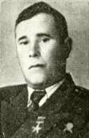
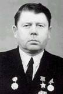
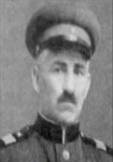

БЕРЕГ ГЕРОЕВ
Краткие библиографические сведения о Героях Советского Союза, увековеченных на Аллее Героев мемориала “Битва за Днепр”
Аглиуллин Хамит Шамсутдинович (20.03.1919 - 15.10.1943), Герой Советского Союза (30.10.1943г.)
Аглиуллин Хамит Шамсутдинович - командир отделения сапёрного взвода 43-го стрелкового полка 106-й стрелковой дивизии 65-й армии Центрального фронта, старший сержант.
Родился 20 марта 1919 года в селе Удряк-Баш Благоварского района Башкирии в крестьянской семье. Татарин. Работал в колхозе имени Фрунзе Благоварского района. В Красную Армию призван в 1939 году Благоварским райвоенкоматом Башкирской АССР. С февраля 1943 на фронте.
15 октября 1943 года старший сержант Аглиуллин под сильным огнём противника с группой разведчиков и минёров переправился через реку Днепр в районе посёлка городского типа Лоев Гомельской области Белоруссии. Принимал участие в захвате, удержании и расширении плацдарма на правом берегу. Огнём из автомата и гранатами выбил гитлеровцев из траншеи, чем содействовал переправе советских войск. В трудные моменты боя перевозил боеприпасы для всего подразделения.
Погиб на плацдарме 15 октября 1943 г. Похоронен в братской могиле в г.п.Лоев.
Звание Героя Советского Союза старшему сержанту Аглиуллину Хамиту Шамсутдиновичу присвоено посмертно Указом Президиума Верховного Совета СССР от 30 октября 1943 года. Награжден орденом Ленина, Красной Звезды. Именем Героя названы улица и школа в селе Удряк-Баш.
Азалов Клычнияз (10.03.1921 - 27.12.1943), Герой Советского Союза (15.01.1944г.)
Азалов Клычнияз - сабельник 58-го гвардейского кавалерийского полка 16-й гвардейской Черниговской кавалерийской дивизии, сформированной в декабре 1941 года в городе Уфе, как 112-я Башкирская кавалерийская дивизия, 7-го гвардейского кавалерийского корпуса 61-й армии Центрального фронта, гвардии красноармеец.
Родился 10 марта 1921 года в ауле Меджаур Баба Сары ныне Марыйского этрапа Марыйского велаята Туркменистана в крестьянской семье. Туркмен. Работал в колхозе. В Красной Армии с 1941 года. С мая 1943 года на фронте.
Гвардии рядовой К. Азалов отличился при форсировании Днепра у г.п.Лоев в октябре 1943 г. В составе отделения под пулеметно-минометным огнем противника переправился на правый берег реки, занял оборону и в течение 2 часов винтовочным огнем и гранатами сдерживал контратаку гитлеровцев, чем содействовал успешной переправе подразделения. Затем первый бросился в окопы противника, уничтожил 13 гитлеровцев.
Умер от ран 27 декабря 1943 года. Похоронен в городе Светлогорске Гомельской области Белоруссии.
Указом Президиума Верховного Совета СССР от 15 января 1944 года за образцовое выполнение боевого задания командования в борьбе с немецко-фашистскими захватчиками и проявленные при этом мужество и героизм гвардии красноармейцу Азалов Клычниязу присвоено звание Героя Советского Союза. Награждён орденом Ленина. Посмертно удостоен высшей степени отличия Туркмении - звания "Герой Туркменистана".
Именем Героя названы улица в городе Светлогорске, школа № 3, в которой он учился. В родном колхозе установлен бюст Героя.
Азизов Домулло (15.03.1913 – 24.10.1943), Герой Советского Союза (30.10.1943г.)
Младший сержант Домулло Азизов родился 15 марта 1913 г. в кишлаке Кистакуз (позже Ходжентский район Ленинабадской области). Образование среднее. Работал учителем средней школы кишлака Кистакуз. С 1942 в армии. Участник Великой Отечественной войны с апреля 1942.
Младший сержант Домулло Азизов отличился при форсировании Днепра в Лоевском райне 15 октября 1943г. Младший сержант, командир пулеметного расчета 120- го стрелкового полка при форсировании Днепра у поселка городского типа Радуль (северо- западнее Чернигова) в составе десантной группы в числе первых переправился на противоположный берег, ворвавшись во вражескую траншею, гранатой уничтожил расчет станкового пулемета и группу автоматчиков противника. Награжден орденом Красной Звезды СССР.
Погиб 24 октября 1943 г. при освобождении деревни Островы (Лоевский район Гомельской области). Похоронен в братской могиле в деревне Ново-Борщевка Лоевского района.
Указом Президиума Верховного Совета СССР от 30 октября 1943 г. присвоено звание Героя Советского Союза, награжден орденом Ленина СССР. Его именем названы улица в Минске, колхоз и школа в Ходжентском районе, школа в городе Куляб Таджикской ССР. В городе Ленинабад и в кишлаке Кистакуз установлены памятники.
Акимов Василий Иванович (29.12.1922 - 01.01.1992), Герой Советского Союза (09.02.1944г.)
Акимов Василий Иванович – командир батареи 32-го гвардейского стрелкового полка (12-я гвардейская стрелковая дивизия, 61-я армия, Центральный фронт), гвардии капитан.
Родился 29 декабря 1922 года в деревне Горелый Лом ныне Ярцевского района Смоленской области. Русский. В 1940 году окончил 10 классов школы в деревне Шуклино (Ярцевский район). В армии с октября 1940 года. Служил в артиллерии в Киевском военном округе, с июля 1941 года обучался в Киевском артиллерийском училище. В июле 1941 года участвовал в обороне Киева, 20 июля 1941 года был легко ранен. В октябре 1941 года окончил Киевское артиллерийское училище . В 1941-1942 гг. – командир взвода и заместитель командира батареи артиллерийского дивизиона 8-го воздушно-десантного корпуса (в Московском военном округе).Участник Великой Отечественной войны: в августе 1942 г. – командир батареи 45-мм орудий 37-го гвардейского отдельного истребительно-противотанкового дивизиона (Сталинградский фронт). Участвовал в обороне Сталинграда. 25 августа 1942 года был ранен и отправлен в госпиталь. В октябре 1942 г. – июле 1944 г. – заместитель командира штабной батареи и командир батареи 76-мм орудий 32-го гвардейского стрелкового полка (Западный, Брянский, Центральный, Белорусский, 2-й и 1-й Белорусские фронты). Участвовал в Курской битве, Орловской, Черниговско-Припятской, Гомельско-Речицкой, Калинковичско-Мозырской и Люблин-Брестской операциях. 14 ноябре 1943 года был легко ранен. В боях на подступах к городу Брест (Белоруссия) 24 июля 1944 года был тяжело ранен и отправлен в госпиталь.
Особо отличился при форсировании Днепра. С передовым отрядом полка 28-29 сентября 1943 года форсировал реку в районе деревни Глушец (Лоевский район) и переправил на плотах два орудия. Нанёс контратакующему врагу большой урон и сохранил свой личный состав и материальную часть. Плацдарм был удержан, что способствовало переправе полка.
За мужество и героизм, проявленные в боях, гвардии капитану Акимову Василию Ивановичу Указом Президиума Верховного Совета СССР от 9 февраля 1944 года присвоено звание Героя Советского Союза с вручением ордена Ленина и медали «Золотая Звезда».
До лета 1945 года находился на излечении в госпитале. С августа 1945 года гвардии капитан В.И. Акимов – в отставке. В 1950 году окончил Институт внешней торговли. Жил в Москве.
Умер 1 января 1992 года. Похоронен на Ваганьковском кладбище в Москве.
Капитан (1943). Награждён орденами Ленина, Отечественной войны 1-й степени, 2 орденами Отечественной войны 2-й степени, орденом Трудового Красного Знамени, медалью «За отвагу», другими медалями.
Акуционок Пётр Антонович (25.04.1922 - 15.10.1943), Герой Советского Союза (30.10.1943г.)
Акуционок Пётр Антонович – командир стрелкового взвода 685-го стрелкового полка 193-й стрелковой дивизии 65-й армии Центрального фронта, младший лейтенант.
Родился 25 апреля 1922 года в посёлке Шумилино Витебской области в семье рабочего. Белорус. Член ВЛКСМ. Образование 8 классов. Работал в районном Доме культуры, был неизменным организатором и участником всех массовых и спортивных мероприятий. С началом Великой Отечественной войны Акуционок добровольно записался в истребительный отряд для борьбы с вражескими диверсантами и лазутчиками. Не раз доводилось ему участвовать в стычках с фашистами. Но когда гитлеровские войска подступили к родному посёлку, Акуционка, не бывшего в армии, эвакуировали в Киргизию, где он работал в колхозе в Ошской области.
В Красную Армию Акуционка призвали в феврале 1943 года. Он окончил краткосрочные командные курсы и в звании младшего лейтенанта прибыл на фронт. Боевое крещение командир взвода Акуционок принял под Курском, подбив в первом же бою вражеский танк. Всё лето он участвовал в боях: после разгрома фашистов на Курской дуге дивизия, в которой служил Акуционок, продолжала наступление в составе 65-й армии. Ей приходилось форсировать реки Северную Десну, Сож, много мелких речушек, на которых враг всячески пытался удержаться. На этом пути младший лейтенант Акуционок проявил себя смелым и умелым командиром.
П.А. Акуционок отличился в октябре 1943 г. при форсировании Днепра у г.п. Лоев. 15 октября 1943 года правый берег Днепра содрогнулся от взрывов тысяч снарядов и мин. Сапёры, достигшие середины реки, пустили дымовую завесу. Бойцы взвода Акуционка на лодках и плотах устремились к другому берегу. Вода кипела от разрывов вражеских снарядов, мин, пулемётных очередей. Первыми достигли правого берега Днепра 2 стрелковых взвода. Одним из них был взвод Акуционка. Под неутихающим обстрелом они бросились на штурм вражеских траншей. Акуционок бежал впереди бойцов. Одной рукой он крепко держал автомат, другой – красный флаг. Жестокий бой на правом берегу продолжался всё утро. Выполняя задачу расширить захваченный плацдарм и прорваться в глубь обороны врага, бойцы взвода выбили противника из траншеи. К середине дня 15 октября 1943 года высота Круглая была в наших руках. П.А. Акуционок на захваченной высотке водрузил красное знамя. На этой высоте вражеская пуля сразила командира взвода младшего сержанта Акуционка… К вечеру плацдарм расширили в глубину до 4 – 8 километров. Путь в Белоруссию был открыт….
Указом Президиума Верховного Совета СССР от 30 октября 1943 года за форсирование реки Днепр и успешное закрепление плацдарма не его берегу, образцовое выполнение боевых заданий командования на фронте борьбы с немецко-фашистскими захватчиками и проявленные при этом отвагу и геройство младшему лейтенанту Петру Антоновичу Акуционку было посмертно присвоено звание Героя Советского Союза.
Похоронен Герой в братской могиле в посёлке Лоев Гомельской области.
Имя Героя носят: в Лоеве – улица, где установлена мемориальная доска, в Шумилино – улица и школа, на здании которой также установлена мемориальная доска. Имя Героя занесено в Книгу народной славы Шумилинского района Приказом Министра обороны СССР П.А.Акуционок навечно зачислен в списки личного состава воинской части. Награждён орденом Ленина.
Алексеев Григорий Алексеевич (25.10.1903 - 09.11.1943), Герой Советского Союза (30.10.1943г.)
Алексеев Григорий Алексеевич - стрелок 744-го стрелкового полка (149-я стрелковая дивизия, 65-я армия, Центральный фронт) рядовой.
Родился 25 октября 1903 года в деревне Сюнелькино (с 1963 года в составе села Изедеркино) ныне Моргаушского района Чувашской республики в семье рабочего. Чуваш. Рос в многодетной семье. Восемь братьев жили дружно, помогали родителям. В 1925 году Григорий был призван в Красную Армию. Проходил срочную службу в артиллерийском полку пограничных войск. После увольнения в запас переехал в Ивановскую область, жил в поселке Долматовский, ныне Заволжского района. Работал участковым милиционером в городе Кинешма.
В ноябре 1941 года вновь призван в Красную Армию и направлен в пехоту. На фронт ушли и все братья. Сражался Григорий отважно, в одном из боев поджег бутылкой вражеский танк. Под Ржевом был ранен, после госпиталя вернулся на фронт.
Отличился в боях при форсировании Днепра. В ночь на 16 октября 1943 года рядовой Алексеев в составе десантной группы под сильным огнём преодолел Днепр в районе поселка Лоев. Участвовал в отражении контратак противника при удержании плацдарма, лично подбил несколько танков. Был несколько раз ранен, но не покинул поле боя.
В ночь с 15 на 16 число взвод, в котором служил Григорий Алексеев, получил задание переправиться на правый берег Днепра и захватить плацдарм. Наскоро сделали самодельные плотики. В полночь погрузились и двинулись к вражескому берегу. Фашисты обнаружили десант. Расцветилось небо огнями ракет, вспыхнули прожекторы. Над рекой взметнулись султаны разрывов. Но все ближе берег. Алексеев первым прыгнул в воду и устремился вплавь. За ним бросились другие. А через несколько минут наши бойцы уже вели рукопашную схватку во вражеской траншее. Не знали фашисты, что имеют дело всего-навсего с горсткой смельчаков. Опомнились только утром и начали яростные атаки. В течение целого дня стойко держались защитники небольшого плацдарма. Таяли их ряды, но и ранеными они продолжали сражаться. У Алексеева забинтована голова, перевязаны рука и нога, а он не оставлял своей боевой позиции. Враг решил разделаться с десантниками до темноты. После мощного артналета гитлеровцы пошли в контратаку под прикрытием шести танков. Погиб ручной пулеметчик, находившийся рядом с Алексеевым. Через минуту был убит и второй номер. А фашисты все ближе. Григорий взял пулемет, запасные магазины и изготовился к стрельбе. Под рукой припас противотанковые гранаты. Когда головной фашистский танк был уже в нескольких шагах, Алексеев поднялся над бруствером траншеи и бросил гранату. Вместе со взрывом раздался звон порванной гусеницы.Спустя несколько минут он поджег второй немецкий танк.
- Это вам за братьев! - крикнул Алексеев, вытирая пилоткой вспотевший лоб.
Но в это время четвертый танк на полном ходу перевалил траншею. Недолго думая, Алексеев бросил вслед ему гранату. Да неудачно, промахнулся. Тогда он схватил еще гранату и, выпрыгнув из траншеи, погнался за танком. Вторым броском он подорвал ему гусеницу.Едва успел Алексеев вернуться в траншею, как фашистские автоматчики пошли в атаку. Он залег за пулемет и короткими, но меткими очередями заставил их отступить. Вдруг совсем рядом разорвался снаряд. Алексеев успел только заметить возле себя двух пулеметчиков, которых прислал ему на помощь командир взвода. Все остальное поплыло, как в тумане. Не слышал, как откатывались оставшиеся в живых фашисты, не знал, что с наступлением темноты переправились основные силы полка и расширили плацдарм, не помнил, как он, истекающий кровью, был переправлен на левый берег. Очнулся он только в госпитале. А через две недели узнал о присвоении звания Героя Советского Союза.
Указом Президиума Верховного Совета СССР от 30 октября 1943 года за образцовое выполнение заданий командования и проявленные мужество и героизм в боях с немецко-фашистскими захватчиками рядовому Алексееву Григорию Алексеевичу присвоено звание Героя Советского Союза с вручением ордена Ленина и медали "Золотая Звезда".
Высокую награду герой получить не успел. От тяжелых ран он скончался в госпитале.
Награжден орденом Ленина. Имя Героя носит улица в деревне Изедеркино. На доме, где он родился, установлена мемориальная доска. В городе Заволжск Ивановской области перед зданием военкомата установлен бюст.
Алимбетов Абылай (20.03.1921 - 23.09.1973), Герой Советского Союза (30.10.1943г.)
Алимбетов Абылай - командир отделения роты автоматчиков 303-го стрелкового полка 69-й Краснознамённой Севской стрелковой дивизии 65-й армии Центрального фронта, сержант.
Родился 20 марта 1921 года в кишлаке Хумсан ныне Бостанлыкского района Ташкентской области Узбекистана в крестьянской семье. Казах. Образование среднее. В Красную Армию призван Бостанлыкским райвоенкоматом Ташкентской области Узбекской ССР в январе 1942 года. С того же года на фронте. Член ВКП(б)/КПСС с 1944 года.
Отличился в октябре 1943 г. при форсировании Днепра у г.п.Лоев. Командир отделения роты автоматчиков 303-го стрелкового полка (69-я стрелковая дивизия, 65-я армия, Центральный фронт) комсомолец сержант Абылай Алимбетов 15 октября 1943 года форсировал реку Днепр в районе посёлка городского типа Радуль Репкинского района Черниговской области Украины и во главе бойцов вверенного ему отделения ворвался во вражескую траншею. В бою на правом берегу Днепра сержант Алимбетов А. заменил погибшего командира взвода. Взвод под его командованием отразил пять контратак противника и удержал захваченный рубеж, что дало возможность соседним подразделениям успешно форсировать Днепр.
Указом Президиума Верховного Совета СССР от 30 октября 1943 года за образцовое выполнение боевых заданий командования на фронте борьбы с немецко-фашистскими захватчиками и проявленные при этом мужество и героизм сержанту Алимбетову Абылаю присвоено звание Героя Советского Союза с вручением ордена Ленина и медали «Золотая Звезда».
После войны А. Алимбетов продолжал службу в армии. Окончил Ленинградское военно-политическое училище, затем Военно-политическую академию имени В.И. Ленина. Полковник Абылай Алимбетов работал председателем комитетов ДОСААФ в Кзыл-Ординской, Талды-Курганской и Гурьевской областях Казахстана.
Умер 23 сентября 1973 года.
Награждён орденом Ленина, Отечественной войны 2-й степени, медалями. В посёлке городского типа Кировский Чимкентской области установлен бюст Героя.
Андрейко Николай Матвеевич (06.05.1922 - 28.12.2008), Герой Советского Союза (30.10.1943г.)
Андрейко Николай Матвеевич - старший телефонист 685-го стрелкового полка 193-й стрелковой Краснознаменной дивизии 65-й армии Центрального фронта, красноармеец.
Родился 6 мая 1922 года в селе Ольшаны, ныне поселок городского типа Дергачёвского района Харьковской области Украины, в семье рабочего. Украинец. Окончил Ольшанскую семилетнюю школу. В 1938 году поступил на Харьковский завод имени Коминтерна (ныне завод транспортного машиностроения имени Малышева), где работал сначала учеником, а затем модельщиком.
В Красной Армии с июля 1941 года. Участник Великой Отечественной войны. Принимал участие в боях под Севастополем, Воронежем, Курском, Львовом, Севском, форсировал Десну, Сож, Днепр. В боях с немецко-фашистскими захватчиками был несколько раз ранен и контужен, но после лечения неизменно возвращался в действующую армию.
Старший телефонист 685-го стрелкового полка (193-я стрелковая дивизия, 65-я армия, Центральный фронт) комсомолец красноармеец Николай Андрейко отличился 15 октября 1943 года при форсировании Днепра у поселка городского типа Лоев.
Исполняя обязанности командира отделения, участвовал в изготовлении из брёвен плота для имущества, а затем стал переправляться вместе с двумя бойцами через Днепр. Когда до берега оставалось преодолеть последние десятки метров, от разрыва снаряда плот Андрейко перевернулся. Пришлось добираться вплавь, захватив с собой катушки с проводом и несколько телефонных аппаратов. На втором плоту переправилось еще восемь солдат. Николай Андрейко одним из первых ворвался в немецкую траншею. Завязалась рукопашная схватка. Двух гитлеровцев он застрелил, одного заколол штыком. Вскоре Андрейко и его товарищи установили связь со штабом полка и получили приказ: «Удержать плацдарм до подхода основных сил». Этот боевой приказ воины выполнили. Фашисты бросались в ожесточенные контратаки, обстреливали траншею из минометов и пулеметов. Но, одиннадцать смельчаков не дрогнули и удержали плацдарм. Через сутки на правый берег переправились все подразделения полка.
Указом Президиума Верховного Совета СССР от 30 октября 1943 года за образцовое выполнение боевых заданий командования на фронте борьбы с немецко-фашистскими захватчиками и проявленные при этом мужество и героизм, красноармейцу Андрейко Николаю Матвеевичу присвоено звание Героя Советского Союза с вручением ордена Ленина и медали «Золотая Звезда».
В октябре 1943 года Андрейко был тяжело ранен. Около года врачи боролись за его жизнь, несколько раз оперировали. Раны заживали, а потом снова открывались... В теле Героя так и остались несколько металлических осколков.
После войны Н.М. Андрейко демобилизован из Вооруженных Сил СССР. В 1947 году стал членом ВКП(б)/КПСС. Вернулся на Харьковский завод имени Малышева. Однако здоровье не позволило ему снова стать к станку. Закончив Харьковские областные курсы партийных и советских работников, Н.М. Андрейко около двадцати лет работал старшим экономистом в модельном цехе. Потом его выдвинули на должность начальника бюро труда и зарплаты того же цеха. Без отрыва от производства ветеран войны закончил двухгодичную учетно-плановую школу и Харьковский учетно-экономический техникум. На протяжении многих лет Н.М. Андрейко избирали председателем цехового комитета и членом заводского комитета профсоюза, был он и секретарем цеховой партийной организации. Часто выступал перед молодежью, рассказывая о подвигах советских людей в годы Великой Отечественной войны. Жил в областном центре Украины – городе Харькове.
Умер 28 декабря 2008 года. Похоронен в Харькове на кладбище № 2.
Награжден орденом Ленина, орденом Отечественной войны 1-й степени, орденом Трудового Красного Знамени, украинскими орденами, среди которых орден Богдана Хмельницкого 2-й степени, медалями. Почетный гражданин Харькова. На доме, в котором жил Н.М.Андрейко, установлена мемориальная доска.
Анищенков Павел Яковлевич (05.06.1919 - 11.04.1990), Герой Советского Союза (30.10.1943г.)
Анищенков Павел Яковлевич - командир отделения разведки дивизиона 362-го артиллерийского полка 106-й стрелковой дивизии 65-й армии Центрального фронта, старший сержант.
Родился 5 июня 1919 года в деревне Никольское 3-е ныне Верхнехавского района Воронежской области в крестьянской семье. Русский. Окончил 5 классов. Рано осиротел. Работал в колхозе с 13 лет скотником и пастухом. Затем переехал в Воронеж и работал в городской пожарной охране.На срочной военной службе с 1939 года. Служил на Дальнем Востоке в Пограничных войсках Народного комиссариата внутренних дел (НКВД) СССР, в Гродековском Краснознамённом имени Л.М. Кагановича пограничном отряде НКВД. С 1942 года - на фронтах Великой Отечественной войны. Член ВКП(б)/КПСС с 1943 года.
Командир отделения разведки дивизиона 362-го артиллерийского полка (106-я стрелковая дивизия, 65-я армия, Центральный фронт) старший сержант Павел Анищенков 15 октября 1943 года севернее посёлка городского типа Лоев обнаружил на середине реки Днепр лодку с пятью ранеными советскими воинами. Перегнав её к левому берегу и оказав бойцам первую помощь, артиллерийский разведчик Анищенков продолжал выполнение задачи.В ходе разведки на правом берегу реки старший сержант уничтожил расчёт пулемёта противника, обнаружил семь вражеских пулемётных точек и миномётную батарею, которые по его данным были подавлены артиллерийским огнём.
Указом Президиума Верховного Совета СССР от 30 октября 1943 года за образцовое выполнение боевых заданий командования на фронте борьбы с немецко-фашистскими захватчиками и проявленные при этом мужество и героизм старшему сержанту Анищенкову Павлу Яковлевичу присвоено звание Героя Советского Союза с вручением ордена Ленина и медали «Золотая Звезда».
После войны П.Я. Анищенков продолжал службу в Советской Армии. С 1956 года старший лейтенант Анищенков П.Я. - в запасе. Жил в родной деревне, затем переехал в город Воронеж.
Умер 11 апреля 1990 года.
Награждён орденом Ленина, орденом Отечественной войны 1-й степени, 2-я орденами Красной Звезды, медалями.
Анохин Иван Фёдорович (21.09.1902 - 17.06.1977), Герой Советского Союза (15.01.1944г.)
Анохин Иван Фёдорович – заместитель командира 3-го батальона по политической части 467-го стрелкового полка 81-й стрелковой дивизии 61-й армии Центрального фронта, капитан.
Родился 21 сентября 1902 года в селе Пол-Успенье ныне Измалковского района Липецкой области в семье столяра. Русский. Член ВКП(б) с 1928 года. С марта 1933 года жил в городе Москве. Работал в Центральном комитете профсоюза рабочих металлургической промышленности восточных районов страны. В Красной Армии служил в 1924-1925 годах. В октябре 1941 года снова был призван в армию и направлен на учёбу в Военно-политическую академию имени В.И.Ленина. Учился до октября 1942 года.
В боях с немецко-фашистскими захватчиками участвовал с ноября 1942 года в составе 467-го стрелкового полка 81-й стрелковой Калинковичской дивизии в должности заместителя командира стрелкового батальона по политической части. 5 июля 1943 года немецкое командование нанесло главный удар в направлении города Курска в районе посёлка Поныри, где оборонялась 81-я стрелковая дивизия 13-й армии. В течение 5 часов 3-й батальон совместно с другими подразделениями 467-го стрелкового полка героически отражал яростные атаки врага. Капитан И.Ф.Анохин за этот бой был награждён орденом Красного Знамени.
30 сентября 1943 года 81-я стрелковая дивизия вышла к Днепру в районе хутора Кукары, между озёрами Святое и Линное и немедленно начала форсирование реки. Руководство первой десантной группой Анохин взял на себя. Ей предстояло овладеть плацдармом на правом берегу реки в районе населённого пункта Глушец. Несмотря на ураганный огонь, вскоре на земле Правобережья было уже 20 человек. Бойцы быстро окопались и установили связь со штабом полка. Вскоре на плацдарме сосредоточился и весь 3-й стрелковый батальон. Начались ожесточённые многодневные бои на плацдарме. В один из дней Анохин заменил раненого командира батальона. Под его руководством батальон перешёл в атаку, продвинулся вперёд более чем на 500 метров, заняв более выгодные позиции в районе безымянного озера, и тем самым создал благоприятные условия для форсирования Днепра другими подразделениями 81-й стрелковой дивизии. Особенно упорные и сильные контратаки враг предпринял 6 октября 1943 года. Обстановка на участке батальона сложилась тяжёлая. Роты несли потери. Но герои стояли насмерть. Капитан Анохин неоднократно водил батальон в контратаки, которые доходили до рукопашных схваток. Стратегический плацдарм на правом берегу Днепра был удержан.
Указом Президиума Верховного Совета СССР от 15 января 1944 года за образцовое выполнение боевых заданий командования на фронте борьбы с немецкими захватчиками и проявленные при этом отвагу и геройство капитану Анохину Ивану Фёдоровичу присвоено звание Героя Советского Союза с вручением ордена Ленина и медали «Золотая Звезда».
После битвы за Днепр И.Ф. Анохин участвовал в освобождении Белоруссии, Прибалтики, Польши, в разгроме немецко-фашистских войск на территории Германии. Был заместителем командира стрелкового батальона по политчасти, парторгом полка, инструктором политотдела.
После войны И.Ф.Анохин до 1955 года служил в Советской Армии, занимая различные должности. В 1955 году он уволился в запас в звании полковника. Жил в городе Москве.
Умер 17 июня 1977 года. Похоронен в городе Макеевка Донецкой области (Украина).
Награждён орденами Ленина, Красного Знамени, 2 орденами Отечественной войны 1-й степени, орденом Красной Звезды, медалями.
Апарин Максим Григорьевич (08.1920 - 16.11.1943), Герой Советского Союза (30.10.1943г.)
Апарин Максим Григорьевич - командир орудия огневого взвода 43-го Даурского стрелкового полка 106-й Забайкальской стрелковой дивизии 65-й армии Центрального фронта, старший сержант.
Родился в августе 1920 года в деревне Новошелковниково ныне Барабинского района Новосибирской области. Русский. Из крестьянской семьи.Учился в Пензинской средней школе Барабинского района, из-за ранней смерти отца вынужден был прервать учебу. Трудился в колхозе "Наш край" Барабинского района. В октябре 1939 года Барабинским райвоенкоматом призван на срочную службу в Пограничные войска НКВД СССР. Служил в Находкинском пограничном отряде на Дальнем Востоке, был стрелком, пулеметчиком, старшиной морского пограничного поста "Шамора".
К ноябрю 1942 года на Дальнем Востоке были сформированы несколько дивизий из воинов-пограничников. В 43-й Даурский стрелковый полк был зачислен сержант Апарин. Сформированный из пограничников стрелковый полк прибыл в действующую армию на Центральный фронт Великой Отечественной войны в начале 1943 года. Участвовал в боях под Малоархангельском и Севском зимой 1943 года, в Курской битве, в форсировании Днепра.
Командир орудия ст. сержант М.Г. Апарин отличился при форсировании Днепра в районе г.п. Лоева. Полк первым в дивизии приступил к форсированию Днепра на рассвете 15 октября 1943 года. При переправе вражеским артогнём был разбит плот, на котором переправлялся расчет 45-милиметрового орудия 43-го стрелкового полка 106-й стрелковой дивизии 65-й армии Центрального фронта старшего сержанта Максима Григорьевича Апарина. Орудие пошло на дно. В секунды Апарин схватил уходящий под воду трос, прикрепленный к орудию, и бросил его на соседнюю лодку. Совместными усилиями бойцы вытащили орудие на берег. Втащив орудие на днепровскую кручу, расчет Апарина сразу вступил в бой. Прямой наводкой старший сержант Апарин уничтожил дзот и 2 огневые точки, обеспечил продвижение стрелковых частей. К утру следующего дня, 16 октября, враг подтянул танки и предпринял попытки сбросить полк с плацдарма. Но артиллеристы за ночь выкопали и замаскировали орудия на удобной позиции и достойно встретили врага. На орудие Апарина двигались 3 танка. Точным выстрелом был подбит первый танк. Однако этим выстрелом орудие выдало себя и подверглось мощному артобстрелу. Наводчик погиб у орудия, все бойцы получили ранения, был разбит прицел у пушки. Апарин был контужен. Вместе с раненым, заряжающим старший сержант Максим Апарин вытащил орудие на прямую наводку и уничтожил второй танк. Атака врага была отбита. В дальнейших боях на плацдарме Апарин довел счет уничтоженных огневых точек врага до 10. Вечером 16 октября на плацдарм начали переправу основные силы дивизии.
За мужество и героизм, проявленные на фронте борьбы с немецко-фашистскими захватчиками, Указом Президиума Верховного Совета СССР от 30 октября 1943 года старшему сержанту Апарину Максиму Григорьевичу присвоено звание Героя Советского Союза.
Боевой путь Героя оказался совсем коротким. В ходе Гомельско-Речицкой наступательной операции войск Центрального фронта по освобождению восточных районов Белоруссии старший сержант Апарин погиб смертью храбрых в бою 16 ноября 1943 года в районе посёлка Лоев Гомельской области Белорусской ССР.
Награждён орденами Ленина, Отечественной войны 2-й степени.
Похоронен в братской могиле советских воинов в центральном парке поселка Лоев Гомельской области Белорусской ССР.
Именем Героя названы улицы в городе Барабинск и в посёлке городского типа Лоев. Бюсты Героя установлены в деревне Пензино Барабинского района Новосибирской области и в городе Находкa Приморского края (2007). На здании средней школы в деревне Пензино установлена мемориальная доска. Заставе, на которой Максим Апарин служил перед войной, постановлением Совета Министров СССР от 12 августа 1982 года присвоено его имя (ныне в составе Тихоокеанского регионального пограничного управления Федеральной пограничной службы ФСБ России).
Арсенюк Александр Николаевич (02.08.1910 - 27.03.1996), Герой Советского Союза (15.01.1944г.)
Арсенюк Александр Николаевич - снайпер 58-го гвардейского кавалерийского полка 16-й гвардейской Черниговской кавалерийской дивизии, сформированной в декабре 1941 года в городе Уфе, как 112-я Башкирская кавалерийская дивизия, 7-го гвардейского кавалерийского корпуса 61-й армии Центрального фронта, гвардии рядовой.
Родился 2 августа 1910 года в селе Михайловка ныне Ананьевского района Одесской области Украины в крестьянской семье. Украинец. Член ВКП(б)/КПСС с 1945 года. Образование неполное среднее. Работал монтажником. В Красную Армию призван в июне 1941 года и направлен в действующую армию.
Снайпер 58-го гвардейского кавалерийского полка (16-я гвардейская кавалерийская дивизия, 7-й гвардейский кавалерийский корпус, 61-я армия, Центральный фронт) гвардии красноармеец Александр Арсенюк в ночь на 27 сентября 1943 года в числе первых переправился на правый берег Днепра. На берегу, занятом, противником, бесстрашный гвардеец, вооружённый автоматом и кинжалом, ворвался во вражескую траншею, убил гитлеровского офицера, взял в плен обер-ефрейтора и доставил его в штаб полка (переправившись вместе с «языком» на левый берег). Пленный дал ценные сведения о расположении противника и его укреплениях.
Гвардии рядовой Арсенюк, вернувшись на правый берег Днепра, продолжал совершать дерзкие вылазки в немецкий тыл, добывая новые сведения. В бою за деревню Нивки Брагинского района Гомельской области Белоруссии отважный воин был тяжело ранен…
Указом Президиума Верховного Совета СССР от 15 января 1944 года за образцовое выполнение боевого задания командования в борьбе с немецко-фашистскими захватчиками и проявленные при этом мужество и героизм гвардии красноармейцу Арсенюку Александру Николаевичу присвоено звание Героя Советского Союза с вручением ордена Ленина и медали «Золотая Звезда».
После войны старший сержант Арсенюк А.Н. демобилизован. В 1952 году он окончил Институт повышения квалификации руководящих и инженерно-технических работников. Жил в городе-герое Москве.
Умер 27 марта 1996 года. Похоронен в Москве на Троекуровском кладбище.
Награждён орденом Ленина, орденом Отечественной войны 1-й степени, медалями.
Имя А.Н. Арсенюка высечено золотыми буквами на мемориальных досках вместе с именами всех 78-и Героев Советского Союза 112-й Башкирской (16-й гвардейской Черниговской) кавалерийской дивизии, установленных в Национальном музее Республики Башкортостан г. Уфа, и в Музее 112-й (16-й гвардейской) Башкирской кавалерийской дивизии г.Уфа.
Артемьев Николай Михайлович (02.01.1921 - 28.08.1990), Герой Советского Союза (30.10.1943г.)
Артемьев Николай Михайлович - стрелок 479-го стрелкового полка 149-й стрелковой дивизии 65-й армии Центрального фронта, красноармеец. Родился 2 января 1921 года в деревне Угол ныне Вожегодского района Вологодской области в крестьянской семье. Русский. Окончил Новожиловскую неполную среднюю школу, затем ФЗУ в городе Няндома. Работал в течение двух лет техником в паровозном депо станции «Вожега». В Красной Армии с 1940 года. В действующей армии с июня 1941 года. Член ВКП(б)/КПСС с 1944 года.
Начало Великой Отечественной войны застало Николая Артемьева в городе Брянске, где он проходил действительную военную службу в железнодорожных войсках. В боях осенью 1941 года часть, в которой он служил, попала в окружение, но сумела из него вырваться. В 1942 году Н.М. Артемьев сражался в Сталинграде, на Мамаевом кургане, где получил тяжёлое ранение и контузию. После излечения – принимал активное участие в Орловско-Курской битве.
Стрелок 479-го стрелкового полка (149-я стрелковая дивизия, 65-я армия, Центральный фронт) красноармеец Николай Артемьев особо отличился при форсировании реки Днепр. 16 октября 1943 года в районе г.п. Лоев красноармеец Артемьев Н.М. с группой бойцов переправился на правый берег Днепра, закрепился на нём и прикрывал огнём переправу своих подразделений.
Указом Президиума Верховного Совета СССР от 30 октября 1943 года за образцовое выполнение боевых заданий командования на фронте борьбы с немецко-фашистскими захватчиками и проявленные при этом мужество и героизм красноармейцу Артемьеву Николаю Михайловичу присвоено звание Героя Советского Союза с вручением ордена Ленина и медали «Золотая Звезда».
После битвы на Днепре были бои в Польше и Германии. Николю Артемьеву не довелось дойти до столицы гитлеровской Германии Берлина несколько километров. 18 февраля 1945 года на реке Одер он был тяжело ранен: прострелено легкое, перебиты три ребра. Пришлось перенести две сложнейшие операции. День Победы, 9 мая 1945 года, застал Героя Советского Союза Артемьева в госпитале на Украине. После войны он служил в Германии, в Ленинградском военном округе и в частности - в Смольнинском районном военном комиссариате города Ленинграда, где занимался вопросами подготовки юношей к службе в рядах Вооружённых Сил СССР. В 1946 году он окончил курсы усовершенствования офицерского состава. С 1962 года подполковник Артемьев Н.М. - в запасе. Жил в городе Пушкин администрации Санкт-Петербурга.
Умер 28 августа 1990 года. Похоронен на Казанском кладбище города Пушкин (по новому административному делению - в составе г. Санкт-Петербург).
Награждён орденом Ленина, 2-я орденами Отечественной войны 1-й степени, Красной Звезды, медалями.
Афанасьев Павел Александрович (16.12.1922 - 1994), Герой Советского Союза (15.01.1944г.)
Афанасьев Павел Александрович родился 16.12.1922 в дер. Крутицы ныне Киреевского р-на Тульской области в крестьянской семье. Русский. Член КПСС с 1943.Образование среднее. Работал в колхозе.
В Советской Армии с феврале 1942. В окт. 1942 окончил курсы младших лейтенантов Брянского фронта, стал командиром роты 37-го гвардейского стрелкового полка (12-я гвардейская стрелковая дивизия, 61-я армия, Центральный фронт).
29.9.1943 года рота под командованием гвардии старшего лейтенанта Афанасьева на подручных средствах переправилась под огнём противника через Днепр в районе пгт. Любеч (Черниговской обл.) и захватила плацдарм. Отбив несколько атак противника, обеспечила переправу остальных подразделений полка.
В представлении на награждение, его подвиг описан следующим образом:
«В боях за Социалистическую Родину против немецких захватчиков он проявил образцы мужества, отваги и геройства. В бою 26.9.1943 г. за местечко Любечь, Черниговской области, когда противник предпринял ожесточённую танковую контратаку с десантом автоматчиков, тов. Афанасьев, умело руководя своим подразделением, отразил пехоту противника от танков, фланговыми обходами окружил и в штыковом бою уничтожил 50 немецких солдат и офицеров. В этом бою он лично уничтожил 15 немецких солдат и офицеров. Отрезанные танки от пехоты быстро откатились на исходные позиции. Отразил танковую атаку и первым ворвался в местечско Любечь, овладел шоссейной дорогой ведущей к переправе на реке Днепр и огнём из всех видов оружия поджёг 4 немецких автомашины с офицерами и солдатами противника. 28.9.1943 г. на подручных средствах с группой бойцов под сильным артминомётным и пулеметным огнём противника, форсировал реку Днепр, закрепился на правом берегу и создал плацдарм для всего батальона. Противник неоднократно переходил в контратаку на подразделения тов. Афанасьева, имея целью очистить правый берег Днепра, но каждый раз откатывался с большими для него потерями. Занятый рубеж прочно удерживается. ВЫВОД: Достоин присвоения звания ГЕРОЯ СОВЕТСКОГО СОЮЗА.».
Звание Героя Советского Союза присвоено 15.01.1944.
После войны продолжал службу в армии. В 1955 г. окончил Военную академию им. М.В. Фрунзе. В 1970-83гг. начальник факультета Военного Института в Москве. С января 1984 г. генерал-майор Афанасьев - в отставке.
Награжден орденом Ленина, Красного Знамени, Отечественной войны 1 и 2 ст., Красной Звезды, медалями.
Ахметшин Каюм Хайбибрахманович (07.07.1909 - 10.11.1943), Герой Советского Союза (15.01.1944г.)
Ахметшин Каюм Хайбибрахманович - помощник командира сабельного взвода 58-го гвардейского кавалерийского полка (16-я гвардейская кавалерийская дивизия, 7-й кавалерийский корпус, 61-я армия, Центральный фронт), гвардии старшина.
Родился 24 июня (7 июля) 1909 года в деревне Каракусюк ныне Хайбуллинского района Башкирии. Башкир. Образование начальное. До 1929 года занимался земледелием в хозяйстве отца. С мая 1929 года по апрель 1932 год работал секретарем Алексеевского сельсовета Зианчуринского района. В 1932-1934 годах служил в Красной Армии, срочную службу проходил в частях Среднеазиатского военного округа, участвовал в боевых действиях против басмачей. После демобилизации вернулся в родное село, с 1935 года - председатель сельсовета. В 1937 году окончил курсы районных пожарных инспекторов в Уфе. С 1937 по 1941 годы работал инспектором пожарной охраны Зианчуринского, Хайбуллинского районных отделов НКВД Башкирской АССР. Член ВКП(б) с 1939 года.
В Красную Армию вновь призван в декабре 1941 года Хайбуллинским райвоенкоматом Башкирской АССР. Окончил кратковременные курсы младших командиров. В феврале 1942 года зачислен в сформированную в декабре 1941 года в городе Уфе 112-ю Башкирскую кавалерийскую дивизию. В том же году в её составе прибыл в действующую армию на Брянский фронт.
Гвардии старшина К.X. Ахметшин особо отличился при форсировании реки Днепр 27 сентября 1943 года. Одно из отделений взвода попало под обстрел артиллерии противника. Осколок снаряда пробил лодку, она стала заполняться водой, К.X. Ахметшин, следовавший недалеко от повреждённой лодки на плоту, на ходу перескочил в неё, заткнул пробоину и благополучно переправил лодку на правый берег. На западном берегу Днепра он со взводом попал во вражеское окружение. Разгорелся бой. Гитлеровцы сжимали кольцо окружения, кончились боеприпасы. К.X. Ахметшин, уничтожив станковый пулемёт противника, поднял взвод в атаку. В рукопашном бою взвод уничтожил двадцать пять солдат неприятеля, прорвал кольцо окружения и вышел к своему эскадрону.
Пал смертью храбрых в бою за населённый пункт Кузьминки Речицкого района 10 ноября 1943 года. Похоронен в деревне Уборак Лоевского района Гомельской области Белорусской ССР.
За мужество и героизм, проявленные при выполнении боевых заданий командования на фронте борьбы с немецкими захватчиками, Указом Президиума Верховного Совета СССР от 15 января 1944 года гвардии старшине Каюму Хабибрахмановичу Ахметшину присвоено звание Героя Советского Союза посмертно.
Награждён орденом Ленина ( посмертно).
Имя К.X. Ахметшина носит в Хайбуллинском районе Абишевская средняя школа, улица в районном центре - селе Акъяр и в селе Исянгулово Зианчуринского района, в центре села Исянгулово установлен монумент. Имя К.Х. Ахметшина высечено золотыми буквами на мемориальных досках вместе с именами всех 78-и Героев Советского Союза 112-й Башкирской (16-й гвардейской Черниговской) кавалерийской дивизии, установленных в Национальном музее Республики Башкортостан г.Уфа и в Музее 112-й Башкирской кавалерийской дивизии.
Бабаев Тухтасин Бабаевич (12.01.1923), Герой Советского Союза (14.01.1944г.)
Бабаев Тухтасин (Тухтасим) Бабаевич - командир отделения 154-й отдельной разведывательной роты (81-я стрелковая дивизия, 61-я армия, Белорусский фронт) младший сержант.
Родился 12 января 1923 года в селе Джан-Кетмень, ныне Узбекистанского района Ферганской области Узбекистана в семье крестьянина. Узбек. Окончил среднюю школу, работал в колхозе.
В августе 1942 года был призван в Красную Армию Кокнадским райвоенкоматом. В боях Великой Отечественной войны с ноября 1942 года. Весь боевой путь прошел в составе 81-й стрелковой дивизии, был разведчиком, командиром отделения 154й отдельной разведывательной роты. В 1943 году вступил в ВКП(б)/КПСС.
В апреле 1943 года красноармеец Бабаев получил первую боевую награду – медаль «За отвагу». За то, что во время разведвыхода лично захватил контрольного пленного.
В ночь на 2 октября 1943 года младший сержант Бабаев, выполняя задание по разведке, скрытно со своим отделением переправился через реку Днепр в районе хутора Змеи (Репкинский район Черниговской области Украины). Утром 2 октября, ведя разведку, с тремя бойцами ворвался в окопы противника, гранатами забросал 6 ручных пулеметов и истребил 10 гитлеровцев. Разведчики отразили 3 контратаки и отошли в расположение взвода когда кончились боеприпасы. 3 и 4 октября участвовал в отражении 6 контратак, не смотря на тяжелое ранение поднимал своих бойцов в контратаку. Был представлен к присвоению звания Герой Советского Союза.
После выздоровления вернулся в свою роту. В ночь на 21 декабря 1943 года в районе села Прудок (Белоруссия) младший сержант Бабаев в составе разведгруппы участвовал в захвате контрольного пленного. Лично уничтожил пулеметную точки и 4 гитлеровцев, захватил документы и пленного, который дал ценные сведения. Награжден орденом Славы 3-й степени.
Указом Президиума Верховного Совета СССР от 15 января 1944 года за образцовое выполнение заданий командования по форсированию реки Днепр и проявленные при этом отвагу и геройство младшему сержанту Бабаеву Тухтасиму присвоено звание Героя Советского Союза с вручением ордена Ленина и медали «Золотая Звезда».
После войны был демобилизован. Вернулся на родину. Работал председателем колхоза, директор совхоза. В 1952 окончил Ташкентский юридический институт. С 1962 года жил в городе Ахангаран Ташкентской области, работал в системе торговли. Дальнейшая судьба не установлена.
Награжден орденом Ленина, Отечественной войны 1-й и 2-й степеней, Славы 3-й степени, медалями, в том числе медалью «За отвагу».

Балакирев Николай Михайлович (18.12.1922 - 29.05.2001), Герой Советского союза (01.07.1944г.)
Лётчик-штур мовик, Герой Советского Союза (1944), полковник. Участник Великой Отечественной войны с января 1943 г. Воевал в составе 218 шап, был командиром эскадрильи. Совершил более 100 боевых вылетов на штурмовку войск противника. После войны продолжал служить в ВВС. С 1960 г. - на преподавательской работе в военно-учебных заведениях.
Николай Балакирев родился 18 декабря 1922 года в селе Решетиха Нижегородской губернии в семье рабочего. Окончил школу № 20 города Дзержинска Нижегородской области. До 1940 года занимался в аэроклубе имени Н. П. Каманина, в 1940 году был призван в Красную Армию. В 1941 году окончил Энгельсскую военную школу лётчиков. Работал летчиком-инструктором, в 1941—1942 годах переучивался на самолете-штурмовике.
В декабре 1942 года совершил первые боевые вылеты на Ил-2 в боях под Воронежем. До победы над Германией во Второй мировой войне воевал в составе 16-й воздушной армии на Центральном, Брянском, Белорусском и 1-м Белорусском фронтах, участвовал в Воронежско-Касторненской наступательной операции, Курской битве, освобождении Украины, Белоруссии, Польши, боях на территории Германии. Был ранен. Член ВКП(б) с 1943 года.
Как летчик-штурмовик участвовал в пятнадцати воздушных боях с истребителями противника, из которых всегда выходил победителем. Как снайпер-штурмовик Балакирев выходил на самые ответственные боевые задания: полёты на свободную «охоту», уничтожение паровозов, самолётов, штабных машин и т.п.
К февралю 1944 года совершил 196 боевых вылетов на штурмовике ИЛ-2 и лично сбил 16 самолетов противника и уничтожил большое количество боевой техники и живой силы врага.
В 1944 году был старшим лейтенантом, командиром эскадрильи 218-го штурмового авиационного полка.
Командир полка Николай Лысенко так характеризовал Балакирева:
«…Он является одним из примерных офицеров-лётчиков в полку, пользуется громадным авторитетом. Имеет богатый опыт вождения групп от десяти до двадцати самолетов. Группы водит в бой смело и решительно. Всегда точно выходит на заданную цель. Цели обрабатывает тактически грамотно, показывает образцы мужества и геройства. Повседневно учит молодой лётный состав мастерству штурмовых ударов».
Звание Героя Советского Союза старшему лейтенанту Н. М. Балакиреву присвоено 1 июня 1944 года за 189 боевых вылетов на штурмовике ИЛ-2, нанесение большого урона противнику и проявленные при этом отвагу и мужество.
Принимал участие в историческом Параде Победы на Красной площади 24 июня 1945 года.
После окончания войны продолжил службу в ВВС. В 1952 году окончил Военно-воздушную академию. В 1952—1956 и 1966—1976 годах жил в Оренбурге и преподавал в Оренбургском высшем военном авиационном училище лётчиков имени И. С. Полбина.
С 1976 года жил и работал в городе Обнинске Калужской области.
Умер 29 мая 2001 года.
Из наградного листа
Тов. Балакирев участвует в Отечественной войне против немецких захватчиков с января 1943 года по настоящее время. За этот период произвел 90 успешных боевых вылетов на уничтожение живой силы и техники противника. За эти вылеты им лично уничтожено: 74 автомашины, 6 танков, 22 орудия полевой артиллерии, 14 зенитных точек, 5 минометов, 16 повозок, 6 железнодорожных вагонов, 2 склада с боеприпасами, 4 самолета на земле, 2 цистерны с горючим, истреблено до 500 солдат и офицеров противника.
Тов. Балакирев на задания летает в качестве ведущего группы по 6 – 9 самолетов Ил-2.
За короткий срок боевой работы в совершенстве овладел самолетом Ил-2 и его вооружением, стал тактически грамотным и опытным командиром эскадрильи, пользующимся славой опытного мастера штурмового удара по врагу. Все летчики полка с т. Балакиревым летают на выполнение боевых заданий с исключительным воодушевлением и желанием, всегда цель атакуют с максимальными потерями для врага в его живой силе и технике.
Только летчиками, водимыми т. Балакиревым на боевые задания, уничтожено 163 автомашины, 33 орудия полевой артиллерии, 64 зенитных точки, 31 повозка с боеприпасами, 3 склада с боеприпасами, 3 склада с горючим, 2 тягача, 6 железнодорожных вагонов и до 1000 солдат и офицеров.
Все летчики эскадрильи награждены двумя – тремя орденами Союза ССР. Сам т. Балакирев является активным участником наступательных боев Красной Армии, начиная с зимы 1943 года по настоящее время. Он участвовал во многих жестоких битвах с врагом.
В летний период 1943 года принял активное участие в наступательных боях Красной Армии под Касторным, Фатежом, Щиграми и Курском. В зимних боях, часто без сопровождения истребителей, т. Балакирев выполнял самые ответственные боевые задания по уничтожению подходящих резервов противника, а также при прорыве его линии обороны. В этих зимних боях он с исключительным мастерством, мужеством и отвагой взламывал оборону противника, находясь над целью по 30 – 45 минут, обстреливая каждую огневую точку противника. Мастерство и мужество т. Балакирева высоко оценено многочисленными телеграммами наземных войск и командования 15 Воздушной Армии. Так, например:
10.3.1943 года после отличной штурмовки танковой колонны противника. где участвовал т. Балакирев, от бойцов и командиров 13 Армии получена телеграмма, в которой выражена высокая оценка боевой работы и полное удовлетворение личного состава Армии проведенной штурмовкой.
В зимних боях т. Балакирев принимал активное участие в 7 воздушных боях с истребителями противника. В этих боях показал образцы мастерства, мужества и героизма.
В июльских боях 1943 года. когда немецкое командование хотело добиться успеха в наступлении на Курск, т. Балакирев делал в день по 2 – 3 вылета в исключительно сложной боевой обстановке, когда цель была насыщена сильным огнем зенитной артиллерии и истребителями противника. В эти напряженные дни он не знал устали, всегда с желанием шел на боевое задание. Так, например:
9.7.1943 года т. Балакирев впервые повел одну из групп на уничтожение скопления танков и живой силы противника в районе Широкое Болото – Поныри. Противник в эти дни бросал огромные массы техники и живой силы для прорыва нашей линии обороны. Цель прикрывалась сильным огнем зенитной артиллерии и истребителями противника, Несмотря на это, умелым маневром т. Балакирев атаковал цель тремя заходами. При отходе от цели принял воздушный бой с истребителями противника.
В этот же день была получена телеграмма от командующего 2-й танковой армией генерал-майора Родина следующего содержания:
«Танкисты с восхищением смотрели на работу Сталинских соколов. Приносят вам большое танкистское спасибо, уверенность в том, что наше содружество еще больше усилит удар по врагу, ускорит нашу окончательную победу над врагом. Родин, Латышев».
Тов. Балакирев принял самое активное участие в освобождении городов Орел, Севск, Глухов, Рыльск, Конотоп, Бахмач, Нежин и других. Принимал участие в боях при форсировании частями Красной Армии рек Днепр и Сож, в укреплении и расширении плацдармов на правом берегу. Принимал участие в боях за город Гомель и в каждом вылете своим мастерством, отвагой и героизмом увлекал каждого летчика на образцовое выполнение заданий командования. Так, например:
25.9.1943 года водил группу Илов – 7 самолетов на штурмовку противника в районе Горностайполь. Группой уничтожено 14 повозок с боеприпасами, до 10 автомашин и до 40 солдат.
12.10.1943 года дважды водил шестерку Илов на штурмовку артиллерии и живой силы противника в район Хальч – Старое Село (севернее Гомеля). Над целью находился по 25 – 30 минут, делая по 7 заходов. В результате отличной штурмовки наши части заняли эти пункты.
19.10.1943 года в охотничьем полете парой взорвал 6 железнодорожных вагонов на станции Буда Кошелевская.
28.10.1943 года дважды водил группы на штурмовку артиллерии и живой силы в район Артуки – Прокисель. Цель прикрывалась сильным огнем зенитной артиллерии. Несмотря на это, производил по 6 заходов, подавив огонь двух батарей полевой артиллерии и трех батарей зенитной артиллерии.
11.11.1943 года водил 8 Ил-2 на уничтожение зенитных батарей в районе Холмеч – Дворец. Произвел 4 захода на цель. В результате этого группа подавила огонь двух батарей зенитной артиллерии. Над целью самолет т. Балакирева был сильно подбит. Передав команду своему заместителю, т. Балакирев на своем самолете дотянул до своей территории и благополучно произвел посадку.
19.11.1943 года трижды водил группы Илов на уничтожение артиллерии и живой силы противника в районе Лопатино – Костюковка (севернее Гомеля). Над целью находился по 25 – 30 минут, делая по 8 заходов. Группой было уничтожено до 10 автомашин, 8 повозок с боеприпасами, подавлен огонь двух батарей артиллерии, одной батареи минометов, взорван склад с боеприпасами, создано 3 крупных очага пожара и истреблено до 100 солдат. Несмотря на сильный огонь зенитной артиллерии, группа потерь не имела.
Командир 218 штурмового авиационного полка подполковник Лысенко
17 февраля 1944 года
Банников Борис Фёдорович (12.10.1923 - 15.10.1943), Герой Советского Союза (30.10.1943г.)
Банников Борис Фёдорович - пулеметчик 42-го Даурского стрелкового полка (106-я Забайкальская стрелковая дивизия, 27-й стрелковый корпус, 65-я армия, Центральный фронт), красноармеец.
Родился 12 октября 1923 года в деревне Таранки Богородского района Кировской области в крестьянской семье. Русский. В самом начале войны на фронт ушли отец и старший брат, и все заботы по хозяйству легли на плечи молодого Бориса. Работал в колхозе. В 1943 году был призван в Красную Армию Богородским райвоенкоматом. С сентября того же года на фронте.
Отличился в боях при форсировании Днепра осенью 1943 года. 15 октября 1943г. при форсировании Днепра в районе поселка Лоев красноармеец Банников с 4 добровольцами одним из первых преодолел реку, захватил участок траншеи противника и открыл огонь, прикрывая переправу роты. Погиб в этом бою.
Указом Президиума Верховного Совета СССР от 30 октября 1943 года за мужество и отвагу, проявленные при форсировании Днепра, и стойкость во время боев на приднепровском плацдарме красноармейцу Банникову Борису Фёдоровичу присвоено звание Героя Советского Союза посмертно.
Награжден орденом Ленина.
Похоронен в деревне Крупейки Лоевского района в братской могиле.
Его именем названы улицы в поселке Богородское и в деревне Таранки. В родном колхозе ежегодно проводятся районные лыжные соревнования на приз Героя Советского Союза Б.Ф. Банникова.
Баранов Владимир Петрович (05.10.1919 - 24.01.1980), Герой Советского Союза (15.01.1944г.)
Баранов Владимир Петрович - командир роты противотанковых ружей (ПТР) 111-го стрелкового полка 55-й стрелковой дивизии 61-й армии Центрального фронта, лейтенант.
Родился 5 октября 1919 года в селе Стреховцы ныне Ярмолинецкого района Хмельницкой области Украины в крестьянской семье. Украинец. По окончании начальной школы, трудился в колхозе. В Красной Армии с 1940 года. Участник Великой Отечественной войны с июня 1941 года. В 1942 году стал офицером, окончив курсы младших лейтенантов. Воевал с фашистскими оккупантами на Центральном, 1-м и 2-м Украинских, 3-м Белорусском и других фронтах.
Командир роты ПТР 111-го стрелкового полка (55-я стрелковая дивизия, 61-я армия, Центральный фронт) комсомолец лейтенант Владимир Баранов особо отличился при форсировании реки Днепр южнее г.п. Лоев.
16 сентября 1943 года лейтенант Баранов с вверенной ему ротой бронебойщиков успешно форсировал реку Десна севернее посёлка городского типа Короп Черниговской области Украины. Рота под командованием Баранова огнём обеспечивала переправу, а 21 сентября 1943 года с боем ворвалась в город Щорс Черниговской области, предотвратив взрыв депо, а затем с ходу форсировала реку Снов. 2 октября 1943 года рота бронебойщиков лейтенанта Баранова первой переправилась на остров у правого берега Днепра в районе посёлка городского типа Радуль Репкинского района Черниговской области Украины, и, выбив неприятеля с его позиций, содействовала переправе подразделений 111-го стрелкового полка.
Указом Президиума Верховного Совета СССР от 15 января 1944 года за образцовое выполнение боевых заданий командования на фронте борьбы с немецко-фашистскими захватчиками и проявленные при этом мужество и героизм лейтенанту Баранову Владимиру Петровичу присвоено звание Героя Советского Союза с вручением ордена Ленина и медали «Золотая Звезда».
С 1945 года старший лейтенант Баранов В.П. - в запасе. Член КПСС с 1954 года. Жил в родном селе, где до 1970 года работал в колхозе. Затем жил в селе Андреевка Ярмолинецкого района Хмельницкой области Украины.
Умер 24 января 1980 года.
Награждён орденом Ленина, орденами Отечественной воины 1-й степени, Красной Звезды, медалями.
Барышев Николай Герасимович (16.08.1923 - 01.09.1965), Герой Советского Союза (29.03.1944г.)
Барышев Николай Герасимович - разведчик взвода управления 1007-го лёгкого артиллерийского полка 46-й лёгкой артиллерийской бригады 12-й артиллерийской дивизии 4-го артиллерийского корпуса прорыва 65-й армии Белорусского фронта, красноармеец.
Родился 16 августа 1923 года в деревни Мысовая Колпашевского района Томской области в семье крестьянина. Русский. Член ВКП(б)/КПСС с 1944 года. Окончив начальную школу, работал в колхозе. В Красной Армии с 1942 года. Участник Великой Отечественной войны с января 1943 года. Сражался на Центральном и Белорусском фронтах. Был ранен и контужен.
Разведчик взвода управления 1007-го лёгкого артиллерийского полка (46-я лёгкая артиллерийская бригада, 12-я артиллерийская дивизия, 4-й артиллерийский корпус прорыва, 65-я армия, Белорусский фронт) красноармеец Николай Барышев отличился в боях у деревни Уборок (Лоевский район) и Гончаров Подел (Речицкий район Гомельской области). 11 ноября 1943 года, преодолев с командиром отделения проволочные заграждения, они уничтожили расчёт противотанковой пушки, чем способствовали успешному наступлению.
Указом Президиума Верховного Совета СССР от 29 марта 1944 года за мужество, стойкость и отвагу, проявленные в боях против врага, красноармейцу Барышеву Николаю Герасимовичу присвоено звание Героя Советского Союза с вручением ордена Ленина и медали "Золотая Звезда&qu
В 1944 году в одном из боев был тяжело ранен. Врачи настойчиво боролись за жизнь Героя и победили. После выздоровления Николая Барышева направили на учебу во 2-е Ростовское училище самоходной артиллерии. В 1946 году старшина Барышев был демобилизован. Жил в городе Глухов Сумской области (Украина), где работал заместителем директора торфопредприятия.
Умер 1 сентября 1965 года. Похоронен на Вознесенском кладбище в Глухове.
Награжден орденами Ленина, Отечественной войны 2-й степени, медалями.
ПОДВИГ РАЗВЕДЧИКА
В ноябре 1943 года войска 65-й армии, преодолевая упорное сопротивление противника, продвигались на запад. Кровопролитные бои развернулись недалеко от населенных пунктов Уборок и Гончаров Подол Речицкого района Гомельской области. Гитлеровцы, закрепившись на заранее подготовленном, сильно укрепленном рубеже, пытались остановить продвижение советских войск.
В этих боях отличился старший разведчик взвода управления 1007-го легкого артиллерийского полка Николай Барышев. Ранним утром разведчики подошли к переднему краю вражеской обороны. Воспользовавшись густым туманом, они незаметно подползли к проволочному заграждению, бесшумно сделали в нем проход и приблизились к немецкой траншее. Советские воины обнаружили две противотанковые пушки. Внезапный прыжок – и два фашиста мертвыми упали на землю, остальные в панике стали убегать.
Выполняя приказ командира разведки, Николай Барышев немедленно сообщил своим о захвате вражеских орудий. Командир танкового подразделения выразил солдату благодарность за ценное донесение.
Возвратясь назад, разведчик снова вступил в бой с немцами, которые пытались вернуть утраченные орудия. Огонь с обеих сторон усиливался. Но силы были неравными. В эти критические минуты послышался шум моторов. Это спешили на помощь разведчикам советские танкисты и стрелковые подразделения. Трофейные орудия были доставлены в полк и использованы в бою против фашистских захватчиков.
Подвиг храброго разведчика высоко оценила Родина. На груди Николая Барышева засверкала Золотая Звезда Героя.
Бахметьев Иван Андреянович (18.10.1915 - 16.05.2004), Герой Советского Союза (30.10.1943г.)
Бахметьев Иван Андреянович - командир 120-го стрелкового полка 69-й стрелковой дивизии 65-й армии Центрального фронта, полковник. Родился 5 (18) октября 1915 года в селе Никольское-на-Еманче ныне Хохольского района Воронежской области в крестьянской семье. Русский. Окончил среднюю школу. Работал на хлебокомбинате в городе Воронеж.
В Красной Армии с 1935 года. В 1938 году окончил Рязанское военное пехотное училище. Участник боёв с японскими милитаристами на озере Хасан в 1938 году. В боях Великой Отечественной войны с апреля 1942 года. Член ВКП(б)/КПСС с 1943 года.
120-й стрелковый полк (69-я стрелковая дивизия, 65-я армия, Центральный фронт) под командованием полковника Бахметьева И.А. в ночь на 15 октября 1943 года форсировал реку Днепр у посёлка городского типа Радуль Репкинского района Черниговской области, захватил и удержал плацдарм, отразив 5 вражеских контратак.
Указом Президиума Верховного Совета СССР от 30 октября 1943 года за успешное командование полком, образцовое выполнение боевых заданий командования и проявленные при этом геройство и мужество полковнику Бахметьеву Ивану Андреяновичу присвоено звание Героя Советского Союза с вручением ордена Ленина и медали "Золотая Звезда".
В 1947 году отважный офицер окончил Военную академию имени М.В. Фрунзе, в 1958 году - Военную академию Генерального штаба. Находился на командных должностях. С 1974 года генерал-лейтенант Бахметьев И.А. - в запасе, а затем в отставке.
Жил в городе-герое Ленинграде (с июня 1991 года - Санкт-Петербург) и до ухода на заслуженный отдых заведовал кафедрой гражданской обороны финансово-экономического института. Умер 16 мая 2004 года. Похоронен в Санкт-Петербурге на Никольском кладбище Александро-Невской лавры.
Награждён двумя орденами Ленина, орденами Красного Знамени, Суворова 3-й степени, Александра Невского, Отечественной войны 1-й степени, двумя орденами Красной Звезды, медалями.Именем Героя названы улицы в Воронеже и в родном селе.
Безценный Виктор Николаевич (20.07.1924 - 02.12.1976), Герой Советского Союза (30.10.1943г.)
Безценный Виктор Николаевич - командир стрелкового взвода 685-го стрелкового полка (193-я стрелковая дивизия, 65-я армия, Центральный фронт), лейтенант.
Родился 20 июля 1924 года в городе Дмитриевск, ныне город Макеевка Донецкой области. Украинец. Образование неполное среднее. Член КПСС с 1950 года. С февраля 1941 года жил в поселке Иглино Башкирии, здесь продолжал учиться, работал в колхозе. В Красную Армию призван в феврале 1942 года Иглинским райвоенкоматом. Окончил Уфимское военное пехотное училище. На фронте Великой Отечественной войны с мая 1943 года.
15 октября 1943 года лейтенант В.Н. Безценный со своей ротой в числе первых форсировал реку Днепр в районе села Лоев Гомельской области (Белоруссия). Закрепившись на захваченном плацдарме, повел роту в наступление и отбросил немцев на 700 м от берега, чем дал возможность переправиться батальону и другим подразделениям полка. В этом бою В.Н. Безценный был тяжело ранен, но продолжал руководить ротой до подхода остальных подразделений.
Звание Героя Советского Союза с вручением ордена Ленина и медали "Золотая Звезда" Виктору Николаевичу Безценному присвоено 30 октября 1943 года.
После войны В.Н. Безценный работал помощником прокурора в городе Мукачево и в городе Макеевке, адвокатом в городе Луганске.
Умер 2 декабря 1976 года, похоронен в городе Макеевка.
Награжден орденом Ленина, медалями. В поселке Иглино установлены бюсты Героя: в 2002 году в парке им. Е. Иглиной, а в 2005 году - у здания Иглинской средней школы N1, где учился В.Н.Безценный.

Белов Алексей Иванович (29.04.1912 - 01.09.1976), Герой Советского Союза (15.01.1944г.)
Белов Алексей Иванович - автоматчик 29-го гвардейского стрелкового полка 12-й гвардейской стрелковой дивизии 61-й армии Центрального фронта, гвардии ефрейтор. Родился 16 (29) апреля 1912 года в деревне Верзебнево ныне Людиновского района Калужской области в крестьянской семье. Русский. Окончил неполную среднюю школу. В Красной Армии с 1941 года. Участник Великой Отечественной войны с июня 1941 года. Член ВКП(б)/КПСС с 1944 года.
Автоматчик 29-го гвардейского стрелкового полка (12-я гвардейская стрелковая дивизия, 61-я армия, Центральый фронт) гвардии ефрейтор Алексей Белов особо отличился при форсировании реки Днепр у села Глушец ныне Лоевского района Гомельской области.
В последних числах сентября 1943 года под кинжальным огнём неприятеля гвардии ефрейтор Белов переправился на правый днепровский берег и автоматным огнём уничтожил вражеский пулемётный расчёт. Следовавшие за ним бойцы с ходу ворвались в траншеи и выбили оттуда гитлеровцев. Противник предпринял против советских воинов яростную контратаку, применив огнемёты. В связи с создавшимся положением стрелковая рота, в составе которой находился гвардии ефрейтор Алексей Белов, оказалась в тяжёлом положении. 1 октября 1943 года, автоматчик Белов А.И. пробрался во вражеский тыл и гранатами уничтожил два гитлеровских огнемёта и пулемёт.
Указом Президиума Верховного Совета СССР от 15 января 1944 года за образцовое выполнение боевых заданий командования на фронте борьбы с немецко-фашистскими захватчиками и проявленные при этом мужество и героизм гвардии ефрейтору Белову Алексею Ивановичу присвоено звание Героя Советского Союза с вручением ордена Ленина и медали «Золотая Звезда».
В 1945 году А.И. Белов демобилизован. Жил в посёлке городского типа Клетня Клетнянского района Брянской области. Работал директором конторы «Заготзерно».
Умер 1 сентября 1976 года.
Награждён орденом Ленина, орденом Красной Звезды, медалями.
Белов Павел Алексеевич (18.02.1897 - 03.12.1962), Герой Советского Союза (15.01.1944г.)
Белов Павел Алексеевич - командующий 61-й армией Центрального фронта, генерал-лейтенант.
Родился 6 (18) февраля 1897 года в городе Шуя Владимирской губернии (ныне в Ивановской области) в семье служащего на Тезинской фабрике. Русский. Окончил городское училище. Работал весовщиком, табельщиком, телеграфистом на железнодорожной станции Иваново-Вознесенск.
C 1916 в Русской императорской армии, участник первой мировой войны, рядовой гусарского полка. В конце 1917 года - юнкер, учащийся 2-й Киевской школы прапорщиков. В Красной Армии с 1918 года. В 1918 году - инструктор районного отделения Всевобуча в городе Иваново-Вознесенске. С июля 1919 года участвовал в Гражданской войне: командовал кавалерийским взводом, эскадроном, был помощником командира 82-го полка 14-й дивизии.
В 1922-1926 годах - командир 81-го кавалерийского полка. Член ВКП(б) с 1925 года. В 1927 году окончил кавалерийские курсы усовершенствования старшего командного состава, и в том же году был назначен командиром отдельного кавалерийского эскадрона. С 1930 года - помощник начальника отдела штаба Московского военного округа. С июня 1931 года назначен для особых поручений при члене Реввоенсовета СССР С.М. Будённом, с сентября 1932 года - помощник инспектора кавалерии РККА. В 1933 году окончил Военную академию РККА имени М.В. Фрунзе, после чего с 1934 года служил помощником командира, а затем командиром 7-й Самарской кавалерийской дивизии. С июля 1937 года - начальник штаба кавалерийского корпуса, с октября 1940 года - командир горнострелковой дивизии. Участник похода советских войск в Западную Украину в сентябре 1939 года. С марта 1941 года командир 2-го кавалерийского корпуса.
С началом Великой Отечественной войны 2-й кавалерийский корпус Белова участвовал в боях на Южном фронте по удержанию пограничного рубежа в районе Тирасполя. Корпус под его командованием сражался против 11-й немецкой и 4-й румынских дивизий под Кишиневом, Бельцами, Котовском, отбил удар 50-й немецкой и 5-й румынской пехотных дивизий под городом Оргеев в июле. Прошел с боями от границы до Киева, передан Юго-Западному фронту.
Во время Киевской операции корпус Белова вел жестокие бои в районе городов Ромны и Штеповка. За эту операцию командир корпуса был награжден орденом Ленина. Корпус был переброшен на оборону Москвы.
С ноября 1941 года - принимал участие в битве под Москвой на Западном фронте. За отличие в оборонительных сражениях летом и осенью 1941 года, 26 ноября 1941 года корпус был удостоен звания гвардейского, став 1-м гвардейским кавалерийским корпусом.
С июня 1942 года П.А. Белов - командующий 61-й армией. Участник летних частных операций 1942 года и Орловской наступательной операции в Курской битве, где армия Белова разбила крупную немецкую группировку у города Болхов и 29 июля 1943 года освободила его.
Проявил полководческий талант в битве за Днепр. В период с 26 сентября по 1 октября 1943 года части и соединения 61-й армии форсировали реку Днепр у села Любеч и захватили плацдарм на правом берегу, затем расширили его, освободив 21 населённый пункт.
Указом Президиума Верховного Совета СССР от 15 января 1944 года командующий 61-й армией генерал-лейтенант Белов Павел Алексеевич был удостоен звания Героя Советского Союза с вручением ордена Ленина и медали "Золотая Звезда".
За последующие годы Великой Отечественной войны 61-я армия под командованием П.А. Белова, которому 26 июля 1944 года было присвоено воинское звание "генерал-полковник", участвовала в Калинковичско-Мозырской, Белорусской стратегической, Прибалтийской, Висло-Одерской, Восточно-Померанской и Берлинской операциях.
В послевоенные годы генерал-полковник Белов П.А. командовал войсками Донского военного округа (1945-46 годы), Северо-Кавказского военного округа (1946-48 годы), Южно-Уральского военного округа (1949-55 годы). В 1949 году он окончил Высшие академические курсы при Высшей военной академии имени К. Е. Ворошилова (Военной академии Генерального штаба). С мая 1955 года П.А. Белов - председатель ЦК ДОСААФ. С 1960 года в отставке. Депутат Верховного Совета СССР 2-5-го созывов (1946-1962).
Умер 3 декабря 1962 года. Похоронен на Новодевичьем кладбище в Москве.
Награждён пятью орденами Ленина, тремя орденами Красного Знамени, тремя орденами Суворова 1-й степени, орденом Кутузова 1-й степени, медалями, а также наградами Польской Народной Республики - орденами "За воинскую доблесть" ("Виртути Милитари") и "Крест Грюнвальда", медалями "За Варшаву", "За Одру, Нису, Балтику". В городах Иваново, Шуя, Чернигов именем генерала Белова названы улицы. Его имя увековечено на мемориале героев-ивановцев в областном центре и на стеле шуян - Героев Советского Союза, установленной на воинском мемориале на Троицком кладбище.
Беломестных Владимир Корнилович (27.07.1913 - 08.08.2009), Герой Советского Союза (30.10.1943г.)
Беломестных Владимир Корнилович – командир отделения 12-го отдельного сапёрного батальона 106-й Забайкальско-Днепровской стрелковой дивизии 65-й армии Центрального фронта, старшина.
Родился 14 (27) июля 1913 года в селе Баргадай ныне Зиминского района Иркутской области в крестьянской семье. Русский. Окончил Ново-Удинскую семилетнюю школу, а в 1935 году - Читинский горно-промышленный техникум. Работал старшим горным мастером на руднике имени Кирова прииска «Соловьёвский» Тындинского района Амурской области.
В Красной Армии в 1936-39 годах. Служил на Дальнем Востоке. После демобилизации работал на руднике. Член ВКП(б)/КПСС с 1940 года. Вторично призван в армию в июне 1941 года. Служил в Забайкальской дивизии войск НКВД на реке Амур близ советско-маньчжурской границы.
В боях Великой Отечественной войны с ноября 1942 года в составе 106-й Забайкальской стрелковой дивизии. С 3 января 1943 года участвовал в боях на Курской дуге. За зимний период 1943 года, находясь в обороне на Севском направлении, отдельный сапёрный батальон, в том числе и группа минёров сержанта Беломестных, установил более 40 тысяч мин. Сапёр Беломестных с риском для жизни неоднократно минировал участки нейтральной полосы в ста метрах от немецкой траншеи, за что был удостоен медали «За отвагу».
В сентябре 1943 года 106-я стрелковая дивизия в ходе Черниговско-Припятской операции перешла в наступление. Южнее Гомеля группа бойцов под командованием старшины Беломестных со специальным заданием перешла линию фронта и направилась в тыл противника. К цели шли трое суток: минировали дороги. Достигнув конечного пункта, взорвали мост на правом притоке Десны. За обеспечение переправы через Десну и проявленную при этом находчивость старшина Беломестных в октябре 1943 года был награждён орденом Красной Звезды.
Командир отделения 12-го отдельного сапёрного батальона (106-я стрелковая дивизия, 65-я армия, Центральный фронт) старшина Владимир Беломестных особо отличился при форсировании реки Днепр южнее посёлка городского типа Лоев Лоевского района Гомельской области Белоруссии.
15 октября 1943 года старшина Беломестных В.К. первым из группы десантников достиг правого берега Днепра, а затем в течение 20 часов под непрерывным вражеским огнём переправлял через Днепр на лодке бойцов. За этот период он совершил 12 рейсов и перевёз на плацдарм 185 человек с вооружением и боеприпасами и, кроме этого, эвакуировал на левый берег 6 тяжелораненых воинов. После того, как повреждённая вражеским огнём лодка затонула, Беломестных участвовал в бою на плацдарме. В рукопашном бою группа старшины захватила станковый пулемёт и 2 пушки среднего калибра. Многие из бойцов погибли, но позиции удержали. На завоеванном плацдарме старшина Беломестных водрузил флаг с надписью «Днепр наш!».
Указом Президиума Верховного Совета СССР от 30 октября 1943 года за образцовое выполнение боевых заданий командования на фронте борьбы с немецко-фашистскими захватчиками и проявленные при этом мужество и героизм старшине Беломестных Владимиру Корниловичу присвоено звание Героя Советского Союза с вручением ордена Ленина и медали «Золотая Звезда».
1944 году Герой форсирования Днепра стал офицером, окончив Ленинградское военно-политическое училище. В составе 3-го Украинского фронта участвовал в боях в Венгрии. В январе 1945 года в бою был тяжело ранен и контужен. Получил обморожение ног и в госпитале чудом избежал газовой гангрены. Боевой путь закончил в Австрии.
24 июня 1945 года участвовал в историческом Параде Победы на Красной площади в Москве. С 1946 года лейтенант Беломестных В.К. - в запасе.
После демобилизации вернулся в село Соловьёвск Тындинского района Амурской области. Работал начальником старательского сектора, заместителем главного инженера по технике безопасности, затем руководил драгой № 67 прииска Соловьёвский. Затем уехал в Якутию. До 1963 года работал директором предприятия по добыче слюды в посёлке городского типа Канкунский (Якутия).
Выйдя на заслуженный отдых, В.К. Беломестных переехал в город Сочи Краснодарского края и с 1963 года жил в посёлке Дагомыс Лазаревского района Сочи. Окончил курсы журналистов. С 1965-го по 1990 годы работал экскурсоводом в бюро путешествий и экскурсий. Часто бывал в школах района, на предприятиях, рассказывал о боевом содружестве и подвиге советского народа в Великой Отечественной войне.
Умер 8 августа 2009 года. Похоронен на кладбище посёлка Дагомыс.
Награждён орденами Ленина, Отечественной войны 1-й степени, Красной Звезды, медалями, в том числе - памятной медалью администрации Краснодарского края «За выдающийся вклад в развитие Кубани». Удостоен звания «Почётный гражданин Лазаревского района города Сочи».
Белый Андрей Анисимович (17.06.1922 - 17.06.2011), Герой Советского Союза (30.10.1943г.)
Белый Андрей Анисимович - командир взвода связи 685-го стрелкового полка 193-й стрелковой дивизии 65-й армии Центрального фронта, младший лейтенант.
Родился 17 июня 1922 года в деревне Новинки ныне Калинковичского района Гомельской области Белоруссии в крестьянской семье. Белорус. Образование среднее. Окончил курсы учителей начальных классов. Работал учителем. В Красной Армии с 1941 года. В декабре 1941 года окончил Сталинградское военное училище связи. На фронте в Великую Отечественную войну с апреля 1942 года.
Командир взвода связи 685-го стрелкового полка (193-я стрелковая дивизия, 65-я армия, Центральный фронт) младший лейтенант Андрей Белый в ночь на 16 октября 1943 года получил боевую задачу установить и поддерживать связь с ротами, захватившими плацдарм на берегу реки Днепр в районе посёлка городского типа Лоев Лоевского района Гомельской области Белоруссии. Офицер-связист А.А. Белый с бойцами вверенного ему взвода успешно переправился на самодельных плотах через Днепр, умело распределил силы и средства и обеспечил бесперебойную связь командира батальона с плацдармом.
Указом Президиума Верховного Совета СССР от 30 октября 1943 года за образцовое выполнение боевых заданий командования на фронте борьбы с немецко-фашистскими захватчиками и проявленные при этом мужество и героизм младшему лейтенанту Белому Андрею Анисимовичу присвоено звание Героя Советского Союза с вручением ордена Ленина и медали «Золотая Звезда».
После войны А.А. Белый продолжал службу в армии. С 1967 года подполковник Белый А.А. – в запасе. Жил, и до ухода на заслуженный отдых работал, в городе Лобня Московской области.
Умер 17 июня 2011 года. Похоронен в Лобне на Краснополянском кладбище.
Награждён орденом Ленина, орденом Отечественной войны 1-й степени, медалями.
Бердышев Василий Архипович (08.03.1908 - 14.12.1981), Герой Советского Союза (30.10.1943г.)
Бердышев Василий Архипович - сапёр 698-го отдельного сапёрного батальона 60-й стрелковой дивизии 65-й армии Центрального фронта, ефрейтор.
Родился 8 марта 1908 года в селе Нижние Чёмы, ныне в черте города Новосибирск, в крестьянской семье. Русский. Образование начальное. Работал грузчиком.В Красную Армию призван в июле 1941 года и направлен на фронт. Сражался на Западном, Центральном, 1-м Белорусском фронтах. Дважды был ранен в боях. Член ВКП(б)/КПСС с 1944 года.
Сапёр 698-го отдельного сапёрного батальона (60-я стрелковая дивизия, 65-я армия, Центральный фронт) ефрейтор Василий Бердышев особо отличился в ночь на 17 октября 1943 года при форсировании реки Днепр в районе посёлка городского типа Радуль Репкинского района Черниговской области Украины.
Под ураганным огнём неприятеля ефрейтор Бердышев В.А. переправлял на лодке бойцов, а когда лодка получила повреждение, он, рискуя жизнью, быстро и умело заделал пробоину и доставил десант на правый берег Днепра, чем способствовал успешному захвату плацдарма. Будучи раненым, не покинул переправы и продолжал командовать отделением до выполнения боевой задачи.
Указом Президиума Верховного Совета СССР от 30 октября 1943 года за образцовое выполнение боевых заданий командования на фронте борьбы с немецко-фашистскими захватчиками и проявленные при этом мужество и героизм ефрейтору Бердышеву Василию Архиповичу присвоено звание Героя Советского Союза с вручением ордена Ленина и медали «Золотая Звезда».
Победу встретил в Берлине. В 1945 году младший сержант В.А.Бердышев демобилизован. Вернулся в родное село Нижние Чёмы, где работал плотником. Затем жил в Новосибирске, участвовал в строительстве Новосибирской гидроэлектростанции, был лесничим в Новосибирском лесхозе.
Умер 14 декабря 1981 года. Похоронен на Старом Чемском кладбище в Новосибирске.
Награждён орденом Ленина, медалями, в том числе «За отвагу» и «За трудовую доблесть».
Именем Героя названа улица в Советском районе Новосибирска.
Бзаров Георгий Николаевич (01.05.1911 - 23.11.1943), Герой Советского Союза (15.01.1944г.)
Бзаров Георгий Николаевич - командир 32-го гвардейского стрелкового полка 12-й гвардейской стрелковой дивизии 61-й армии Центрального фронта, гвардии подполковник.
Родился 1 мая 1911 года в селе Старый Батакоюрт ныне Правобережного района Северной Осетии в крестьянской семье. Осетин. Член ВКП(б) с 1939 года. Окончил педагогический техникум в городе Орджоникидзе (ныне Владикавказ) и партийные курсы. Был на комсомольской работе.
В Красной Армии с 1932 года. В 1936 году окончил Орджоникидзевское военное пехотное училище. С началом Великой Отечественной войны на фронте.
Командир 32-го гвардейского стрелкового полка (12-я гвардейская стрелковая дивизия, 61-я армия, Центральный фронт) гвардии подполковник Бзаров Г.Н. в ночь на 29 сентября 1943 года умело осуществил форсирование реки Днепр в районе деревни Глушец Лоевского района Гомельской области Белоруссии. Его полк захватил плацдарм, обеспечив тем самым дальнейшее наступление дивизии. При отражении вражеской контратаки 23 ноября 1943 года отважный комполка был тяжело ранен. Его переправили на восточный берег Днепра. В селении Радуль, где размещался дивизионный полевой госпиталь, военные врачи боролись за его жизнь, но ранение было смертельным. Похоронен в посёлке городского типа Радуль Репкинского района Черниговской области Украины.
Указом Президиума Верховного Совета СССР от 15 января 1944 года за умелое командование полком, образцовое выполнение боевых заданий командования и проявленные при этом геройство и мужество гвардии подполковнику Бзарову Георгию Николаевичу присвоено звание Героя Советского Союза.
Награждён орденом Ленина, орденом Красной Звезды, медалями.
На могиле Героя установлен обелиск. Его именем названа улица в столице Северной Осетии - городе Владикавказе.
Бобков Григорий Евдокимович (15.09.1907 - 14.08.1981), Герой Советского Союза (30.10.1943г.)
Бобков Григорий Евдокимович - командир стрелкового взвода 43-го стрелкового полка 106-й стрелковой дивизии 65-й армии Центрального фронта, старшина.
Родился 2 (15) сентября 1907 года в деревне Гладкий Мыс ныне Балахтинского района Красноярского края в крестьянской семье. Русский. Образование ннполное среднее, работал в колхозе. В Красной Армии на действительной военной службе в 1929-33 годах. После увольнения в запас трудился в Тюльковской МТС и Ужурском автоотряде Балахтинского района. Вновь призван в ряды Красной Армии в июле 1941 года. Служил в войсках Забайкальского фронта. В действующей армии с февраля 1943 года. Член ВКП(б)/КПСС с 1943 года. Сражался с гитлеровскими захватчиками на Центральном (преобразованном 20 октября 1943 года в Белорусский) фронте.
Командир стрелкового взвода 43-го стрелкового полка (106-я стрелковая дивизия, 65-я армия, Центральный фронт) кандидат в члены ВКП(б) старшина Григорий Бобков особо отличился в бою при форсировании реки Днепр в районе посёлка городского типа Лоев Лоевского района Гомельской области Белоруссии.
15 октября 1943 года под смертоносным огнём неприятеля, действуя в составе передового отряда, вверенное старшине Бобкову подразделение одним из первых в 43-м стрелковом полку переправилось через Днепр и выбило гитлеровцев из двух линий траншей, отбило три контратаки и закрепилось на лоевском плацдарме, способствуя переправе других подразделений.
Указом Президиума Верховного Совета СССР от 30 октября 1943 года за образцовое выполнение боевых заданий командования на фронте борьбы с немецко-фашистскими захватчиками и проявленные при этом мужество и героизм старшине Бобкову Григорию Евдокимовичу присвоено звание Героя Советского Союза с вручением ордена Ленина и медали «Золотая Звезда».
С 1945 года младший лейтенант Бобков Г.Е. - в запасе. Жил в городе Красноярске, работал в дорожно-мостовом тресте.
Умер 14 августа 1981 года. Похоронен в Красноярске на городском кладбище «Бадалык».
Награждён орденом Ленина, орденом Красной Звезды, медалями.
Болотов Андрей Иванович (12.08.1919 - 04.11.1988), Герой Советского Союза (15.01.1944г.)
Болотов Андрей Иванович – командир роты 467-го стрелкового полка (81-я стрелковая дивизия, 61-я армия, Центральный фронт), старший лейтенант.
Родился 12 августа 1919 года в селе Колово Грязнухинского (ныне Советского) района Алтайского края в крестьянской семье. Русский. Образование неполное среднее. Работал в колхозе, затем секретарём Коловского сельсовета. Призван в армию в 1938 году Грязнухинским райвоенкоматом. Служил красноармейцем, заведующим складом, курсантом полковой школы, помощником командира взвода.
Во время Великой Отечественной войны в действующей армии – с 1942 года. Воевал на Западном, Центральном и Белорусском фронтах. В 1943 году окончил курсы подготовки начальствующего состава Западного фронта. Был направлен на Центральный фронт, в 81-ю стрелковую дивизию, где сражался в должности заместителя командира и командира стрелковой роты.
В составе 70-й армии Центрального фронта участвовал в Орловской стратегической наступательной операции, где дивизия наступала по территории Орловской области в направлении на село Тросна и к концу операции вышла к немецкому оборонительному рубежу «Хаген» в районе города Дмитровск-Орловский.
В составе 61-й армии на Центральном фронте с 7 сентября 1943 года участвовал в Черниговско-Припятской наступательной операции (26 августа – 30 сентября 1943 года). В ходе операции 81-я стрелковая дивизия, продвигаясь вначале на юго-запад, а затем на северо-запад по территории Сумской и Черниговской областей Украины, форсировала Десну и к концу операции вышла к Днепру у посёлка Любеч (юго-западнее города Лоев Гомельской области, Белоруссия).
А.И. Болотов отличился при форсировании Днепра и в последующих боях за удержание и расширение захваченного плацдарма.
В числе первых 1 октября 1943 года со своей ротой под огнём противника преодолел Днепр на подручных средствах. Рота ворвалась в траншею врага и захватила плацдарм, чем помогла переправе всего полка. Отразив многочисленные контратаки противника, рота освободила село Глушец (Лоевский район Гомельской области).
Указом Президиума Верховного Совета СССР от 15 января 1944 года за мужество и героизм, проявленные при форсировании Днепра и в боях на плацдарме, старшему лейтенанту Болотову Андрею Ивановичу присвоено звание Героя Советского Союза с вручением ордена Ленина и медали «Золотая Звезда».
Во время последующих боёв на территории Гомельской области Белоруссии А.И.Болотов был тяжело ранен и отправлен в тыловой госпиталь. После излечения служил инспектором отдела всевобуча (всеобщего военного обучения) Алтайского краевого и Новосибирского областного военкоматов.
С 1946 года майор А.И.Болотов – в запасе. Жил в Москве. В 1949 году окончил Высшую школу профсоюзного движения, в 1952 году – Высшую дипломатическую школу Министерства иностранных дел СССР. Работал в посольстве СССР в Чехословакии.
Умер 4 ноября 1988 года. Похоронен на Кунцевском кладбище в Москве.
Награждён орденами Ленина, Отечественной войны 1-й степени, медалями.
Почётный гражданин села Колово.
Из наградного листа
Тов. Болотов в наступательных боях против немецких захватчиков с 1 по 7 октября 1943 года, а в особенности при форсировании реки Днепр в районе западнее местечка Любеч Черниговской области и отражении контратаки противника 6 октября 1943 года проявил мужество, отвагу и решительность.
Противник, укрывшись на господствующем рубеже, своим сильным артиллерийским и ружейно-пулеметным огнем не давал никакой возможности нашей пехоте переправиться через реку Днепр на правый берег ее. Тогда тов. Болотов мелкими группами на лодках и вплавь переправил роту, невзирая на сильный огонь противника, первым во главе своей роты ворвался в траншеи противника и, истребив в ожесточенной схватке до 50 солдат противника, занял его траншею, чем содействовал нашей пехоте переправиться на правый берег реки Днепр.
19 раз противник превосходящими силами пехоты при поддержке сильного артиллерийско-минометного огня контратаковал роту тов. Болотова и каждый раз откатывался от ружейно-пулеметного огня роты, неся при этом большие потери. Когда 6 октября противник бросил против роты тов. Болотова до батальона своей пехоты при поддержке 13 танков, после сильной артиллерийско-минометной обработки переднего края, тов. Болотов ружейно-пулеметным огнем своей роты отрезал пехоту противника от танков, сам впереди своей роты с криком «Вперед!» бросился в атаку на противника, истребив при этом свыше 100 солдат и офицеров противника.
Затем по пятам противника со своей ротой ворвался в село Глушец и после ожесточенного боя занял его, захватив при этом в плен всю его санчасть немецкого пехотного полка в количестве 5 солдат и 1 офицера.
Тов. Болотов достоин правительственной награды – звания «Герой Советского Союза».
Командир 467 стрелкового полка полковник Рыбченко
16 октября 1943 года.

Бондарь Александр Афанасьевич (24.02.1916 - 28.10.1943), Герой Советского Союза (13.04.1944г.)
Бондарь Александр Афанасьевич – командир эскадрильи 59-го гвардейского Краснознаменного штурмового авиационного полка 2-й гвардейской Черниговской штурмовой авиационной дивизии 16-й воздушной армии Белорусского фронта, гвардии капитан.
Родился 24 февраля 1916 года в селе Булавиновка Новопсковского района Луганской области в семье крестьянина. Украинец. Член ВКП(б)/КПСС с 1941 года. Окончил неполную среднюю школу. Работал слесарем на Ворошиловградском паровозо-строительном заводе. Учился в аэроклубе.
В 1937 году призван в ряды Красной Армии. В 1938 году окончил Ворошиловградскую военно-авиационную школу пилотов. В боях Великой Отечественной войны с июня 1941 года. Воевал на Калининском, Донском, Сталинградском, Центральном и Белорусском фронтах.
Свой боевой путь А. А. Бондарь начал в небе над Москвой. В первый год войны был лётчиком-бомбардировщиком, уничтожал живую силу и технику врага на шоссейных и железных дорогах, наносил с воздуха сокрушительные удары по аэродромам и складам, по вокзалам и другим военным объектам противника.
Когда А. А. Бондарю доверили командование авиационной эскадрильей на Сталинградском фронте, за его плечами уже было пятьдесят боевых вылетов. Под его управлением лётчики совершали успешные налёты на резервы и скопления противника, уничтожали его технику, блокировали авиационные базы.
После разгрома окружённой под Сталинградом 6-й армии Паулюса А.А. Бондарь осваивает штурмовик Ил-2, громит на грозном "иле" фашистов на Курской дуге. Так, 29 июня 1943 года его эскадрилья уничтожила 17 фашистских стервятников, а 7 июля внезапным налётом истребила 16 танков и 3 бензозаправщика.
Начались бои на Украинской земле. Наземные войска форсировали реки Десну и Днепр. А в это время лётчики А.А. Бондаря прикрывали десанты с воздуха, штурмовали вражескую оборону, уничтожали движущиеся к передовой резервы.
Во время боёв за освобождение Черниговщины А. А. Бондарь командовал авиационной эскадрильей. Лётчики-штурмовики под его руководством бесстрашно вступали в бой с вражескими истребителями, которые пытались препятствовать действиям нашей авиации, подавляли гитлеровские миномётные батареи, мешавшие нашим стрелковым подразделениям наступать, прикрывали десантников, форсировавших Десну.
На Днепре штурмовики А.А. Бондаря поддерживали ожесточённые бои на плацдармах, появляясь над боевыми порядками вражеских войск по нескольку раз в день. Особенно успешными были налёты на опорные пункты врага, ему был нанесён огромный урон в живой силе и технике.
28 октября 1943 года в самолёт отважного лётчика Александра Афанасьевича Бондаря, прикрывавшего наши войска на правом берегу Днепра, попал зенитный снаряд. Похоронен в селе Юрьевка Черниговского района Черниговской области Украины.
К этому времени командир эскадрильи 59-го гвардейского штурмового авиационного полка гвардии капитан А.А. Бондарь совершил 241 успешный боевой вылет, уничтожил и повредил около 70 танков, 6 самолетов, 6 железнодорожных эшелонов, 7 артиллерийских батарей, много другой боевой техники и живой силы противника. В воздушных боях лично сбил 2 и в группе 4 самолёта противника.
Указом Президиума Верховного Совета СССР от 13 апреля 1944 года за образцовое выполнение боевых заданий командования по уничтожению живой силы и техники противника и проявленные при этом мужество и героизм гвардии капитану Бондарю Александру Афанасьевичу присвоено звание Героя Советского Союза (посмертно).
Награжден орденом Ленина, тремя орденами Красного Знамени, орденом Александра Невского, медалями.
Имя Героя носят улицы в Чернигове и в Юрьевке, где ему установлен бюст.
Боченков Иван Андреевич (18.08.1908 - 11.02.1984), Герой Советского Союза (30.10.1943г.)
Боченков Иван Андреевич - командир отделения 61-го отдельного моторизованного понтонно-мостового батальона 14-й инженерно-сапёрной бригада 65-й армии Центрального фронта, старший сержант.
Родился 5 (18) августа 1908 года в деревне Чёрный Луг ныне Великолукского района Псковской области в крестьянской семье. Русский. В 1928 году уехал в город Ленинград (ныне – Санкт-Петербург). Работал слесарем на заводе, окончил 3 курса рабфака. В 1939 году вернулся на родину, работал плановиком-экономистом Пореченского льнозавода.
В июне 1941 года был призван в Красную Армию Великлукским райвоенкоматом. С началом Великой Отечественной войны на фронте. Весь боевой путь прошел в составе 61-го отдельного моторизованного понтонно-мостового батальона. Член ВКП(б)/КПСС с 1942 года. В феврале 1943 года получил первую боевую награду – медаль «За отвагу». Особо отличился при форсировании рек Десна, Сож и Днепр летом-осенью 1943 года.
Командир отделения 61-го отдельного моторизованного понтонно-мостового батальона (14-я инженерно-сапёрная бригада, 65-я армия, Центральный фронт) старший сержант Иван Боченков в ночь с 15 на 16 октября 1943 года при форсировании реки Днепр севернее посёлка городского типа Радуль Репкинского района Черниговской области Украины с бойцами вверенного ему отделения под вражеским огнём за семь рейсов переправил на понтоне сто пятьдесят пехотинцев. Ночью вместе отделение Боченкова с другим расчетом собрал 30-тонный понтон и переправило на другой берег миномётную батарею и батарею полковой артиллерии, боеприпасы. Трое суток работали бойцы под огнем противника обеспечивая захват и удержание плацдарма.
Указом Президиума Верховного Совета СССР от 30 октября 1943 года за мужество и отвагу, проявленные при форсировании Днепра, и стойкость во время боев на приднепровском плацдарме старшему сержанту Боченкову Ивану Андреевичу присвоено звание Героя Советского Союза с вручением ордена Ленина и медали «Золотая Звезда».
В 1945 году И.А. Боченков окончил Военно-инженерное училище. С 1946 года младший лейтенант Боченков И.А. - в запасе.
В 1948 году окончил Калининскую межобластную партийную школу. Находился на советской и хозяйственной работе, был председателем правления Пореченского сельпо. Жил в селе Поречье Великолукского района Псковской области.
Умер 11 февраля 1984 года.
Награждён орденом Ленина, орденом Красного Знамени, 2-я орденами Красной Звезды, медалями. Удостоен звания «Почётный гражданин Великолукского района».
Брюханов Алексей Иванович (15.03.1923 - 17.10.1943), Герой Советского Союза (30.10.1943г.)
Брюханов Алексей Иванович - командир отделения 320-й отдельной разведывательной роты (193-я стрелковая дивизия, 65-я армия, Центральный фронт), сержант.
Родился 15 марта 1923 года в городе Южа Ивановской области в семье рабочего. Русский. Рано лишился родителей и воспитывался старшей сестрой. Не закончив школу пошел работать. На Южской прядильно-трикотажной фабрике сначала был простым рабочим, потом стал помощником мастера.
В Красную Армию призван в 1942 году. Боевое крещение получил под Сталинградом. Прошел с боями до Днепра. Был награжден орденом Отечественной войны, медалями.
15 октября 1943 года при форсировании реки Днепр в районе поселка Лоев (Гомельская области) с группой разведчиков первым достиг правого берега реки, уничтожил вражеский дзот, чем обеспечил переправу батальона. Погиб в бою 17 октября 1943 года.
Указом Президиума Верховного Совета СССР от 30 октября 1943 года за образцовое выполнение боевых заданий командования на фронте борьбы с немецко-фашистским захватчиками и проявленные при этом мужество и героизм сержанту Брюханову Алексею Ивановичу посмертно присвоено звание Героя Советского Союза.
Награжден орденами Ленина, Отечественной войны 2 степени, медалями.
Был похоронен в деревне Колпень Лоевского райна Гомельской области (Белоруссия). В 1957 году перезахоронен в братской могиле в деревне Козероги того же района.
На родине, установлена мемориальная доска. Его имя увековечено на мемориале в областном центре - городе Иваново.
Из наградного листа
"Выполняя задание по разведке, первым с группой разведчиков форсировал реку Днепр под сильным огнем противника. Обнаружив на острове фланкирующий пулемет, мешавший переправе наших подразделений, сержант Брюханов один ворвался в дзот, огнем из автомата уничтожил двух пулеметчиков и 15 немцев-стрелков, захватил в плен двух унтер-офицеров. Этим обеспечил безопасность дальнейшей переправы первого батальона 833-го стрелкового полка".
В. Ефимов. За широкой рекой.
Из книги "Подвиг" Ярославль, 1968, стр. 64-65.
Будилин Иван Михайлович (25.12.1924 - 19.09.1995), Герой Советского Союза (30.10.1943г.)
Будилин Иван Михайлович - командир отделения связи 685-го стрелкового полка 193-й стрелковой Краснознамённой дивизии 65-й армии Центрального фронта, младший сержант.
Родился 25 декабря 1924 года в селе Александровка ныне Цильнинского района Ульяновской области в крестьянской семье. Мордвин. Окончил 4 класса, работал бригадиром в колхозе. В Красную Армию призван 23 августа 1942 года Старомайнским райвоенкоматом Ульяновской области. С февраля 1943 года на фронте.
Командир отделения связи 685-го стрелкового полка (193-я стрелковая дивизия, 65-я армия, Центральный фронт) комсомолец младший сержант Иван Будилин 15 октября 1943 года при форсировании реки Днепр у села Каменка Репкинского района Черниговской области Украины одним из первых участвовал в переправе на правый берег.
Когда до правого берега оставалось совсем немного, плот разбило осколком вражеского снаряда, и юный младший сержант с тяжёлой катушкой пошёл ко дну. Но глубина, к счастью, оказалась небольшой. Будилин не растерялся и быстро сообразил, что выбраться на берег можно легко и просто. Выныривая и набирая воздуха, он погружался в холодную воду и тащил по дну катушку, разматывая провод. Несколько таких погружений - и отважный связист оказался на суше, проложив кабельную линию для связи с командиром 685-го стрелкового полка.
На плацдарме младший сержант Будилин И.М. участвовал в отражении семи вражеских контратак и лично уничтожил несколько гитлеровцев. Будучи раненным, он двое суток не уходил с поля боя.
Указом Президиума Верховного Совета СССР от 30 октября 1943 года за образцовое выполнение боевых заданий командования на фронте борьбы с немецко-фашистскими захватчиками и проявленные при этом мужество и героизм младшему сержанту Будилину Ивану Михайловичу присвоено звание Героя Советского Союза с вручением ордена Ленина и медали «Золотая Звезда».
После войны И.М. Будилин демобилизован. Член ВКП(б)/КПСС с 1946 года. Вернулся на родину, работал агрономом совхоза имени XX съезда КПСС в селе Озерки Чердаклинского района Ульяновской области. Переехав в город Ульяновск, до ухода на заслуженный отдых работал плотником на хлебозаводе № 3.
Умер 19 сентября 1995 года. Похоронен в Ульяновске.
Награждён орденом Ленина, орденом Отечественной войны 1-й степени, медалями.
Бюст И.М. Будилина установлен на Аллее Героев в районном центре - посёлке городского типа Старая Майна Ульяновской области.
Бузинов Михаил Васильевич (06.10.1899 - 26.05.1947), Герой Советского Союза (24.12.1943г.)
Бузинов Михаил Васильевич – командир 274-го гвардейского лёгкого артиллерийского полка 23-й гвардейской лёгкой артиллерийской бригады 5-й артиллерийской дивизии 4-го артиллерийского корпуса прорыва 61-й армии Белорусского фронта, гвардии подполковник.
Родился 6 октября 1899 года в Москве в семье рабочего. Русский. С 12 лет работал учеником в обувной мастерской, затем слесарем в вагонном цехе. Образование высшее.
В Красной Армии в 1918 – 1925 годах и с 1939 года. Служил в заградотряде по борьбе с бандитами, затем в дивизии В.И.Чапаева. Участник Гражданской войны. В 1919 году учился на командных курсах тяжёлой артиллерии. Курсантом участвовал в боях против Деникина. В 1920 году окончил артиллерийскую школу, в 1923 году – Высший военно-педагогический институт. В конце 1924 года демобилизовался из армии. С 1925 года работал в народном хозяйстве на предприятиях пищевой промышленности. С начала 30-х годов работал в аппарате Госплана СССР. В 1939 году закончил в Москве Плановую академию. С 1939 года снова в рядах Красной Армии. Участник освободительного похода советских войск в Западную Белоруссию.
С началом Великой Отечественной войны подполковник Бузинов в действующей армии. Всю войну командовал одним артиллерийским полком. Воевал на Брянском, Западном, Центральном, Белорусском, 1-м и 2-м Белорусских фронтах. Член КПСС с 1943 года. 5 раз ранен, из них дважды – тяжело.
Участвовал:
- в обороне городов Брянск и Тула - в 1941 году;
- в контрнаступлении под Москвой, в боях в районе города Белёв Тульской области
– в 1942;
- в боях на Орловской дуге, в освобождении города Болхов и населённых пунктов Черниговской области, в форсировании Днепра в районе городка Любеч, в боях на плацдарме – в 1943;
- в освобождении Белоруссии, в боях за города Калинковичи, Мозырь, Лунинец, Брест – в 1944;
- в Висло-Одерской операции, в освобождении городов Кутно, Бромберг (Быдгощ), Шнайдемюль (Пила), в боях в Померании – в 1945.
274-й гвардейский лёгкий артиллерийский полк под командованием гвардии подполковника Бузинова при расширении плацдарма на правом берегу реки Днепр в районе деревень Глушец, Старая и Новая Лутава, Красный Рог Лоевского района Гомельской области с 15 октября по 2 ноября 1943 года уничтожил до 2 пехотных батальонов, 2 артиллерийские и 1 миномётную батареи, 28 пулемётов, разрушил 2 дзота, взорвал склад с боеприпасами, подавил огонь 7 артиллерийских и 5 миномётных батарей противника.
Указом Президиума Верховного Совета СССР от 24 декабря 1943 года за образцовое выполнение боевых заданий командования на фронте борьбы с немецко-фашистским захватчиками и проявленные при этом мужество и героизм гвардии подполковнику Бузинову Михаилу Васильевичу присвоено звание Героя Советского Союза с вручением ордена Ленина и медали «Золотая Звезда».
С 1946 года полковник М.В.Бузинов - в отставке. Жил в Москве.
Умер 26 мая 1947 года после тяжёлой и продолжительной болезни. Похоронен в Москве на Введенском кладбище (участок 23).
Награждён орденами Ленина, Красного Знамени, Отечественной войны 1-й степени, Красной Звезды, медалью «За боевые заслуги», другими медалями.
«В сентябре 1943 года артполк освобождал населённые пункты Черниговской области и неумолимо приближался к Днепру. 26 сентября 1943 года с боем был взят город Любеч, стоящий на берегу великой реки. Форсировать её предстояло с ходу, без длительной подготовки.
Задание было трудное, ответственное — переправить боевую технику через Днепр и поддержать наступление наших частей на правом берегу. Не было никаких переправочных средств. Всю ночь разбирали сараи, спешно сбивали плоты, подтягивали их к берегу.
Первым рейсом Бузинов приказал переправиться разведчикам, чтобы сразу же организовать наблюдательный пункт и корректировать огонь. Лучшим в полку корректировщиком был … он сам, поэтому Бузинов лично отправился вместе с ними. Вскоре плот отчалил от берега. И почти сразу же противник открыл огонь из миномётов и орудий. Плоту командира посчастливилось добраться до правого берега.
Когда от берега отошли плоты с орудиями, фашистские миномёты и пушки снова открыли ураганный огонь. Но Бузинов находился уже на наблюдательном пункте. Короткие, чёткие команды — и залпы орудий, что оставались ещё на левом берегу, одну за другой накрывали вражеские батареи. Подошли плоты, артиллеристы на руках выкатывали пушки наверх. И сразу же прямой наводкой начали стрельбу.
Полк переправился на правый берег без потерь. Сказались и хорошая выучка солдат, и чёткое взаимодействие с сапёрами, слаженная работа всего личного состава. Переправой безупречно руководил командир полка.
На плацдарме шли ожесточённые бои. Днём артиллеристы вместе с пехотой бились за каждый его метр. Свыше двух недель продолжались схватки. Советские воины победили.
В тех боях на плацдарме только за период с 15 октября по 2 ноября 1943 года полк Бузинова уничтожил 2 артиллерийские и одну миномётную батареи, 4 отдельных миномёта, 28 пулемётов, сотни вражеских солдат и офицеров, взорвал склад боеприпасов.
За умелое командование полком в боях на Днепре Михаилу Васильевичу Бузинову было присвоено звание Героя Советского Союза.
Бутылкин Виктор Васильевич (27.10.1923 - 09.05.2002), Герой Советского Союза (30.10.1943г.)
Бутылкин Виктор Васильевич - командир батареи 2-го артиллерийского дивизиона 118-го артиллерийского полка 69-й дивизии 65-й армии Центрального фронта, лейтенант.
Родился 27 октября 1923 года в Москве. Русский. Учился в специальной артиллерийской школе.
В Красной Армии с 1941 года. В 1942 году окончил Рязанское артиллерийское училище. Член ВКП(б)/КПСС с 1943 года.
Во время Великой Отечественной войны с апреля 1942 года в действующей армии: командир топовычислительного взвода, начальник разведки артиллерийского дивизиона, командир батареи.
Помощник начальника штаба артиллерийского дивизиона 118-го артиллерийского полка 69-й дивизии 65-й армии лейтенант В.В. Бутылкин отличился в боях при форсировании Днепра. В ночь на 15 октября 1943 года лейтенант Бутылкин, старший сержант Тимонов и ефрейтор Колодий с передовым отрядом преодолели реку Днепр в районе поселка Радуль (Репкинский район Черниговской области) и корректировали артиллерийский огонь. Фашисты несколько раз засекали корректировщиков огня и накрывали из огнём, но воины находили новое место и сново давали точные корректировки огня. При поддержки артиллерии передовым отрядом было отбито несколько контратак противника. Когда позиции корректировщиков были обнаружены, связисты сами отбили 20 контратак, а в критическую минуту боя вызвали огонь артиллерии на себя. Ботарея уничтожила 16 огневых точек, 1 артеллирийскую и 2 минометные ботареи врага.
За этот бой лейтенант Бутылкин Виктор Васильевич, старший сержант Тимонов Василий Николаевич и ефрейтор Колодий Иван Михайлович были представлены к присвоению звания Герой Советского Союза.
За мужество и героизм, проявленные при форсировании реки Днепр и в боях за плацдарм Указом Президиума Верховного Совета СССР от 30 октября 1943 года 19-летнему лейтенанту Бутылкину Виктору Васильевичу присвоено звание Героя Советского Союза, с вручением ордена Ленина и медали "Золотая Звезда".
В конце 1943 года был тяжело ранен, после госпиталя направлен на учёбу. В 1945 году окончил Высшую офицерскую артиллерийскую штабную школу РККА. С июня 1945 года по май 1946 года проходил службу на штабных должностях в артиллерийских частях Советской Армии, один из пионеров освоения ракетного вооружения в армейских частях.
В 1952 году окончил Военную артиллерийскую академию имени Ф.Э. Дзержинского. После окончания академии направлен в первые ракетные части, в 1952-1953 годах он - заместитель командира дивизиона и инженерной бригады по специальному вооружению. В 1953-1956 годах - начальник отдела вооружения и главный инженер бригады.
С 1956 года В.В. Бутылкин - старший научный сотрудник, начальник отдела, затем начальник управления НИИ-4 МО СССР. С 1985 года - начальник кафедры Военной академии имени Ф.Э. Дзержинского. С 1987 года в отставке.
Продолжал работу старшим научным сотрудником в Военной академии имени Ф.Э. Дзержинского. Один из основателей советской научной школы в области боевого применения и перспектив развития ракетного вооружения. Автор свыше 120-и научных трудов, выполнил более 80 научно-исследовательских работ, имеет 6 изобретений. Внёс значительный вклад в теорию строительства Ракетных войск стратегического назначения и их применения, в разработку средств автоматизации процессов боевого управления.
Доктор военных наук. Профессор. Заслуженный деятель науки Российской Федерации Академик Академии военных наук Российской Федерации.
Жил в городе-герое Москве.
Умер 9 мая 2002 года. Похоронен на Троекуровском кладбище в Москве.
Генерал-майор (1975). Награждён орденом Ленина, орденом Отечественной войны 1-й степени, двумя орденами Трудового Красного Знамени, двумя орденами Красной Звезды, орденом "За службу Родине в Вооружённых Силах СССР" 3-й степени, медалями.
Быков Алексей Васильевич (14.10.1915 - 17.07.1989), Герой Советского Союза (30.10.1943г.)
Быков Алексей Васильевич - сапёр 568-го стрелкового полка 149-й стрелковой дивизии 65-й армии Центрального фронта, красноармеец.
Родился 1 (14) октября 1915 года в деревне Быки ныне Советского района Кировской области в крестьянской семье. Русский. Окончил 4 класса начальной школы в соседней деревне Домницы. Работал в хозяйстве отца, затем в колхозе.
В Красной Армии с июня 1942 года. На фронте с сентября 1942 года.
Сапёр 568-го стрелкового полка (149-я стрелковая дивизия, 65-я армия, Центральный фронт) красноармеец Алексей Быков особо отличился в октябре 1943 года при форсировании реки Днепр в районе посёлка городского типа ныне Брагинского района Гомельской области Белоруссии.
В ночь на 16 октября 1943 года сапёр Быков А.В. провёл инженерную разведку левого берега Днепр в районе Лоева в целях выявления удобного места для форсирования водной преграды. Подготовив четыре лодки, красноармеец Быков А.В. первым в составе десантной группы высадился на правый берег Днепра. В бою за удержание плацдарма гранатами подбил вражеский танк.
Указом Президиума Верховного Совета СССР от 30 октября 1943 года за образцовое выполнение боевых заданий командования на фронте борьбы с немецко-фашистскими захватчиками и проявленные при этом мужество и героизм красноармейцу Быкову Алексею Васильевичу присвоено звание Героя Советского Союза с вручением ордена Ленина и медали «Золотая Звезда».
В мае 1944 года был демобилизован по ранению. Вернулся на родину. Работал председателем колхоза, лесорубом в Верхошижемском леспромхозе. В 50-е годы приехал в село Залазна, ныне Омутнинского района, Кировской области, где проработал с 1951 по 1963 годы. Затем, в 1964 году, переехал в город Энгельс Саратовской области.
Умер 17 июля 1989 года. Похоронен в Энгельсе.
Награждён орденом Ленина, орденом Отечественной войны 1-й степени, медалями.
Быковский Михаил Иванович (19.04.1919 - 27.01.1944), Герой Советского Союза (15.01.1944г.)
Быковский Михаил Иванович - командир стрелкового батальона 467-го стрелкового полка 81-й стрелковой дивизии 61-й армии Центрального фронта, капитан.
Родился 19 апреля 1919 года в селе Маньково-Калитвенское ныне Чертковского района Ростовской области в семье служащего. Русский. Окончил Ростовский автодорожный техникум.В Красной Армии с 1938 года. В 1940 году окончил 1-е Орджоникидзевское военное пехотное училище. Участник Великой Отечественной войны с июня 1941 года.
Командир стрелкового батальона 467-го стрелкового полка (81-я стрелковая дивизия, 61-я армия, Центральный фронт) кандидат в члены ВКП(б) капитан Михаил Быковский особо отличился при форсировании реки Днепр южнее посёлка городского типа Лоев Гомельской области Белоруссии.
1 октября 1943 года под шквальным огнём противника вверенный капитану Быковскому батальон одним из первых переправился на правый днепровский берег, выбил неприятеля с занимаемых позиций, закрепился на плацдарме и за трое суток отразил девятнадцать контратак гитлеровцев, обеспечив переправу других подразделений 467-го стрелкового полка.
Указом Президиума Верховного Совета СССР от 15 января 1944 года за успешное командование стрелковым батальоном, образцовое выполнение боевых заданий командования на фронте борьбы с немецко-фашистскими захватчиками и проявленные при этом мужество и героизм капитану Быковскому Михаилу Ивановичу присвоено звание Героя Советского Союза.
Герой-комбат пал смертью храбрых в бою 27 января 1944 года в районе города Калинковичи Гомельской области, освобождённом от гитлеровских оккупантов 14 января 1944 года. Отважный офицер был похоронен в братской могиле в Калинковичах.
В приказе Главного Управления кадров Вооружённых Сил Союза ССР от 16 июля 1947 года № 01692 указывалось: «Нижепоименованный офицерский состав, погибший в боях против немецко-фашистских войск, исключается из списков Вооружённых Сил Союза ССР.
Капитан Быковский Михаил Иванович – командир стрелкового батальона 467 стрелкового полка 81 стрелковой дивизии. Убит 27.01.44г».
Награждён орденом Ленина, двумя орденами Отечественной войны 2-й степени, медалями.
В Калинковичах именем Михаила Быковского названа улица и установлена мемориальная доска. На здании Ростовского автодорожного техникума, в память о Герое, установлена мемориальная доска.
Бычков Николай Васильевич (05.12.1924 - 02.11.1962), Герой Советского Союза (30.10.1943г.)
Бычков Николай Васильевич - командир отделения 685-го стрелкового полка 193-й стрелковой Краснознамённой дивизии 65-й армии Центрального фронта, сержант.
Родился 5 декабря 1924 года в деревне Асеевки Ферзиковского района Калужской области в крестьянской семье. Русский. Окончив 7 классов, работал в колхозе.
В Красной Армии с марта 1942 года. В действующей армии с февраля 1943 года. Член ВКП(б)/КПСС с 1945 года.
Командир отделения 685-го стрелкового полка (193-я стрелковая дивизия, 65-я армия, Центральный фронт) комсомолец сержант Николай Бычков особо отличился 15 октября 1943 года. В этот день, вверенное 18-летнему сержанту стрелковое отделение, одним из первых форсировало под огнём неприятеля реку Днепр в районе посёлка городского типа Лоев Лоевского района Гомельской области Белоруссии. Достигнув правого берега реки, воины под командованием сержанта Бычкова удержали захваченную у противника позицию до подхода подкрепления. Юный командир, будучи раненным, не покинул поля боя.
Указом Президиума Верховного Совета СССР от 30 октября 1943 года за образцовое выполнение боевых заданий командования на фронте борьбы с немецко-фашистскими захватчиками и проявленные при этом мужество и героизм сержанту Бычкову Николаю Васильевичу присвоено звание Героя Советского Союза с вручением ордена Ленина и медали «Золотая Звезда».
После войны Н.В. Бычков продолжал службу в армии. В 1945 году он окончил Орджоникидзевское военное автомобильное училище, а в 1948 году – Ленинградскую высшую офицерскую автошколу. С 1961 года капитан Бычков Н.В. - в запасе. Жил в Калуге.
Умер 2 ноября 1962 года, на 38-м году жизни...
Награждён орденом Ленина, медалью.
Имя Героя выбито на монументе Героев в городе Алексин Тульской области. Его имя было присвоено пионерской дружине Сашкинской средней школы Ферзиковского района Калужской области.
Васильев Александр Матвеевич (17.10.1909 - 30.10.1979), Герой Советского Союза (15.05.1944г.)
Васильев Александр Матвеевич – заместитель командира 173-го гвардейского штурмового авиационного полка 11-й гвардейской штурмовой авиационной дивизии 16-й воздушной армии 1-го Белорусского фронта, гвардии майор.
Родился 17 октября 1909 года в селе Подвязье Андреапольского района Тверской области в семье крестьянина. Русский. Член ВКП(б)/КПСС с 1930 года. Окончил семь классов неполной средней школы № 135 в Ленинграде. Работал корабельным сборщиком на Балтийском судостроительном заводе.
В 1931 году призван в ряды Красной Армии. В 1933 году окончил Ленинградскую военно-теоретическую школу лётчиков, в 1934 году — Качинскую военную авиационную школу пилотов. Совершенствовал свои лётные и командирские знания в авиационных училищах Севастополя и Харькова, несколько лет учил молодых пилотов, работая лётчиком-инструктором по технике пилотирования и теории полёта.
В 1943 году окончил курсы усовершенствования офицерского состава при Военно-воздушной инженерной академии. В боях Великой Отечественной войны с августа 1943 года. После прибытия на фронт А. М. Васильева назначили сначала командиром эскадрильи в 218-й штурмовой авиационный полк, а потом штурманом — заместителем командира по лётной части этого же полка.
В 1944 году полк стал именоваться 173-м гвардейским штурмовым авиационным полком. Входил он в 16-ю воздушную армию 1-го Белорусского фронта. Вся боевая деятельность А.М. Васильева связана с этой прославленной авиационной частью, которая была награждена орденом Красного Знамени и получила наименование "Слуцкой".
Почти два года его боевой работы вписаны в славные страницы истории полка. А. М. Васильев участвовал в боях на Курской дуге, на Днепре, освобождал Белоруссию, Польшу, летал, сражаясь с фашистами, над Германией и Берлином.
Летом 1944 года наши войска подошли к Варшаве. В полк прибыли молодые лётчики. Майор А.М. Васильев готовил молодёжь к боям. 12 сентября 1944 года А.М. Васильев получил задание нанести бомбоштурмовой удар по артиллерии, технике и живой силе противника на восточном берегу Вислы, северо-западнее Варшавы.
К марту 1945 года заместитель командира 173-го гвардейского штурмового авиационного полка гвардии майор А. М. Васильев совершил 118 успешных боевых вылетов, уничтожив 19 танков и автомашин, 23 зенитных орудия, 4 бронетранспортёра, бронепоезд, самолёт и много живой силы врага.
Указом Президиума Верховного Совета СССР от 15 мая 1946 года за образцовое выполнение боевых заданий командования по уничтожению живой силы и техники противника и проявленные при этом мужество и героизм гвардии майору Васильеву Александру Матвеевичу присвоено звание Героя Советского Союза с вручением ордена Ленина и медали "Золотая Звезда".
С 1946 года А.М. Васильев — в запасе. Жил и работал в Ленинграде.
Умер 30 октября 1979 года.
Похоронен на кладбище Санкт-Петербургского крематория. Награждён орденом Ленина, двумя орденами Красного Знамени, орденами Александра Невского, Отечественной войны 1-й степени, Красной Звезды, медалями, иностранным орденом.
Вахонин Григорий Иванович (25.05.1919 - 24.02.1973), Герой Советского Союза (15.01.1944г.)
Вахонин Григорий Иванович - помощник командира взвода 417-й отдельной разведывательной роты (356-я стрелковая дивизия, 61-я армия, Центральный фронт), старший сержант.
Родился 25 мая 1919 года в деревне Яново ныне Заринского района Алтайского края в семье крестьянина. Русский. Окончил 4 класса, работал в колхозе. В 1939 году был призван в Красную Армию.
Участник Великой Отечественной войны с декабря 1941 года. Воевал в дивизионной разведке, неоднократно успешно ходил в разведку, добывая ценные сведения о противнике. Особо отлился в боях за освобождение левобережной Украины и форсировании Днепра.
29 сентября 1943 года действуя в тылу врага в районе населенного пункта Радуль (Репкинский район Черниговской области) разведгруппа под командованием старшего сержанта Вахонина нанесла внезапный удар по отряду гитлеровцев. В результате было уничтожено 20 вражеских солдат и захвачено 5 «языков».
1 октября 1943 года Вахонин со своим отделение на лодке скрытно переправился через реку Днепр. На правом берегу разведчики, пробравшись в тыл противника, гранатами подавили две огневые точки, которые вели прицельный огонь по переправе. За несколько дней боев на плацдарме разведчик Вахонин лично уничтожил более 30 гитлеровцев.
Указом Президиума Верховного Совета СССР от 15 января 1944 года за образцовое выполнение боевых заданий командования на фронте борьбы с немецко-фашистскими захватчиками и проявленные при этом мужество и героизм старшему сержанту Вахонину Григорию Ивановичу присвоено звание Героя Советского Союза с вручением ордена Ленина и медали «Золотая Звезда».
В октябре 1944 года, после тяжелого ранения, старший сержант Вахонин был демобилизован.
Вернувшись на родину, работал председателем Яновского сельпо. Член ВКП(б)/КПСС с 1946 года. Позднее переехал в Узбекистан, работал в системе общепита Ферганской области. С 1965 года жил и работал в городе Семипалатинске (Казахстан).
Умер 24 февраля 1973 года.
Награжден орденами Ленина, медалями.
Имя Героя увековечено на Мемориале Славы в городе Барнауле.
Вислевский Фёдор Павлович (01.02.1921 - 26.07.1957), Герой Советского Союза (30.10.1943г.)
Вислевский Фёдор Павлович - командир батареи 384-го артиллерийского полка 193-й стрелковой дивизии 65-й армии Центрального фронта, старший лейтенант.
Родился 1 февраля 1921 года в селе Лосево ныне Павловского района Воронежской области в крестьянской семье. Русский. Окончил среднюю школу, курсы животноводов, работал в колхозе, заведовал колхозной фермой. Был участником Всесоюзной сельскохозяйственной выставки.
В Красной Армии с 1940 года. В 1942 году окончил военное пехотное училище и был направлен на фронт. Член ВКП(б)/КПСС с 1942 года. Сражался под Брянском, Воронежем, на Волге, на Курской дуге.
Командир батареи 384-го артиллерийского полка (193-я стрелковая дивизия, 65-я армия, Центральный фронт) старший лейтенант Фёдор Вислевский особо отличился при форсировании реки Днепр в районе села Каменка Репкинского района Черниговской области Украины.
15 октября 1943 года старший лейтенант Вислевский Ф.П. с бойцами вверенной ему артиллерийской батареи в числе первых переправился на правый берег Днепра и управлял огнём дивизиона. По командам Вислевского были подавлены артиллерийская и миномётная батареи противника, три дзота, уничтожены восемь пулемётных точек, большое количество гитлеровцев. В ходе боя офицер-артиллерист Ф.П. Вислевский возглавил группу бойцов и захватил вражескую миномётную батарею.
Указом Президиума Верховного Совета СССР от 30 октября 1943 года за образцовое выполнение боевых заданий командования на фронте борьбы с немецко-фашистскими захватчиками и проявленные при этом мужество и героизм старшему лейтенанту Вислевскому Фёдору Павловичу присвоено звание Героя Советского Союза с вручением ордена Ленина и медали «Золотая Звезда».
Закончив войну в столице гитлеровской Германии Берлине, капитан Вислевский Ф.П. - в запасе. Работал директором Подклетненской МТС Семилукского района.
Умер 26 июля 1957 года. Похоронен в родном селе Лосево Павловского района Воронежской области.
Награждён орденом Ленина, орденами Красного Знамени, Александра Невского, Красной Звезды, медалями.
Именем Героя Советского Союза Ф.П. Вислевского названы улицы селах Лосево и Губарево, где он работал последнее время.
Владимиров Александр Иванович (05.11.1923 - 04.08.2003), Герой Советского Союза (30.10.1943г.)
Владимиров Александр Иванович - командир отделения 1281-го стрелкового полка 60-й стрелковой дивизии 65-й армии Центрального фронта, младший сержант.
Родился 5 ноября 1923 года в деревне Сычи ныне Оршанского района Марийской Республики в крестьянской семье. Русский. Учился в средней школе, работал лесорубом. В Красной Армии с 1942 года. С августа 1942 года - на фронте.
Командир отделения 1281-го стрелкового полка (60-я стрелковая дивизия, 65-я армия, Центральный фронт) младший сержант Александр Владимиров в ночь на 17 октября 1943 года вместе с бойцами вверенного ему отделения преодолел реку Днепр южнее посёлка городского типа Лоев Лоевского района Гомельской области Белоруссии, и овладел небольшим плацдармом на правом берегу.
Затем в боях за деревню Бывальки Лоевского района Гомельской области Белоруссии младший сержант Владимиров А.И. первым ворвался во вражескую траншею и в рукопашной схватке уничтожил несколько гитлеровцев.Отделение под командованием Владимирова успешно отразило две контратаки противника.
Указом Президиума Верховного Совета СССР от 30 октября 1943 года за образцовое выполнение боевых заданий командования на фронте борьбы с немецко-фашистскими захватчиками и проявленные при этом мужество и героизм младшему сержанту Владимирову Александру Ивановичу присвоено звание Героя Советского Союза с вручением ордена Ленина и медали «Золотая Звезда».
В 1944 году А.И. Владимиров стал офицером, окончив курсы младших лейтенантов. Член ВКП(б)/КПСС с 1945 года.
С 1947 года лейтенант Владимиров А.И. в запасе. Жил столице Республики Марий Эл – городе Йошкар-Ола.
Умер 4 августа 2003 года. Похоронен на Туруновском кладбище в Йошкар-Оле.
Награждён орденом Ленина, орденом Отечественной войны 1-й степени, медалями.
Владимиров Владимир Фёдорович (09.07.1914 - 12.1943), Герой Советского Союза (15.01.1944г.)
Власов Михаил Маркович - командир 106-й Забайкальской стрелковой дивизии 65-й армии Центрального фронта, полковник. Родился 6 (19) мая 1896 года в селе Вторая Николаевка, ныне посёлок городского типа Николаевка Одесской области (Украина), в крестьянской семье. Русский. Образование начальное. В 12-летнем возрасте начал самостоятельную трудовую жизнь - нанимался каменщиком в летнее время, а зимой батрачил у помещиков.
В августе 1915 года призван в русскую армию. В чине младшего унтер-офицера участвовал в боях Первой мировой войны.
В Красной Армии с 1918 года. Член РКП(б)/ВКП(б)/КПСС с 1919 года. Участник Гражданской войны, воевал на Юге Украины в должностях командира эскадрона, комиссара бронепоезда № 62, военного комиссара автомобильного отряда 51-й Перекопской дивизии.
С мая 1922 года М.М. Власов - военный комиссар 2-го пограничного батальона, выделенного из 51-й Перекопской дивизии. В 1925 году окончил Высшую пограничную школу, в 1932 году - Военную академию имени М.В. Фрунзе.
В боях Великой Отечественной войны с февраля 1942 года. Со 2 августа 1943 года по 1 сентября 1944 года командовал 106-й Забайкальской стрелковой дивизией, сформированной в октябре 1942 года, как Забайкальская стрелковая дивизия НКВД, а 23 ноября того же года переформированная в 106-ю Забайкальскую стрелковую дивизию.
Командир 106-й Забайкальской стрелковой дивизии (65-я армия, Центральный фронт) полковник М.М. Власов проявил мужество и героизм при управлении частями дивизии в ходе форсирования реки Днепр 15 октября 1943 года и освобождении посёлка городского типа Лоев Лоевского района Гомельской области Белоруссии.
Указом Президиума Верховного Совета СССР от 30 октября 1943 года за умелое и грамотное командование стрелковой дивизией, образцовое выполнение боевых заданий командования на фронте борьбы с немецко-фашистскими захватчиками и проявленные при этом мужество и героизм, полковнику Власову Михаилу Марковичу присвоено звание Героя Советского Союза с вручением ордена Ленина и медали «Золотая Звезда».
17 ноября 1943 года 106-й Забайкальской стрелковой дивизии присвоено почётное наименование «Днепровская», а 9 августа 1944 года за боевые заслуги в ходе Львовско-Сандомирской наступательной операции дивизия, вверенная полковнику М.М. Власову, награждена орденом Красного Знамени.
На заключительном этапе Великой Отечественной войны М.М. Власов успешно командовал 140-й стрелковой Сибирской Новгород-Северской ордена Ленина дважды Краснознамённой орденов Суворова и Кутузова дивизией (4-го формирования) 101-го стрелкового Львовского ордена Ленина Краснознамённого ордена Суворова корпуса 38-й армии (2-го формирования) 4-го Украинского фронта, воины которой отличились в ходе Моравска-Остравской наступательной операции, и в освобождении 30 апреля 1945 года чехословацкого (ныне чешского) города Моравска-Острава (с 1949 года и ныне – Острава).
С 1945 года полковник М.М. Власов - в отставке по состоянию здоровья. Жил в городе Ужгород Закарпатской области Украины.
Умер 28 января 1973 года. Похоронен на Холме Славы в Ужгороде.
Награждён 2 орденами Ленина, 2 орденами Красного Знамени, орденами Суворова 2-й степени, Кутузова 2-й и 3-й степени, медалями.

Власов Николай Дмитриевич (25.08.1923 - 28.08.1995), Герой Советского Союза (30.10.1943г.)
Власов Николай Дмитриевич - сапёр 170-го отдельного инженерно-сапёрного батальона 14-й инженерно-сапёрной бригады 65-й армии Центрального фронта, красноармеец.
Родился 25 августа 1923 года в деревне Старое Село ныне Ярцевского района Смоленской области в крестьянской семье. Русский. Образование среднее. Окончив семилетнюю школу и проработав около года в колхозе родного села, поступил на курсы "Маслопрома". С мая 1940 по сентябрь 1941 года работал лаборантом молочного завода в селе Голдино Михайловского района Рязанской области. С началом Великой Отечественной войны и приближением фронта, вместе с заводом был эвакуирован в Актюбинскую область Казахстана.
В Красную Армию призван в феврале 1942 года Актюбинским райвоенкоматом Казахской ССР. В боях Великой Отечественной войны с 1943 года. Боевое крещение получил под Курском. В дни подготовки к переходу советских войск в контрнаступление в районе города Севск Брянской области сапёр Власов снял и обезвредил триста семьдесят восемь вражеских мин и тем самым открыл путь советским танкистам и пехотинцам.
Сапёр 170-го отдельного инженерно-сапёрного батальона (14-я инженерно-сапёрная бригада, 65-я армия, Центральный фронт) комсомолец красноармеец Николай Власов при форсировании реки Днепр 15 октября 1943 года в районе посёлка городского типа Лоев Лоевского района Гомельской области Белоруссии одним из первых на десантной лодке доставил стрелков на правый берег реки и пошёл с ними в атаку. Принимал участие во взятии вражеской траншеи. Подобрал пять раненых советских бойцов и переправил их на левый берег Днепра.
В течение всего дня красноармеец Власов Н.Д. под вражеским обстрелом курсировал на лодке от берега к берегу. На правый - с солдатами, оружием боеприпасами, обратно - с ранеными.
Указом Президиума Верховного Совета СССР от 30 октября 1943 года за образцовое выполнение боевых заданий командования на фронте борьбы с немецко-фашистскими захватчиками и проявленные при этом мужество и героизм красноармейцу Власову Николаю Дмитриевичу присвоено звание Героя Советского Союза с вручением ордена Ленина и медали "Золотая Звезда".
После войны младший лейтенант Власов Н.Д. - в запасе. Член КПСС с 1953 года. Работал заместителем директора Липецкого молокозавода. Жил в городе Липецке.
Умер в 28 августа 1995 года.
Награждён орденом Ленина, орденами Отечественной войны 1-й степени, Красной Звезды, медалями.
Воинов Михаил Львович (16.11.1904 - 11.12.1970), Герой Советского Союза (30.10.1943г.)
Воинов Михаил Львович - старший радиотелеграфист 384-го артиллерийского полка (193-я стрелковая дивизия, 65-я армия, Центральный фронт) ефрейтор. Родился 16 ноября 1904 года в посёлке Верхняя Хортица ныне в черте города Запорожье в семье служащего. Украинец. Окончил Новохопёрский педагогический техникум, работал учителем. Член ВКП(б)/КПСС с 1944 г.
В Красную Армию призван в августе 1941 года и направлен на фронт.
15 октября 1943 года ефрейтор Воинов одним из первых в составе штурмовой группы форсировал Днепр в районе посёлка Лоев (Гомельская область), установил бесперебойную связь плацдарма с левым берегом. Участвовал в отражении контратак противника.
Звание Героя Советского Союза с вручением ордена Ленина и медали "Золотая Звезда" ефрейтору Михаилу Львовичу Воинову присвоено 30 октября 1943 года.
С 1945 года лейтенант Воинов в запасе. Был на партийной работе и общественной работе, работал учителем в школе села Антиповка Камышинского района Волгоградской области.
Умер 11 декабря 1970 года. Похоронен в Антиповке.
Награждён орденом Ленина, медалями.
Из наградного листа:
"Воинов Михаил Львович, ефрейтор, старший радиотелеграфист артиллерийского полка. Национальность — украинец. Западный фронт, Юго-Западный фронт. Был ранен. Призван в 1941 году Камышинским РВК. Награждён медалью «За боевые заслуги». Жена — Воинова Александра Васильевна.
Старший радист ефрейтор Воинов Михаил Львович в числе первой штурмовой группы с радиостанцией форсировал через Днепр и участвовал в атаке на передовой линии обороны противника. По занятии ее установил чёткую и бесперебойную радиосвязь с левым берегом, передавал команды, обеспечивал чёткое управление артогнём, чем способствовал выполнению задачи дивизии по форсированию реки Днепр. Тов. Воинов проявил мужество и отвагу, яростно отражая контратаки противника, участвовал в захвате минбатарей противника, из которых наши бойцы отражали атаки врага.
Тов. Воинов, не взирая ни на какой обстрел, прижимал противника пулемётным огнём к земле, держал отличную радиосвязь, благодаря чему все основные точки противника были уничтожены нашей артиллерией и была обеспечена хорошая переправа через реку Днепр. Активно содействовал в выполнении задач дивизии. Достоин присвоения звания Героя Советского Союза."
Звание это было присвоено 52 воинам 193-й Краснознамённой стрелковой дивизии, в том числе и сослуживцам Воинова, входившим в первую штурмовую группу - командиру батальона В.Ф. Нестерову и старшему радисту Е.Е. Кравцову.
Воликов Семён Антонович (02.11.1923 – 1983), Герой Советского Союза (24.12.1943г.)
Воликов Семён Антонович - разведчик-наблюдатель 203-го гвардейского гаубичного артиллерийского полка 2-й гвардейской гаубичной артиллерийской бригады 1-й гвардейской артиллерийской Глуховской Краснознамённой дивизии Резерва Главного Командования (РГК) 65-й армии Центрального фронта, гвардии красноармеец.
Родился 2 ноября 1923 года на хуторе Красновка Тарасовского района Ростовской области в крестьянской семье. Русский. Образование начальное. Работал комбайнёром в Тарасовском зерносовхозе.
В Красной Армии с июня 1941 года. С августа 1941 года на фронте. Член ВКП(б)/КПСС с 1944 года.
Разведчик-наблюдатель 203-го гвардейского гаубичного артиллерийского полка (2-я гвардейская гаубичная артиллерийская бригада, 1-я гвардейская артиллерийская дивизия РГК, 65-я армия, Центральный фронт) комсомолец гвардии красноармеец Семён Воликов 15 октября 1943 года в составе штурмовой группы на подручных средствах в числе первых преодолел реку Днепр в районе посёлка городского типа Радуль Репкинского района Черниговской области Украины, где участвовал в захвате плацдарма и в отражении вражеских контратак.
В ходе боя, когда была нарушена связь со штабом 203-го гвардейского гаубичного артиллерийского полка, красноармеец Воликов под огнём неприятеля переплыл реку, передал командованию разведывательные данные и вновь на подручных средствах возвратился на плацдарм. По докладу разведчика-наблюдателя Воликова С.А. цели противника были уничтожены.
Указом Президиума Верховного Совета СССР от 24 декабря 1943 года за образцовое выполнение боевых заданий командования на фронте борьбы с немецко-фашистскими захватчиками и проявленные при этом мужество и героизм гвардии красноармейцу Воликову Семёну Антоновичу присвоено звание Героя Советского Союза с вручением ордена Ленина и медали «Золотая Звезда».
С 1947 года С.А. Воликов - в запасе. В 1955 году он окончил Высшую партийную школу при ЦК КПСС. До ухода на заслуженный отдых работал партийным организатором совхоза «Светоч» Милютинского района Ростовской области.
Умер в 1983 году.
Награждён орденом Ленина, орденами Отечественной войны 1-й и 2-й степени, Славы 3-й степени, медалью "За отвагу", другими медалями.
Волков Евдоким Денисович (09.03.1922 - 15.10.1943), Герой Советского Союза (30.10.1943г.)
Волков Евдоким Денисович - командир миномётной роты 685-го стрелкового полка 193-й Краснознамённой стрелковой дивизии 65-й армии Центрального фронта, старший лейтенант.
Родился 9 марта 1922 года в деревне Короткое Почепского района Орловской ныне Брянской области в крестьянской семье. Русский. В 1933 году семья переехала на хутор Ново-Пеховский Тбилисского района Краснодарского края. Окончил среднюю школу-семилетку на хуторе Шевченко в том же районе.
В Красную Армию призван в 1941 году Тбилисским райвоенкоматом Тбилисского района Краснодарского края. В 1942 году стал офицером, окончив военное пехотное училище, и был направлен в действующую армию. С мая по ноябрь 1942 года воевал на Юго-Западном и Сталинградском фронтах. С февраля 1943 года - на Центральном фронте. Участник Сталинградской битвы, Севской операции, Курской битвы и битвы за Днепр.
Командир миномётной роты 685-го стрелкового полка (193-я стрелковая дивизия, 65-я армия, Центральный фронт) кандидат в члены ВКП(б) старший лейтенант Евдоким Волков особо отличился при освобождении Лоевского района Гомельской области Белорусской ССР в октябре 1943 года.
На правом берегу реки Сож офицер Волков с бойцами вверенной ему роты гранатами отбил две контратаки неприятеля. В этом бою лично истребил 10 гитлеровцев. При форсировании реки Днепр миномётным огнём рота под командованием Волкова поддержала десантный батальон, чем содействовала захвату плацдарма на правом берегу Днепра.
15 октября 1943 года старший лейтенант Евдоким Волков пал смертью храбрых в бою на лоевском плацдарме. Похоронен вместе с двумястами девяносто четырьмя военнослужащими в посёлке городского типа Лоев Лоевского района Гомельской области Белоруссии в братской могиле на перекрёстке улиц Ленина и Советской.
Указом Президиума Верховного Совета СССР от 30 октября 1943 года за образцовое выполнение боевых заданий командования на фронте борьбы с немецко-фашистскими захватчиками и проявленные при этом мужество и героизм старшему лейтенанту Волкову Евдокиму Денисовичу посмертно присвоено звание Героя Советского Союза.
Награждён орденом Ленина (посмертно), медалью "За отвагу".
Приказом Народного Комиссариата Обороны СССР от 24 декабря 1943 года № 02269/пог. старший лейтенант Волков Е.Д., погибший в боях против немецко-фашистских войск, исключён из списков офицерского состава Красной Армии.
Имя Героя носят улицы в Лоеве Гомельской области и в селе Ново-Пеховское Краснодарского края.
Волков Николай Терентьевич (05.05.1913 - 10.1956), Герой Советского Союза (15.01.1944г.)
Волков Николай Терентьевич - заместитель командира 32-го гвардейского стрелкового полка 12-й гвардейской Пинской стрелковой дивизии 61-й армии Центрального фронта, гвардии майор.
Родился 5 мая 1913 года в посёлке Змеиногорск, ныне город Алтайского края, в семье крестьянина. Русский. Окончил 8 классов и рабфак. После окончания в 1934 году Красноярского 1-го лесотехнического института работал учителем, а с 1939 года — инспектором Змеиногорского районо.
В Красной Армии с 12 января 1940 года. Службу проходил на должности старшины полковой школы 470-го стрелкового полка 194-й стрелковой дивизии в городе Чирчик Ташкентской области.
На фронте в Великую Отечественную войну с августа 1941 года. Был командиром пулемётного взвода, адъютантом командира стрелкового полка, заместителем и командиром стрелкового батальона, помощником начальника штаба, начальником штаба, заместителем командира и командиром стрелкового полка. Воевал на Резервном, Брянском, Западном, снова Брянском, Центральном, Белорусском, 1-м Белорусском, 3-м и 1-м Прибалтийских, снова 1-м Белорусском фронтах. Член КПСС с 1943 года. В боях трижды ранен.
Участвовал:
- в Смоленском сражении, в обороне городов Карачев, Белёв, Одоев, в битве под Москвой, в обороне Тулы, в контрнаступлении под Москвой, в освобождении города Калуга – в 1941 году;
- в боях в районе городов Сухиничи, Белёв и реки Жиздра – в 1942 г.;
- в Курской битве, в освобождении городов Болхов, Чернигов, в форсировании Днепра и боях на плацдарме – в 1943 г.;
- в форсировании Припяти, в боях за города Пинск и Брест, в боях в Прибалтике, в том числе за Ригу и Курляндию – в 1944 г.;
- в Висло-Одерской операции, в освобождении Польши, в том числе города Шнайдемюль (Пила), в боях в Восточной Померании, в том числе в освобождении городов Штаргард, Альтдамм, в форсировании Одера в районе города Ной-Глитцен и завоевании плацдарма, в боях за выход на Эльбу – в 1945г.
Заместитель командира 32-го гвардейского стрелкового полка гвардии майор Волков отличился при форсировании Днепра 29 сентября 1943 года в районе деревни Глушец (Лоевский район Гомельской области). Разведав место переправы, организовал подготовку подручных средств и форсирование реки. Под его руководством были отражены неоднократные попытки противника выбить подразделения полка с плацдарма.
Указом Президиума Верховного Совета СССР от 15 января 1944 года за образцовое выполнение боевых заданий командования на фронте борьбы с немецко-фашистскими захватчиками и проявленные при этом мужество и героизм гвардии майору Волкову Николаю Терентьевичу присвоено звание Героя Советского Союза с вручением ордена Ленина и медали «Золотая Звезда».
В 1948 году окончил Военную академию имени М.В.Фрунзе. Служил командиром полка сначала в группе советских оккупационных войск в Германии (ГСОВГ), а затем в 28-й армии Белорусского военного округа. С марта 1954 года был преподавателем военного искусства, тактики, начальником учебного отдела на Курсах усовершенствования офицерского состава (ООКУОС) БелВО. С 31 августа 1956 года был старшим преподавателем Военной кафедры Белорусского института физкультуры и спорта.
Подполковник Н.Т.Волков покончил жизнь самоубийством 10 октября 1956 года. Похоронен в Гомеле.
Именем Героя названа улица в Змеиногорске, на центральной площади установлен его бюст.
Награждён орденом Ленина, 3 орденами Красного Знамени, орденом Отечественной войны 2-й степени, 2 орденами Красной Звезды, медалями «За отвагу», «За оборону Москвы», «За освобождение Варшавы», «За Победу над Германией», «ХХХ лет СА и ВМФ».
-------
«… главный свой подвиг Волков совершил на Днепре. После взятия Болхова 61-я армия догнала ушедшую на запад линию фронта, вошла в состав Центрального фронта и повела бои севернее города Чернигова. Пока 29-й и 37-й гвардейские полки отражали танковые контратаки врага, гвардии майор Волков с 2-я батальонами 32-го гвардейского стрелкового полка совершил манёвр, овладел деревней Кукары и первым в дивизии вышел на берег Днепра, что способствовало совместному овладению 12-й гвардейской стрелковой дивизией 26 сентября 1943 года посёлком Любеч.
Первым начал форсирование Днепра 32-й гвардейский стрелковый полк. В ночь на 28 сентября 1943 года передовой отряд из 62-х человек на 17-и лодках преодолел реку, высадился на остров и атаковал противника. В коротком бою было уничтожено до 30 фашистов, и самое главное – захвачен гитлеровский штурмовой мостик, перекинутый через второй рукав реки. Далее 29 сентября передовой отряд уже под ураганным огнём врага совершил рывок через рукав и захватил небольшой плацдарм на берегу. Переправой подразделений руководил гвардии майор Волков. После сигнала с противоположного берега он сразу начал посылать на плацдарм другие подразделения полка, а с третьей группой переправился и сам. На плацдарме он лично участвовал в рукопашной схватке и в отражении 4-х атак противника. 1 октября 1943 года совместно с соседними полками полк Волкова освободил деревню Глушец и расширил плацдарм до 1 километра в глубину.
6 октября 1943 года был переломным днём в битве за плацдарм. Гитлеровцы бросили против десантников пехотный полк при поддержке 30 танков. Наши позиции обстреливали их артиллерия и миномёты. На стыке 32-го и 37-го полков завязался ожесточённый рукопашный бой. Сюда сразу же прибыл гвардии майор Волков. Под его руководством прорвавшиеся фашисты были уничтожены. Он же вызвал огонь нашей артиллерии по наступающим танкам буквально «на себя», в 30-50 метрах перед позицией. Было подожжено 5 танков, остальные повернули назад. Воспользовавшись этим, гвардии майор Волков поднял бойцов в контратаку, которая оказалась очень удачной – бойцы ворвались в село Старая Лутава, отодвинув границу плацдарма ещё на 500 метров. К 15 октября подразделения под командованием Волкова завязали бои за посёлок Маложин, Плацдарм был объединён с другими плацдармами у сёл Мысы, Нивки, Комарин, Теремцы. За подвиг, совершённый на Днепре, гвардии майор Волков был представлен к званию Героя Советского Союза».
Воронин Василий Андреевич (28.12.1916 – 6.11.1944), Герой Советского Союза (15.01.1944г.)
Воронин Василий Андреевич родился 28.12.1916 г. в с. 2-я Михайловка, ныне Воронино Братского района Николаевской области, в семье рабочего. Украинец. Член КПСС с 1942года. Образование н/ среднее.
В Советской Армии с 1938 года. В 1939 г. окончил курсы младших лейтенантов, участник боёв на р. Халхин-Гол в 1939 году.
В действующей армии с 1943г. Батальон 37-го гв. стрелкового полка (12-я гв. Стр. див., 61 – я армия, Центр. фронт), которым командовал гвардии майор Воронин Василий Андреевич с 28 по 29.9.1943 г. в боях по освобождению Черниговской области выбил противника из 6 населенных пунктов, подбил 3 танка.
29 сентября быстро форсировал на подручных средствах Днепр в районе деревни Глушец Лоевского района Гомельской области, захватил плацдарм. В ожесточенных боях расширил его и удержал его до подхода основных сил полка.
Звание Героя Советского Союза присвоено 15.01.1944 года.
Умер от ран 6.11.1944 года. Похоронен в пгт. Вайнёде Лиепайского района в Латвии.
Награжден орденом Ленина, Красного Знамени, Александра Невского, Отечественной войны 1 степени, Красной Звезды, медалями.
Средняя школа Братского района, в которой учился Герой, и Явкинская средняя школа Баштанского района Николаевской области носят его имя. Родное село переименовано в Воронино. В райцентре Братское его именем названа улица. В селе Мостовое Братского района установлен бюст Героя.
Воронов Алексей Иванович (27.10.1904 - 30.09.1943), Герой Советского Союза (15.01.1944г.)
Воронов Алексей Иванович – командир отделения 32-го гвардейского стрелкового полка 12-й гвардейской стрелковой дивизии 61-й армии Центрального фронта, гвардии старший сержант.
Родился 27 октября 1904 года в деревне Лемешево (ныне Вороново) ныне Галичского района Костромской области в семье крестьянина. Русский. Член ВКП(б) с 1942 года. Образование начальное. Окончив Готовцевскую сельскую школу, он, будучи старшим из детей, помогал родителям по хозяйству, затем самостоятельно вел его. Одним из первых вступил в колхоз, работал бригадиром. Великая Отечественная война застала его на посту председателя Козинского сельсовета.
В конце 1941 года был призван в Красную Армию. В мае 1942 года попал на фронт. Участвовал в Курской битве, с частями 61-й армии Центрального фронта освобождал Чернигов, вышел на Днепр. В марте 1943 года за доблесть и мужество был награждён медалью «За отвагу». Особо отличился при форсировании реки Днепр.
В ночь на 29 сентября 1943 года гвардии старший сержант Воронов со своим отделением на подручных средствах одним из первых переправился через Днепр в районе села Глушец (Лоевский район Гомельской области). Отделение ворвалось в траншею, в скоротечном бою выбила противника и закрепилось в ней. Бойцы отразили 8 контратак противника. На следующий день, 30 сентября, поднял свое отделение в атаку. Гвардейцы в жаркой рукопашной схватке овладели вторым оборонительным рубежом противника. В этом бою командир отделения лично уничтожил до 30 гитлеровцев, погиб.
Указом Президиума Верховного Совета СССР от 15 января 1944 года за образцовое выполнение боевых заданий командования на фронте борьбы с немецко-фашистским захватчиками и проявленные при этом мужество и героизм гвардии старшему сержанту Воронову Алексею Ивановичу посмертно присвоено звание Героя Советского Союза.
Похоронен в братской могиле в посёлке городского типа Любеч Репкинского района Черниговской области (Украина).
Награжден орденом Ленина, медалью «За отвагу».
В память о земляке деревня Лемешево, где родился герой, была переименована в деревню Вороново. В городе Галиче именем Героя названа улица.
Ворончук Андрей Яковлевич (15.06.1915 - 21.01.2007), Герой Советского Союза (30.10.1943г.)
Ворончук Андрей Яковлевич - командир батареи 236-го стрелкового полка 106-й стрелковой дивизии 65-й армии Центрального фронта, лейтенант.
Родился 15 июня 1915 года в селе Горваль Речицкого района Гомельской области Белоруссии в крестьянской семье. Белорус. Окончил семь классов неполной средней школы. В 1932 году окончил Речицкий педагогический техникум.
В 1938 году призван в ряды Красной Армии. В 1939 году принимал участие в боях с японскими милитаристами на реке Халхин-Гол. В 1942 году окончил курсы младших лейтенантов. В боях Великой Отечественной войны с 1943 года. Воевал на Центральном фронте.
15-17 октября 1943 года батарея 236-го стрелкового полка (106 стрелковая дивизия. 65-я армия), которой командовал лейтенант А.Я. Ворончук, в битве за Днепр способствовала форсированию реки в районе городского посёлка Лоев Гомельской области Белоруссии. Огнём пушек было уничтожено пять огневых точек врага. Переправившись через реку, батарея на захваченном плацдарме отбила четыре ожесточенные контратаки противника, способствую удержанию рубежа.
А.Я. Ворончук был ранен, но не покинул поле боя: ему удалось подбить гранатой танк. После боя его, контуженного и засыпанного землёй, отыскали санитары и отправили в госпиталь.
Указом Президиума Верховного Совета СССР от 30 октября 1943 года за мужество и героизм, проявленные при форсировании Днепра и удержании плацдарма на его правом берегу лейтенанту Андрею Яковлевичу Ворончуку присвоено звание Героя Советского Союза с вручением ордена Ленина и медали "Золотая Звезда".
После излечения, навестив родных в селе Гарваль, вернулся в строй. Второй раз А.Я. Ворончук был тяжело ранен под Вислой. Здесь и закончилась для него война.
После окончания Великой Отечественной войны отважный офицер продолжил службу в Советской Армии. Участвовал в историческом Параде Победы 24 июня 1945 года на Красной площади в Москве. В 1947 году окончил Военную академию имени М.В. Фрунзе. Служил офицером-воспитателем в Киевском суворовском военном училище.
С 1960 года полковник А.Я. Ворончук - в запасе, а затем в отставке. В 1965 году окончил Киевский государственный университет, работал директором Киевской средней общеобразовательной заочной школы. Работал научным сотрудником музея Великой Отечественной войны в Киеве.
Умер 21 января 2007 года. Похоронен в Киеве на Зверинецком кладбище.
Награжден орденом Ленина, орденом Отечественной войны 1-й степени, двумя орденами Красной Звезды, медалями.
Вычужанин Николай Алексеевич (23.02.1919 - 26.06.1964), Герой Советского Союза (15.01.1944г.)
Вычужанин Николай Алексеевич - командир пулемётного взвода 118-го гвардейского стрелкового полка 37-й гвардейской стрелковой дивизии 65-й армии Белорусского фронта, гвардии младший лейтенант.
Родился 23 февраля 1919 года в деревне Ашкельдино ныне Тонкинского района Нижегородской области в крестьянской семье. Русский. Окончил 5 классов. Работал бригадиром трактористов.
В Красной Армии с 1939 года. На фронте в Великую Отечественную войну с 1942 года. Член ВКП(б)/КПСС с 1943 года. Участвовал в боях на Калининском, Донском, Сталинградском, Центральном, Белорусском и 1-м Белорусском фронтах. Форсировал реки Десна и Сож.
Командир пулемётного взвода 118-го гвардейского стрелкового полка (37-я гвардейская стрелковая дивизия, 65-я армия, Белорусский фронт) гвардии младший лейтенант Николай Вычужанин со своим взводом 21 октября 1943 года форсировал реку Днепр в районе деревни Стародубка (Страдубка) Лоевского района Гомельской области Белоруссии.
Пулемётным огнём вверенный гвардии младшему лейтенанту Вычужанину взвод успешно прикрывал переправу 118-го гвардейского стрелкового полка. В боях на плацдарме отважный командир пулемётного взвода дрался в траншеях врага врукопашную, захватил два ручных пулемёта и из трофейного оружия уничтожил два вражеских расчета: противотанковой пушки и миномёта. Двадцать контратак противника отбил пулеметный взвод Н.А. Вычужанина, уничтожив до четырёхсот гитлеровцев.
Указом Президиума Верховного Совета СССР от 15 января 1944 года за образцовое выполнение боевых заданий командования на фронте борьбы с немецко-фашистскими захватчиками и проявленные при этом мужество и героизм гвардии младшему лейтенанту Вычужанину Николаю Алексеевичу присвоено звание Героя Советского Союза с вручением ордена Ленина и медали «Золотая Звезда».
За годы войны Вычужанин Н.А. подготовил в своём подразделении более ста пулемётчиков высокого класса.
После войны Н.А. Вычужанин демобилизован. Жил и работал в посёлке Адаевка Камышнинского района Кустанайской области Казахстана, а с 1953 года - в Павлиновской МТС Спас-Деменского района Калужской области.
Умер 26 июня 1964 года.
Награждён орденом Ленина, орденом Красного Знамени, медалью.
В посёлке городского типа Тонкино Нижегородской области именем Героя названа улица, а на здании бывшего районного отдела «Сельхозтехника» установлена мемориальная доска.
Гаврилов Виктор Савельевич (28.09.1919 - 11.07.1980), Герой Советского Союза (23.02.1945г.)
Гаврилов Виктор Савельевич - старший лётчик 173-го гвардейского Слуцкого Краснознамённого ордена Кутузова III степени штурмового авиаполка 11-й гвардейской Нежинской Краснознамённой ордена Суворова II степени штурмовой авиационной дивизии 16-й воздушной армии 1-го Белорусского фронта, гвардии лейтенант.
Родился 28 сентября 1919 года в селе Шипуново ныне Сузунского района Новосибирской области в семье крестьянина. Русский. Образование - средняя школа-семилетка, Новосибирское железнодорожное фабрично-заводское училище.
Работал слесарем на станции Новосибирск-2. Окончил Новосибирский аэроклуб.
В 1940 году призван в Красную Армию. В 1941 году окончил Новосибирскую военную школу пилотов, в 1943 году - Оренбургскую военную авиационную школу.
С июля 1943-го года - в действующей армии на фронтах Великой Отечественной войны. Всю войну прошёл в составе 299-го штурмового авиационного полка (в августе 1944 года за массовый героизм личного состава преобразован в 173-й гвардейский штурмовой авиационный полк). Сражался на Курской дуге, при освобождении Левобережной Украины, в Белоруссии, Польше, в Германии, штурмовал Берлин.
Отличился в Гомельской наступательной операции. Днём 12 ноября 1943 года во главе звена совершил три боевых вылета на позиции артиллерии и минометов врага на укреплённом рубеже обороны по берегу реки Сож севернее Гомеля. В последнем вылете штурмовиков атаковали немецкие истребители. Когда отбили их атаку и прорвались к цели, штурмовики были встречены мощным зенитным огнём. Тем не менее Гаврилов семь раз заводил звено в атаки на врага, при этом были уничтожены почти все орудия и минометы. Прорыв наших войск был существенно облегчен.
В августе 1944 года полк получил гвардейское знамя, а лейтенант Виктор Савельевич Гаврилов был представлен к званию Героя Советского Союза за совершенные им 93 успешных боевых вылета, в которых было уничтожено около 400 вражеских солдат и офицеров, 23 орудия полевой и зенитной артиллерии, 2 танка, 2 самолета на аэродроме, 63 автомашины с грузами, 2 склада и 43 повозки с боеприпасами.
За образцовое выполнение боевых заданий командования на фронте борьбы с германским фашизмом и проявленные при этом отвагу и геройство, Указом Президиума Верховного Совета СССР от 23 февраля 1945 года гвардии лейтенанту Гаврилову Виктору Савельевичу присвоено звание Героя Советского Союза с вручением ордена Ленина и медали "Золотая Звезда".
Последний боевой вылет Герой совершил в районе Берлина. Всего за войну на его боевом счету - 110 боевых вылетов.
После войны продолжал службу в Советской Армии. Окончил Высшие лётно-тактические курсы ВВС в 1948 году. С 1956 года полковник В.С.Гаврилов - в запасе.
Жил в городе Таганрог Ростовской области. Работал на одном из заводов города.
Умер 11 июля 1980 года. Похоронен на Новом кладбище в Таганроге.
Награждён орденом Ленина, 3 орденами Красного Знамени, орденом Отечественной войны 1-й степени, 2 орденами Красного Знамени, медалями.
Гавриш Павел Иванович (30.12.1917 - 31.01.1968), Герой Советского Союза (15.01.1944г.)
Гавриш Павел Иванович – заместитель командира 12-го отдельного сапёрного батальона 106-й стрелковой дивизии 65-й армии Центрального фронта, старший лейтенант.
Родился 30 декабря 1917 года в селе Великая Дорога Нежинского района Черниговской области в крестьянской семье. Украинец. Член ВКП(б)/КПСС с 1942 года. Окончил четыре класса начальной школы. Работал в колхозе.
В 1939 году призван в ряды Красной Армии. Окончил военно-инженерное училище. В боях Великой Отечественной войны с февраля 1943 года. Воевал на Центральном фронте.
15 октября 1943 года 12-й отдельный сапёрный батальон подошёл к Днепру в районе посёлка городского типа Лоев Гомельской области Белоруссии и сразу начал готовить переправочные средства. По приказу командования через сутки Днепр должны были форсировать первые стрелковые подразделения, которые еще находились в пути.
Подготовкой переправы руководил заместитель командира батальона старший лейтенант П.И. Гавриш. Бойцы сколачивали плоты, ремонтировали лодки, доставленные населением прибрежных сел, приспосабливали бочки, бревна - всё, что может держаться на воде. Работали споро - каждый понимал: успех форсирования зависит от того, как они, сапёры, справятся со своей задачей.
К назначенному сроку всё было готово. П.И. Гавриш доложил о готовности командиру подразделения, которое первым подошло к Днепру, и с передовой группой десантников поплыл на правый берег, взяв с собой несколько сапёров.
Примерно на середине реки плот от близкого взрыва сильно накренился, и все, кто был на нём, оказались в воде. Скрылся под водой и станковый пулемёт. П.И. Гавриш и сапёры, ныряя по нескольку раз, достали затонувший пулемёт и помогли бойцам выбраться из воды на плот. После этого десантники продолжали путь к правому берегу, а достигнув его, завязали бой за плацдарм.
Сапёры во главе с П. И. Гавришем, поддерживая десантников огнём из автоматов, одновременно принимали другие плоты и лодки, ремонтировали повреждённые средства переправы и направляли их за новыми группами десантников.
Наконец все подразделения успешно форсировали Днепр. Плацдарм был завоёван и расширен, отбиты три контратаки гитлеровцев с большими для них потерями. Переправочные средства, подготовленные сапёрами П.И. Гавриша, были использованы максимально, все повреждения в ходе переправы быстро устранены. Форсирование прошло с малыми потерями.
Указом Президиума Верховного Совета СССР от 15 января 1944 года за мужество и героизм, проявленные при форсировании Днепра и удержании плацдарма на его правом берегу старшему лейтенанту Павлу Ивановичу Гавришу присвоено звание Героя Советского Союза с вручением ордена Ленина и медали "Золотая Звезда».
После окончания Великой Отечественной войны продолжал службу в армии. В 1957 году окончил Военную академию имени М.В. Фрунзе. Служил в Киеве.
31 января 1968 года полковник Павел Иванович Гавриш скоропостижно скончался. Похоронен в Киеве на Байковом кладбище.
Награжден орденом Ленина, двумя орденами Отечественной войны 1-й степени, орденом Отечественной войны 2-й степени, двумя орденами Красной Звезды, медалями.
Гайнутдинов Махметин Галентинович (17.08.1921 - 07.05.1993), Герой Советского Союза (30.10.1943г.)
Гайнутдинов Махметин (с 1969 года - Дмитрий) Галентинович – командир взвода роты связи 43-го стрелкового полка 106-й стрелковой дивизии 65-й армии Центрального фронта, старшина.
Родился 17 августа 1921 года в деревне Григорьевка ныне администрации города Волчанск Свердловской области в крестьянской семье. Татарин. Окончил 7 классов.
В Красной Армии с 1940 года. В действующей армии с февраля 1943 года. Член ВКП(б)/КПСС с 1943 года.
Командир взвода роты связи 43-го стрелкового полка (106-я стрелковая дивизия, 65-я армия, Центральный фронт) старшина Махметин Гайнутдинов 15 октября 1943 года при форсировании реки Днепр в районе посёлка городского типа Лоев Лоевского района Гомельской области Белоруссии под огнём неприятеля проложил через реку телефонный кабель, чем обеспечил связь штаба 43-го стрелкового полка с ротами.
Указом Президиума Верховного Совета СССР от 30 октября 1943 года за образцовое выполнение боевых заданий командования на фронте борьбы с немецко-фашистскими захватчиками и проявленные при этом мужество и героизм старшине Гайнутдинову Махметину Галентиновичу присвоено звание Героя Советского Союза с вручением ордена Ленина и медали «Золотая Звезда».
После войны М.Г. Гайнутдинов продолжал службу в армии. В 1945 году он окончил Харьковское военно-политическое училище, в 1950 году - два курса Военно-политической академии имени В.И. Ленина. С 1953 года - в запасе.
В 1958 году окончил Харьковский государственный университ. Работал в городах Краснотурьинск и Качканар Свердловской области. Жил в городе Тюмень.
Умер 7 мая 1993 года. Похоронен в Тюмени на Червишевском кладбище.
Награждён орденом Ленина, орденом Отечественной войны 1-й степени, медалями.
Гизатуллин Хамазан Гатауллович (10.05.1921 - 19.11.2007), Герой Советского Союза (30.10.1943г.)
Гизатуллин (Гизатулин) Хамазан Гатауллович - командир орудия 63-го отдельного истребительного противотанкового дивизиона (106-я стрелковая дивизия, 65-я армия, Центральный фронт) старший сержант.
Родился 10 мая 1921 года в деревне Сибирка ныне Шадринского района Курганской области в семье крестьянина. Татарин. Член ВКП(б)/КПСС с 1943 года. Окончил 7 классов. Работал в колхозе.
В 1940 году был призван в Красную Армию Каргапольским райвоенкматом Челябинской области. Зачислен в пограничные войска на Дальнем Востоке. Окончил школу сержантского состава.
На фронте с декабря 1942 года. Воевал на Центральном, Юго-Западном фронтах в составе 63-го отдельного истребительного противотанкового артиллерийского дивизиона. Награжден медалью «За отвагу», орденом Красной Звезды. Отличился при форсировании Днепра.
15 октября 1943 года в районе поселка Лоев Гомельской области командир орудия старший сержант Гизатуллин в числе первых на плоту переправился через Днепр. Быстро закрепился на захваченном плацдарме и огнём прямой наводкой уничтожил 2 пулемётные точки более 20 гитлеровцев, отбил контратаки и обеспечил переправу главных сил дивизиона. Восемь километров продвигались расчет Гизатуллина в передовых цепях наступавших, отважные артиллеристы подбили 7 танков. В этом бою старший сержант Гизатуллин был ранен в обе ноги и уже в госпитале узнал о высокой награде.
Указом Президиума Верховного Совета СССР от 30 октября 1943 года за образцовое выполнение заданий командования и проявленные мужество и героизм в боях с немецко-фашистскими захватчиками старшему сержанту Гизатуллину Хамазану присвоено звание Героя Советского Союза с вручением ордена Ленина и медали «Золотая Звезда».
После боев за Днепр Хамазан Гизатуллин как умелый командир орудия был направлен на курсы младших лейтенантов. Окончил их в 1944 году. В составе 2-го Белорусского фронта воевал до конца войны.
В составе сводного полка 2-го Белорусского фронта участвовал в Параде Победы на Красной Площади. После войны продолжал службу в рядах Советской армии. В 1953 году окончил курсы усовершенствования офицерского состава. В 1960 году гвардии подполковник Гизатуллин ушёл в запас.
Жил в городе Майкопе, столице Республики Адыгея. Работал слесарем деревообрабатывающего объединения «Дружба». Активно участвовал в общественной работе и делах по патриотическому воспитанию молодёжи. Почетный гражданин города Майкопа.
Умер 19 ноября 2007 года. Похоронен в Майкопе на Аллее героев городского кладбища.
Полковник(2000).Награждён орденами Ленина, Александра Невского, Отечественной войны 1-й степени, Красной Звезды, медалями.
В ноябре 2008 года в Майкопе открыт памятник Хамазан Гизатуллин. На доме, где он жил, установлена мемориальная доска.
Гирич Андрей Иванович (28.12.1918 - 11.04.1973), Герой Советского Союза (23.02.1945г.)
Гирич Андрей Иванович - командир эскадрильи 486-го истребительного авиационного полка (279-я истребительная авиационная дивизия, 5-я воздушная армия, 2-й Украинский фронт), майор.
Родился 28 декабря 1918 года в селе, ныне город Яготин Киевской области Украины, в семье рабочего. Украинец. Член ВКП(б) с 1941 года. Окончил Киевское речное училище в 1938 году и Киевский аэроклуб. Работал помошником капитана парохода "Ленинград" Днепровского речного пароходства.
В Красной Армии с 1939 года. Окончил Одесскую военнную авиационную школу лётчиков.
28 сентября 1941 года, у станции Лозовая Гирич перехватил немецкий Ю-88 и пошел в лобовую атаку, не раз испытанный им вид воздушного боя.
...3 февраля 1942 года Гирич вел свою эскадрилью над Керченским проливом навстречу вражеским штурмовикам и бомбардировщикам. От метких выстрелов наших истребителей упали еще три вражеских самолета. Эскадрилья Гирича без потерь возвратилась на свой аэродром.
16 марта над Керченским полуостровом эскадрилья встретилась с 12 истребителями врага и, несмотря на его двухкратное превосходство, выиграла бой. Гирич в этом бою сбил 1 самолет. А 9 мая 1942 года шестерке, ведомой Гиричем, пришлось принять бой с 40 самолетами противника. Умение, расчет и дерзость наших летчиков обеспечили им успех и в этом неравном бою. На землю Керченского полуострова упали обломки 5 вражеских самолетов. Один "мессер" был сбит командиром.
Одного «хенкеля» Гирич сбил также в районе станции Осташков Калининской области 5 ноября 1942 года.
С 15 июля по 8 декабря 1943 года, находясь на Центральном и Белорусском фронтах, он произвел 103 боевых вылета, сопровождал бомбардировщики, прикрывал переправы через Днепр, Десну, Сож. В этот период провел 17 воздушных боев, в которых сбил 7 самолетов.
Не всегда удачно проходили воздушные бои. Не все возвращались с боевых заданий. Да и самому командиру неоднократно приходилось оставлять горящую машину, прыгая с парашютом, сажать израненный самолет, не дотянув до аэродрома. За годы войны Гирич стал опытным воздушным ассом.
Участник Великой Отечественной войны с первого дня. Майор Гирич к сентябрю 1944 года совершил 439 боевых вылетов, сбил 15 самолётов противника лично и 7 - в группе.
Звание Героя Советского Союза с вручением ордена Ленина и медали "Золотая Звезда" майору Гиричу Андрею Ивановичу присвоено 23 февраля 1945 года.
После войны командовал дивизией. Окончил Военно-воздушную академию в 1950 году, Военную академию Генштаба в 1958 году. В этом же году генерал-майор авиации Гирич был назначен начальником кафедры Военно-воздушной академии. Жил в посёлке Монино Московской области.
Умер 11 апреля 1973 года.
Похоронен на Гарнизонном кладбище в Монино.
Награжден орденом Ленина, Красного Знамени, Суворова 3-й степени, 2 орденами Красной Звезды, медалями.
Именем Героя назван пассажирский теплоход МРФ Украины. Бюст А.И.Гирича установлен на аллее Героев в городе Яготин Киевской области.
На четвертый день войны, 25 июня 1941 года, Гиричу удалось провести воздушный бой под Станиславом. Встретив фашистские бомбардировщики, он ринулся на врага в лобовую атаку, расстроил их "парадный строй". Пойдя за одним из вражеских Ю-88, Гирич настиг его и поджег. Один за другим члены экипажа самолета прыгали с парашютом. Но на земле их ожидал плен.
Генералов Евгений Иванович (21.03.1919 - 01.07.1997), Герой Советского Союза (15.01.1944 г.)
Генералов Евгений Иванович - заместитель командира стрелкового батальона 32-го гвардейского стрелкового полка 12-й гвардейской стрелковой дивизии 61-й армии Центрального фронта, гвардии капитан
Родился 21 марта 1919 года в селе Верхнее Шахлово ныне Серпуховского района Московской области в крестьянской семье. Русский. Работал заведующим избой-читальней в деревне.
В Красной Армии с сентября 1939 года. В 1941 году окончил Хабаровское пехотное училище. В боях Великой Отечественной войны с ноября 1941 года. Член ВКП(б)/КПСС с 1942 года.
Заместитель командира стрелкового батальона 32-го гвардейского стрелкового полка (12-я гвардейская стрелковая дивизия, 61-я армия, Центральный фронт) гвардии капитан Евгений Генералов в ночь на 29 сентября 1943 года во главе передового отряда форсировал реку Днепр в районе деревни Глушец Лоевского района Гомельской области Белоруссии.
В бою за плацдарм на правом берегу отряд под командованием гвардии капитана Генералова Е. И. отразил несколько вражеских контратак, чем содействовал переправе остальных подразделений 32-го гвардейского стрелкового полка.
Указом Президиума Верховного Совета СССР от 15 января 1944 года за образцовое выполнение боевых заданий командования на фронте борьбы с немецко-фашистскими захватчиками и проявленные при этом мужество и героизм гвардии капитану Генералову Евгению Ивановичу присвоено звание Героя Советского Союза с вручением ордена Ленина и медали «Золотая Звезда».
После войны отважный офицер продолжал служить в армии. С июня 1959 года майор Генералов Е.И. - в запасе.
Жил в городе Воронеже. До ухода на заслуженный отдых работал контролёром отдела технического контроля (ОТК) на Производственном объединении «Автогенмаш».
Умер 1 июля 1997 года. Похоронен в Воронеже на Коминтерновском кладбище.
Награждён орденом Ленина, орденом Красного Знамени, двумя орденами Отечественной войны 1-й степени, орденом Отечественной войны 2-й степени, двумя орденами Красной Звезды, медалями.
Гнусарев Александр Яковлевич (28.03.1922 - 17.03.1971), Герой Советского Союза (30.10.1943г.)
Гнусарев Александр Яковлевич - стрелок 1-го батальона 883-гострелкового полка (193-я стрелковая Краснознаменная дивизия, 65-я армия, Центральный фронт), ефрейтор.
Родился 28 марта 1922 года в селе Алексеевка Аркадакского района Саратовской области. Русский. Окончил 6 классов. До призыва на военную службу в течение трех лет работал трактористом в колхозе "Страна Советов".
В 1942 году был мобилизован в Красную Армию. С февраля до октября 1943 года воевал на Донском, Центральном и Белорусском фронтах. Принимал участие в завершающих боях по разгрому противника на берегах Волги, в Курской битве, освобождении Украины и Белоруссии.
Тяжело ранен 16 октября 1943 года. До мая 1945 года находился на излечении в госпитале. За боевые отличия награжден двумя медалями.
Указом Президиума Верховного Совета СССР от 30 октября 1943 года за отвагу и мужество, проявленные при форсировании Днепра, захвате и удержании плацдарма на правом берегу реки ефрейтору Александру Яковлевичу Гнусареву присвоено звание Героя Советского Союза с вручением ордена Ленина и медали "Золотая Звезда".
После демобилизации из Советской Армии А.Я. Гнусарев работал в колхозе "Страна Советов". В 1952 переехал в Саратов и служил в органах пожарной охраны города.
Умер 17 марта 1971 года.
Награждён орденом Ленина, медалями.
----------
В конце сентября 1943 года дивизия, в которой служил Гнусарев, вышла к Днепру у поселка Лоев и предприняла попытку форсировать реку с ходу. Эта попытка не увенчалась успехом: противник заблаговременно занял оборону на западном берегу и держал реку под сильным огнем. Части приступили к планомерной подготовке форсирования.
15 октября командир батальона вызвал к себе группу из бойцов, отобранных в ротах для выполнения особо важного задания. Побеседовав с каждым из них, он объявил, что до начала форсирования основных сил батальона необходимо уничтожить двухамбразурный пулеметный дзот на западном берегу реки. Гнусарев был назначен командиром группы.
Остаток дня группа провела на наблюдательном пункте артиллеристов, изучала дзот, подступы к нему, характер обороны и поведение противника. Дзот, который предстояло уничтожить группе комсомольцев, значился у артиллеристов как цель № 101. Он был расположен на высоте в изгибе реки. Из этого дзота гитлеровцы могли вести как фронтальный, так и фланговый огонь вдоль реки.
Задолго до рассвета 16 октября Гнусарев со своими товарищами спустил на воду резиновую надувную лодку. Пятеро бойцов сели на весла, трое вели наблюдение. Лодка еще не миновала середины реки, как темноту прорезал свет вражеской ракеты. Десантники были обнаружены. Гитлеровцы открыли огонь из сто первого дзота. Наши артиллеристы ответили мощным огневым налетом по всему участку предстоящего форсирования.
По мере приближения лодки к вражескому берегу огонь противника усиливался. Кроме пулеметов, из траншеи стреляли автоматчики. Одна из пулеметных очередей хлестнула по лодке. Три солдата были убиты. Еще через минуту от вражеских пуль погибли еще трое. Гнусарев остался вдвоем с товарищем. Работая веслами, бойцы продолжали изо всех сил грести к берегу.
В нескольких метрах от береговой кромки товарищ был сражен вражеской пулей. Гнусарев остался один. Лодка была распорота пулеметной очередью и стала тонуть. С автоматом на шее и связками гранат в обеих руках Гнусарев прыгнул в ледяную воду. К счастью, было уже неглубоко, и ноги коснулись дна. Гитлеровцы считали, что весь наш десант, находившийся в лодке, погиб.
Тем временем Гнусарев выбрался на берег и ползком приблизился к дзоту. В открытый вход одна за другой полетели две связки ручных гранат. Языки пламени блеснули из амбразур, прозвучали два глухих взрыва. Два станковых пулемета противника вместе с расчетами были уничтожены.
В первых лучах утреннего солнца на развалинах дзота затрепетал алый флаг. Батальон приступил к форсированию Днепра. Гнусарев отбивался от наседавшего врага до подхода подкрепления. Тяжело раненный, он был без сознания эвакуирован с поля боя и до мая 1945 года находился на излечении в госпитале.
Говоров Фёдор Иванович (24.06.1919 - 23.10.1943), Герой Советского Союза (09.02.1944г.)
Говоров Фёдор Иванович – командир огневого взвода 276-го гвардейского лёгкого артиллерийского полка 23-й гвардейской лёгкой артиллерийской бригады 5-й артиллерийской дивизии 4-го артиллерийского корпуса прорыва 61-й армии Белорусского фронта, гвардии старший лейтенант.
Родился 24 июня 1919 года в селе Подгайцы ныне Кировоградского района Кировоградской области (Украина) в семье крестьянина. Украинец. Член ВКП(б) с 1940 года. В 1935 году окончил 8 классов и школу фабрично-заводского ученичества. Работал токарем на заводе «Красная Звезда» в городе Кировоград.
В 1939 году призван в ряды Красной Армии. В 1942 году окончил ускоренный курс Ростовского военного артиллерийского училища. В боях Великой Отечественной войны с апреля 1942 года. Воевал на Центральном, Белорусском фронтах.
Командир огневого взвода 276-го гвардейского лёгкого артиллерийского полка гвардии старший лейтенант Ф.И. Говоров отличился в боях за плацдарм на правом берегу Днепра. 23 октября 1943 года у деревни Красный Рог (Добрый Рог) Лоевского района Гомельской области его взвод принял на себя основную тяжесть вражеской контратаки и уничтожил много гитлеровцев.
Когда враг подошёл к позициям, бросился с гранатой вперёд и увлёк за собой воинов расчётов орудий и стрелковые подразделения. Контратака была отражена, занятый рубеж удержан. В этом бою Ф.И. Говоров погиб. Похоронен в городе Чернигов в братской могиле в парке на Валу.
Указом Президиума Верховного Совета СССР от 9 февраля 1944 года за образцовое выполнение боевых заданий командования и проявленные при этом мужество и героизм, гвардии старшему лейтенанту Говорову Фёдору Ивановичу присвоено звание Героя Советского Союза (посмертно).
Награжден орденами Ленина, Красной Звезды, медалью.
Портрет Героя установлен у входа на завод «Красная Звезда» в Кировограде.
ХМУРЫМ УТРОМ
На самодельных плотах под ожесточённым огнём гитлеровской артиллерии взвод 76-миллиметровых орудий под командованием гвардии старшего лейтенанта Ф.И. Говорова форсировал седой Славутич.
Выкатив на крутой берег боевую технику, артиллеристы с ходу вступили в бой вместе с наступающими бойцами батальона 471-го стрелкового полка. Старший лейтенант Говоров всё время находился среди расчётов, руководил огнём взвода, уточнял цели. К концу дня его расчёты уничтожили шесть пулемётных гнёзд в обороне фашистов и их миномётную батарею, создав возможность наступавшим продвинуться ещё на несколько сот метров по Черниговской земле.
Незаметно наступили сумерки. Густой туман опустился на землю. Враг замолчал. Воспользовавшись передышкой, Говоров приказал немедленно вырыть окопы для орудий и приготовиться к новому бою.
Утро 23 октября было туманное и хмурое. Как и ночью, стояла гнетущая тишина. Но вот где-то впереди со стороны населённого пункта Деражичи — центра обороны гитлеровцев — километрах в двух от позиций взвода послышался рокот работающих моторов. Он то затихал, то усиливался. Говоров дал команду:
— Приготовиться к бою!
Расчёты быстро заняли свои места.
Лязг гусениц раздавался совсем рядом. Говоров предостерегающе поднял руку, до боли в глазах вглядывался в молочную мглу. Наконец впереди замаячила тёмная масса, словно страшное чудовище выплывало из мрака. Вглядевшись, Говоров определил:
— "Фердинанд" пожаловал!..
Глянул на расчёт у пушки.
— Видите?
— Отлично видим, товарищ командир!
— Прямой наводкой... огонь!
Раздался глухой, почти неслышный в тумане выстрел, затем резкий удар снаряда о броню "чудовища", и "фердинанд" ткнулся передней частью в землю да так и остался стоять, пуская клубы чёрного дыма.
А Говоров уже искал глазами остальные танки, надсадно гудевшие моторами где-то сзади. Вот показалась ещё одна самоходка, за ней ещё две... Говоров махнул рукой, и новый снаряд полетел навстречу непрошенным гостям. Замерли на месте и эти стальные чудовища.
Тем временем, пока шёл бой с "фердинандами", гитлеровская пехота, установив, откуда летят снаряды, успела окружить нашу огневую позицию. Когда Говоров это заметил, было уже поздно. Справа и слева маячили фашистские фигуры.
— Снять орудийные замки и панорамы! — успел крикнуть старший лейтенант. — Огнём из автоматов и гранатами по врагу... огонь!
Чтобы отразить атаку фашистов, в ход были пущены все средства огнестрельного и холодного оружия. Гитлеровцы лезли напролом, падали под автоматным огнём и снова лезли... Трудно сказать, что было бы дальше, но, к счастью, на помощь артиллеристам пришли наши стрелковые подразделения и ударили по фашистам. Те в беспорядке отступили.
В этом трудном бою артиллеристы лишились командира. Старший лейтенант Говоров до последней минуты своей героической жизни стрелял по врагу.
Годовиков Сергей Константинович (10.06.1924 - 28.09.1943), Герой Советского Союза (15.01.1944г.)
Годовиков Сергей Константинович – командир взвода 1183-го стрелкового полка 356-й стрелковой дивизии 61-й армии Центрального фронта, младший лейтенант.
Родился 10 июня 1924 года в Москве в семье рабочего. Русский. Окончил девять классов средней школы. Работал токарем на заводе "Калибр", был секретарём заводского комитета комсомола.
В августе 1942 года призван в ряды Красной Армии. Окончил Московское пулемётное училище. В боях Великой Отечественной войны с августа 1943 года. Воевал на Центральном фронте.
Командир взвода 1183-го стрелкового полка младший лейтенант С.К. Годовиков отличился 28 сентября 1943 года. Взвод успешно переправился через Днепр в районе села Новосёлки, а затем вместе с соседними подразделениями захватил плацдарм на правом берегу реки.
Погиб в этом бою. Похоронен в селе Новосёлки Репкинского района Черниговской области.
Указом Президиума Верховного Совета СССР от 15 января 1944 года за мужество и героизм, проявленные при форсировании Днепра и удержании плацдарма на его правом берегу младшему лейтенанту Сергею Константиновичу Годовикову посмертно присвоено звание Героя Советского Союза.
Награжден орденом Ленина, медалью.
В Москве именем Героя названа улица, на аллее Героев на территории завода "Калибр" установлен бюст.
ЕМУ БЫЛО ДЕВЯТНАДЦАТЬ
В августе 1943 года девятнадцатилетним юношей Сергей Годовиков окончил курсы младших лейтенантов и сразу — на фронт. Прибыл в часть, стал командовать взводом.
Первый его бой был на Черниговщине за село Буровку. Во втором бою, когда четвёртая рота освобождала село Новоселки, что недалеко от Днепра, Сергею уже пришлось принимать решение самостоятельно. Его взводу было поручено овладеть восточной окраиной села. Но когда взвод уже был готов к атаке, Сергей вдруг заметил, как более тридцати гитлеровцев обходят их с фланга. Ещё немного — и нанесут удар по роте…
Разгадав маневр противника, Годовиков изменил направление атаки своего взвода и навязал врагу встречный бой. Внезапная атака вскоре перешла в рукопашную схватку. Не выдержав её, фашисты бежали. Пятнадцать вражеских солдат были уничтожены бойцами Годовикова, четверо захвачены в плен.
Теперь перед взводом младшего лейтенанта Годовикова стояла важная боевая задача — форсирование Днепра.
В ночь на 28 сентября передовой отряд полка, в который входил и взвод Годовикова, начал форсирование реки. В первой лодке, которая бесшумно отчалила от левого берега, были Годовиков и восемь солдат. Впереди виднелся остров, деливший Днепр на два русла. Внезапно темноту ночи разорвала вспышка ракеты, за ней другая, третья…
Обнаружив переправлявшихся, враг открыл по ним ожесточённый огонь. В лодку попало много осколков, через образовавшиеся пробоины хлынула вода. Трое бойцов были убиты. Оставшиеся в живых черпали и выливали воду из лодки. Достигнув острова, они на какую-то минуту задержались там, чтобы наскоро заткнуть щели и оставить погибших, и поплыли дальше. Не меняя курса, лодка Годовикова шла через смерч огня к правому берегу и, наконец, первой достигла его. За ней причалили плоты с солдатами его взвода.
В схватке, происшедшей у первой линии обороны врага, Годовиков лично уничтожил пятерых гитлеровцев, а солдаты взвода, следуя его примеру, быстро расправились с остальными и закрепились на захваченном участке. В последние минуты боя очередью из автомата был убит младший лейтенант Годовиков. В девятнадцать лет он отдал за Родину самое дорогое — свою жизнь.
Боевые друзья похоронили его в селе Новосёлки, которое он со свои взводом всего два дня тому назад освободил от гитлеровских захватчиков.

Горбунов Андрей Михайлович (16.07.1905 - 28.05.1956), Герой Советского Союза (30.10.1943г.)
Горбунов Андрей Михайлович - командир 237-го стрелкового полка 69-й стрелковой дивизии 65-й армии Центрального фронта, подполковник.
Родился 3 (16) июля 1905 года в селе Донское ныне Задонского района Липецкой области в крестьянской семье. Русский. Окончил неполную среднюю школу. Работал грузчиком на цементном заводе в Донецкой области Украины.
В Красной Армии с 1927 года. Член ВКП(б)/КПСС с 1931 года. В 1931 году окончил Закавказское военное пехотное училище, а в 1941 году - Военно-политическую академию имени В.И. Ленина. По завершении учёбы в академии, в августе 1941 года А.М. Горбунова назначили комиссаром полка, сражавшегося под Брянском. В 1943 году окончил курсы «Выстрел».
Командир 237-го стрелкового полка (69-я стрелковая дивизия, 65-я армия, Центральный фронт) подполковник Андрей Горбунов умело организовал 16 октября 1943 года форсирование реки Днепр в районе посёлка городского типа Радуль Репкинского района Черниговской области Украины.
Бесстрашный командир полка Горбунов шёл вместе с десантом впереди атакующих, воодушевляя своим примером бойцов и командиров.
Вверенный подполковнику Горбунову А.М. стрелковый полк захватил плацдарм и овладел важной высотой и деревней Сенская, чем обеспечил успешное форсирование Днепра главными силами 69-й стрелковой дивизии.
Указом Президиума Верховного Совета СССР от 30 октября 1943 года за за умелое командование стрелковым полком, образцовое выполнение боевых заданий командования на фронте борьбы с немецко-фашистскими захватчиками и проявленные при этом мужество и героизм подполковнику Горбунову Андрею Михайловичу присвоено звание Героя Советского Союза с вручением ордена Ленина и медали «Золотая Звезда».
После войны продолжал службу а армии. С 13 января 1951 года по 28 сентября 1954 года А.М. Горбунов - военный комиссар Карело-Финской ССР (ныне – Республика Карелия). С 1954 года полковник Горбунов А.М. - в запасе.
Умер 28 мая 1956 года. Похоронен в городе Петрозаводск – столице Карелии, на кладбище «Пески» (Соломенское шоссе).
Награждён 2-я орденом Ленина. 2-я орденами Красного Знамени, орденами Суворова 3-й степени, Красной Звезды, медалями.
Бюст Героя установлен в посёлке Донской Рудник Задонского района Липецкой области. На его могиле установлена стела с портретом и надписью. Могила А.М. Горбунова принята на государственную охрану Постановлением Председателя Правительства Республики Карелия от 8 августа 1995 года № 654.
Гордиенко Иван Максимович (13.04.1920 - 25.07.1944), Герой Советского Союза (30.10.1943г.)
Гордиенко Иван Максимович - командир 320-й отдельной разведывательной роты 193-й стрелковой дивизии 65-й армии Центрального фронта, старший лейтенант.
Родился 13 апреля 1920 года в селе Абганерово ныне Октябрьского района Волгоградской области в семье служащего. Украинец. Окончил 3 курса Сухумского историко-философского института.
В Красной Армии с 1941 года. В 1942 году окончил Махачкалинское военное пехотное училище, в 1944 году - курсы «Выстрел». Член ВКП(б). На фронте в Великую Отечественную войну с июня 1942 года.
Командир 320-й отдельной разведывательной роты (193-я стрелковая дивизия, 65-я армия, Центральный фронт) старший лейтенант Иван Гордиенко в районе посёлка городского типа Лоев Лоевского района Гомельской области Белоруссии в числе первых 15 октября 1943 года переправился через реку Днепр.
Вверенная старшему лейтенанту Гордиенко И.М. рота зашла в тыл противника и огнём из пулемётов и автоматов поддержала атаку частей 193-й стрелковой дивизии у деревни Крупейки, уничтожив четыре вражеских пулемёта. Затем рота уничтожила боевое охранение гитлеровцев, чем способствовала продвижению частей Красной Армии.
Указом Президиума Верховного Совета СССР от 30 октября 1943 года за образцовое выполнение боевых заданий командования на фронте борьбы с немецко-фашистскими захватчиками и проявленные при этом мужество и героизм старшему лейтенанту Гордиенко Ивану Максимовичу присвоено звание Героя Советского Союза с вручением ордена Ленина и медали «Золотая Звезда».
Отважный 24-летний офицер-разведчик И.М. Гордиенко пал смертью храбрых в бою 25 июля 1944 года. Похоронен в населённом пункте Клешово, расположенном севернее польского города Пултуск.
Награждён орденом Ленина, орденом Красной Звезды.
Имя Героя носит улица в его родном селе Абганерово.
Гордополов Геннадий Дмитриевич (02.04.1913 - 20.03.1982), Герой Советского Союза (30.10.1943г.)
Гордополов Геннадий Дмитриевич – заместитель командира стрелкового батальона 43-го стрелкового полка 106-й стрелковой дивизии 65-й армии Центрального фронта, капитан.
Родился 2 апреля 1913 года в городе Улала, ныне город Горно-Алтайск – административный центр Республики Алтай, в семье рабочего. Русский. Образование неполное среднее. Работал каменщиком.
В Красной Армии с 1935 года. В 1936 году окончил курсы младших лейтенантов. На фронте в Великую Отечественную войну с марта 1942 года. Член ВКП(б)/КПСС с 1943 года.
Заместитель командира батальона 43-го стрелкового полка (106-я стрелковая дивизия, 65-я армия, Центральный фронт) кандидат в члены ВКП(б) капитан Геннадий Гордополов в районе юго-западнее села Каменка Репкинского района Черниговской области Украины 15 октября 1943 года форсировал реку Днепр в составе передовой группы и участвовал в захвате плацдарма, обеспечивая форсирование реки главными силами 43-го стрелкового полка.
В ходе боя группа захватила батарею 37-миллиметровых пушек, обратив её против гитлеровцев, затем овладела высотой, господствующей над крупным опорным пунктом - посёлком городского типа Лоев Лоевского района Гомельской области Белоруссии.
Указом Президиума Верховного Совета СССР от 30 октября 1943 года за образцовое выполнение боевых заданий командования на фронте борьбы с немецко-фашистскими захватчиками и проявленные при этом мужество и героизм капитану Гордополову Геннадию Дмитриевичу присвоено звание Героя Советского Союза с вручением ордена Ленина и медали «Золотая Звезда».
С 1945 года майор Гордополов Г.Д. - в запасе. Работал в Читинской области, затем в жил и работал в селе Верхний Ульхун Кыринского района и селе Майно Красноярского края. Жил в городе Саяногорск ныне Республики Хакассия.
Умер 20 марта 1982 года. Похоронен в Саяногорске.
Награждён орденом Ленина, орденами Красного Знамени, Отечественной войны 2-й степени, Красной Звезды, медалями.
Горелик Зиновий Самуилович (19.11.1904 - 14.12.1968), Герой Советского Союза (30.10.1943г.)
Горелик Зиновий (Залман) Самуилович - командир стрелковой роты 568-го стрелкового полка 149-й стрелковой дивизии 65-й армии Центрального фронта, старший лейтенант.
Родился 6 (19) ноября 1904 года в селе Осиповичи, ныне город Могилёвской области Белоруссии, в семье рабочего. Еврей. Окончил неполную среднюю школу и Симферопольский комвуз. Работал в райкоме партии в городе Симферополь (ныне административный центр Автономной Республики Крым, Украина). Член ВКП(б)/КПСС с 1927 г.
В Красной Армии в 1926-28 годах и с июня 1941 года. В 1943 году окончил курсы младших лейтенантов, затем курсы «Выстрел».
Младший лейтенант Зиновий Горелик в боях под городом Донецк (Украина) был тяжело ранен. Из госпиталя выписался только летом 1942 года и был направлен командиром стрелкового взвода в Сталинград. Днём и ночью здесь шли упорные бои. Части Красной Армии с трудом, но отражали непрерывные атаки вражеских танков и пехоты.
Взвод младшего лейтенанта Горелика З.С. оборонялся в районе тракторного завода и с огромным трудом, но удержал свою позицию.
За успешные боевые действия в боях под Сталинградом З.С. Горелик был награждён орденом Отечественной войны 1-й степени.
16-го октября 1943 года уже в должности командира стрелковой роты 568-го стрелкового полка (149-я стрелковая дивизия, 65-я армия, Центральный фронт) старший лейтенант Зиновий Горелик со своими бойцами первым в полку форсировал реку Днепр у деревни Щитцы Лоевского района Гомельской области Белоруссии.
Его рота сразу же попала под ураганный огонь противника. Погибли все командиры взводов. Старший лейтенант Горелик З.С. сам лёг за станковый пулемёт и вывел из строя расчёты одного орудия и двух пулемётов гитлеровцев.
Затем отважный офицер повел роту в атаку. Рота под командованием З.С. Горелика захватила два вражеских орудия. Бойцы повернули эти орудия на запад, и под руководством командира обстреливали из них гитлеровцев, пока хватило снарядов.
Используя этот огонь воины роты ворвались в прибрежную деревню Шитцы, овладели проходившими по окраине немецкими траншеями и закрепились в них.
В этом бою старший лейтенант Горелик З.С. был ранен, но остался в строю. На следующий день в бою за расширение захваченного плацдарма он вновь был ранен, но уже тяжело и отправлен в госпиталь.
Указом Президиума Верховного Совета СССР от 30 октября 1943 года за образцовое выполнение боевых заданий командования на фронте борьбы с немецко-фашистскими захватчиками и проявленные при этом мужество и героизм старшему лейтенанту Горелику Зиновию Самуиловичу присвоено звание Героя Советского Союза с вручением ордена Ленина и медали «Золотая Звезда».
Высшие награды Родины вручил Герою в госпитале сам генерал Константин Константинович Рокоссовский.
С 1945 года капитан Горелик З.С. - в запасе. Жил и работал в Симферополе.
Умер 14 декабря 1968 года.
Награждён орденом Ленина, орденом Отечественной войны 1-й степени, медалями.
Его именем названа улица в городе Осиповичи.
Григорович Леонид Андреевич (22.03.1916 - 30.11.1979), Герой Советского Союза (15.01.1944г.)
Григорович Леонид Андреевич - заместитель командира батальона по политической части 188-го стрелкового полка 106-й стрелковой дивизии 65-й армии Центрального фронта, старший лейтенант.
Родился 22 марта 1916 года в железнодорожном поселке станции Славяносербск, ныне поселок городского типа Лозовский Славяносербского района Луганской области Украины, в семье служащего. Украинец. Член ВКП(б)/КПСС с 1940 года. Окончив 7 классов и школу ФЗУ при заводе имени Ильича в городе Мариуполе Донецкой области, работал электромонтёром мартеновского цеха. В 1936 году окончил 1-й курс Харьковского индустриального института.
Во внутренних войсках НКВД СССР с 1937 года. Служил в Отдельной дивизии особого назначения имени Ф.Э. Дзержинского: красноармеец, курсант полковой школы младшего командного состава. В 1940 году окончил курсы младших политруков и продолжил службу в той же дивизии заместителем политрука и политруком роты.
На фронтах Великой Отечественной войны младший политрук Л.А. Григорович с июня 1941 года. В Красной Армии с 1942 года.
Заместитель командира батальона по политической части 188-го стрелкового полка (106-я стрелковая дивизия, 65-я армия, Центральный фронт) старший лейтенант Леонид Григорович отличился при форсировании Днепра.
15-16 октября 1943 года батальон, преодолев реку, овладел высотой юго-западнее поселка городского типа Лоев Гомельской области Белоруссии. Во время атаки был ранен командир батальона, и Леонид Григорович принял командование на себя.
17-18 октября батальон отбил десять вражеских контратак и удержал захваченный плацдарм до подхода основных сил полка.
Указом Президиума Верховного Совета СССР от 15 января 1944 года за образцовое выполнение боевых заданий командования на фронте борьбы с немецко-фашистскими захватчиками и проявленные при этом мужество и героизм, старшему лейтенанту Григоровичу Леониду Андреевичу присвоено звание Героя Советского Союза с вручением ордена Ленина и медали «Золотая Звезда».
После войны Герой продолжал службу в рядах Советской Армии. В 1945 году окончил курсы заместителей командиров частей по политической части, а в 1950 году — Военную академию имени М.В. Фрунзе. До 1969 года был на преподавательской работе в Военно-политической академии имени В.И. Ленина. С 1969 года полковник Л.А. Григорович — в запасе.
Жил в городе-герое Москве. Работал начальником штаба гражданской обороны ВНИИ холодильного машиностроения. Встречался с молодежью, рассказывал о боевых годах Великой Отечественной войны.
Умер 30 ноября 1979 года. Похоронен в Москве на Кунцевском кладбище.
Награждён орденами Ленина, Красного Знамени, Красной Звезды , медалями.
--------
В октябре 1943 года стрелковый батальон, в котором Л.А. Григорович был заместителем командира по политчасти, вышел к Днепру в районе Лоева. Получен приказ: форсировать реку.
Под сильным огнем гитлеровцев батальон ночью начал переправу на наспех сколоченных плотах, на рыбачьих лодках. В одной из таких лодок переправлялся и Леонид Андреевич Григорович вместе с несколькими бойцами.
Лодка рассекала кипящий от снарядных разрывов Днепр. Водяные столбы встают справа, слева, сзади, впереди, над головами бойцов свистят осколки. Один осколок ударил в борт лодки, и она стала быстро наполняться водой. Рядовой Редькин бросился к пробоине, заткнул пробитый борт ватником, бойцы налегли на весла и лодка снова быстро пошла вперед. Еще несколько гребков — и она уткнулась в берег.
Короткая, яростная атака, жестокая схватка. Фашисты не выдержали натиска, отступили. Но, подтянув подкрепление, бросились в контратаку.
Падают сраженные бойцы. Ранен комбат майор Чаурин. И командование батальоном принимает замполит Григорович.
А гитлеровцы снова и снова бросаются в атаки на поредевшие ряды батальона. Однако каждый боец знает, что надо во что бы то ни стало удержать этот небольшой плацдарм, дать возможность полку и дивизии форсировать Днепр.
И они стояли насмерть. Четыре дня отбивали беспрерывные яростные атаки врага, уничтожив батальон эсэсовцев.
А потом Григорович повел в атаку своих бойцов — уставших, измотанных беспрерывными боями. Яростной была эта атака, не выдержали враги ее натиска и побежали.
О подвиге Леонида Андреевича командование так писало в наградном представлении:
«Старший лейтенант Григорович обеспечил успешную переправу батальона через Днепр и сразу же повел его в наступление, захватил траншеи противника. 16 октября 1943 года, будучи в боевых порядках батальона, организовал отражение яростных контратак, после чего сам поднял личный состав и захватил высоту 38,6... В течение 17 и 18 октября вел тяжелые бои, в результате которых враг был потеснен, плацдарм на правом берегу расширен».
Девяти воинам батальона было присвоено звание Героя Советского Союза за форсирование Днепра. Героем Советского Союза стал и Григорович.
Из книги А.А. Трокаева «Кавалеры Золотой Звезды. Очерки о
Героях Советского Союза». Донецк, «Донбасс», 1976 год. С. 99-100
Григорьев Леонид Михайлович (13.08.1913 - 06.10.1943), Герой Советского Союза (15.01.1944г.)
Григорьев Леонид Михайлович – командир роты 37-го гвардейского стрелкового полка 12-й гвардейской стрелковой дивизии 61-й армии Центрального фронта, гвардии лейтенант.
Родился 13 августа 1913 года в селе Добрянка, ныне посёлок городского типа Репкинского района Черниговской области (Украина), в семье рабочего. Русский. Окончил среднюю школу.
В 1935 году призван в ряды Красной Армии. В 1937 году демобилизовался. Вторично призван в 1941 году. В 1942 году окончил Одесское пехотное училище. В боях Великой Отечественной войны с декабря 1941 года. Воевал на Брянском и Центральном фронтах.
В ночь на 29 сентября 1943 года рота 37-го гвардейского стрелкового полка под командованием гвардии лейтенанта Л.М. Григорьева при форсировании Днепра в районе деревни Глушец Лоевского района Гомельской области на подручных средствах одной из первых в полку переправилась на правый берег.
В течение двух суток рота под командованием гвардии лейтенанта Л.М. Григорьева отразила более двадцати контратак противника, отбросив его на два километра, что создало условия для расширения плацдарма.
6 октября 1943 года гвардии лейтенант Л.М. Григорьев погиб в бою. Похоронен в братской могиле в посёлке городского типа Любеч Репкинского района Черниговской области.
Указом Президиума Верховного Совета СССР от 15 января 1944 года за мужество и героизм, проявленные при форсировании Днепра и удержании плацдарма на его правом берегу гвардии лейтенанту Григорьеву Леониду Михайловичу посмертно присвоено звание Героя Советского Союза. Награжден орденом Ленина (посмертно).
Именем Героя названа улица в посёлке городского типа Добрянка; на доме, где он жил, установлена мемориальная доска.
ВЫПОЛНЯЯ ПРИКАЗ
Шёл победный сентябрь 1943 года. 12-я гвардейская стрелковая дивизия, в которой служил гвардии лейтенант Л.М. Григорьев, громила немецко-фашистских захватчиков на Черниговской земле. В конце месяца дивизия подошла к Днепру. Перед тем, как начать бой за древний город Любеч, командир полка вызвал к себе лейтенанта Григорьева:
— Хорошо знаешь эти места, черниговец?
— Вырос в этом районе, товарищ командир.
— Сумеет твоя рота отрезать пути отступления противнику?
— Постараемся оправдать доверие.
В то время, как дивизия наступала на Любеч, Григорьев повёл роту в обход к Днепру, опередил отступающих гитлеровцев и, когда те, оставив Любеч, бросились к Днепру, он встретил их уничтожающим огнём в лоб. Растерявшись от неожиданности, противник ударился в бегство, потеряв несколько танков, бронетранспортёров и до двадцати автоматчиков. Путь к Днепру был свободен, и дивизия беспрепятственно вышла на его левый берег.
Трогательной была встреча бойцов роты с земляками. Их обнимали, целовали, угощали, кто чем мог. Рассказывали о зверствах фашистских оккупантов. Григорьев слушал крестьян и, глядя на пепелища и руины, невольно думал о родном посёлке Добрянка, до которого было рукой подать. Живы ли мать, сестрёнки?
Поделился своими думами с бойцами. Один вдруг обрадовал:
— Товарищ командир, сейчас в Добрянку подвода поедет за снарядами.
Григорьев быстро написал своим записку:
"Добрый день, дорогая мама и все мои родные! Прежде всего, поздравляю с освобождением Добрянки. Я нахожусь недалеко от вас. Разобьём врага на Днепре, постараюсь встретиться с вами. Ждите. Ваш сын и брат Леонид. 29 сентября 1943 года".
В тот же день рота Григорьева получила боевое задание: ночью форсировать Днепр, занять плацдарм, закрепиться на нём и обеспечить безопасность форсирования реки всем полком.
С наступлением темноты на подручных средствах рота приступила к выполнению задания. Бойцы уже приближались к правому берегу, когда вдруг противник открыл сильнейший огонь. Но это не остановило воинов. Они стремительно атаковали траншеи первой линии вражеской обороны, уничтожили в рукопашной схватке находившихся в них гитлеровцев и, не задерживаясь, пошли в атаку на траншеи второй линии. Здесь враг оказал упорное сопротивление и предпринял несколько контратак, однако, безуспешно. Рота Григорьева выбила фашистов и отсюда. Плацдарм был занят, и бойцы прочно закрепились на нём. Прибывшее из тыла врага подкрепление ничем не смогло помочь. В результате боёв за плацдарм рота Григорьева получила много вражеского оружия — автоматов, гранат, боеприпасов. Это помогло советским десантникам успешно отбить все контратаки гитлеровцев.
В одной из схваток за плацдарм пал смертью храбрых гвардии лейтенант Л.М. Григорьев. Мать и сестрёнки в Добрянке так и не дождались дорогого гостя. Вместо него получили от бойцов письмо:
"Ваш сын Леонид Михайлович — наш любимый командир — погиб смертью Героя, освобождая родную Черниговскую землю".
Громов Алексей Николаевич (16.09.1911 – 28.06.1987), Герой Советского Союз (15.01.1944г.)
Громов Алексей Николаевич родился 16 сентября 1911 г. в деревне Нижняя Кукмарь (ныне Советского района Марийской АССР), в семье крестьянина.
Призван в Красную Армию 25 января 1942 г. кончил курсы младших лейтенантов в 1943 г. Участвуя в боях против немецко-фашистких захватчиков в составе 1185-го стрелкового полка 365-стрелковой дивизии. А.Н.Громов не раз проявлял мужество и отвагу. Взвод автоматчиков под командованием младшего лейтенанта Алексея Громова, участвую в боях по освобождению населенных пунктов Орловской и Черниговской областей, уничтожил до 150 солдат и офицеров противника.
28 сентября 1943 г. А. Н. Громов со своим взводом одним из первых форсировал Днепр, с ходу вступил в бой с противником. При разведке боем после переправы реки Брагинка в Гомельской области завязал бой с противником. В критическую минуту, когда командир роты упал, сраженный пулей, младший лейтенант Громов принял командование на себя. Он так повел бойцов, что противнику пришлось тесниться. В этих боях А. Н. Громов был ранен, но командовал ротой, руководил боем до конца.
15 января 1944 г. А. Н. Громову присвоено звание Герой Советского Союза. После войны он вернулся в родную деревню, работал председателем колхоза. Награжден орденами Ленина, Отечественной войны 1 степени, медалями.
Умер в 1987 году.
Губин Евгений Иванович (25.02.1923 - 05.03.1991), Герой Советского Союза (01.07.1944г.)
Губин Евгений Иванович - старший лётчик 218-го штурмового авиационного полка 299-й штурмовой авиационной дивизии 16-й воздушной армии 1-го Белорусского фронта, лейтенант
Родился 25 февраля 1923 года в посёлке Тирлян Белорецкого района Башкирии в семье рабочего. Русский. Член ВКП(б)/КПСС с 1944 года. Окончил 8 классов и Белорецкий аэроклуб.
В Красной Армии с апреля 1941 года, призван Белорецким райвоенкоматом Башкирской АССР. В 1942 году окончил Свердловскую военную авиационную школу пилотов. В боях Великой Отечественной войны с 26 января 1943 года.
Старший летчик 218-го штурмового авиаполка (299-я штурмовая авиадивизия, 16-я воздушная армия, 1-й Белорусский фронт) лейтенант Губин Е.И. за период с 26 января 1943 года по февраль 1944 года произвёл 82 боевых вылета, уничтожил 54 автомашины, 5 танков, 4 орудия полевой артиллерии, 29 зенитных точек, 1 склад с боеприпасами, 18 повозок, 5 пулемётных точек, 2 самолёта и до 350-и солдат и офицеров противника.
Указом Президиума Верховного Совета СССР от 1 июля 1944 года за образцовое выполнение боевых заданий командования и проявленные мужество и героизм в боях с немецко-фашистскими захватчиками лейтенанту Губину Евгению Ивановичу присвоено звание Героя Советского Союза с вручением ордена Ленина и медали "Золотая Звезда".
После войны отважный лётчик-штурмовик продолжал службу в ВВС СССР. В 1948 году он окончил Тамбовские высшие авиационные курсы слепой и ночной подготовки лётчиков, а в 1955 году - Центральные лётно-тактические курсы усовершенствования офицерского состава. С 1958 года подполковник Губин Е.И. - в запасе.
Жил и работал в городе Куйбышеве (ныне Самара) инженером по оборудованию треста "Волгоэнергомонтаж".
Умер 5 марта 1991 года.
Награждён орденом Ленина, 3 орденами Красного Знамени, 2 орденами Отечественной войны 1-й степени, 2 орденами Красной Звезды, медалями, иностранным орденом.
В Белорецке на Аллее Героев установлен бюст Е.И.Губина.
Из наградного листа на Е.И. Губина:
"... Всегда в боях тов. Губин показывает образцы мужества, отваги и героизма, всегда с исключительным мастерством. Летая в паре с командиром полка, он не раз спасал жизнь своего командира, подавляя зенитную артиллерию противника. Участвуя в 8 воздушных боях, он много раз отбивал атаки истребителей противника ... и всегда проявлял исключительную стойкость и мужество...
05.09.43г. в группе штурмовал отходящие колонны автомашин и пехоты противника по дороге Грузское-Паново. Штурмовка была исключительно эффективной, было уничтожено до 20 автомашин, 30 повозок, убито до 600 солдат и офицеров противника. Над целью группа была атакована истребителями. В ходе воздушного боя тов. Губин отразил несколько атак истребителей от ведущего группы...
21.09.43г. в группе штурмовал автомашины противника по дороге Старгородский -Булохово. В этом полёте лично уничтожил 2 автомашины, 3 повозки с боеприпасами и до 15 солдат...
23.09.43г. в группе штурмовал переправу через реку Припять у города Чернобыль. Переправа была разрушена, кроме того, тов. Губин лично уничтожил 3 автомашины на берегу, до 20 солдат...
12.10.43г. в группе штурмовал артиллерию и живую силу противника в районе Шерстки сев. Гомеля. Группа штурмовала цель в течение 30 минут, сделав 8 заходов. Благодаря отличной штурмовке наши наземные части овладели несколькими опорными пунктами противника.
Таких примеров беззаветного героизма у тов. Губина много. Каждый его боевой вылет характерен чётким расчётом с его личной отвагой и мужеством".
Гурвич Семён Исаакович (03.07.1923 - 20.10.2004), Герой Советского Союза (26.10.1944г.)
Гурвич Семён Исаакович – заместитель командира эскадрильи 431-го штурмового авиационного полка (299-я штурмовая авиационная дивизия, 16-я воздушная армия, 1-й Белорусский фронт), лейтенант.
Родился 3 июля 1923 года в Ростове-на-Дону в семье рабочего. Еврей. В дальнейшем с семьей переехал в Воронеж. В 1939 году окончил рабфак при Воронежском химико-технологическом институте и аэроклуб.
В армии с 1940 года. В 1942 году окончил Балашовскую военную авиационную школу пилотов, получив звание младшего лейтенанта. Участник Великой Отечественной войны с марта 1943 года. Воевал на Центральном, Белорусском и 1-м Белорусском фронтах.
Боевое крещение получил в июле 1943 года на Курской дуге. По 2-3 раза в день вылетал на самолете Ил-2 на штурмовку вражеских войск, приобретая при этом боевой опыт.
В середине июля 1943 года Гурвич в составе группы из четырех самолетов штурмовал немецкую артиллерию и пехоту в районе Поныри, где противник еще продолжал наступление. Группа была атакована истребителями «фокке-вульф». Гурвич сбил один истребитель, но его самолет также был подбит. Перетянув с поврежденным двигателем через линию фронта, он посадил самолет на фюзеляж в расположении наших войск.
С переходом советских войск в наступление Гурвич участвовал в боях по освобождению Брянской области, а затем Белоруссии. Ему было присвоено звание лейтенанта, он стал командиром звена. Водил на штурмовку по 4-6 самолетов.
29 ноября 1943 года в районе Жлобина, несмотря на сильный зенитный огонь противника, с группой самолетов уничтожил паровоз, 30 вагонов с военным грузом и склад боеприпасов, отбил 7 атак истребителей.
Во время боев по освобождению Гомеля во главе группы штурмовиков, преодолев сильный зенитный огонь, подавил на западном берегу реки Сож вражеские артиллерийские и минометные батареи, обеспечив форсирование реки стрелковыми частями. В ходе дальнейшего наступления к Днепру Гурвич с двумя звеньями штурмовиков в течение трех заходов с помощью бомб, ракет, пушечно-пулеметного огня уничтожал танки, колонны автомашин с пехотой противника и его артиллерию, которые выдвигались для занятия обороны.
В ходе одного из последующих вылетов, несмотря на сильный зенитный огонь, точным бомбометанием разрушил мост в Речице, лишив противника возможности подвозить резервы на восточный берег Днепра. За это был награжден орденом Красного Знамени.
Летом 1944 года Гурвич участвовал в нанесении воздушных ударов при освобождении Бобруйска. Он стал заместителем командира эскадрильи.
25 июня 1944 года в районе Глуска в составе группы уничтожил 40 автомашин, железнодорожный эшелон, батарею полевой артиллерии, более 200 гитлеровцев. В дальнейшем участвовал в боях на Брестском направлении.
С июля 1943 года по июль 1944 года совершил 114 боевых вылетов на штурмовку укреплений противника. Уничтожил 19 вражеских танков, 40 орудий, 95 автомашин, паровоз, 30 вагонов с грузом, несколько зенитных батарей, много живой силы противника. Сбил один вражеский истребитель лично и два – в группе.
Указом Президиума Верховного Совета СССР от 26 октября 1944 года за образцовое выполнение боевых заданий командования на фронте борьбы с немецко-фашистскими захватчиками и проявленные при этом мужество и героизм, лейтенанту Гурвичу Семёну Исааковичу присвоено звание героя Советского Союза с вручением ордена Ленина и медали «Золотая Звезда».
В дальнейшем он участвовал в боях по освобождению Польши, при форсировании Одера.
26 апреля 1945 года штурман 431-го штурмового авиационного полка капитан С.И.Гурвич водил группу из 24-х самолетов Ил-2 на штурмовку противника в Берлине.
После войны продолжал служить в Военно-Воздушных силах. В 1955 году окончил Военно-Воздушную академию. С 1966 года полковник С.И.Гурвич – в запасе.
Жил в Ростове-на-Дону. Работал администратором спортивного манежа.
Умер 20 октября 2004 года.
Похоронен на Северном кладбище города Ростов-на-Дону.
Награжден орденом Ленина, четырьмя орденами Красного Знамени, орденом Александра Невского, двумя орденами Отечественной войны 1-й степени, двумя орденами Красной Звезды, медалями.
Заслуженный тренер РСФСР по стендовой стрельбе. Его дочь стала чемпионом мира в этом виде спорта.
Гусаров Николай Михайлович (04.12.1917 – 03.09.1979), Герой Советсого Cоюза (04.02.1944г.)
Николай Гусаров родился 4 декабря 1917 года в деревне Новосёлки, ныне Колпянского района Орловской области, в семье крестьянина. Окончил начальную среднюю школу и 2 курса Орловского семеноводческого техникума, получив специальность селекционера. В 1936 году был призван в ряды Красной Армии. В 1939 году окончил Качинскую военную авиационную школу лётчиков.
В 1939 году участвовал в походе Советских войск в Западную Украину.
С Июня 1941 года Старший лейтенант Н. М. Гусаров на фронтах Великой Отечественной войны. Свою боевую деятельность начал в составе 12-го истребительного авиационного полка, летая на истребителе И-153. 22 Июня 1941 года сбил первый самолёт противника.
Летом 1942 года, в тяжелейших боях под Харьковом, летая уже на самолёте ЛаГГ-3, он одержал несколько блестящих побед. Затем вновь отличился в период боёв над Курской Дугой. 5 Июля 1943 года заместитель командира 486-го истребительного авиационного полка Капитан Н. М. Гусаров над станцией Поныри ( Курская область ) прикрывая наши войска на самолёте Ла-5 в воздушном бою сбил 2 вражеских истребителя, причём один из них - таранным ударом.
К Ноябрю 1943 года штурман 486-го истребительного авиационного полка (279-я истребительная авиационная дивизия, 6-й истребительный авиационный корпус, 16-я Воздушная армия, Белорусский фронт) Майор Н. М. Гусаров совершил 432 боевых вылета, провёл 69 воздушных боёв, в которых уничтожил лично 15 самолётов противника и 14 в составе группы.
За образцовое выполнение боевых заданий командования, мужество, отвагу и геройство, проявленные в борьбе с немецко - фашистскими захватчиками, Указом Президиума Верховного Совета СССР от 4 Февраля 1944 года Гусаров Николай Михайлович удостоен звания Героя Советского Союза с вручением ордена Ленина и медали "Золотая Звезда".
В Июне 1944 года 486-й авиационный полк перебазировался на передовые аэродромы, которые располагались в 25 - 30 км от врага. Противник имел мощную оборону, особенно в междуречье Серет - Прут. Его авиация вела усиленную разведку позиций наших войск, используя высокоманевренные самолёты FW-189, в наших войсках называемых "Рамой"..
После окончания войны Николай Михайлович продолжил службу в ВВС. В 1949 году он окончил Высшие офицерские лётно - тактические курсы. С 1955 года Полковник Н. М. Гусаров - в запасе, по состоянию здоровья. Жил в городе Железнодорожный Московской области.
В 1959 году он решил пойти работать на Кучинский керамический комбинат, и 20 лет он отработал обжигальщиком в цехе пеностекла.
Умер 3 Сентября 1979 года.
В 1995 году на здании "АО Керамкомбинат" установлена мемориальная доска в память о Герое Советского Союза, рабочем Н. М. Гусарове. Бюст Героя установлен на Аллее Героев в посёлке Колпны Орловской области.
Награждён орденами: Ленина, Красного Знамени (дважды), Александра Невского, Отечественной войны 1-й степени (дважды), Красной Звезды (дважды); медалями
Гусев Владимир Васильевич (22.09.1923 – 18.10.1943), Герой Советского Союза (30.10.1943г.)
Гусев Владимир Васильевич родился 22.09.1923 года в станице Островской Даниловского района Волгоградской области. Из крестьян. Русский. Образование среднее. В Советской Армии с 1939 г. Окончил Винницкое военное пехотное Училище в 1942 г.
На фронте с августа 1941 года. Командир роты 188 стрелкового полка (106 –я стрелковая дивизия, 65-я армия, Центральный фронт) кандидат в члены КПСС лейтенант Гусев Владимир Васильевич отличился при форсировании Днепра в районе г.п. Лоев Гомельской области. 15.10.1943 года рота под командованием лейтенанта В.В. Гусева форсировала Днепр, выбила противника из траншей, уничтожила несколько его огневых точек, захватила высоту, отбила 3 контратаки. 18.10.1943 года при отражении одной из контратак В.В.Гусев был смертельно ранен.
Звание Героя Советского Союза присвоено 30.10.1943 г. посмертно. Похоронен в д. Козероги Лоевского района.
Награжден Орденом Ленина, Александра Невского, Красной Звезды.
Именем Героя в Краснодаре названы школа №6, улица и пионерская дружина в г. Хадыженск Краснодарского края установлен обелиск.
Давлетов Баян Еркеевич (08.03.1924 - 21.10.1943), Герой Советского Союза (30.10.1943г.)
Давлетов Баян Еркеевич – командир взвода 1281-го стрелкового полка 60-й стрелковой дивизии 65-й армии Центрального фронта, лейтенант. Родился 8 марта 1924 года в селе Татарский Азибей Актанышского района Татарстана в семье крестьянина. Татарин. Окончил семь классов неполной средней школы. Работал в колхозе.
В 1942 году призван в ряды Красной Армии. Окончил военное училище. В боях Великой Отечественной войны с мая 1943 года. Воевал на Центральном фронте. Командир взвода 1281-го стрелкового полка комсомолец лейтенант Б.Е. Давлетов первым со взводом форсировал Днепр. 17 октября 1943 года вёл ожесточённый бой за деревню Бывальки Лоевского района Гомельской области, уничтожил пулемёты противника, что способствовало успешному наступлению батальона.
21 октября 1943 года отважный воин лейтенант Баян Еркеевич Давлетов погиб в бою. Похоронен в поселке городского типа Радуль Репкинского района Черниговской области (Украина).
Указом Президиума Верховного Совета СССР от 30 октября 1943 года за мужество и героизм, проявленные при форсировании Днепра и удержании плацдарма на его правом берегу лейтенанту Баяну Еркеевичу Давлетову посмертно присвоено звание Героя Советского Союза.
Награжден орденом Ленина.
Его имя высечено на мемориальной плите у памятника погибшим воинам. Имя Героя носят улица и школа в селе Актаныш.
СУВОРОВСКИЙ МАНЕВР
До войны Давлетов был отличным охотником, и теперь это ему очень пригодилось. Когда наши части, освобождая Черниговскую землю, подошли к Днепру в районе села Радуль, командир полка вызвал лейтенанта Давлетова:
— Тут нужен суворовский натиск, — сказал он, — а вы умеете действовать по-суворовски. Поэтому решено послать ваш взвод на вражеский берег первым.
— Спасибо за доверие, — ответил лейтенант. — Когда начинать?
— Сегодня ночью.
Скрытно подобравшись к самой реке, Давлетов в бинокль внимательно осмотрел противоположный берег. Прямо против него был обрыв высотой 20-25 метров, переходивший далее в пологий берег с причудливо изогнутыми деревьями и кустами. Вдали, в километре от берега, виднелись два села — Шитцы и Бывальки. Очевидно, в них находились опорные пункты гитлеровцев. Между сёлами и обрывистым берегом должна была проходить полоса траншей — первая линия обороны противника. Задача была не из лёгких. Однако не в характере Давлетова пасовать перед трудностями, он стал готовить взвод к штурму Днепра. Лейтенант умел находить пути, ведущие только к победе. И теперь, после рекогносцировки, он знал, как будет действовать.
Командир взвода разделил бойцов. Перед первой группой поставил задачу высадиться на противоположном берегу слева, в прибрежном лесу, обойти село Шитцы и ударить по вражескому гарнизону в селе с тыла. Другай группа должна была высадиться в лесу справа, обойти село Бывальки и тоже ударить с тыла.
— Взяв эти опорный пункты, — объяснил Давлетов командиру полка, — мы потом общими силами преодолеем всю полосу обороны противника.
Командиру полка план понравился. Чтобы отвлечь внимание гитлеровских гарнизонов, он приказал имитировать переправу в центре в тот момент, когда бойцы взвода Давлетова будут высаживаться в намеченных точках.
Всё получилось так, как задумал Давлетов. Опорные пункты гитлеровцев были разгромлены, а оказавшиеся в окружении фашисты, растерявшись, частью сдались в плен, частью, упорно сопротивляясь, были уничтожены. Взвод Давлетова занял обширный плацдарм.
Победа была омрачена гибелью отважного командира взвода Бояна Давлетова. При штурме села Бывальки, которым он руководил, автоматная очередь сразила Героя.
Давыдов Андрей Яковлевич (05.12.1923 - 16.06.1993), Герой Советского Союза (15.01.1944г.)
Давыдов Андрей Яковлевич - механик-водитель танка 195-го танкового батальона 95-й танковой бригады (9-й танковый корпус, 65-я армия, Центральный фронт), старший сержант.
Родился 5 декабря 1923 года в селе Соловьиха ныне Петропавловского района Алтайского края в крестьянской семье. Русский. С 1924 года жил в селе Юртное Солонешенского района, окончил 7 классов. Работал шофёром Медведевской машинно-тракторной станции в селе Солонешное. Призван в армию 12 декабря 1941 года Солонешенским райвоенкоматом.
В действующей армии – с июня 1942 года. Воевал сначала в артиллерии разведчиком-наблюдателем, затем механиком-водителем танка.
В составе 9-го танкового корпуса на Центральном фронте участвовал в битве на Курской дуге – с 8 июля 1943 года в оборонительных боях восточнее станции Поныри. С 15 июля 1943 года участвовал в Орловской операции, а затем с боями продвигался на запад, освобождая населённые пункты Кромского района Орловской области.
С 26 августа по 30 сентября 1943 года участвовал в Черниговско-Припятской наступательной операции Центрального фронта, в ходе которой 9-й танковый корпус, введённый в прорыв южнее Севска, освобождал населённые пункты Левобережной Украины ни территории Сумской и Черниговской областей, к 7 сентября вышел к Десне северо-восточнее Чернигова. 21 сентября войска Центрального фронта вышли к Днепру.
С 15 октября 1943 года 9-й танковый корпус участвовал в составе 65-й армии в наступлении Центрального фронта на гомельском направлении.
А. Я. Давыдов отличился в этих боях.
18 октября 1943 года в составе 95-й танковой бригады переправился через Днепр в районе посёлка Лоев Гомельской области по мосту, наведенному сапёрами 65-й армии, и участвовал в боях по расширению захваченного плацдарма.
20 октября 1943 года по приказу командира батальона танковый взвод под командованием лейтенанта Г.Г.Светачёва из двух танков Т-34 – лейтенанта Г.Г. Светачёва (где механиком-водителем был А.Я. Давыдов) и лейтенанта М.В. Радченко прорвался в тыл противника на 20 километров и вступил в бой с артиллерийскими частями противника. Разгромив несколько артиллерийских батарей, танкисты заняли оборонительный рубеж и в течение суток отразили 4 контратаки противника, удержав рубеж до подхода стрелковых подразделений.
Указом Президиума Верховного Совета СССР от 15 января 1944 года за мужество и героизм, проявленные в боях при расширении захваченного плацдарма на Днепре, старшему сержанту Давыдову Андрею Яковлевичу присвоено звание Героя Советского Союза с вручением ордена Ленина и медали «Золотая Звезда».
Тем же Указом звания Героев Советского Союза были присвоены Г.Г. Светачёву (посмертно) и М.В. Радченко.
В дальнейшем А.Я. Давыдов продолжал воевать на Белорусском и 1-м Белорусском фронтах. В ноябре 1945 года старшина А.Я.Давыдов был демобилизован по болезни.
Жил в селе Солонешное Алтайского края – районном центре. Окончил в 1964 году Омский финансово-кредитный техникум. Работал председателем районного комитета ДОСААФ, заведующим центральной сберегательной кассой, старшим инженером управления гостехнадзора сельского хозяйства Солонешенского райисполкома, заведующим отделом культуры райисполкома, старшим инженером по кадрам управления сельского хозяйства райисполкома. Неоднократно избирался членом Солонешенского райкома КПСС, депутатом райсовета.
С 1979 года – на пенсии.
Умер 16 июня 1993 года.
Награждён орденом Ленина, 2 орденами Отечественной войны 1-й степени, медалями.
Из наградного листа
Гвардии старший сержант Давыдов, совершив 60-километровый марш, успешно форсировал реку Днепр 18.10.43 года и вступил в бой с противником 20.10.43 года в районе деревень Мохово, Козероги за расширение плацдарма на правом берегу Днепра на сильно укрепленном участке с большой насыщенностью артиллерией. Тов. Давыдов на максимальной скорости при искусном маневрировании вышел к нему в тыл. Стремительно передвигаясь вперед, он уничтожал пушки, живую силу и обозы противника. Продвинувшись на 20 км в тыл противника, совместно с танком лейтенанта Радченко занял оборонительный рубеж и удерживал его в течение суток, отбивая контратаки противника.
Своим стремительным прорывом обороны противника и заходом ему в тыл обеспечил продвижение наших частей. Два героических экипажа действовали совершенно в отрыве от наших частей. Несмотря на яростное сопротивление противника, выполнили боевой приказ. Противник старался во что бы то ни стало уничтожить прорвавшиеся танки. Тов. Давыдов, искусно маневрируя, сохранил танк невредимым. Тылы противника были дезорганизованы. Гусеницами своего танка он раздавил 3 пушки с расчетами, 2 кухни и до 40 гитлеровцев. Всего своим танком, огнем и гусеницами тов. Давыдов уничтожил до 100 гитлеровских солдат и офицеров, 6 автомашин, 1 мотоцикл, 4 бронетранспортера с прицепами, 18 пушек, 50 повозок с лошадьми и военными грузами.
Тов. Давыдов своим героическим подвигом способствовал расширению плацдарма на правом берегу р. Днепр.
Достоин высшей правительственной награды – присвоения звания Героя Советского Союза.
В р.и.о. командира 195 танкового батальона капитан Запорожец.
22.10.43 года.
Давыдов Фёдор Николаевич (10.11.1906 - 02.10.1984), Герой Советского Союза (30.10.1943г.)
Давыдов Фёдор Николаевич – командир отделения 685-го стрелкового полка 193-й стрелковой дивизии 65-й армии Центрального фронта, старший сержант.
Родился 10 ноября 1906 года в селе Шутино ныне Катайского района Курганской области в крестьянской семье крестьянина. Русский. Окончил 4 класса. Работал в колхозе.
В Красной Армии с июня 1941 года. В действующей армии с сентября 1941г.
Командир отделения 685-го стрелкового полка (193-я стрелковая дивизия, 65-я армия, Центральный фронт) старший сержант Фёдор Давыдов 15 октября 1943 года в числе первых на лодке переправился через реку Днепр в районе посёлка городского типа Лоев Гомельской области Белоруссии. Ещё не причалив к западному берегу Днепра, Давыдов со своим вторым номером Ступаком, открыли пулемётный огонь по вражеским окопам, не давая окопавшимся гитлеровцам вести прицельный огонь по советскому десанту.
Когда вдоль берега протянулись огненные трассы фашистского пулемёта, отсекавшие советских бойцов от окопов противника, старший сержант Давыдов Ф.Н. бросился с гранатами к пулемётной точке врага и метким броском поразил её расчёт. Захватив вражеский пулемёт, он повернул его в сторону противника и своевременно поддерживал переправу пехоты. Советские воины закрепились на плацдарме в бывших гитлеровских окопах.
В течение суток пулемётный расчёт старшего сержанта Давыдова отбил несколько гитлеровских контратак, не отступив ни на шаг. В этом бою мужественный командир отделения Ф.Н. Давыдов был тяжело ранен...
Указом Президиума Верховного Совета СССР от 30 октября 1943 года за образцовое выполнение боевых заданий командования на фронте борьбы с немецко-фашистским захватчиками и проявленные при этом мужество и героизм старшему сержанту Давыдову Фёдору Николаевичу присвоено звание Героя Советского Союза с вручением ордена Ленина и медали «Золотая Звезда».
Но ни в госпитале, ни после выписки из него отважный воин ничего не знал, как высоко отмечен его ратный труд и подвиг, совершённый на берегу Днепра...
После войны Ф.Н. Давыдов вернулся в село Шутино, где работал бригадиром полеводческой бригады. Жил в городе Катайске Курганской области. А спустя более, чем 20 лет после Победы над гитлеровской Германией, заслуженная награда нашла Героя.
В 1966 году, накануне Дня Советской Армии и Военно-Морского Флота, Давыдову Ф.Н. были торжественно вручены орден Ленина и медаль «Золотая Звезда».
Умер 2 октября 1984 года. Похоронен в Катайске.
Награждён орденом Ленина, орденом Красной Звезды, медалями.
Именем Героя была названа пионерская дружина Шутинской восьмилетней школы.
Дёмин Николай Тарасович (6.12.1922 - 7.03.1968), Герой Советского Союза (30.10.1943г.)
Дёмин Николай Тарасович родился 06.12.1922 года в поселке Вольный ныне Ельниковского района Пензенской губернии в семье крестьянина. Мордвин. Член КПСС с 1948 года. Образование н/среднее. Работал секретарём народного суда. В 1941 призван в РККА. Служил в кавалерийском отряде. Летом 1942 окончил краткосрочные курсы разведчиков, зачислен в разведгруппу «Охотник», выполнявшую задания командования в тылу врага.
Стрелок 303–го стрелкового полка (69-я стр. дивизия, 65-я армия, Центральный фронт) комсомолец рядовой Дёмин в районе пгт Радуль Репкинского р-на, Черниговской обл.) под сильным огнём противника 16.10.1943 г. в числе первых переправился на правый берег Днепра и принял участие в захвате плацдарма. Десантники заняли 3 траншеи противника, обратив его в бегство.
Звание Героя Советского Союза присвоено 30.10.1943.
В 1946 младший лейтенант Дёмин демобилизовался. На Сахалине с 1946. Жил в Южно-Сахалинске. Работал в военизированной охране.
Умер 7.3.1968 г.
Похоронен в пос. Вольный.
Награжден орденами Ленина, Красной Звезды, медалями.
Демьяненко Иван Никитич (25.09.1917 - 23.11.1978), Герой Советского Союза (24.12.1943г.)
Демьяненко Иван Никитич - командир батареи 399-го гаубичного артиллерийского полка 2-й гвардейской гаубичной артиллерийской бригады 1-й гвардейской артиллерийской Глуховской Краснознамённой дивизии Резерва Главного Командования (РГК) 65-й армии Центрального фронта, старший лейтенант.
Родился 12 (25) сентября 1917 года в селе Алексеевка ныне Куйбышевского района Запорожской области Украины в крестьянской семье. Украинец. В 1935 году окончил педагогический техникум в городе Бердянске Запорожской области. Работал учителем.
В Красной Армии с 1939 года. В 1941 году окончил Московское артиллерийское училище. В том же году - в действующей армии. Член ВКП(б)/КПСС с 1944 года.
Командир батареи 399-го гаубичного артиллерийского полка (2-я гвардейская гаубичная артиллерийская бригада, 1-я гвардейская артиллерийская дивизия РГК, 65-я армия, Центральный фронт) кандидат в члены ВКП(б) старший лейтенант Иван Демьяненко особо отличился при форсировании реки Днепр.
15 октября 1943 года у деревень Крупейки и Щитцы Лоевского района Гомельской области Белоруссии старший лейтенант Демьяненко с радиостанцией в составе штурмовой группы одним из первых переправился через Днепр. После чего отважно и самоотверженно участвовал в рукопашной схватке с противником на плацдарме.
После того, как штурмовая группа закрепилась на правом днепровском берегу, командир батареи Демьяненко И. Н. корректировал огонь артиллерии 399-го гаубичного артиллерийского полка по контратакующему неприятелю.
Указом Президиума Верховного Совета СССР от 24 декабря 1943 года за образцовое выполнение боевых заданий командования на фронте борьбы с немецко-фашистскими захватчиками и проявленные при этом мужество и героизм старшему лейтенанту Демьяненко Ивану Никитичу присвоено звание Героя Советского Союза с вручением ордена Ленина и медали «Золотая Звезда».
После войны отважный офицер-артиллерист продолжал службу в армии. В 1958 году он окончил Центральные артиллерийские офицерские курсы. С 1960 года майор Демьяненко И.Н. - в запасе.
Жил и работал в городе Львов (Украина).
Умер 23 ноября 1978 года. Похоронен на Лычаковском кладбище в Львове.
Награждён орденом Ленина, 3 орденами Красной Звезды, медалями. Почётный гражданин города Тернополь (Украина).
На родине Героя - в селе Алексеевка Куйбышевского района Запорожской области Украины установлен его бюст.
Денисов Алексей Михайлович (10.05.1918 - 27.01.2012), Герой Советского Союза (15.01.1944г.)
Денисов Алексей Михайлович - командир роты автоматчиков 32-го гвардейского стрелкового полка (12-я гвардейская стрелковая дивизия, 61-я армия, Центральный фронт), гвардии капитан.
Родился 10 мая 1918 года в селе Ерпелево ныне Краснооктябрьского района Нижегородской области в крестьянской семье. Русский. Окончил 10 классов. Работал в колхозе.
Призван в армию в 1938 году, служил в Дальневосточном военном округе. В 1942 году окончил Рязанское военное пехотное училище. Во время Великой Отечественной войны в действующей армии – с 10 мая 1942 года. Сражался на Западном, Брянском, Центральном, 1-м Белорусском фронтах.
С 12 июля по 15 августа 1943 года в составе своей дивизии А. М. Денисов принимал участие в Орловской наступательной операции – заключительном этапе Курской битвы.
15 августа дивизия снова была выведена в резерв. 7 сентября она была выведена из резерва и включена в Центральный фронт.
На Центральном фронте А. М. Денисов, который к этому времени был командиром роты и имел звание гвардии капитана, участвовал в составе своей дивизии в Черниговско-Припятской наступательной операции (26 августа - 30 сентября 1943 года) – первом этапе битвы за Днепр.
29 августа дивизия, выведенная из резерва, начала движение к линии фронта и к 20 сентября вышла в район севернее Чернигова. Затем с боями начала продвижение к Днепру и подошла к нему 26 сентября, освободив село Любечь. 28 сентября дивизия начала форсирование Днепра в районе озера Воскресенское.
А. М. Денисов отличился при форсировании Днепра.
28 сентября 1943 года во главе штурмовой группы автоматчиков на подручных средствах переправился через Днепр в районе между деревней Глушец и озером Воскресенское, захватил плацдарм на острове посередине Днепра. Был ранен, но не покинул поля боя. Затем штурмовая группа, которая при форсировании потеряла больше половины своего состава, через неширокую протоку под огнём противника переправилась с острова на правый берег Днепра, где два дня вела бои на плацдарме, отбивая многочисленные контратаки. Тем самым штурмовая группа обеспечила успешное форсирование реки своим полком.
Указом Президиума Верховного Совета СССР от 15 января 1944 года за мужество и героизм, проявленные при форсировании Днепра и в боях на захваченном плацдарме, гвардии капитану Денисову Алексею Михайловичу присвоено звание Героя Советского Союза с вручением ордена Ленина и медали «Золотая Звезда».
После излечения А. М. Денисов участвовал в освобождении Прибалтики, Польши, освобождал город Гнезно, воевал на территории Германии. Войну закончил в должности командира батальона.
После войны продолжал службу в Советской Армии. В 1949 года окончил Военную Академию имени М. В. Фрунзе, служил в Москве, в советской группе войск в Германии, командовал полком. С 1954 года служил в Эстонии. С 1955 года подполковник А. М. Денисов – в запасе.
Жил в городе Таллинн (Эстония), где после окончания службы в армии работал начальником отдела кадров на заводе «Ээсти кабель», в Госснабе, на заводе «Металлист». С 1978 года – пенсионер союзного значения.
Скончался 27 января 2012 года. Похоронен на Таллинском кладбище Пярнамяэ.
Награждён орденами Ленина, Отечественной войны 1-й степени, двумя орденами Красной Звезды, медалью "За отвагу", 2 медалями "За боевые заслуги", другими медалями, грамотой Президиума Верховного Совета Эстонской ССР.
Из наградного листа
Тов. Денисов в боях с немецкими захватчиками при форсировании реки Днепр проявил исключительную смелость и геройство. Командуя штурмовой группой, которая должна была за день раньше других переправиться на островок посередине реки Днепр, выбить противника и закрепиться, тем самым обеспечить переправу основных сил полка.
Тов. Денисов со своей группой под ураганным огнем противника 28.9.43 года первым переправился на островок, где в ожесточенном бою занял плацдарм и в течение дня со своей малочисленной группой удерживал захваченный плацдарм, отбивая яростные контратаки противника. Тем самым дал возможность основным нашим подразделениям в ночь с 28 на 29.9.43 года форсировать Днепр и прочно закрепиться на правом берегу.
При отражении одной из контратак врага в этот день тов. Денисов был ранен, но не ушел с поля боя до выполнения поставленной перед ним задачи.
За обеспечение плацдарма для переправы полка на правый берег Днепра тов. Денисов заслуживает присвоения звания «Герой Советского Союза».
Командир 32 гвардейского стрелкового полка
гвардии подполковник Бзаров 4.10.43 года
Из книги Героя Советского Союза М.Ф.Манакина «Полковая наша семья»:
…Нашей дивизии была поставлена задача форсировать Днепр на рубеже деревня Глушец, озеро Воскресенское. В передовой отряд назначался 32-й гвардейский стрелковый полк. Наш полк.
Если наш полк был передовым отрядом, то мы, автоматчики, оказались острием этого отряда — командир полка гвардии подполковник Евгений Николаевич Бзаров решил выделить в группу захвата нашу роту, придав ей соответствующее усиление.
— Надеюсь на вас, — сказал он, крепко пожимая руку гвардии капитана А. М. Денисова. — У вас в роте сильная партийная организация, смелые и волевые офицеры и сержанты, отважные и умелые автоматчики. И помните, что за вашей спиной не только полк, но и дивизия. От вашего успеха очень многое зависит.
Фактически на подготовку к форсированию командир полка выделил нам менее суток. А чтобы форсировать Днепр, только нашей группе захвата в количестве 62 человек требовалось около 20 лодок. Где их взять, если учесть, что фашисты все, какие только можно, плавсредства сожгли или увели на правый берег. Как всегда в таких случаях — надежда на солдатскую смекалку.
— А что, если для переправы использовать пустые железные бочки? — сказал гвардии старший сержант Воронов. — Вон сколько фашисты этого добра оставили на берегу. Если связать их проволокой, получится неплохо.
Парторг роты лично занялся изготовлением плотов. Гвардии старшина Кравчук, как и обещал на партсобрании, отыскал затонувшую лодку и отремонтировал ее, потом с помощью командира саперного взвода полка гвардии лейтенанта Загайнова организовал изготовление плотов из оставшихся неразрушенными бревенчатых зданий. Не очень большой выбор, но все-таки дело пошло.
К часу ночи 28 сентября наша группа захвата была готова к форсированию Днепра.
Дважды обошел всех командир роты:
— Гранаты, гранаты иметь под рукой! И меньше шума, товарищи, проверьте подгонку оружия. Все будет отлично. Главное — внезапность и решительность.
В два часа к нам пришли командир полка гвардии подполковник Е. Н. Бзаров, начальник штаба гвардии подполковник Н. Т. Волков и гвардии подполковник Р. И. Мильнер.
— Если не удастся захватить первую траншею врага, то нужно обязательно укрепиться на островке. С него можно атаковать и более крупными силами, — сказал напоследок командир полка.
Островок, о котором говорил Бзаров, находился ближе к правому, противоположному от нас, берегу. По имеющимся сведениям, на нем было только боевое охранение гитлеровцев. Через мелководную протоку, отделяющую остров от берега, они соорудили мостики. Невольно мелькнула мысль: «Вот если бы остров захватить, а потом по мостикам сходу ворваться на тот берег...»
— Понятно! Разрешите начинать? — спросил гвардии капитан Денисов и тут же с надеждой: — А как насчет поддержки артиллерией, не подошла еще?
— К сожалению, почти вся артиллерия отстала, — ответил Бзаров, — и сегодня ничем вам не поможет. Потому и задачу ограничиваю захватом острова. Форсировать же Днепр надо сегодня, пока противник не подтянул свежие силы.
Командир полка, а затем Волков и Мильнер расцеловали Денисова. На прощание Бзаров сказал:
— Связь будешь держать с Волковым. А теперь - вперед!
Мои подчиненные первыми поднесли на руках и толкнули лодки в воду. По приказу командира роты взвод вместе с разведчиками шел к острову первым. Перед нами стояла задача бесшумно подойти к правому берегу и внезапной атакой уничтожить боевое охранение врага.
Взвод переправлялся на ялике, двух лодках и одном плоту. Прямо скажем, этого маловато, но куда денешься? На плоту — отделение младшего сержанта Савенкова, на лодках — младшего сержанта Бондарева. Сам я плыл в ялике вместе с комсоргом роты старшиной Кравчуком, радистами старшиной Бодровым и сержантом Смирновым, рядовым Лапиком и еще одним солдатом, недавно пришедшим в роту. Звали его Семен Панферов. Всех нас преследовала, наверное, одна мысль: лишь бы рано не обнаружили! Под пулеметным огнем на расстоянии 150 — 200 метров, освещенные ракетами, — мы беззащитны. Шансов слишком мало. Поэтому — вперед, вперед! Чем ближе к противнику — тем лучше.
В последний момент начальник артиллерии полка гвардии старший лейтенант М. И. Панкин сообщил, что нас в критический момент поддержат только что подошедшие батареи 76-мм и 45-мм орудий.
Только отплыли от левого берега, как пошел дождь. Он все больше усиливался и усиливался. Течение сносило нас влево.
В это время ночную мглу вспороло несколько осветительных ракет. Застучал пулемет. Потом второй, третий... Противник начал вести артиллерийский огонь по берегу и по нашим лодкам: гитлеровцы засекли десант.
Водяные столбы от разрывов снарядов поднимались то справа, то слева. Прямым попаданием накрыло плот. Из отделения Бондарева уцелел лишь один солдат.
Но спохватились гитлеровцы явно с опозданием. Вскоре днище нашей лодки заскребло по песку. Метрах в пятидесяти темнота была особенно густой — остров!
— За мной, на берег! — негромко скомандовал я, а саперу-лодочнику сказал: — Передайте Волкову, что до острова добираемся по воде. Здесь мель.
Когда наша группа вышла на сухое место и залегла, я сосчитал бойцов: осталось нас только шесть человек. Противник начал понемногу успокаиваться. И все же то впереди, то слева, то справа время от времени вспыхивали огоньки и раздавалась длинная очередь — нервничали пулеметчики врага. Но вот позади послышался легкий всплеск. Присмотревшись, мы увидели, что к берегу подплывает еще одна лодка. Вскоре к нашей группе прибавилось еще восемь человек. Это уже солидное прибавление. Бойцы приободрились.
— Очередная группа будет через час, — доложил парторг Воронов, возглавлявший прибывших. — Какие будут приказания, товарищ лейтенант?
Прикинув расстояние до вражеских пулеметных гнезд, я скомандовал Лапику:
— Возьми Семена и разведай подходы к противнику слева. Да не напорись на мины.
Воронов с Панферовым поползли вправо. Вскоре разведчики доложили:
— Траншея защищена колючей проволокой, проходит через весь остров. Никого, кроме наблюдателя, не видно. У пулеметов — по одному человеку.
Посоветовавшись со старшим сержантом Вороновым, мы решили ждать командира роты, никаких активных действий не предпринимать. Только отделению младшего сержанта Савенкова приказал резать колючую проволоку, заранее делать проходы.
Через полчаса переправился гвардии капитан А. М. Денисов. Командир роты провел рекогносцировку ж распорядился атаковать врага на рассвете. Подполковник Н. Т. Волков поддержал это решение.
...Небо на востоке постепенно серело. И как только обозначилась бледная полоска над застывшим в напряжении островком, раздался зычный голос командира роты:
— За Родину, вперед!
На едином дыхании мы добежали до траншеи, через несколько секунд уже перемахнули через нее. Быстрее к мосткам! Они должны быть где-то здесь, недалеко. Вот они! Ближе, ближе... И в это мгновение с противоположного берега ударил навстречу нам шквал огня. Мне показалось, что капитан А. М. Денисов, бежавший первым, просто споткнулся. Он как-то странно сломался пополам, упал на колени, потом вдруг приподнялся, хотел, кажется, крикнуть что-то, но не смог...
Мы потеряли счет контратакам. Иногда казалось, что еще одна — и никого из нас не останется в живых. Семь раз за день командир полка повторял свой приказ:
— Держаться во что бы то ни стало!
…Плацдарм наша дивизия удержала, а затем расширила его. Лишь тогда в бой были введены свежие силы, а 12-ю гвардейскую отвели в тыл.
Дертев Евгений Александрович (20.12.1918 - 26.12.1994), Герой Советского Союза (15.01.1944г.)
Дертев Евгений Александрович - стрелок 1185-го стрелкового полка (356-я стрелковая дивизия, 61-я армия, Центральный фронт), ефрейтор.
Родился 20 декабря 1918 года в городе Павлово Нижегородской области в семье рабочего. Русский. Образование неполное среднее. В 1932 году окончил 6 классов. С 1933 года работал учеником электромонтёра, электромонтёром на Павловском автобусном заводе. Призван в армию в 1939 году Павловским райвоенкоматом. Служил на Дальнем Востоке, в городе Спасск связистом зенитно-артиллерийского дивизиона. С началом Великой Отечественной войны неоднократно подавал рапорты об отправке на фронт. В марте 1943 года его очередная просьба была удовлетворена.
В действующей армии – с 12 июля 1943 года. Сражался на Брянском, Центральном и Белорусском фронтах в составе 61-й армии.
Боевое крещение получил на Брянском фронте, участвуя в наступательном этапе Курской битвы – Орловской стратегической наступательной операции (12 июля – 18 августа), в ходе которой была разгромлена болховская группировка противника и при участии 356-й стрелковой дивизии освобождён город Болхов (28 июля). Был ранен.
С 7 сентября на Центральном (с 20 октября – Белорусском) фронте со своей дивизией принимал участие в боях по освобождению левобережной Украины в ходе Черниговско-Припятской операции (26 августа – 30 сентября 1943 года) и в последующей битве за Днепр.
Отличился в этих боях.
При форсировании Днепра в Лоевском районе (Гомельская область Белоруссии) 15 октября 1943года в составе группы на подручных средствах переправился через реку. Воины захватили вражескую траншею и закрепились на плацдарме. В боях за село Колыбань в течение 3 суток огнём из ручного пулемёта отражал контратаки противника.
Указом Президиума Верховного Совета СССР от 15 января 1944 года за мужество и героизм, проявленные при форсировании Днепра и в боях на захваченном плацдарме, ефрейтору Дертеву Евгению Александровичу присвоено звание Героя Советского Союза с вручением ордена Ленина и медали «Золотая Звезда».
В ноябре 1943 года Е.А.Дертев участвовал в освобождении Белоруссии в ходе Гомельско-Речицкой наступательной операции (10-30 ноября 1943 года). В бою под Гомелем был тяжело ранен и контужен. Длительное время проходил лечение в госпиталях.
Больше в боевых действиях не участвовал, служил в запасном полку. В январе 1945 года был направлен на учёбу в Горьковское танковое училище. Однако в 1946 году по состоянию здоровья старший сержант Е.А.Дертев был уволен в запас.
Некоторое время жил в Калининской области. В 1950 году приехал в родное Павлово. Работал на заводе «Мехинструмент» электриком, испытателем, на других должностях.
Умер 26 декабря 1994 года. Похоронен на городском кладбище в Павлово.
Награждён орденами Ленина, Отечественной войны 1-й степени, медалями.
Имя Е.А. Дертева увековечено на мемориальной доске в городе Павлово.
Дехканбаев Абдусалим (26.10.1906 - 08.10.1943), Герой Советского Союза (15.01.1944г.)
Дехканбаев (Дехконбаев) Абдусалим - стрелок 467-го стрелкового полка (81-я стрелковая дивизия, 61-я армия, Центральный фронт), красноармеец. Родился 26 октября 1906 года в кишлаке Аширкузи ныне Учкуприкского района Ферганского вилоята Узбекистана в семье крестьянина. Узбек. Образование неполное среднее. Работал председателем колхоза, член ВКП(б) с 1931 года.
В Красной Армии с 1943 года. В том же году на фронте. Отличился при форсировании Днепра.
1 октября 1943 года красноармеец Дехканбаев в составе десантной группы под огнем противника одним из первых переправился на правый берег Днепра в районе деревни Глушец (Лоевский район Гомельской области). Группа отбила более десяти вражеских контратак, обеспечивая переправу других подразделений. В бою на плацдарме Дехканбаев уничтожил свыше взвода гитлеровцев.
Погиб 8 октября 1943 года.
Указом Президиума Верховного Совета СССР от 15 января 1944 года за образцовое выполнение боевых заданий командования на фронте борьбы с немецко-фашистскими захватчиками и проявленные при этом мужество и героизм красноармейцу Дехканбаеву Абдусалиму присвоено звание Героя Советского Союза.
Награжден орденом Ленина.
Похоронен в братской могиле в деревне Деражичи (Лоевский район).
На родине открыт дом-музей Героя, установлен его бюст. В школе, где он учился, сооружён памятник.
Джумабаев Ташмамат (24.08.1924 - 09.01.1995), Герой Советского Союза (30.10.1943г.)
Джумабаев Ташмамат – командир отделения 685-го стрелкового полка 193-й стрелковой Краснознамённой дивизии 65-й армии Центрального фронта, сержант. Родился 24 августа 1924 года в городе Ош ныне Республики Кыргызстан в семье рабочего. Узбек. Образование неполное среднее. Работал комбайнером МТС.
В Красной Армии с октября 1942 года. В боях Великой Отечественной войны с марта 1943 года. Член ВКП(б)/КПСС с 1943 года.
Командир отделения 685-го стрелкового полка (193-я стрелковая дивизия, 65-я армия, Центральный фронт) кандидат в члены ВКП(б) сержант Ташмамат Джумабаев особо отличился 15 октября 1943 года в районе посёлка городского типа Лоев Лоевского района Гомельской области Белоруссии.
Во главе вверенного ему отделения сержант Джумабаев под жестоким огнём непреятеля первым переправился через реку Днепр и успешно отразил все вражеские контратаки на захваченном плацдарме.
Указом Президиума Верховного Совета СССР от 30 октября 1943 года за образцовое выполнение боевых заданий командования на фронте борьбы с немецко-фашистскими захватчиками и проявленные при этом мужество и героизм сержанту Джумабаеву Ташмамату присвоено звание Героя Советского Союза с вручением ордена Ленина и медали «Золотая Звезда».
В 1945 году Т. Джумабаев окончил Харьковское артиллерийское училище, а в 1964 году – Ташкентское общевойсковое училище. С 1971 года майор Джумабаев Т. - в запасе. Окончил партийную школу при ЦК Коммунистической партии Киргизии. Жил и до ухода на заслуженный отдых работал в городе Ош.
Умер 9 января 1995 года.
Награждён орденом Ленина, орденом Отечественной войны 1-й степени, медалями.
В городе Ош установлен бюст славного земляка, а на фасаде дома № 35а по улице Исанова, в котором последние годы проживал Герой, - мемориальная доска.
Дмитриев Григорий Яковлевич (21.01.1921 - 08.02.1995), Герой Советского Союза (30.10.1943г.)
Дмитриев Григорий Яковлевич – командир отделения 696-го отдельного сапёрного батальона 60-й Севско-Варшавской стрелковой дивизии 65-й армии Центрального фронта, младший сержант.
Родился 21 января 1921 года в селе Богословка Пышкино-Троицкого (ныне Зыранского) района Томской области в семье крестьянина. Русский. Окончил 6 классов. В 1939 году окончил курсы бухгалтеров, работал бухгалтером Пышкино-Троицкого райпотребсоюза.
В Красной Армии с мая 1942 года. Служил в 322-м запасном Сибирском стрелковом полку. На фронте с июля 1942 года. Был сапёром, командиром сапёрного отделения. Воевал на Брянском, Центральном, Белорусском фронтах. Член ВКП(б) с 1943 года. В боях 1 раз ранен.
Участвовал:
- в оборонительных боях на реке Зуша в районе города Мценск – в 1942-43 годах;
- в боях на Курской дуге, в освобождении городов Севск, Щорс, в форсировании рек Десна, Сож, Днепр с завоеванием плацдармов, в Речицкой операции – в 1943.
Командир отделения сапёров младший сержант Дмитриев отличился при форсировании Днепра в Лоевском районе Гомельской области. В ночь на 17 октября 1943 года у деревни Бывальки на десантных лодках участвовал в переправе через Днепр 2-х стрелковых батальонов, что способствовало захвату плацдарма на правом берегу реки.
Указом Президиума Верховного Совета СССР от 30 октября 1943 года за образцовое выполнение боевых заданий командования на фронте борьбы с немецко-фашистскими захватчиками и проявленные при этом мужество и героизм младшему сержанту Дмитриеву Григорию Яковлевичу присвоено звание Героя Советского Союза с вручением ордена Ленина и медали «Золотая Звезда».
Главный свой подвиг младший сержант Дмитриев совершил на Днепре. 17 октября 1943 года он участвовал в переправе 2-х стрелковых батальонов на правый берег реки у села Бывальки Лоевского района. Под огнём противника, невзирая на усталость и боль от сентябрьского ранения, Дмитриев в этот день совершил 14 рейсов через Днепр, переправив до 200 стрелков. За героизм, проявленный при форсировании Днепра, младший сержант Дмитриев был представлен к званию Героя Советского Союза.
В ноябре-декабре 1943 года Дмитриев участвовал в боях на плацдарме и в Речицкой операции.
В начале 1944 года младший сержант Дмитриев был отозван с фронта и направлен для учёбы в Ленинградское военно-инженерное училище имени Жданова. В училище он проучился до августа 1945 года, на фронт так больше и не попав.
В августе 1945 года окончил Ленинградское военно-инженерное училище. Служил: до 1947 года - командир понтонного взвода 5-го отдельного мотопехотного батальона и командир сапёрного взвода 255-й стрелковой дивизии в ДальВО (с 1947 года – лейтенант); в 1947-56 годах – командир инженерно-технической десантной роты 430-го отдельного инженерно-сапёрного батальона ЗапСибВО (с 1951 года – старший лейтенант, с 1955 года – капитан); в 1956-63 годах – полковой инженер 64-го мотострелкового полка 19-й механизированной дивизии в составе Группы советских войск в Германии (ГСВГ) (с 1960 года – майор); в 1963-68 – начальник инженерной службы 100-го мотострелкового полка 126-й мотострелковой дивизии ОдВО.
С декабря 1968 года майор Г.Я.Дмитриев – в запасе. В 1975 году присвоено звание подполковника. Жил в Симферополе. Работал в Крымском облисполкоме.
Умер 8 февраля 1995 года.
В Симферополе на доме, где жил Герой, 30 октября 2007 года открыта мемориальная доска.
Награждён орденами Ленина, Отечественной войны 1-й степени, Красной Звезды, медалью «За отвагу» и другими медалями.
Домрачев Александр Васильевич (09.06.1904 - 24.03.1966), Герой Советского Союза (24.12.1943г.)
Домрачев Александр Васильевич – командир 23-й гвардейской лёгкой артиллерийской бригады (5-я артиллерийская дивизия, 4-й артиллерийский корпус прорыва, 61-я армия, Центральный фронт), гвардии полковник.
Родился 9 июня 1904 года в селе Байса ныне Уржумского района Кировской области в семье крестьянина. Русский. Член КПСС с 1944 года. Образование среднее. Учился в мужской гимназии в городе Малмыж, затем в школе 2-й ступени города Советск Кировской области. В двадцатые годы с семьёй переехал в Сибирь. Там А.В.Домрачев окончил школу 2-й ступени.
Призван в армию в 1921 году. Окончил Томскую артиллерийскую школу в 1924 году, курсы усовершенствования командного состава (КУКС) в 1926 году и курсы при штабе РККА в 1929 году. Участник боевых действий в конфликте с китайскими войсками на Китайско-Восточной железной дороге (август-декабрь 1929 года).
Во время Великой Отечественной войны в действующей армии – с июня 1941 года. Войну начал в звании майора, начальника штаба 322-й стрелковой дивизии. Затем воевал в должности заместителя командира 322-й стрелковой дивизии, командира 16-й легкой (впоследствии – 23-й гвардейской) легкой артиллерийской бригады. Сражался на Западном, Воронежском, Центральном, Белорусском и 1-м Белорусском фронтах. Четырежды ранен.
Особо отличился при форсировании Днепра. Бригада под его командованием 16-18 октября 1943 года на подручных средствах форсировала Днепр в районе села (ныне посёлок городского типа) Любеч Репкинского района Черниговской области, Украина. Утром 18 октября, заняв огневые позиции, бригада вела успешные боевые действия по отражению контратак противника и удержанию плацдарма на правом берегу реки.
Указом Президиума Верховного Совета СССР от 24 декабря 1943 года за умелое командование бригадой, мужество и героизм, проявленные при форсировании Днепра, гвардии полковнику Домрачеву Александру Васильевичу присвоено звание Героя Советского Союза с вручением ордена Ленина и медали «Золотая Звезда».
В мае 1945 года в связи с болезнью уволен в запас. Жил в Волгограде.
Скончался 24 марта 1966 года. Имя героя носит улица в селе Байса.
Награждён орденом Ленина, двумя орденами Красного Знамени, орденом Кутузова 2-й степени, медалями.
-----------------------------
В середине октября бригаде А.В. Домрачева, включённой в состав 61-й армии, была поставлена задача переправиться через Днепр на плацдарм в районе города Лоев на границе Украины и Белоруссии, захваченный в конце сентября 81-й стрелковой дивизией и 29-м стрелковым корпусом, и обеспечить их поддержку при удержании и расширении плацдарма.
Под руководством гвардии полковника А.В.Домрачева полки бригады приступили к изготовлению переправочных средств из подручных материалов. Не имея сапёрных подразделений, артиллеристы своими силами изготовили плоты и паромы. В течение 16-18 октября бригада, подвергаясь сильному воздействию вражеской авиации, успешно переправилась на плацдарм в районе села Любеч. Утром 18 октября она заняла боевые позиции и поддерживала боевые действия пехоты в районе деревни Старая Лутава.
В ноябре 1943 года на Белорусском фронте в составе 65-й армии бригада А.В.Домрачева принимала участие в Гомельско-Речицкой операции, в ходе которой войска армии освободили ряд населенных пунктов на территории Белоруссии, в том числе город Речица (18 ноября), и к концу ноября вышли на рубеж Березины.
В январе-феврале 1944 года бригада в составе 65-й армии на 1-м Белорусском фронте принимала участие в Калинковичско-Мозырской операции, когда войска армии во взаимодействии с 61-й армией нанесли поражение противнику в районе Озаричи и улучшили свое оперативное положение.
Летом 1944 года А.В.Домрачев со своей бригадой участвовал в Белорусской стратегической операции «Багратион» – освобождении многих населённых пунктов Белоруссии и Волынской области Западной Украины, в том числе городов Бобруйск и Ковель.
В ходе Люблин-Брестской операции – составной части операции «Багратион» – бригада участвовала в освобождении города Любомль Волынской области (19 июля), а затем, перейдя на территорию Польши, в освобождении города Люблин (24 июля), в форсировании Вислы в районе Магнушева и получила наименование Люблинской.
В январе 1945 года А.В.Домрачев и его бригада участвовали в Варшавско-Познанской операции, в боях под Варшавой и освобождении города Лодзь.
18 апреля 1945 года, прорвав оборону противника на реке Нейсе, 23-я гвардейская артиллерийская бригада двинулась к Берлину. Однако пробиваться к Берлину и штурмовать германскую столицу ей довелось под руководством другого командира – гвардии полковника К.А.Ефимова.
Дьячков Алексей Фёдорович (09.03.1918 - 16.10.1986), Герой Советского Союза (30.10.1943г.)
Дьячков Алексей Фёдорович – начальник разведки дивизиона 384-го артиллерийского полка 193-й стрелковой дивизии 65-й армии Центрального фронта, старший лейтенант.
Родился 9 марта 1918 года в селе Малые Алабухи Грибановского района Воронежской области в крестьянской семье. Русский. Член КПСС с 1950 года. Окончил среднюю школу.
В 1938 году призван в ряды Красной Армии. Принимал участие в советско-финляндской войне 1939-1940 годов. В боях Великой Отечественной войны с июня 1941 года. Воевал на Центральном фронте.
15 октября 1943 года начальник разведки дивизиона 384-го артиллерийского полка старший лейтенант А.Ф. Дьячков во главе группы разведчиков в составе штурмового отряда дивизии первым переправился через Днепр у села Каменка Репкинского района Черниговской области.
С передового наблюдательного пункта старший лейтенант А.Ф. Дьячков управлял огнём дивизиона, содействуя захвату и удержанию плацдарма на западном берегу Днепра. В боях на плацдарме разведчики захватили миномётную батарею противника и отбили две контратаки.
Указом Президиума Верховного Совета СССР от 30 октября 1943 года за мужество и героизм, проявленные при форсировании Днепра и удержании плацдарма старшему лейтенанту Алексею Фёдоровичу Дьячкову присвоено звание Героя Советского Союза с вручением ордена Ленина и медали "Золотая Звезда».
После окончания Великой Отечественной войны окончил Киевское училище самоходной артиллерии. В 1946 году А.Ф. Дьячков уволился в запас. Вторично призван в 1947 году. Служил в Министерстве внутренних дел УССР. С 1960 года майор А.Ф. Дьячков — в запасе. Жил в Киеве.
Умер 16 октября 1986 года. Похоронен в Киеве на Лукьяновском военном кладбище.
Награжден орденом Ленина, орденом Отечественной войны 1-й степени, орденом Отечественной войны 2-й степени, медалями.
Евдокимов Алексей Петрович (08.02.1925 - 06.10.1943), Герой Советского Союза (15.01.1944г.)
Евдокимов Алексей Петрович - командир пулемётного расчёта 467-го стрелкового полка 81-й стрелковой дивизии 61-й армии Центрального фронта, младший сержант.
Родился 8 февраля 1925 г. в деревне Труяновка ныне Клинского района Московской области в крестьянской семье. Русский.
В Красную Армии призван Высоковехским райвоенкоматом Высковехского района Московкой области в 1943 году. В том же году на Центральном фронте, где мужественно сражался с гитлеровскими захватчиками.
Командир пулемётного расчёта 467-го стрелкового полка (81-я стрелковая дивизия, 61-я армия, Центральный фронт) младший сержант Алексей Евдокимов особо отличился при освобождении Лоевского района Гомельской области Белоруссии.
1 октября 1943 года младший сержант Евдокимов составе группы в числе первых переправился через реку Днепр, ворвался в траншею неприятеля и в бою уничтожил одиннадцать гитлеровцев.
2 октября 1943 года на захваченном плацдарме командир пулемётного расчёта Евдокимов участвовал в отражении шести вражеских контратак, уничтожив до взвода гитлеровцев.
6 октября 1943 году в бою за деревню Глушец Лоевского района Гомельской области Белоруссии отважный командир пулемётного расчёта пал смертью храбрых. Похоронен в деревне Деражичи Лоевского района Гомельской области Республики Беларусь.
Указом Президиума Верховного Совета СССР от 15 января 1944 года за образцовое выполнение боевых заданий командования на фронте борьбы с немецко-фашистскими захватчиками и проявленные при этом мужество и героизм младшему сержанту Евдокимову Алексею Петровичу посмертно звание Героя Советского Союза.
Награждён орденом Ленина.
Имя Героя носит улица в городе Твери.

Евстигнеев Иван Степанович (20.01.1913 - 04.05.1986), Герой Советского Союза (15.01.1944г.)
Евстигнеев Иван Степанович - командир 29-го гвардейского стрелкового полка 12-й гвардейской стрелковой дивизии 61-й армии Центрального фронта, гвардии подполковник.
Родился 7 (20) января 1913 года в селе Убинское ныне Убинского района Новосибирской области в семье рабочего. Русский. Образование неполное среднее. Работал в совхозе.
В Красной Армии с 1930 года. В 1934 году окончил Омскую военную пехотную школу. С началом Великой Отечественной войны на фронте. Член ВКП(б)/КПСС с 1942 года.
Командир 29-го гвардейского стрелкового полка (12-я гвардейская стрелковая дивизия, 61-я армия, Центральный фронт) гвардии подполковник Иван Евстигнеев вместе с бойцами овладел селом Любеч, ныне посёлок городского типа Репкинского района Черниговской области Украины и в ночь на 29 сентября 1943 года умело организовал форсирование реки Днепр, захват плацдарма на его правом берегу, отразил более десяти вражеских контратак.
Своими действиями вверенный гвардии подполковнику Евстигнееву И.С. полк способствовал развитию наступления частями 12-й гвардейской стрелковой дивизии.
Указом Президиума Верховного Совета СССР от 15 января 1944 года за умелое командование стрелковым полком, образцовое выполнение боевых заданий командования на фронте борьбы с немецко-фашистскими захватчиками и проявленные при этом мужество и героизм гвардии подполковнику Евстигнееву Ивану Степановичу присвоено звание Героя Советского Союза с вручением ордена Ленина и медали «Золотая Звезда».
С 2 ноября 1944 года и до конца войны полковник Евстигнеев И.С. – командир 218-го гвардейского стрелкового полка (77-я гвардейская стрелковая дивизия, 69-я армия, 1-й Белорусский фронт).
После войны И.С. Евстигнеев продолжал службу в армии. В 1952 году он окончил курсы усовершенствования командного состава. С 1958 года полковник Евстигнеев И.С. - в запасе. Жил в Тамбове.
Умер 4 мая 1986 года. Похоронен на Воздвиженском кладбище в Тамбове.
Награждён 3-я орденами Ленина, 3-я орденами Красного Знамени, орденами Суворова 3-й степени, Александра Невского, Отечественной войны 1-й степени, 2-я орденами Красной Звезды, медалью "За боевые заслуги", другими медалями.
Егоров Тимофей Семёнович (10.06.1920 - 30.11.1961), Герой Советского Союза (24.12.1943г.)
Егоров Тимофей Семёнович – командир батареи 439-го истребительно-противотанкового артиллерийского полка (1-я истребительно-противотанковая артиллерийская бригада, 61-я армия, Центральный фронт), старший лейтенант.
Родился 10 июня 1920 года в селе Макушино ныне Опочецкого района Псковской области в крестьянской семье. Русский. Образование неполное среднее. Окончил бухгалтерские курсы в городе Опочка. Работал налоговым инспектором районного финансового отдела. Призван в армию в октябре 1940 года Опочецким райвоенкоматом. В 1942 году окончил Ростовское артиллерийское училище.
Во время Великой Отечественной войны в действующей армии – с 15 мая 1943 года. Сражался на Центральном, Белорусском, 1-м и 2-м Белорусских фронтах в 439-м истребительно-противотанковом артиллерийском полку в качестве командира огневого взвода, батареи.
Особо отличился при форсировании Днепра и в боях по удержанию и расширению захваченного плацдарма.
При форсировании Днепра в ночь на 8 октября 1943 года умело организовал переправу батареи на подручных средствах в районе села Любеч (ныне поселок городского типа Репкинского района Черниговской области), поддерживал огнем и колесами наступающие стрелковые подразделения на плацдарме, отразил 6 контратак врага. В бою за село Старая Лутава (Лоевский район) был дважды ранен, но остался в строю.
Указом Президиума Верховного Совета СССР от 24 декабря 1943 года за мужество и героизм, проявленные при форсировании Днепра и в боях на захваченном плацдарме, Егорову Тимофею Семёновичу присвоено звание Героя Советского Союза с вручением ордена Ленина и медали «Золотая Звезда».
В составе 48-й, а затем 61-й армии Центрального фронта участвовал в Черниговско-Припятской наступательной операции (26 августа – 30 сентября 1943 года), затем в форсировании Днепра и в последующих боях по удержанию и расширению захваченного плацдарма, где особо отличился.
20 октября 1943 года Центральный фронт был переименован в Белорусский, а 24 февраля 1944 года – в 1-й Белорусский.
На Белорусском фронте Т.С. Егоров в составе 61-й армии участвовал в Гомельско-Речицкой (10 – 30 ноября 1943 года) и Калинковичско-Мозырской (8 – 30 января 1944 года) наступательных операциях.
После этого 1-я истребительно-противотанковая бригада воевала в составе 65-й армии. Перед Белорусской стратегической операцией бригада была изъята из состава 65-й армии и передана в состав созданной конно-механизированной группы генерал-лейтенанта И.А.Плиева.
В составе конно-механизированной группы Т.С. Егоров со своей бригадой участвовал в Белорусской стратегической операции «Багратион» – Бобруйской (24 – 29 июня 1944 года), Минской (29 июня – 4 июля 1944 года) и Люблин-Брестской (18 июля – 2 августа 1944 года) наступательных операциях.
В Минской операции с участием 1-й истребительно-противотанковой бригады был освобожден город Слуцк, за что она получила наименование Слуцкой; в ходе наступления на барановичско-брестском направлении бригада участвовала в освобождении города Слоним.
Во время рейда по тылам противника в бою за город Слуцк батарея старшего лейтенанта Т.С.Егорова уничтожила 7 танков и отбила атаку автоматчиков, чем спасла положение на фланге кавалерийского полка. В бою за населенный пункт Ведомля батарея при отражении атаки танков и автоматчиков уничтожила 3 тяжелых танка. За все время рейда батарея уничтожила 12 танков. Т.С. Егоров был награжден орденом Александра Невского, ему было присвоено звание капитана.
19 ноября 1944 года 65-я армия вошла во 2-й Белорусский фронт 2-го формирования.
На 2-м Белорусском фронте Т.С. Егоров участвовал в составе 65-й армии в Млавско-Эльбингской (14 – 26 января 1945 года) фронтовой наступательной операции. В ее ходе 65-я армия с Сероцкого плацдарма наступала с боями в северо-западном направлении и к концу операции вышла к реке Висла в районе города Грудзёндз.
27 января 1945 года батарея капитана Т.С. Егорова с хода без потерь по льду перешла Вислу и заняла огневую позицию в деревне Гросс Вестпален с задачей удержать захваченный плацдарм. Противник силой до батальона пехоты с 10 танками и самоходными орудиями в течение дня 10 раз контратаковал позиции полка. Все контратаки были отбиты.
29 января противник провел 7 контратак, которые также все были отражены с большими для него потерями.
За два дня боев батарея Т.С. Егорова уничтожила 1 танк, 1 самоходное орудие «Фердинанд», 2 станковых, 4 ручных пулемета, 3 орудия, 2 миномета, рассеяла и уничтожила до батальона пехоты. Капитан Т.С.Егоров был награжден орденом Красного Знамени.
С 10 февраля по 4 апреля на 2-м Белорусском фронте в составе 2-й ударной армии принимал участие в Восточно-Померанской стратегической (10 февраля – 4 апреля 1945 года) операции и штурме города Данциг (Гданьск).
В составе 65-й армии участвовал в Берлинской стратегической операции (16 апреля – 8 мая 1945 года), в ходе которой армия форсировала Одер (Одра) южнее города Штеттин (Щецин) и, развивая наступление в направлении Фридланд, Деммин, вышла на побережье Балтийского моря севернее города Росток.
Капитан Т.С.Егоров 20 апреля 1945 года на лодках переправил под артиллерийским обстрелом свои орудия через Одер, занял огневую позицию и огнем прикрывал форсирование реки пехотой. 21 апреля его батарея отразила 12 контратак противника, уничтожила более 130 солдат и офицеров, 1 танк, 10 пулеметов. Во время боев капитан Т.С.Егоров находился на огневой позиции и личным примером воодушевлял своих бойцов. Был награжден вторым орденом Красного Знамени.
Из наградного листа на присвоение звания Героя Советского Союза
Товарищ Егоров в ночь с 7 на 8 октября 1943 года под сильным воздействием артиллерийского огня противника со своим подразделением вторым переправился на правый берег Днепра. При подходе к берегу во время минометного налета была разрушена разгрузочная площадка. Разгрузку тов. Егоров произвел примитивным способом, преодолевая водную преграду до 10 метров.
На протяжении 5 километров сопровождал боевые порядки пехоты огнем и колесами. Артиллеристы катили орудия на руках и помогали пехоте продвигаться вперед. Непосредственно под его руководством отбито 6 контратак противника. Помог пехоте овладеть Старой Лутавой. Во время контратаки в районе Глушец был дважды ранен. Своим мужеством и героизмом воодушевлял личный состав батареи и поддерживающей пехоты, не покидая поля боя.
Достоин присвоения звания Героя Советского Союза с вручением ордена Ленина и медали «Золотая Звезда».
Командир 439 иптап РГК подполковник Юров.
22 октября 1943 года.
С 1946 года капитан Т.С. Егоров – в запасе. Вернулся в родное село Макушино. Работал бухгалтером сельпо (сельского потребительского общества).
Умер 30 ноября 1961 года. Похоронен в деревне Дреча Макушинской волости Опочецкого района, где установлен памятник. На здании Макушинской средней школы – мемориальная доска.
Награжден орденом Ленина, 2 орденами Красного Знамени, орденами Александра Невского, Отечественной войны 1-й степени , медалями.
Елистратов Сергей Алексеевич (24.12.1923 - 14.09.1947), Герой Советского Союза (30.10.1943г.)
Елистратов Сергей Алексеевич - командир отделения разведки 20-й отдельной разведывательной роты 69-й Краснознамённой Севской стрелковой дивизии 65-й армии Центрального фронта, сержант.
Родился 24 декабря 1923 года в селе Большая Владимировка Бескарагайского района Семипалатинской области Казахстана в крестьянской семье. Русский. Образование среднее.
В Красную Армию призван в декабре 1942 года и направлен на фронт. Член ВКП(б)/КПСС с 1945 года.
Командир отделения разведки 20-й отдельной разведывательной (69-я стрелковая дивизия, 65-я армия, Центральный фронт) комсомолец сержант Сергей Елистратов 15 октября 1943 года с группой разведчиков переправился через реку Днепр в районе посёлка городского типа Радуль Репкинского района Черниговской области Украины и отразил три вражеские контратаки, взорвал дзот противника, захватил контрольного пленного и добыл ценные разведывательные данные о состоянии гитлеровской обороны на правом берегу Днепра.
Указом Президиума Верховного Совета СССР от 30 октября 1943 года за образцовое выполнение боевых заданий командования на фронте борьбы с немецко-фашистскими захватчиками и проявленные при этом мужество и героизм сержанту Елистратову Сергею Алексеевичу присвоено звание Героя Советского Союза с вручением ордена Ленина и медали «Золотая Звезда».
В 1945 году С. А. Елистратов окончил Ленинградское артиллерийское училище.
Гвардии лейтенант Елистратов С. А. безвременно ушёл из жизни 14 сентября 1947 года в неполные 24 года... Похоронен в городе Буйнакск (Дагестан).
Награждён орденом Ленина, медалями.
Ерёмушкин Николай Николаевич (15.12.1925 - 21.10.1943), Герой Советского Союза (15.01.1944г.)
Еремушкин Николай Николаевич, родился 15.12.1925 года в селе Новотроицк Солтонского р-на Алтайского Края в семье крестьянина. Русский. Образование н/среднее. Работал в колхозе.
В Советской Армии с января 1943 года.
На фронте с августа 1943г.
Стрелок 218 – го гв. стр. полка (77-я гв. стр. див., 61-я армия, Центральный фронт) комсомолец гв. рядовой Ерёмушкин в ночь на 27.9.1943г. в составе стрелковой роты переправился через Днепр в районе с. Неданчичи (Репкинский р-он, Черниговская обл.) В ожесточенных боях за удержание занятого рубежа вместе с бойцами отразил десятки контратак противника, который при поддержке танков пытался сбросить гвардейцев в реку. Лично уничтожил 6 гитлеровцев.
Погиб в бою 21.10.1943 г. возле деревни Новая Лутава (Лоевский р-он, Гомельская обл.). Похоронен на военном кладбище в деревне Деражичи Лоевского района.
Звание Героя Советского Союза присвоено 15.01.1944г.
Награжден орденом Ленина.
В селе Сузоп Солтонского Района сооружён памятник Герою.
Ермаков Фрол Андреевич (15.08.1915 - 20.10.1943), Герой Советского Союза (30.10.1943г.)
Ермаков Фрол Андреевич - командир роты 1281-го стрелкового полка (60-я стрелковая дивизия, 18-й стрелковый корпус, 65-я армия, Центральный фронт), лейтенант.
Родился 2 (15) августа 1915 года в деревне Жуково ныне Ульяновского района Калужской области в семье крестьянина. Русский. Образование начальное. Работал на торфоразработках, позже – на кирпичном заводе в городе Струнино Владимирской области.
В Красной Армии с 1937 года. В 1938 году окончил полковую школу, в 1941 – Курсы усовершенствования командного состава. Младший лейтенант Ермаков проходил службу в запасном стрелковом полку. В действующую армию направлен в мае 1942 года. Воевал на Брянском, Юго-Западном и Центральном фронтах. Участвовал в боях в районе Белёва (Тульская область), Орла и Севска (Брянская область), Курской битве. В начале 1943 года лейтенант Ермаков был назначен командиром 1-й роты 1-го стрелкового батальона 1281-го стрелкового полка 60-й стрелковой дивизии. Особо отличился в боях за Днепр.
Войска 65-й армии Центрального фронта в ходе Черниговско-Припятской операции успешно форсировали реки Сев, Десна и Сож. К 15 октября 1943 года нашими войсками было захвачено междуречье Сожа и Днепра. В этот же день передовые отряды начали форсирование Днепра, при этом войсками 27-го корпуса было захвачено два плацдарма южнее села Каменка, а 18-го корпуса – плацдарм севернее посёлка Радуль (Лоевский район Гомельской области). Пытаясь расширить и объединить плацдармы, из второго эшелона были введены в бой войска 60-й стрелковой дивизии.
Командир роты 1281-го стрелкового полка лейтенант Ермаков в ночь на 18 октября 1943 года одним из первых в дивизии преодолел со своим подразделением Днепр и, несмотря на упорное сопротивление противника, устремился вперёд, захватил северную окраину деревни Бывальки и укрепился на занятом рубеже. В течение 19 и 20 октября 1943 года рота отразила три контратаки врага и удержала позиции до подхода основных сил, нанеся противнику существенный урон.
20 октября 1943 года при отражении вражеской атаки численностью около батальона лейтенант Ермаков погиб.
Указом Президиума Верховного Совета СССР от 30 октября 1943 года за мужество, отвагу и героизм, проявленные в борьбе с немецко-фашистскими захватчиками, лейтенанту Ермакову Фролу Андреевичу посмертно присвоено звание Героя Советского Союза.
Награждён орденом Ленина.
Похоронен в братской могиле в деревне Бывальки (Лоевский район Гомельской области). В городе Струнино его именем названа улица.
Ерохин Александр Константинович (01.02.1900 - 24.08.1996), Герой Советского Союза (30.10.1943г.)
Ерохин Александр Константинович – командир отделения роты связи 1285-го стрелкового полка 60-й Севской стрелковой дивизии 65-й армии Центрального фронта, ефрейтор.
Родился 1 февраля 1900 года в городе Томске в семье рабочего. Русский. Член КПСС с октября 1943 года. Окончил 4-классное городское училище, а в 1917 году - курсы телеграфистов. Работал телеграфистом на станции Татарская Новосибирской области.
В Красной Армии в 1919 – 1922 годах. Участвовал в Гражданской войне.
Добровольно вступил в ряды Красной Армии и сразу же попал на фронт в июле 1941 года. Весь свой боевой путь Ерохин прошёл в роте связи 60-й стрелковой дивизии. В августе – сентябре 1941 года в составе 33-й армии Резервного фронта, а затем 43-й армии Западного фронта Ерохин держал оборону в районе города Спас-Деменск Смоленской области.
В декабре 1941 года был ранен и попал в госпиталь.
Вернулся ефрейтор Ерохин в свою дивизию в марте 1942 года. В марте 1943 года 60-я стрелковая дивизия была передана в состав 65-й армии Центрального фронта и заняла оборону на северной излучине Курской дуги. Здесь Ерохин участвовал в боях по прорыву фашистской обороны, а 27 августа 1943 года обеспечивал связью стрелковые батальоны, освобождавшие город Севск Брянской области. За это 60-я стрелковая дивизия получила почётное наименование – «Севская», а Ерохин был награждён медалью «За боевые заслуги».
В сентябре 1943 года Ерохин в составе своей дивизии форсировал реку Десна, освобождал город Щорс Черниговской области. Впереди были реки Сож, Днепр и территория Белорусской республики…
17 октября 1943 года в районе западнее посёлка Радуль Черниговской области ефрейтор Ерохин на плоту и вплавь добрался до правого берега и установил связь со стрелковыми батальонами, захватившими плацдарм. Связь Ерохин налаживал под непрерывным обстрелом, в ходе ожесточённого боя. В промежутках между частыми обрывами провода, Ерохин метко разил врага из автомата, а один раз заменил раненного пулемётчика. Только выдумка, выдержка, высокая ответственность советских бойцов, таких, как ефрейтор Ерохин, помогли удержать позиции на плацдарме и пойти вперёд.
Указом Президиума Верховного Совета СССР от 30 октября 1943 года за успешное форсирование Днепра, прочное закрепление плацдарма на правом берегу реки и проявленные при этом отвагу и геройство ефрейтору Александру Константиновичу Ерохину было присвоено звание Героя Советского Союза с вручением ордена Ленина и медали «Золотая Звезда».
В январе 1944 года в одном из кровопролитных боёв в Полесье Ерохин получил тяжёлое ранение и вторично попал в госпиталь. Вердикт врачей был категоричен – комиссование. Только в конце 1944 года в Кремле А.К.Ерохин получил высокие награды Родины.
В 1944 года А. К. Ерохин демобилизовался по состоянию здоровья. В 1948 году он окончил Томскую областную партшколу. До 1959 года А. К. Ерохин работал секретарём Кировского райисполкома в Томске. С 1960 года он - персональный пенсионер союзного значения. До ухода на заслуженный отдых работал экономистом при Томском горплане.
Умер 24 августа 1996 года на 97-м году жизни. Похоронен в городе Томске.
Награждён орденом Ленина, орденами Отечественной войны 1-й степени, Красной Звезды, медалями.
Жало Семён Сергеевич (16.04.1918 - 18.10.1997), Герой Советского Союза (30.10.1943г.)
Жало Семён Сергеевич - сапёр сапёрного взвода 43-го Даурского стрелкового полка 106-й Днепровско-Забайкальской стрелковой дивизии 65-й армии Центрального фронта, красноармеец.
Родился 16 апреля 1918 года в селе Осадьковка ныне Купянского района Харьковской области Украины в семье железнодорожника. Украинец. Образование начальное. Окончив школу фабрично-заводского ученичества (ФЗУ) при станции Купянск, в течение нескольких лет работал слесарем в вагоноремонтных мастерских станции Должанка и в вагонном депо станции Купянск-Сортировочный.
В 1938 году был призван в Военно-Морской Флот. Служил в Амурской военной флотилии. Участник Великой Отечественной войны с 1943 года. В боях с немецко-фашистскими захватчиками был несколько раз ранен и контужен. Был одним из лучших саперов части.
Сапёр сапёрного взвода 43-го стрелкового полка (106-я стрелковая дивизия, 65-я армия, Центральный фронт) кандидат в члены ВКП(б) красноармеец Семён Жало в районе посёлка городского типа Лоев Лоевского района Гомельской области Белоруссии с группой разведчиков в ночь на 15 октября 1943 года переправился через реку Днепр и захватил плацдарм на правом берегу.
Саперы сразу же приступили к расчистке минных полей. Вблизи они обнаружили три самоходные немецкие пушки, заминировали их и взорвали. Затем ворвались в первую линию окопов противника. Завязался рукопашный бой — и через несколько минут траншеи были очищены от фашистов.
В боях на плацдарме, красноармеец Жало С. С. лично уничтожил десятки гитлеровцев.
Саперы сделали свое дело: образовали проходы в минном поле, оборудовали командный пункт, установили телефонную связь. Благодаря их смелым и решительным действиям 43-й полк, а затем и вся дивизия почти без потерь переправились на западный берег Днепра и расширили плацдарм.
Указом Президиума Верховного Совета СССР от 30 октября 1943 года за образцовое выполнение боевых заданий командования на фронте борьбы с немецко-фашистскими захватчиками и проявленные при этом мужество и героизм красноармейцу Жало Семёну Сергеевичу присвоено звание Героя Советского Союза с вручением ордена Ленина и медали «Золотая Звезда».
Затем Герой принимал участие в освобождении Украины, Белоруссии и Польши. В 1944 году стал членом ВКП(б)/КПСС. Войну закончил в звании младшего лейтенанта.
После войны С.С.Жало демобилизован из Вооруженных Сил СССР. Вернулся на родину. Работал ревизором-контролёром поездов Купянского отделения Южной железной дороги. Жил в городе Купянск.
Умер 18 октября 1997 года.
Награждён орденом Ленина, орденом Отечественной войны 1-й степени, медалями.
Жидких Александр Петрович (08.07.1925 - 06.11.1976), Герой Советского Союза (30.10.1943г.)
Жидких Александр Петрович - сапёр 1-й сапёрной роты 233-го отдельного сапёрного батальона 149-й стрелковой дивизии 65-й армии Центрального фронта, красноармеец.
Родился 8 июля 1925 года в городе Бийск ныне Алтайского края в семье рабочего. Русский. Окончил 9 классов школы № 21.
В Красной Армии с февраля 1943 года, а с октября того же года - на фронте. Член ВКП(б)/КПСС с 1945 года.
Сапёр 1-й сапёрной роты 233-го отдельного сапёрного батальона (149-я стрелковая дивизия, 65-я армия, Центральный фронт) комсомолец красноармеец Александр Жидких особо отличился в ночь с 15-го на 16 октября 1943 года, когда 149-я стрелковая дивизия вела бой за переправу на реке Днепр.
На одном из участков в районе деревни Щитцы Лоевского района Гомельской области Белоруссии форсирование обеспечивал сапёр А. П. Жидких.
Под ураганным пулемётно-минометным огнем противника он сопровождал лодку с десантом на правый берег Днепра. При отчаливании от берега его лодка была разбита. Жидких чудом удалось выплыть. Он отправился со второй лодкой, умело управлял ею и одним из первых доставил на вражеский берег десант в количестве двадцати четырёх человек. Затем вернулся назад и совершил второй рейс. Тем самым красноармеец Жидких А. П. положил начало переправе стрелкового полка, обеспечившего нашим частям захват плацдарма на правом берегу Днепра, в котором отважный сапёр принимал активное участие.
Указом Президиума Верховного Совета СССР от 30 октября 1943 года за образцовое выполнение боевых заданий командования на фронте борьбы с немецко-фашистскими захватчиками и проявленные при этом мужество и героизм красноармейцу Жидких Александру Петровичу присвоено звание Героя Советского Союза с вручением ордена Ленина и медали «Золотая Звезда».
В 1945 году А. П. Жидких окончил Высшую офицерскую школу Народного комиссариата внутренних дел СССР, а в 1955 году - Военную академию химической защиты. С 1959 года – начальник химической службы Управления внутренних войск МВД по Украинской и Молдавской ССР. С 1970 года полковник Жидких А. П. - в отставке.
Жил в столице Украинской ССР городе-герое Киеве.
Умер 6 ноября 1976 года.
Награждён орденом Ленина, медалями.
Имя Героя увековечено на плитах Мемориала Славы в административном центре Алтайского края Барнауле и включено в Энциклопедию Алтайского края.
Жилин Александр Иванович (04.08.1899 - 14.03.1944), Герой Советского Союза (15.01.1944г.)
Жилин Александр Иванович - пулемётчик 37-го гвардейского стрелкового полка 12-й гвардейской стрелковой дивизии 61-й армии Центрального фронта, гвардии красноармеец.
Родился 21 июля (4 августа) 1899 года в слободе Кукарка, ныне город Советск Кировской области, в крестьянской семье. Русский. Окончил начальную школу. Был на партийной и советской работе в районах Свердловской области Член ВКП(б) с 1927 года.
В Красную Армию призван в сентябре 1941 года Полевским райвоенкоматом Полевского района Свердловской области и направлен на фронт. Сражался с гитлеровскими захватчиками на Ценральном, Белорусскрм, 1-м Украинском и других фронтах.
Пулемётчик 37-го гвардейского стрелкового полка (12-я гвардейская стрелковая дивизия, 61-я армия, Центральный фронт) гвардии красноармеец Александр Жилин особо отличился при освобождении Черниговской области Украины и Гомельской области Белоруссии.
С 28 на 29 сентября 1943 года в бою за посёлок городского типа Любеч Репкинского района Черниговской области Украины Жилин А. И. уничтожил из пулемёта свыше десятка гитлеровцев.
29 сентября 1943 года пулемётчик Александр Жилин одним из первых форсировал реку Днепр в районе деревни Глушец Лоевского района Гомельской области Белоруссии. На правом берегу реки он ворвался во вражескую траншею и пулемётным огнём подавил две огневые точки неприятеля, чем содействовал успешной переправе через Днепр подразделений 37-го гвардейского стрелкового полка.
Указом Президиума Верховного Совета СССР от 15 января 1944 года за образцовое выполнение боевых заданий командования на фронте борьбы с немецко-фашистскими захватчиками и проявленные при этом мужество и героизм гвардии красноармейцу Жилину Александру Ивановичу присвоено звание Героя Советского Союза.
Гвардии красноармеец Жилин А. И. пал смертью храбрых в бою 14 марта 1944 у села Купель ныне Волочисского района Хмельницкой области Украины, не успев получить высших наград Родины. Похоронен в селе Купель Волочисского района Хмельницкой области.
Награждён орденом Ленина, медалью.
Имя Героя Советского Союза А. И. Жилина носят улицы в городах Советск и Полевской Свердловской области, школа в селе Купель Хмельницкой области Украины.
Жуков Степан Иванович (01.05.1923 – 24.07.1997), Герой Советского Союза (15.05.1946)
Жуков Степан Иванович - заместитель командира эскадрильи 58-го гвардейского штурмового авиационного Донского Краснознаменного полка (2-я гвардейская штурмовая авиационная Черниговско-Речицкая Краснознаменная ордена Суворова дивизия, 16-я воздушная армия, 1-й Белорусский фронт), гвардии старший лейтенант.
Родился 1 мая 1923 года в деревне Пуща (ныне не существует) Россонского района Витебской области в крестьянской семье. Белорус. Окончил неполную среднюю школу. Работал на ферме в колхозе, на выкорчевывании леса, рабочим в карьере на цементном заводе. Одновременно учился в Витебском аэроклубе.
В июне 1941 года призван в армию и направлен в Черниговскую военную авиационную школу пилотов. В июле 1941 года школа была эвакуирована в поселок Зерноград Ростовской области, а в ноябре 1941 года – в город Кызыл Арват (ныне Республика Туркменистан). Школа готовила летчиков-истребителей на самолетах И-16, И-153, а затем, в 1942 году – Як-1 и Як-7. В 1942 году окончил эту школу.
Прошел переобучение на самолет-штурмовик Ил-2. С августа 1943 года принимал участие в боевых вылетах в составе 58-го гвардейского штурмового авиационного полка 2-й гвардейской штурмовой авиационной дивизии 16-й воздушной армии, где сражался до конца войны на Центральном (с 20 октября 1943 года – Белорусском, а с 24 апреля 1944 года – 1-м Белорусском) фронте.
Участвовал в Черниговско-Припятской наступательной операции (26 августа – 30 сентября 1943 года), в том числе освобождении городов Севск, Бахмач, Нежин, Щорс, Чернигов;
Гомельско-Речицкой наступательной операции (10 – 30 ноября 1943 года), в том числе освобождении города Речица;
Рогачёвско-Жлобинской наступательной операции (21 – 26 февраля 1944 года), в том числе освобождении города Рогачев;
Белорусской стратегической операции "Багратион":
Бобруйской наступательной операции (24 – 29 июня 1944 года) и освобождении Бобруйска;
наступлении на Барановичско-Слонимском направлении и освобождении городов Барановичи и Слоним;
Люблин-Брестской наступательной операции (18 июля – 2 августа 1944 года);
боях по удержанию и расширению захваченных на реке Висла Магнушевского и Пулавского плацдармов, в том числе освобождении крепости Прага под Варшавой;
Варшавско-Познанской наступательной операции (14 января – 3 февраля 1945 года) – составной части Висло-Одерской стратегической операции, в том числе штурме города-крепости Познань;
Берлинской стратегической наступательной операции (16 апреля – 8 мая 1945 года), в том числе взятии городов Науен, Ратенов и штурме Берлина.
К февралю 1945 года совершил 138 боевых вылетов на разведку, штурмовку и бомбардировку железнодорожных узлов, коммуникаций, речных переправ, скоплений войск и техники противника, нанеся ему значительный урон. Уничтожил 10 танков, 60 автомашин, 20 полевых и зенитных орудий, 1 паровоз, 10 железнодорожных вагонов, 2 склада с боеприпасами, 1 склад горючего, более 100 солдат и офицеров противника.
Указом Президиума Верховного Совета СССР от 15 мая 1946 года за мужество и героизм, проявленные при нанесении штурмовых ударов по врагу, Жукову Степану Ивановичу присвоено звание Героя Советского Союза с вручением ордена Ленина и медали «Золотая Звезда».
До конца боевых действий совершил более 150 боевых вылетов.
После окончания войны продолжал службу в Военно-Воздушных Силах. Был летчиком-инструктором, служил в Группе советских войск в Германии, в Китае. В 1952 году окончил Высшие офицерские лётно-тактические курсы. С 1957 года майор С. И. Жуков – в запасе. Жил в Курске, поселке Россоны, Полоцке (Витебский район Белоруссии).
Умер 24 июля 1997 года.
Награжден орденом Ленина, 3 орденами Красного Знамени, 2 орденами Отечественной войны 1-й степени, орденами Красной Звезды, Славы 3-й степени, медалями.
Из наградного листа (в сокращении)
Первый боевой вылет С. И. Жуков совершил 26 августа 1943 года. За время своей боевой деятельности вырос от рядового летчика до заместителя командира эскадрильи, умелого и опытного командира, ведущего групп.
Помимо нанесения бомбовых и штурмовых ударов по скоплениям техники и живой силы на переднем крае обороны противника, совершил большое количество полетов на разведку и свободную охоту во вражеском тылу.
25.09.1943 года вылетел на разведку боем в составе пары Ил-2 в качестве ведомого в район города Лоев на Днепре. При подходе к цели ведущий – летчик Глазеев обнаружил вражескую автоколонну и дал команду атаковать ее. В то время, когда Илы бомбили колонну, на самолет ведущего напали 2 Ме-109, его жизнь была в опасности. С.И.Жуков умелым маневром поймал в прицел вражеский истребитель и пушечно-пулеметным огнем сбил его. Второй Ме-109 скрылся в облаках. Выполнив боевое задание, штурмовики благополучно возвратились на свой аэродром.
22.11.1943 года С. И. Жуков три раза водил группы Ил-2 в район Гомеля, где уничтожал автомашины, орудия и пехоту противника. Во время третьего боевого вылета штурмовики при подходе к цели были встречены интенсивным зенитным огнем из леса. С. И. Жуков снизился, разглядел в лесу вражеские зенитные орудия и обрушил на них свой бомбовый груз. Затем произвел второй заход, прочесав зенитные батареи пушечно-пулеметным огнем. Зенитный огонь прекратился, и штурмовики без помех выполнили боевое задание, уничтожив 5 полевых орудий вместе с их прислугой. Всего за 3 вылета было уничтожено группой 15 автомашин, 7 орудий, до 30 солдат и офицеров.
28.12.1943 года во главе четверки Ил-2 С. И. Жуков штурмовал в районе населенного пункта Александровка огневые артиллерийские позиции противника. Группа уничтожила 3 полевых орудия, 1 зенитную пушку, 5 автомашин, до 50 солдат и офицеров.
30.01.1944 года С.И. Жуков вылетел на разведку в район Копцевичи в интересах наземных частей фронта. Когда задание было выполнено и он возвращался с ценными сведениями, его самолет был обстрелян и сильно поврежден. Приложив все свои силы и умение, он сумел довести самолет до своего аэродрома и благополучно посадить его в в сумерках при свете костров.
Во время Белорусской стратегической операции С. И. Жуков произвел до 80 боевых вылетов, из них 50 – ведущим групп и 30 – в качестве разведчика и охотника.
Под Бобруйском враг сосредоточил крупные силы, по которым командование приказало нанести удар группе во главе с С. И. Жуковым. Он вылетел на задание в сложных метеорологических условиях, при низкой области. Группа шла к цели на бреющем полете. На обочине шоссейной дороги С. И. Жуков заметил крытые автомашины противника. Группа атаковала их, уничтожив несколько автомашин. Через некоторое время на шоссе было обнаружено 6 тяжелых орудий на механической тяге, следовавших к фронту. Штурмовики накрыли их своими бомбами. После этого они проштурмовали на шоссе еще одну автоколонну, полностью израсходовав все боеприпасы. В этом вылете было уничтожено большое количество вражеских автомашин, тягачей и артиллерийских орудий.
10.10.1944 года во главе группы Ил-2 вылетел в район железнодорожной станции Яблонна для нанесения удара по скоплению автомашин в районе станции. Штурмовики, сделав 8 – 10 атак, разнесли вражеские автомашины и разбомбили станцию, вызвав пожар огромной силы – горел крупный склад горючего.
В период с 14 по 31 января 1945 года С. И. Жуков произвел 25 боевых вылетов, зачастую делая по 3 – 4 вылета в день.
20.01.1945 года при разведке отступающего противника в пункте Варта обнаружил колонну в 500 человек и несколько танков. Вернувшись на аэродром, он немедленно повел на штурмовку группу Ил-2. Немцы спешили к переправе через реку Варта, которая вся была забита отступающей пехотой, повозками, автомобилями. Своими ударами штурмовики С. И. Жукова уничтожили переправу, более 150 солдат и офицеров, до 5 автомашин, 10 подвод.
В тот же день во главе группы совершил второй вылет в тот же район на уничтожение эшелона на железнодорожной станции. Группа уничтожила до 15 железнодорожных вагонов с живой силой и техникой врага.

Загайнов Георгий Прокофьевич (21.09.1922 - 16.03.2000), Герой Советского Союза (15.01.1944г.)
Загайнов Георгий Прокофьевич – командир сапёрного взвода 32-го гвардейского стрелкового полка 12-й гвардейской стрелковой дивизии 61-й армии Центрального фронта, гвардии лейтенант.
Родился 21 сентября 1922 года в деревне Шуглянур ныне Яранского района Кировской области в крестьянской семье. Русский. Окончил начальную школу.
В Красной Армии с 1938 года. В 1942 году окончил курсы младших лейтенантов и в апреле того же года направлен в действующую армию. Член ВКП(б)/КПСС с 1944 года.
Сапёрный взвод 32-го гвардейского стрелкового полка (12-я гвардейская стрелковая дивизия, 61-я армия, Центральный фронт) под командованием комсомольца гвардии лейтенанта Георгия Загайнова в ночь на 29 сентября 1943 года в числе первых форсировал реку Днепр в районе деревни Глушец Лоевского района Гомельской области Белоруссии.
Вверенный офицеру Загайнову взвод под сильным вражеским огнём построил штурмовые мостики и плоты, собрал подручные плавсредства для переправы советских войск на правый (западный) берег Днепра, что способствовало захвату и удержанию плацдарма.
Указом Президиума Верховного Совета СССР от 15 января 1944 года за образцовое выполнение боевых заданий командования на фронте борьбы с немецко-фашистскими захватчиками и проявленные при этом мужество и героизм гвардии лейтенанту Загайнову Георгию Прокопьевичу присвоено звание Героя Советского Союза с вручением ордена Ленина и медали «Золотая Звезда».
После войны Г. П. Загайнов продолжал службу в армии. С 1955 года капитан Загайнов Г. П. - в запасе.
Работал заместителем начальника охраны молочного комбината в городе Челябинск.
Умер 16 марта 2000 года.
Похоронен в Челябинске на Успенском (Цинковом) кладбище.
Награждён орденом Ленина, орденами Красного Знамени, Отечественной войны 1-й степени, 2-я орденами Отечественной войны 2-й степени, медалями.
Зайцев Иван Петрович (01.03.1922 - 09.03.1963), Герой Советского Союза (30.10.1943г.)
Зайцев Иван Петрович – командир пулемётной роты 3-го батальона 685-го стрелкового полка 193-й стрелковой дивизии 65-й армии Центрального фронта, лейтенант.
Родился 1 марта 1922 года в деревне Новая Александровка Зубцовского района Калининской (ныне Тверской) области в семье крестьянина. Русский. Член КПСС с 1943 года. С 1926 года жил в Москве. В 1937 году окончил 7 классов и поступил на Центральный телеграф учеником слесаря-механика. Затем стал слесарем.
В Красной Армии с 1941 года. Окончил Орловское военное пехотное училище.
На фронте с февраля 1942 года. Осенью 1942 года лейтенант Зайцев в составе 193-й стрелковой дивизии участвовал в боях в городе Сталинграде. Дважды был ранен, но не покинул Сталинграда до самого вывода дивизии в резерв.
Участвовал в зимнем наступлении советских войск 1943 года. Ещё дважды был ранен. Лечился в госпитале. В свою часть вернулся в конце июня 1943 года.
Летом 1943 года пулемётная рота Зайцева держала оборону на Курской дуге. В августе войска Центрального фронта перешли в наступление. К концу сентября 1943 года 193-я стрелковая дивизия достигла «восточного вала» - укреплённого гитлеровцами рубежа обороны по рекам Днепр и Сож. Здесь развернулись ожесточённые бои. Удалось отвоевать у врага небольшой плацдарм на западном берегу Сожа. Но враг упорно оборонялся. Тогда командование решило преодолеть «восточный вал» южнее в районе посёлков Лоев и Радуль.
В ночь на 15 октября 1943 года лейтенант Зайцев и 2 сокращённых пулемётных расчёта вместе с другими десантниками после залпа «катюш» первым рейсом переправились через Днепр и с ходу пошли в атаку на первую траншею врага. Станковые пулемёты Зайцева метко застрочили с флангов, заставив огневые точки противника замолчать.
Во второй траншее разгорелся жестокий рукопашный бой. В результате враг был выбит и из неё. Днепр остался вне воздействия ружейного огня противника, что позволило усилить переправу войск на захваченный плацдарм.
Гитлеровцы, подбросив подкрепление, перешли в контратаку. Зайцев сам лёг за пулемёт и открыл по атакующей вражеской цепи фланговый огонь. Много фашистов полегло, а остальные были прижаты к земле. Трижды они пытались подняться в контратаку, и трижды огнём из пулемёта Зайцев заставлял залегать их. Контратака была сорвана, гитлеровцы, потеряв много людей, отступили.
Противник вскоре предпринял в центре новую контратаку. Зайцев перебросил один пулемёт в центр, и он вовремя открыл там огонь.
Бросок через Днепр удался. К полудню 15 октября 1943 года за рекой был уже весь 685-й стрелковый полк. Здесь, на Лоевском плацдарме, в бою Зайцев был в 5-й раз ранен. Изрешетили вражеские пули его тело, но он выжил с помощью врачей.
Указом Президиума Верховного Совета СССР от 30 октября 1943 года за успешное форсирование Днепра, прочное закрепление плацдарма на его западном берегу и проявленные при этом отвагу и геройство лейтенанту Зайцеву Ивану Петровичу присвоено звание Героя Советского Союза с вручением ордена Ленина и медали «Золотая Звезда».
После госпиталя Зайцев вернулся в свой полк. Участвовал в освобождении Белоруссии и Польши. Во время Висло-Одерской операции был ранен и вернулся в строй только в Германии. В последнем бою на подступах к Берлину Зайцев был в 7-й раз ранен и День Победы встретил в армейском госпитале.
После войны И. П. Зайцев продолжал службу в армии. В 1946 году лейтенант Зайцев уволился в запас. Жил в подмосковном посёлке Ленино-Дачное (ныне в черте Москвы). В 1950 - 1951 годах служил в 287-м полку внутренних войск МВД СССР. Затем работал в Министерстве нефтяной промышленности СССР и одновременно учился во Всесоюзном юридическом заочном институте. Но 7 ранений войны не прошли бесследно.
И. П. Зайцев умер 9 марта 1963 года, когда ему исполнился всего 41 год.
Похоронен в Москве на Котляковском кладбище.
Награждён орденом Ленина, медалями.

Зверев Николай Александрович (19.12.1921 - 14.03.1991), Герой Советского Союза (15.01.1944г.)
Зверев Николай Александрович - помощник командира взвода 32-го гвардейского стрелкового полка (12-я гвардейская стрелковая дивизия, 61-я армия, Центральный фронт), гвардии сержант.
Родился 19 декабря 1921 года в городе Акмолинск, ныне город Астана, столица Республики Казахстан, в семье служащего. Русский. В 1930-е годы с родителями переехал в город Токмак Киргизской ССР. Окончил 7 классов, работал в типографии.
В апреле 1941 года был призван в Красную Армию Чуйским райвоенкоматом Фрунзенской области Киргизская ССР. Службу проходил в артиллерийских частях у западных границ страны.
Участник Великой Отечественной войны с июня 1941 года. Участвовал в жестоких боях под Калинином (Тверью), Ржевом, Вязьмой и Смоленском. Был дважды ранен. К осени 1943 года гвардии сержант Зверев был помощником командира взвода 32-го гвардейского стрелкового полка 12-й гвардейской стрелковой дивизии. Особо отличился в боях при форсировании Днепра и удержании плацдарма на правом берегу.
В ночь на 29 сентября 1943 года гвардии сержант Зверев со взводом форсировал реку Днепр в районе деревни Глушец (Лоевский район Гомельской области Белоруссии). Двигаясь впереди взвода, первым ворвался в траншеи врага и стремительным ударом, не дав противнику опомниться, выбил его из первой линии обороны. В этой атаке Зверев лично уничтожил 15 вражеских солдат. При отражении одной из контратак был тяжело ранен, но поля боя не покинул. Будучи раненым уничтожил еще 5 вражеских солдат. От полученных ран потерял сознание и был отправлен в тыл в госпиталь.
Указом Президиума Верховного Совета СССР от 15 января 1944 года за образцовое выполнение боевых заданий командования на фронте борьбы с германским фашизмом и проявленные при этом отвагу и геройство гвардии сержанту Звереву Николаю Александровичу присвоено звание Героя Советского Союза с вручением ордена Ленина и медали «Золотая Звезда».
О высокой награде Герой тогда не узнал. Более шести месяцев пролежал в госпитале. После выздоровления только в апреле 1944 года попал снова на фронт. Учитывая состояние его здоровья, был направлен для прохождения службы в прифронтовой госпиталь, расквартированный в польском городе Кракове. В феврале 1946 года был демобилизован по ранению.
С 1946 года жил в городе Шадринске Курганской области. Работал слесарем-инструментальщиком, кладовщиком на Шадринском промкомбинате. Лишь 13 октября 1949 года заместитель командующего войсками Уральского военного округа вручил фронтовику высокие награды родины - орден Ленина и «Золотую Звезду».
В 1950 году окончил курсы в кооперативной школе, до выхода на пенсию трудился в торговых организациях города. Жил в городе Шадринске.
Умер 14 марта 1991 года. Похоронен на Васильевском кладбище города Шадринска.
В Шадринске на доме, где последние годы жил Герой (ул. Свердлова, 83), в 1999 году установлена мемориальная доска.
Звягин Андрей Григорьевич (15.06.1901 - 17.12.1983), Герой Советского Союза (30.10.1943г.)
Звягин Андрей Григорьевич – стрелок 120-го стрелкового полка 69-й Краснознамённой Севской стрелковой дивизии 65-й армии Центрального фронта, красноармеец.
Родился 2 (15) июня 1901 года в селе Драчёвка ныне Медвенского района Курской области в крестьянской семье. Русский. Окончил 4 класса. Работал бригадиром полеводческой бригады и заместителем председателя колхоза.
В Красной Армии с марта 1943 года. В действующей армии с апреля 1943г.
Стрелок 120-го стрелкового полка (69-я стрелковая дивизия, 65-я армия, Центральный фронт) красноармеец Андрей Звягин особо отличился в боях при форсировании реки Днепр в районе посёлка городского типа Лоев Лоевского района Гомельской области Белоруссии.
15 октября 1943 года красноармеец Звягин в составе десантной группы переправился чере Днепр, ворвался в траншею противника и уничтожил миномётный расчёт. Десантная группа прорвала вражескую оборону, закрепилась и приняла участие в отражении трёх контратак гитлеровцев.
Указом Президиума Верховного Совета СССР от 30 октября 1943 года за образцовое выполнение боевых заданий командования на фронте борьбы с немецко-фашистскими захватчиками и проявленные при этом мужество и героизм красноармейцу Звягину Андрею Григорьевичу присвоено звание Героя Советского Союза с вручением ордена Ленина и медали «Золотая Звезда».
После войны А. Г. Звягин демобилизован. Вернулся на родину, и до ухода на заслуженный отдых работал в колхозе.
Умер 17 декабря 1983 года.
Награждён орденом Ленина, медалями.
Золоторёв Алексей Антонович (25.03.1917), Герой Советского Союза (15.01.1944г.)
Золотарёв Алексей Антонович, родился 25.03.1917 г. в с. Нижний Кокуй ныне Балейского р-на Читинской обл. в семье крестьянина. Русский. Член КПСС с 1943.Окончил 7 классов и школу ФЗУ, работал лесоприемщиком, бухгалтером. В Советской Армии с 1939.
Участник Великой Отечественной войны с 1941.
Командир отделения роты связи 29-го гвардейского стрелкового полка (12-я гвардейская стрелковая дивизия, 61-я армия, Центральный фронт) гвардии старший сержант Золотарёв в ночь на 28.9.1943 в составе стрелкового батальона форсировал Днепр у дер.Глушец (Лоевский р-н Гомельской обл.), под огнем противника проложил кабельную линию, установив связь командира полка с командиром батальона. Несмотря на ранения, оставался в строю. За 4 дня боев устранил 45 порывов телефонной линии и участвовал в отражении 7 контратак врага.
Звание Героя Советского Союза присвоено 15.01.1944.
После войны продолжал службу в армии, стал офицером, командовал батальоном связи. Жил в Киеве, работал на автовокзале.
Умер в Киеве там же 4 июля 1996 года.
Награжден орденом Ленина, Отечественной войны 1 ст., медалями.
Золотарёв Иван Фёдорович (12.02.1922 – умер), Герой Советского Союза (30.10.1943г.)
Золотарёв Иван Фёдорович – заместитель командира стрелкового батальона 479-го стрелкового полка 149-й стрелковой дивизии 65-й армии Центрального фронта, старший лейтенант.
Родился 12 февраля 1922 года в деревне Волчата ныне Советского района Кировской области в крестьянской семье. Русский. Окончил 9 классов.
В Красной Армии с 1938 года. Участник Великой Отечественной войны с 1941 года.
Заместитель командира стрелкового батальона 479-го стрелкового полка (149-я стрелковая дивизия, 65-я армия, Центральный фронт) старший лейтенант Иван Золотарёв 16 октября 1943 года в районе посёлка городского типа Лоев Лоевского района Гомельской области Белоруссии. Во время переправы под ураганным огнем противника организавал переправу батальона. Во время переправы лодка была разбита снарядом И. Ф. Золоторев с группой бойцов вплавь переправился через реку Днепр и ворвался в боевые порядки противника, нанеся гитлеровцам значительный урон, уничтожив более 40 гитлеровцев.
Указом Президиума Верховного Совета СССР от 30 октября 1943 года за образцовое выполнение боевых заданий командования на фронте борьбы с немецко-фашистскими захватчиками и проявленные при этом мужество и героизм старшему лейтенанту Золотарёву Ивану Фёдоровичу присвоено звание Героя Советского Союза с вручением ордена Ленина и медали «Золотая Звезда».
После войны капитан Золотарёв И .Ф. уволен в запас. В 1959-66 годах жил и работал в городе Воткинск. Затем до ухода на заслуженный отдых работал столяром в домоуправлении № 11 города Чита.
Умер. Похоронен в Чите.
Награждён орденом Ленина, орденом Отечественной войны 1-й степени, медалями.
Зуев Иван Дмитриевич (1912 - 17.10.1943), Герой Советского Союза (24.12.1943г.)
Зуев Иван Дмитриевич – начальник артиллерии 479-го стрелкового полка 149-й стрелковой дивизии 65-й армии Центрального фронта, майор.
Родился в 1912 году в деревне Копылово Новосокольнического района Псковской области в семье крестьянина. Русский. Член ВКП(б)/КПСС с 1940 года. Окончил девять классов средней школы.
В октябре 1937 года призван в ряды Красной Армии. В 1939 году окончил Калининское артиллерийское училище. В боях Великой Отечественной войны с июня 1941 года. Воевал на Западном, Донском и Центральном фронтах.
Начальник артиллерии 479-го стрелкового полка майор И.Д. 3уев при форсировании реки Днепр умело организовал переправу артиллерийских подразделений полка совместно с передовыми десантными группами.
16 октября 1943 года в числе первых переправился на правый берег реки, развернул подразделения на огневых позициях, управлял их огнём и манёвром, чем обеспечил захват плацдарма в районе деревни Щитцы Лоевского района Гомельской области, его удержание и расширение. При отражении одной из контратак тяжело ранен.
17 октября 1943 года отважный артиллерист майор Иван Дмитриевич Зуев скончался от полученных ранений. Похоронен в селе Лопатни Репкинского района Черниговской области.
Указом Президиума Верховного Совета СССР от 24 декабря 1943 года за мужество и героизм, проявленные при форсировании Днепра и удержании плацдарма на его правом берегу майору Ивану Дмитриевичу Зуеву посмертно присвоено звание Героя Советского Союза.
Награжден орденом Ленина, орденами Красного Знамени, Красной Звезды, медалью.
НА ОГНЕВОМ РУБЕЖЕ
«… Пасмурное октябрьское утро над Днепром началось артиллерийской подготовки. Майор Зуев с НП командира батареи полка наблюдал за форсированием и результатами артподготовки. С последними разрывами снарядов и мин Зуев и командир батареи услышали дружное "ура!".
— Десанты, ворвались в траншею врага! С орудиями — на плоты. Пошли на правый берег! — приказал начальник артиллерии полка.
Воодушевляемые майором орудийные расчеты успешно преодолели 400 метров водной преграды и огненную стену заградительного артиллерийского и минометного огня гитлеровцев, доплыв до правого берега, они с помощью десантников быстро сгрузили орудия с плотов, выкатили их на крутой днепровский берег и с ходу заняли огневую позицию. По команде майора Зуева артиллеристы открыли огонь по атакующим фашистам.
Два дня артиллерия и минометные подразделения полка под умелым руководством начальника артиллерии вели меткий огонь по фашистам, прикрывая наступающих на вторую линию вражеских траншей. Скованные сокрушительным огнем, фашисты действовали нерешительно.
В разгар боя, когда артиллеристы отбивали третью попытку врага подняться в контратаку на наступающий батальон, майор Зуев приказал командиру батареи перевести огонь орудий на прямую наводку по показавшимся гитлеровским цепям и двум самоходным пушкам. Тут же, на огневой, у одного из орудий он был тяжело ранен. Героя доставили в медпункт, где он через сколько часов умер.
Представляя майора Ивана Дмитриевича Зуева к самому высокому отличию — званию Героя Советского Союза командование писало: "Исключительная храбрость и мужество при форсировании Днепра, руководство артиллерийскими подразделениями в бою, личный пример отваги обеспечили полку выполнение боевого приказа — захват и удержание плацдарма…"

Зуев Иван Фаддеевич (24.01.1908 - 26.11.1977), Герой Советского Союза (30.10.1943г.)
Зуев Иван Фаддеевич - командир отделения сапёрного взвода 586-го стрелкового полка 149-й стрелковой дивизии 65-й армии Центрального фронта, старший сержант.
Родился 24 января 1908 года в деревне Лядцо ныне Ельнинского района Смоленской области в семье крестьянина. Русский. Окончил 7 классов. С ранних лет помогал родителям. Работал в колхозе, на стройках Сталинграда (ныне Волгоград), на строительстве Московского метрополитена.
В Красной Армии в 1930-1933 годах и с июля 1941 года. Участник Великой Отечественной войны с февраля 1942 года. Сражался на Курской дуге, принимал участие в освобождении Украины, Белоруссии, Польши, Чехословакии. Член ВКП(б)/КПСС с 1943г.
Командир отделения сапёрного взвода 586-го стрелкового полка (149-я стрелковая дивизия, 65-я армия, Центральный фронт) старший сержант Иван 3уев отличился при форсировании Днепра 15 октября 1943 года.
Перед форсированием водной преграды командование части поручило Зуеву подготовить переправочные средства. Времени отводилось всего одна ночь, а во всем саперном взводе после наступательных боев осталось всего шесть солдат. Старший сержант Зуев произвел разведку берега, наметил места для переправы и вместе с саперами изготовил семь прочных плотов. Ему удалось разыскать еще три затопленные рыбачьи лодки и приспособить их для перевозки солдат.
На рассвете 15 октября началось форсирование реки у деревни Щитцы Лоевского района Гомельской области Белоруссии. На середине Днепра враг обнаружил переправу и открыл ураганный огонь. Только старшему сержанту Зуеву и еще тринадцати бойцам удалось высадиться на западный берег. Быстро рассредоточившись, воины открыли огонь, создавая у врага видимость, что Днепр форсировало целое подразделение. Фашисты начали перебрасывать сюда резервы с соседних участков, сосредоточили огонь нескольких батарей.
Однако без подкрепления и боеприпасов долго не продержишься, и Зуев на лодке под непрерывным обстрелом плывет назад через Днепр. Доложив командованию о положении на плацдарме, получив подкрепление и радиостанцию, он снова форсирует реку. На берегу вместе с бойцами Зуев ворвался во вражескую траншею, в рукопашной схватке уничтожил сопротивлявшихся гитлеровцев и опять вернулся к переправе.
За несколько рейсов старший сержант Зуев перевез через Днепр более 70 человек и вывез нескольких раненых.
Указом Президиума Верховного Совета СССР от 30 октября 1943 года за образцовое выполнение боевых заданий командования на фронте борьбы с немецко-фашистскими захватчиками и проявленные при этом мужество и героизм, старшему сержанту Зуеву Ивану Фадеевичу присвоено звание Героя Советского Союза с вручением ордена Ленина и медали «Золотая Звезда».
Войну Герой окончил в столице фашистской Германии – городе Берлине.
После войны И.Ф. Зуев демобилизован из армии. Вернулся на родину. До 1969 года работал председателем Коробецкого сельсовета. Затем жил в городе Ельня.
Умер 26 ноября 1977 года. Похоронен на Военном кладбище в Ельне.
Награжден орденами Ленина, Красной Звезды, медалями.
Зыков Юрий Николаевич (15.11.1922 – 21.02.1944), Герой Советского Союза (01.07.1944г.)
Зыков Юрий Николаевич – заместитель командира авиаэскадрильи 59-го гвардейского штурмового авиационного полка (2-я гвардейская штурмовая авиационная дивизия, 16-я воздушная армия, 1-й Белорусский фронт), гвардии старший лейтенант.
Родился 15 ноября 1922 года в городе Брянск. Русский. С 1926 года жил в Москве. В 1940 году окончил 10 классов школы и Ленинградский аэроклуб города Москвы.
В армии с июля 1940 года. До июля 1941 года обучался в Гостомельской военной авиационной школе лётчиков, осенью 1941 года окончил Энгельсскую военную авиационную школу лётчиков. Служил в ВВС пилотом 5-го запасного авиационного полка (город Куйбышев, ныне Самара).
Участник Великой Отечественной войны: в августе-ноябре 1942 – лётчик 694-го штурмового авиационного полка, с ноября 1942 – лётчик, командир звена и заместитель командира авиаэскадрильи 688-го (с февраля 1943 – 59-го гвардейского) штурмового авиационного полка. Сражался на Сталинградском, Донском, Центральном, Белорусском и 1-м Белорусском фронтах. Участвовал в Сталинградской и Курской битвах, Орловской, Черниговско-Припятской, Гомельско-Речицкой и Рогачёвско-Жлобинской операциях.
Совершил более 175 боевых вылетов на штурмовике Ил-2 для нанесения ударов по живой силе и технике противника. Уничтожил 150 автомашин с живой силой и грузом, 40 танков, 18 самолётов на аэродромах, переправу, 2 железнодорожных эшелона и 20 цистерн с горючим, подавил огонь 32 точек зенитной артиллерии противника.
Погиб 21 февраля 1944 года на самолёте Ил-2 при выполнении боевого задания в районе города Рогачёв (Гомельская область, Белоруссия).
За мужество и героизм, проявленные в боях, Указом Президиума Верховного Совета СССР от 1 июля 1944 года гвардии старшему лейтенанту Зыкову Юрию Николаевичу посмертно присвоено звание Героя Советского Союза.
Был похоронен в селе Высокое (Рогачёвский район Гомельской области), в мае 1944 году перезахоронен на Новодевичьем кладбище в Москве.
Старший лейтенант (1943). Награждён орденом Ленина (посметрно), 2 орденами Красного Знамени, орденами Александра Невского, Отечественной войны 2-й степени, медалью «За оборону Сталинграда».
Ибрагимов Темирбек (08.10.1922 - 15.10.1943), Герой Советского Союза (30.10.1943г.)
Ибрагимов Темирбек - разведчик 20-й отдельной разведывательной роты 69-й Краснознаменной Севской стрелковой дивизии 65-й армии Центрального фронта, сержант.
Родился 8 октября 1922 года в селе Шаульдер (по другим данным - в отделении «Отрар» совхоза «Арысский») ныне Кзылкумского района Южно-Казахстанской области Республики Казахстан в крестьянской семье. Казах. Окончив 7 классов, работал в колхозе.
В Красную Армию призван Арысским райвоенкоматом Южно-Казахстанской области Казахской ССР в декабре 1941 года. В боях Великой Отечественной войны с февраля 1942 года. Участник Сталинградской и Курской битв, освобождения Белоруссии.
Разведчик 20-й отдельной разведывательной роты (69-я стрелковая дивизия, 65-я армия, Центральный фронт) комсомолец сержант Темирбек Ибрагимов отличился 15 октября 1943 года при форсировании реки Днепр в районе посёлка городского типа Радуль Репкинского района Черниговской области Украины.
Под сильным огнём противника с бойцами переправился через реку. Разведчики выбили немцев, оборонявших западный берег, из первой линии траншей и захватили плацдарм для высадки десантного отряда дивизии.
Находясь в первой шеренге атакующих, сержант Темирбек Ибрагимов лично уничтожил расчёт вражеского пулемета. Опомнившись от внезапного удара, враг трижды контратаковал советских воинов, намереваясь вернуть утраченные позиции. Но разведчики огнём автоматов и гранатами преградили путь численно превосходящему противнику, отбив три контратаки.
На участок, обороняемый сержантом Темирбеком Ибрагимовым, двигалось полтора десятка фашистов. Подпустив их на близкое расстояние, выбрав удобный момент, автоматной очередью он скосил десять гитлеровцев, но в это время и сам был смертельно ранен...
Похоронен (но вероятнее всего перезахоронен) в братской могиле в селе Лепляво Каневского района Черкасской области Украины.
Указом Президиума Верховного Совета СССР от 30 октября 1943 года за образцовое выполнение боевых заданий командования на фронте борьбы с немецко-фашистскими захватчиками и проявленные при этом мужество и героизм, сержанту Ибрагимову Темирбеку посмертно присвоено звание Героя Советского Союза.
Награждён орденом Ленина, медалью.
Именем Героя названы улица в его родном селе Шаульдер и школа в совхозе «Арысский» Кзылкумского района Южно-Казахстанской области Казахстана. В совхозе и школе были установлены мемориальные доски.
Иванов Иван Иванович (28.01.1897 - 08.07.1968), Герой Советского Союза (30.10.1943г.)
Иванов Иван Иванович - командир 18-го стрелкового корпуса 65-й армии Центрального фронта, генерал-майор.
Родился 15(28) января 1897 года в деревне Трупехино ныне Поддорского района Новгородской области в крестьянской семье. Русский. Окончил 4 класса частной гимназии в Санкт-Петербурге. Работал наборщиком в типографии «Русская воля». С 1916 года служил в Русской императорской армии, окончил школу прапорщиков, командовал взводом на Юго-Западном фронте.
В Красной Армии с июля 1918 года. Участник Гражданской войны. Командовал ротой 14-го Гатчинского стрелкового полка 12-й стрелковой дивизии. С августа 1919 года - командир роты 1-х Советских пехотных курсов. Воевал на Юго-Западном фронте, в бою против войск генерала А.И. Деникина в 1919 году был ранен. С июня 1920 года - командир батальона 106-го стрелкового полка 12-й стрелковой дивизии 4-й армии Западного фронта.
В 1921 году окончил Высшие повторные курсы усовершенствования командного состава в Харькове. С 1921 года командовал батальоном в 7-м, 3-м и 1-м отдельном полках частей особого назначения (ЧОН) в Харькове. С декабря 1923 года - командир отдельного батальона ЧОН, с июля 1924 по сентябрь 1925 года - командир роты ЧОН. Член ВКП(б)/КПСС с 1925 года.
В 1926 году окончил курсы физического образования начальствующего состава РККА в Ленинграде (ныне – Санкт-Петербург). В 1930 года командовал ротой и батальоном в 70-м стрелковом полку 24-й стрелковой дивизии.
В 1931 году окончил Стрелково-тактические курсы усовершенствования комсостава РККА «Выстрел» имени Коминтерна. С июня 1931 года - командир 26-го отдельного пулемётного батальона. В 1935 году заочно окончил Военную академию имени М.В. Фрунзе. С января 1936 по октябрь 1938 года - командир 260-го, затем - 132-го стрелковых полков в 87-й и 44-й стрелковых дивизиях Украинского военного округа.
С апреля 1939 года - помощник командира 72-й стрелковой дивизии, с июля 1940 года - командир 187-й стрелковой дивизии Киевского Особого военного округа.
Участник Великой Отечественной войны с июня 1941 года. В июле 1941 г. дивизия в составе 45-го стрелкового корпуса 13-й армии, затем - 21-го стрелкового корпуса 21-й армии Центрального фронта участвовала в Смоленском оборонительном сражении. С августа 1941 г. участвовал на гомельском направлении в составе 28-го стрелкового корпуса 21-й армии Брянского фронта, затем - на конотопском и черниговском направлениях в составе Юго-Западного фронта. В бою 15 сентября 1941 года был тяжело ранен.
Вернулся в строй в январе 1942 г., командовал 8-й стрелковой дивизией в 13-й и 48-й армиях Брянского фронта, участвовал в сражениях на Елецком направлении. С февраля 1943 г. дивизия действовала в 48-й армии на Центральном фронте, учатвовала в Малоархангельской фронтовой наступательной операции в феврале 1943 г. Генерал-майор (1.10.1942).
С июня 1943 года командовал 18-м стрелковым корпусом (65-я армия, Центральный фронт) четырёхдивизионного состава. Отличился в августовских боях 1943 года, при освобождении города Дмитровск-Орловский в ходе Орловской наступательной операции войск Центрального фронта.
Но особо 18-й стрелковый корпус (65-я армия, Центральный фронт) под командованием генерал-майора Иванова И.И. отличился в боях 15-16 сентября 1943 года у деревни Щитцы Лоевского района Гомельской области Белоруссии.
Части 18-го стрелкового корпуса успешно форсировали реку Днепр, захватили и удерживали плацдарм, обеспечив успешное форсирование Днепра войсками 65-й армии.
Указом Президиума Верховного Совета СССР от 30 октября 1943 года за умелое и грамотное командование войсками стрелкового корпуса, образцовое выполнение боевых заданий командования на фронте борьбы с немецко-фашистскими захватчиками и проявленные при этом мужество и героизм генерал-майору Иванову Ивану Ивановичу присвоено звание Героя Советского Союза с вручением ордена Ленина и медали «Золотая Звезда».В последующие периоды войны генерал Иванов И. И., возглавляя части вверенного ему 18-го стрелкового корпуса (65-я армия, 1-й Белорусский фронт), участвовал в Бобруйской наступательной операции, в боях при наступлении на барановичско-слонимском и барановичско-брестском направлениях, а также в Люблин-Брестской наступательной операции, освобождая белорусские города: Осиповичи, Барановичи, Слоним, Черемха.
С февраля 1945 года генерал-лейтенант Иванов И. И. возглавлял части 124-го стрелкового корпуса (48-я и 50-я армии, 3-й Белорусский фронт), в Восточно-Прусской наступательной операции воины корпуса освободили города Вормдит и Мельзак, в ходе Кёнигсбергской наступательной операции 6-9 апреля 1945 года участвовали в штурме столицы Восточной Пруссии – города-крепости Кёнигсберг (с 4 июля 1946 года – город Калининград), а затем в очищении от врага берегов залива Фришес-Хафф.
После войны И И. Иванов продолжал службу в армии. С марта 1946 года - старший преподаватель Высшей военной академии имени К.Е. Ворошилова. С июня 1946 по октябрь 1949 года - командовал 85-м стрелковым корпусом. С марта 1950 года - заместитель командира 41-го стрелкового корпуса.
Однако затем судьба генерала сделала крутой поворот: он был отстранен от должности и зачислен в распоряжение Главного управления кадров Военного министерства. В декабре 1951 года был арестован, а 2 октября 1952 года осужден Военной Коллегией Верховного суда СССР по статье 58-10 часть 1 УК РСФСР («антисоветская агитация и пропаганда») к 10 годам лишения свободы с лишением воинского звания. Постановлением Верховного Совета СССР от 2 октября 1952 года лишен звания Героя Советского Союза и наград. Указом Президиума от 14 августа 1953 года был восстановлен в правах на награды и в прежнем воинском звании и вскоре направлен на учёбу.
В 1954 году он окончил Высшие академические курсы при Высшей военной академии имени К. Е. Ворошилова. С июля 1954 года - помощник командующего войсками Северного военного округа по военно-учебным заведениям. С апреля 1955 года генерал-лейтенант Иванов И.И. - в запасе.
Жил в Москве.
Умер 8 июля 1968 года. Урна с прахом генерал-лейтенанта, Героя Советского Союза Иванова И.И. покоится в колумбарии Новодевичьего кладбища Москвы (секция 129, ряд 8, ниша 3).
Генерал-лейтенант (13.09.1944). Награждён 2-я орденами Ленина, 3-я орденами Красного Знамени, 2-я орденами Кутузова 1-й степени, орденом Суворова 2-й степени, медалями.
Иванов Игорь Сергеевич (08.06.1920 - 13.07.1998), Герой Советского Союза (24.12.1943г.)
Иванов Игорь Сергеевич - командир отделения разведки 279-го гвардейского лёгкого артиллерийского полка 23-й гвардейской лёгкой артиллерийской бригады 5-й артиллерийской дивизии 4-го артиллерийского корпус прорыва 61-й армии Белорусского фронта, гвардии старшина.
Родился 8 июня 1920 года в городе Верхнеудинске, с 1934 года - Улан-Удэ, ныне столица Бурятии в семье служащего. Русский. Член ВКП(б)/КПСС с 1944 года. Окончил 7 классов и 2 курса механического техникума железнодорожного транспорта в своем городе.
В Красную Армию ушел добровольно в 1940 году. Был направлен на Тихоокеанский флот, получил специальность торпедиста. Службу проходил на эсминце «Рязящий».
В декабре 1942 года в составе бригады морской пехоты, сформированной на воинов-тихоокеанцев, прибыл на фронт. Боевой крещение разведчик Иванов получил боях за Сталинград, был награжден медалью «За отвагу». С боями прошел от Сталинграда до Харькова, был ранен. После излечения в госпитале в августе 1943 года назначен командиром отделения разведки 279-го гвардейского лёгкого артиллерийского полка 23-й гвардейской лёгкой артиллерийской бригады.
7 октября 1943 года гвардии старшина Игорь Иванов со своими бойцами форсировал реку Днепр в районе посёлка городского типа Любеч Репкинского района Черниговской области Украины.
7-15 октября 1943 года в районе деревень Глушец, Старая и Новая Лутава Лоевского района Гомельской области Белоруссии гвардии старшина Иванов И. С. обнаружил пятнадцать важных целей в обороне противника и передал их координаты в штаб полка.
Бесстрашный воин-разведчик участвовал в рукопашной схватке при отражении вражеской контратаки у деревни Красный Рог (Добрый Рог).
Указом Президиума Верховного Совета СССР от 24 декабря 1943 года за образцовое выполнение боевых заданий командования на фронте борьбы с немецко-фашистским захватчиками и проявленные при этом мужество и героизм гвардии старшине Иванову Игорю Сергеевичу присвоено звание Героя Советского Союза с вручением ордена Ленина и медали «Золотая Звезда».
Осенью 1944 года был направлен на учебу в военное училище. Курсантом встрети день Победы. В 1948 году окончил Ленинградское высшее военно-морское училище имени М. В. Фрунзе, а в 1952 году - класс командиров кораблей Высших специальных офицерских классов Военно-Морских Сил. Служил в Военно-Морском Флоте СССР. С 1970 года капитан 1-го ранга Иванов И.С. - в запасе, а затем в отставке.
Жил в городе-герое Ленинграде (с 1991 года – Санкт-Петербург).
Умер 13 июля 1998 года. Похоронен в Санкт-Петербурге на Северном кладбище.
Награждён орденами Ленина, Отечественной войны 1-й степени, 2 орденами Красной Звезды, медалями.
Имя Героя носят Кижингинская средняя школа в Бурятии и школа № 51 в городе Запорожье – областном центре Запорожской области Украины.
Ивлев Гаврила Михайлович (21.08.1908 - 25.06.1960), Герой Советского Союза (30.10.1943г.)
Ивлев Гаврила Михайлович - сапёр 696-го отдельного сапёрного батальона 60-й Севской стрелковой дивизии 65-й армии Центрального фронта, ефрейтор.
Родился 8 (21) августа 1908 года в селе Красный Яр ныне Ордынского района Новосибирской области в крестьянской семье. Русский. Работал в крестьянском хозяйстве, грузчиком, опалубщиком на лесозаводе.
В Красную Армию призван Ордынским районным военкоматом в июле 1941 года. В боях Великой Отечественной войны с ноября 1941 года. Участник Московской битвы, затем дорогами войны дошёл до Берлина. Член ВКП(б)/КПСС с 1943 года.
Сапёр 696-го отдельного сапёрного батальона (60-я стрелковая дивизия, 65-я армия, Центральный фронт) ефрейтор Гаврил Ивлев при форсировании реки Днепр в ночь на 17 октября 1943 года в районе деревни Бывальки Лоевского района Гомельской области Белорусской ССР переправился через Днепр в передовом отряде под шквальным огнём врага. В нескольких метрах от вражеских позиций вкопал столб и закрепил на нём канат для парома, что обеспечило быструю переправу артиллерии на захваченный плацдарм. Несколько суток работал на переправе под непрерывным обстрелом, возглавляя группу сапёров и подавая личный пример самоотверженности.
Указом Президиума Верховного Совета СССР от 30 октября 1943 года за образцовое выполнение боевых заданий командования на фронте борьбы с немецко-фашистскими захватчиками и проявленные при этом мужество и героизм ефрейтору Ивлеву Гаврилу Михайловичу присвоено звание Героя Советского Союза с вручением ордена Ленина и медали «Золотая Звезда».
После войны младший сержант Г.М. Ивлев демобилизован, вернулся на родину в село Красный Яр, работал начальником пожарной охраны в местном санатории. Затем приехал в Новосибирск по приглашению своего однополчанина Героя Советского Союза В.А.Бердышева. Был бригадиром опалубщиков на строительстве Новосибирской гидроэлектростанции.
Умер 25 июня 1960 года. Был похоронен в посёлке Огурцово Новосибирского района Новосибирской области. В 1985 году его останки были перезахоронены на Старом Чемском кладбище в Новосибирске (микрорайон ОбьГЭС).
Награждён орденами Ленина, Отечественной войны 2-й степени, медалями.
Бюст установлен в районом центре Ордынское Новосибирской области. Именем Героя названа улица в Новосибирске.
Ильгачев Иван Васильевич (02.01.1902 - 02.08.1981), Герой Советского Союза (30.10.1943г.)
Ильгачев Иван Васильевич - сапёр 4-го отдельного сапёрного батальона 193-й стрелковой дивизии 65-й армии Центрального фронта, красноармеец. Родился 20 декабря 1901 года (2 января 1902 года) в селе Чувашская Кулатка ныне Старокулаткинского района Ульяновской области в крестьянской семье. Чуваш. Образование начальное. Работал председателем колхоза.
В Красную Армию призван в июне 1941 года и направлен на фронт. Член ВКП(б)/КПСС с 1944 года.
Сапёр 4-го отдельного сапёрного батальона (193-я стрелковая дивизия, 65-я армия, Центральный фронт) красноармеец Иван Ильгачев при форсировании реки Днепр у села Каменка Репкинского района Черниговской области Украины 16-17 октября 1943 года под огнём противника доставил на противоположный берег Днепра канат, соорудил паром, на котором переправил 4 противотанковые пушки, 5 миномётных батарей, 4 артбатареи и боеприпасы, что содействовало успеху боев за плацдарм.
Указом Президиума Верховного Совета СССР от 30 октября 1943 года за образцовое выполнение боевых заданий командования на фронте борьбы с немецко-фашистскими захватчиками и проявленные при этом мужество и героизм красноармейцу Ильгачеву Ивану Васильевичу присвоено звание Героя Советского Союза с вручением ордена Ленина и медали «Золотая Звезда».
В августе 1944 года И.В. Ильгачев был тяжело ранен. В 1945 году демобилизован. Вернулся на родину. До 1962 года работал председателем колхоза, сельсовета, заведующим дорожным отделом Старокулаткинского райисполкома Ульяновской области.
Умер 2 августа 1981 года. Похоронен в родном селе Чувашская Кулатка Старокулаткинского района Ульяновской области.
Награждён орденом Ленина, медалями.
Ильин Степан Петрович (02.08.1915 - 02.11.1993), Герой Советского Союза (30.10.1943г.)
Ильин Степан Петрович - командир отделения 99-го отдельного сапёрного батальона 69-й стрелковой дивизии 65-й армии Центрального фронта, старший сержант. Родился 2 августа 1915 года в селе Володарское ныне Володарского района Кокчетавской области (Казахстан) в крестьянской семье. Русский. Окончил 7 классов.
В Красную Армию призван Бегаватским райвоенкоматом Ташкентской области Узбекской ССР в январе 1942 года. Участник Великой Отечественной войны с апреля 1942 года. Член ВКП(б)/КПСС с 1943 года.
Командир отделения 99-го отдельного сапёрного батальона (69-я стрелковая дивизия, 65-я армия, Центральный фронт) старший сержант Степан Ильин 15 октября 1943 года при форсировании реки Днепр в районе посёлка городского типа Лоев Лоевского района Гомельской области Белоруссии переправил на правый берег Днепра три стрелковых взвода, принимал активное участие в отражении многочисленных вражеских контратак и удержании захваченного плацдарма.
Указом Президиума Верховного Совета СССР от 30 октября 1943 года за образцовое выполнение боевых заданий командования на фронте борьбы с немецко-фашистскими захватчиками и проявленные при этом мужество и героизм, старшему сержанту Ильину Степану Петровичу присвоено звание Героя Советского Союза с вручением ордена Ленина и медали «Золотая Звезда».
В 1946 году С. П. Ильин демобилизован. Вернулся в Узбекистан. В 1960 году окончил мелиоративный техникум. До выхода на пенсию работал гидротехником. Жил в городе Ташкент.
Умер 2 ноября 1993 года.
Похоронен на Аллее Героев Воинского кладбища в Ташкенте.
Награждён орденами Ленина, Отечественной войны 1-й степени, медалями.

Исаев Василий Ефимович (26.12.1915 - 23.10.1971), Герой Советского Союза (15.01.1944г.)
Исаев Василий Ефимович, родился 26.12.1915 года в селе Хребтово ныне Загорского р-на Московской обл. в семье крестьянина. Русский. Член КПСС с 1942г. Окончил 7 классов, школу ФЗУ, работал столяром на стройкомбинате в Москве. В Советской Армии с 1938г. Окончил полковую школу.
Участник Великой Отечественной войны с июня 1941г. Командир взвода связи 29-го гв. стр. полка 912-я гв. стр. див., 61 –я армия, Центральный фронт) гв. ст. лейтенант Исаев Василий Ефимович 29.9.1943 со своим взводом форсировал р. Днепр в районе дер. Глушец (Лоевский р-он Гомельская обл.), установил и поддерживал связь командира полка с подразделениями. В течение 2 суток участвовал в отражении многисленных контратак противника.
Звание Героя Советского Союза присвоено 15.01.1944г.
После войны продолжил службу в армии. В 1950г. оконил КУОС войсковой связи. С 1958 г. майор Исаев Василий Ефимович – в запасе. Жил в Ногинске Московской обл., затем в Липецке. Работал лаборантом филиала Московского института стали и сплавов, инженером в управлении связи.
Умер 23.10.1971г.
Награжден орденом Ленина, 2 орденами Красной Звезды, медалями.
Исаханов Берген (10.12.1922 - 14.10.1970), Герой Советского Союза (30.10.1943г.)
Исаханов Берген - командир отделения 120-го стрелкового полка 69-й Краснознамённой Севской стрелковой дивизии 65-й армии Центрального фронта, сержант.
Родился 10 декабря 1922 года в селе Ермоловка ныне Бугунского района Чимкентской области Казахстана в крестьянской семье. Казах. Воспитывался в Арысском детском доме (город Арыс Чимкентской области). Работал в хлопководческом совхозе бригадиром.
В Красной Армии с января 1942 года. В боях Великой Отечественной войны с апреля 1942 года.
Командир отделения 120-го стрелкового полка (69-я стрелковая дивизия, 65-я армия, Центральный фронт) сержант Берген Исаханов с бойцами вверенного ему отделения в составе десантной группы первым 15 октября 1943 года форсировал реку Днепр в районе посёлка городского типа Лоев Лоевского района Гомельской области Белоруссии.
Выбив врага из трёх траншей, воины стрелкового отделения под командованием сержанта Исаханова отразили несколько вражеских контратак, чем способствовали успешной переправе подразделений 120-го стрелкового полка.
Указом Президиума Верховного Совета СССР от 30 октября 1943 года за образцовое выполнение боевых заданий командования на фронте борьбы с немецко-фашистскими захватчиками и проявленные при этом мужество и героизм сержанту Исаханову Бергену присвоено звание Героя Советского Союза с вручением ордена Ленина и медали «Золотая Звезда».
В 1944 году отважный воин стал офицером, окончив курсы младших лейтенантов.
После войны младший лейтенант Исаханов Б. - в запасе. Член ВКП(б)/КПСС с 1946 года. В 1948 году окончил курсы партийных и советских работников при Центральном Комитете Коммунистической партии Казахстана. Работал председателем сельского Совета, инженером маслозавода, в районном финансовом отделе.
Умер 14 октября 1970 года. Похоронен в родном селе Ермоловка Бугунского района Чимкентской области Казахстана.
Награждён орденом Ленина, медалями.
Памятник Герою установлен в совхозе «Караспанский» Бугунского района. Именем Бергена Исаханова назван аул Толебийского района Южно-Казахстанской области Республики Казахстан.
Кадомцев Анатолий Иванович (23.01.1918 – 21.02.1944), Герой Советского Союза (13.04.1944г.)
Кадомцев Анатолий Иванович – командир эскадрильи 59-го гвардейского штурмового авиационного полка (2-я гвардейская штурмовая авиационная Черниговская дивизия, 16-я воздушная армия, Центральный фронт), гвардии капитан.
Родился 23 января 1918 года в селе Подхватиловка, ныне Нижнеломовского района Пензенской области в крестьянской семье. Русский. После смерти отца в 1921 году воспитывался у бабушки на станции Мамонтовка Московской области. Окончив 8 классов средней школы в городе Пушкино в 1934 году, работал слесарем на Мытищинском вагоностроительном заводе. Работу на заводе совмещал с учёбой в Тайнинском аэроклубе Осоавиахима (Мытищи).
Призван в армию в 1937 году. Окончил Энгельсскую военную авиационную школу летчиков в 1939 году. Служил лётчиком - инструктором в Челябинском авиационном училище. В октябре 1941 года на базе училища был сформирован 688-й ночной легкобомбардировочный полк, вместе с которым младший лейтенант А.И.Кадомцев прибыл на Западный фронт, на аэродром города Загорск (ныне Сергиев Посад).
В боевых действиях принимал участие с ноября 1941 года. Сражался на Западном Калининском, Юго-Западном, Сталинградском, Донском, Центральном, Белорусском, 1-м Белорусском фронтах.
На Западном, а затем Калининском фронте в 688-м ночном легкобомбардировочном полку совершал боевые вылеты днем и ночью на самолете Р-z, участвуя в обороне Москвы, в боях против Ржевской группировки противника. С мая 1942 года проходил переобучение на самолет-штурмовик Ил-2. В июле 1942 года в составе 688-го штурмового авиационного полка 228-й штурмовой авиационной дивизии прибыл на Юго-Западный фронт. В составе этой дивизии (с 18 марта 1943 года – 2-й гвардейской) находился до конца войны. В мае 1943 года был назначен командиром эскадрильи.
Участвовал в составе 8-й, а затем 16-й воздушной армии в Сталинградском сражении, в составе 16-й воздушной армии – в битве на Курской дуге, Черниговско-Припятской, Гомельско-Речицкой, Калинковичско-Мозырской наступательных операциях.
К 23 октября 1943 года произвел 280 успешных боевых вылетов на нанесение бомбардировочно-штурмовых ударов по скоплениям танков, боевой техники и живой силы, аэродромам, железнодорожным эшелонам, переправам, укреплениям на переднем крае и во вражеском тылу. Уничтожил и повредил до 65 танков, 340 автомашин, до 16 самолетов на земле и 4 в воздушном бою, взорвал до 7 железнодорожных эшелонов, 3 артиллерийских батареи, 4 прожекторных установки, разрушил 2 переправы, истребил до 1800 солдат и офицеров противника.
Указом Президиума Верховного Совета СССР от 13 апреля 1944 года за умелое руководство эскадрильей, мужество и героизм, проявленные при нанесении штурмовых ударов по врагу.
Кадомцеву Анатолию Ивановичу присвоено звание Героя Советского Союза.
Герою не довелось получить заслуженную награду. 21 февраля 1944 года во время ыполнения очередного боевого задания в районе Рогачев – Бобруйск (Белоруссия) самолёт гвардии майора А. И. Кадомцева был сбит истребительной авиацией противника. А. И. Кадомцев и его воздушный стрелок гвардии старшина Иван Матвеевич Турутин с боевого задания не вернулись.
По данным, приведенным в книге «Бессмертные подвиги» и в двухтомнике «Герои Советского Союза», т. 1, летчик направил горящую машину на скопление войск врага. Похоронен в Бобруйске.
Именем Героя названы улицы в Москве и Мытищах. В городе Мытищи на одном из домов установлена мемориальная доска. На Мытищинском заводе, на здании цеха, где работал А. И. Кадомцев, также была установлена мемориальная доска. Родное село А. И. Кадомцева Подхватиловка в 1964 году было переименовано в его честь в Кадомцево.
Награжден орденом Ленина, 2 орденами Красного Знамени, орденами Александра Невского , Отечественной войны 2-й степени, Красной Звезды.
В 1991 году село Кадомцево ликвидировано, как обезлюдевшее (в 1989 году в ней был 1 житель).
Из наградного листа на присвоение звания Героя Советского Союза
Боевая деятельность тов. Кадомцева ведет свое начало с ноября 1941 года, когда враг угрожал центру нашего государства – Москве. Верный сын великого русского народа тов. Кадомцев встал на защиту Советской Родины, производя боевые полеты на самолете Р-зет. В руках умелого, отважного летчика уже в то время самолет Р-зет стал грозным оружием. 85 успешных ночных боевых вылетов произвел капитан Кадомцев на своем самолете под Москвой, а впоследствии, на Калининском фронте, – под Ржевом. Большинство его боевых вылетов проходило в исключительно трудных и сложных метеорологических условиях. Иногда прижимаясь к земле в условиях плохой видимости и, несмотря на это, всегда выходил на цель и точно поражал ее.
В период, когда немцы подходили к каналу Москва–Волга, т. Кадомцев совершал по 7-8 боевых вылетов за ночь по опорным пунктам противника. Им было уничтожено более 200 укрепленных огневых точек, взорвано до 9 железнодорожных эшелонов, лично уничтожено до 10 вражеских самолетов на земле, более 200 немецких солдат и офицеров, устлали своими трупами путь от Москвы до Ржева.
Руководимая им эскадрилья за этот период произвела более 705 успешных ночных боевых вылетов.
Молодой, требовательный командир учил своих летчиков мастерству полетов в ночных условиях, умению точно поражать цель.
15 февраля 1942 года была поставлена задача – нанести массированный удар по вражескому аэродрому у совхоза Дугино. Была темная ночь, но аэродром был найден, и удар наносился по нему в течение целой ночи, сопровождавшийся большими взрывами и пожарами. За эту ночь его эскадрилья произвела 63 боевых вылета. В результате уничтожено до 35 самолетов противника.
На станции Сычевка в направлении к Ржеву стоял эшелон с боеприпасами. Станция сильно прикрывалась огнем зенитной артиллерии. Была поставлена задача – во что бы то ни стало уничтожить состав. Как всегда, успешно выполнил эту задачу т. Кадомцев. Прибыв в район цели, он начал искусно маневрировать в зоне огня зенитной артиллерии и, выбрав момент, все бомбы сбросил на цель. Наблюдались сильные взрывы в центре состава.
Для защиты Волжской твердыни – города Сталинграда Родина ему вручила первоклассный самолет с мощным вооружением Ильюшин-2. Отлично овладевший сложной и мощной техникой самолета, он с первых дней борьбы проявил подлинные образцы мужества и отваги.
Совершил 117 успешных боевых вылетов на этом фронте. Водил группы штурмовиков своей эскадрильи на уничтожение танков и живой силы противника, на переправы через реку Дон, по переднему краю обороны противника, на аэродромы противника в условиях, когда воздушная обстановка была исключительно сложной, когда немцы собрали в районе Сталинграда своих самых отъявленных воздушных пиратов. Капитан Кадомцев неоднократно проводил воздушно-оборонительные бои с истребителями противника, неустанно обучал ведению воздушного боя свой летный состав.
26 июля 1942 года ведомая Кадомцевым группа штурмовиков при подходе к цели была атакована 12 Ме-109. Несмотря на это, цель была атакована отлично, и штурмовики приняли воздушно-оборонительный бой. В результате было сбито 3 вражеских истребителя, один из них был сбит Кадомцевым. Группа без потерь возвратилась на свой аэродром.
17.8.1942 года полк совершил массированный налет по скоплению танков противника в районе Абганерово под Сталинградом. В этом налете принимала участие и эскадрилья, ведомая капитаном Кадомцевым. В результате налета на поле боя осталось уничтоженными и поврежденными до 65 танков противника, что подтвердило наземное командование, части которого в этот момент устремились вперед и заняли этот район.
Более половины уничтоженных танков – результат работы группы штурмовиков Кадомцева.
Однажды в неравном бою с вражескими истребителями подбили его машину. Кадомцев не оставил ее. Он летел к земле на неуправляемом самолете. Легче всего было выброситься с парашютом, но он не терял надежды спасти машину. Он верил в свое умение, в свое летное мастерство. То увеличивая, то уменьшая обороты мотора, он вывел горящую машину из крена и посадил ее у самой линии фронта. Подоспевшие танкисты потушили огонь, и самолет был доставлен в полк.
Тов. Кадомцев по праву считается отличным мастером ночных полетов на самолете Ил-2. Он одним из первых летчиков фронта овладел всей сложностью и трудностью ночного самолетовождения Ил-2. Он совершил 60 успешных ночных боевых вылетов, обучил искусству полетов в ночных условиях Героя Советского Союза Бибишева Ивана Фроловича.
За период боевой работы на Сталинградском и Донском фронтах капитан Кадомцев уничтожил 46 вражеских танков, 165 автомашин, до 16 самолетов на земле, 4 самолета в воздушном бою, более 1000 немецких солдат и офицеров.
Каждый вылет Кадомцева характерен исключительной точностью бомбометания, большой разящей силой удара. Там, где водимая им группа «обрабатывала» передний край обороны противника, наши наземные части всегда имели успех продвижения вперед.
13.1.1943 года шестерка самолетов Ил-2, ведомая Кадомцевым, произвела штурмовой удар по крупным силам противника в кольце окруженной группировки под Сталинградом. Пикируя, штурмовики накрывали одну за другой огневые точки противника, что дало возможность продвигаться нашим наземным войскам. За отличный штурмовой удар капитану Кадомцеву объявил благодарность командующий 16 воздушной армией генерал-лейтенант Руденко.
26.1.1943 года Кадомцев получил задачу бомбить аэродром, куда транспортные самолеты врага доставляли продукты и боеприпасы своим окруженным войскам. При подходе к цели летчики заметили большую группу самолетов Ю-52, шедших под прикрытием истребителей. Было принято решение атаковать самолеты противника, и штурмовики стали пикировать на тяжело груженные транспортные машины. Самолет, за которым устремился Кадомцев, после первой очереди врезался в землю. Прорвавшись через заслон зенитной артиллерии, штурмовики обрушили на аэродром бомбовый груз, вызвав пожары и взрывы.
Высоко оценило командование боевую работу гвардии капитана Кадомцева, по праву считавшегося искусным истребителем танков. За проявленный героизм, мужество и отвагу в разгроме немецких войск под Сталинградом гвардии капитан Кадомцев награжден двумя орденами – «Красное Знамя» 4.11.1942 года и Отечественной войны 2-й степени 26.1.1943 года.
С мая 1943 года гвардии капитан Кадомцев – на Центральном фронте. Он неустанно готовит свой летный состав к предстоящим летним сражениям, одновременно выполняя исключительно важные задания командования, производя налеты на вражеские аэродромы Орловского аэродромного узла и по железнодорожному узлу станции Орел.
В период начавшегося летнего наступления немцев всей своей силой, умением и мастерством громит фашистские полчища.
Капитан Кадомцев произвел на Центральном фронте до настоящего времени 69 успешных боевых вылетов. Он уничтожал немецкие танки, технику и живую силу на Орловском и Севском направлениях.
9 июля 1943 года тов. Кадомцев получил задачу уничтожить прорвавшиеся танки противника в районе севернее Поныри. Шестерка штурмовиков поднялась в воздух во главе с заслуженным истребителем танков тов. Кадомцевым и через несколько минут обрушила свой смертоносный груз на цель. В результате стремительного налета было уничтожено около 12 танков и более 150 гитлеровцев, следовавших за танками. Этот результат боя был подтвержден наземными частями и истребителями прикрытия. После успешного налета все самолеты возвратились на свой аэродром.
Только с 5 по 8 июля 1943 года эскадрилья гвардии капитана Кадомцева произвела 72 успешных боевых вылета по скоплениям танков и живой силы противника. Было уничтожено до 60 танков и более 600 солдат и офицеров врага.
В результате мощных ударов с воздуха по войскам противника враг понес большие потери в живой силе и технике, не выдержал и начал откатываться на исходные позиции, а затем начал отступать. Наземные войска, которых поддерживали с воздуха наши штурмовики, выразили благодарность летчикам группы Кадомцева за отличную штурмовку вражеских позиций.
Части Красной Армии перешли в решительное наступление, стремительно продвигаясь вперед, на запад.
Отважный летчик-штурмовик гвардии капитан Кадомцев беспрерывными вылетами прокладывает путь нашим наземным частям, беспощадно уничтожая огневые точки противника, танки и живую силу.
26 августа 1943 года в течение дня трижды поднимал тов. Кадомцев свою группу в воздух на штурмовку укрепленных пунктов западнее Севска, и после каждого его удара наземные части стремительно занимали эти укрепленные рубежи и населенные пункты.
Части немецкой армии были вплотную прижаты нашими войсками к реке Десна и спешно старались переправиться на ее правый берег. Гвардии капитан Кадомцев и здесь наносит крупный удар – уничтожает переправу. В результате гитлеровские войска были отброшены под напором Красной Армии, понеся большие потери в живой силе и технике.
За проявленное мужество и отвагу в борьбе с немецкими оккупантами, за ряд успешных боевых налетов, за всемерную поддержку пехотинцев с воздуха гвардии капитан Кадомцев награждается командованием орденом Александра Невского.
С 15 октября 1943 года гвардии капитан Кадомцев совершает ряд интенсивных ударов по вражеским опорным пунктам на правом берегу реки Днепр. Пребывая над целью до 30 минут, производя по 8 – 9 заходов, содействовал развитию успеха наших наземных войск в форсировании реки Днепр.
Наблюдавший за действиями группы штурмовиков гвардии капитана Кадомцева заместитель командующего ВВС Красной Армии генерал-полковник Ворожейкин, командующий 16 воздушной армией генерал-лейтенант Руденко дали отличную оценку действиям штурмовиков и объявили благодарность личному составу.
За период участия на фронтах Отечественной войны в борьбе с немецкими захватчиками гвардии капитан Кадомцев произвел 280 успешных боевых вылетов. В результате боевой работы им было уничтожено и повреждено до 65 танков, 340 автомашин, до 16 самолетов на земле и 4 в воздушном бою, взорвано до 7 железнодорожных эшелонов, до 3 артиллерийских батарей, 4 прожекторных установки, разрушено 2 переправы, уничтожено до 1800 гитлеровцев.
За образцовое выполнение боевых заданий командования в борьбе с немецкими захватчиками достоин присвоения звания Героя Советского Союза.
Командир 59 гвардейского Краснознаменного штурмового авиаполка гвардии подполковник Скляров.
Казаков Константин Фёдорович (27.08.1906 – 1951), Герой Советского Союза (30.10.1943г.)
Казаков Константин Фёдорович - командир отделения 303-го стрелкового полка 69-й Севской Краснознамённой стрелковой дивизии 65-й армии Центрального фронта, старший сержант.
Родился 14 (27) августа 1906 года в селе Пачелма, ныне посёлок городского типа Пензенской области, в крестьянской семье. Русский. Окончил начальную школу. Работал и жил в Бухарской области Узбекистана. Член ВКП(б)/КПСС с 1929года.
В Красную Армию призван в январе 1942 года Кассанским райвоенкоматом Бухарской области Узбекской ССР и направлен на фронт.
Отличился при освобождении Лоевского района Гомельской области. Командир отделения 303-го стрелкового полка (69-я стрелковая дивизия, 65-я армия, Центральный фронт) старший сержант Константин Казаков 16 октября 1943 года в числе первых с бойцами вверенного ему отделения переправился на правый берег реки Днепр захватил и удерживал участок отвоёванной у врага траншеи, уничтожил 15 гитлеровцев. Заняв выгодный рубеж, обеспечил переправу подразделений батальона.
Указом Президиума Верховного Совета СССР от 30 октября 1943 года за образцовое выполнение боевых заданий командования на фронте борьбы с немецко-фашистскими захватчиками и проявленные при этом мужество и героизм старшему сержанту Казакову Константину Фёдоровичу присвоено звание Героя Советского Союза с вручением ордена Ленина и медали «Золотая Звезда».
После войны К.Ф. Казаков демобилизован. Жил в городе Карши Кашкадарьинской области Узбекистана. Работал председателем сельпо.
Умер в 1951 году.
Награждён орденом Ленина, медалями.

Казанов Сардион Давидович (14.01.1911 - 1994), Герой Советского Союза (30.101943)
Казанов Сардион Давидович, родился 14.01.1911г. в с. Суканаантубани ныне Карельского р-на Грузинской ССР в семье крестьянина. Осетин. Член КПСС с 1944. Образование н/среднее. Работал бригадиром в колхозе. В Советской Армии с июня 1941г.
Участник Великой Отечественной войны с июня 1941г.
Командир отделения 1281-го стрелкового полка (60-я стрелковая дивизия, 65-я армия, Центральный фронт) сержант Казанов в ночь на 17.10.1943г. с бойцами на подручных средствах переправился через Днепр. Отделение захватило важную в тактическом отношении высоту.
17-18 октября 1943г. в боях за деревню Бывальки (Лоевский р-н Гомельской обл.) воины отразили нескольско вражеских контратак.
Звание Героя Советского Союза присвоено 30.10.1943г.
После войны старший сержант Казанов демобилизован, вернулся на родину. До 1968 работал председателем колхоза, затем председателем сельсовета.
Умер в 1994 году и похоронен на Аллее Славы в г.Владикавказ.
Награжден орденом Ленина, Отечественной войны 1 ст., медалями.
Калиев Анвар (08.03.1921 - 11.09.1998), Герой Советского Союза (15.01.1944г.)
Калиев Анвар – разведчик 326-й отдельной разведывательной роты (246-я стрелковая дивизия, 65-я армия, Центральный фронт), сержант.
Родился 8 марта 1921 года в деревне Тарханы ныне Ярковского района Тюменской области в семье крестьянина. Татарин. Окончил 7 классов. Работал в колхозе.
В 1940 году был призван в Красную Армию. В боях Великой Отечественной войны с августа 1941 года. В составе 246-й стрелковой дивизии защищал Москву, сражался на Калининском фронте, участвовал в боях под Ржевом. В Курской битве сержант Калиев воевал уже в составе разведывательной роты.
В июне 1943 года в окрестностях поселка Виженка Дмитровск-Орловского района Курской области, Калиев один уничтожил 12 фашистов.
Особо отличился сержант Калиев в боях за освобождение Украины, при форсировании рек Десна, Днепр осенью 1943 года.
16 сентября 1943 года сержант Калиев в составе разведывательной группы переправился через реку Десна у села Мезин (Коропский район Черниговской области). Он грамотно разведал передовую линию врага и доставил ценные сведения об укреплениях и размещении огневых средств в его обороне.
19 октября 1943 года в составе разведывательной группы одним из первых форсировал Днепр в районе посёлка Лоев (Гомельская область, Белоруссия) На правом берегу разведчики изучили расположение врага, засекли его огневые точки. Данные разведки помогли полкам дивизии успешно форсировать водную преграду.
В декабре 1943 года сержант Калиев стал командиром отделения разведчиков. В его боевой характеристике записано: «Будучи командиром отделения, сержант Калиев отлично подготовил бойцов, передавая накопленный опыт разведывательной деятельности. Пользуется большим авторитетом. В наступательных боях дивизии на 1-м Украинском фронте показал себя способным младшим командиром, умело и настойчиво добивающимся выполнения поставленной задачи».
Указом Президиума Верховного Совета СССР от 15 января 1944 года за образцовое выполнение заданий командования и проявленные мужество и героизм в боях с немецко-фашистскими захватчиками, сержанту Калиеву Анвару присвоено звание Героя Советского Союза с вручением ордена Ленина и медали «Золотая Звезда».
Войну закончил в Германии. Всего за войну Анвар Калиев захватил 33 «языка», в их числе один полковник и один лейтенант.
В 1946 году старшина А. Калиев демобилизован. Уехал в Узбекистан. Жил в посёлке Курганча Галабинского района Ташкентской области. Работал на строительстве Кайраккумской ГЭС (Таджикистан), затем мастером на Аккурганском рыбокомбинате и в рыбообъединении «Балыкчи». С 1983 года жил в городе Ташкент (Узбекистан).
Умер 11 сентября 1998 года. Похоронен в деревне Юрта Ярковского района Тюменской области.
Награждён орденами Ленина, Отечественной войны 1-й степени, Красной Звезды, Славы 3-й степени, медалями.
Именем Героя названа средняя школа в селе Староалександровка Ярковского района Тюменской области.
Калмыков Алексей Сергеевич (06.06.1921 - 10.03.1985), Герой Советского Союза (24.12.1943г.)
Калмыков Алексей Сергеевич - командир дивизиона 118-го артиллерийского полка 69-й стрелковой дивизии 65-й армии Центрального фронта, капитан.
Родился 6 июня 1921 года в селе Перво ныне Касимовского района Рязанской области в семье служащего. Русский. Член ВКП(б)/КПСС с 1943 года. В 1939 году окончил Касимовское педагогическое училище.
В Красной Армии с 1939 года. В 1941 году окончил Подольское артиллерийское училище.
Участник Великой Отечественной войны с июля 1941 года.
Отличился при форсировании Днепра ниже Лоева Гомельской области. Командир дивизиона 118-го артиллерийского полка (69-я стрелковая дивизия, 65-я армия, Центральный фронт) капитан Алексей Калмыков 15 октября 1943 года, переправившись через Днепр, сигнальными средствами управлял огнём дивизиона в районе поселка городского типа Радуль (Репкинский район Черниговской области), обеспечивая форсирование реки стрелковым подразделением и захват плацдарма.Артиллерийский дивизион под командованием капитана А.С.Колмыкова подавил 40 огневых точек, уничтожил 4 батареи, отбил 4 контратаки ротивника, чем содействовал освобождению дер. Щитцы Лоевского района.
Указом Президиума Верховного Совета СССР от 24 декабря 1943 года за образцовое выполнение боевых заданий командования на фронте борьбы с немецко-фашистскими захватчиками и проявленные при этом мужество и героизм, капитану Алексею Сергеевичу Калмыкову присвоено звание Героя Советского Союза с вручением ордена Ленина и медали «Золотая Звезда».
После войны отважный офицер-артиллерист продолжал службу в рядах Советской Армии. В 1950 году окончил Военную академию имени Ф.Э. Дзержинского, а в 1970 году — академические курсы при этой академии. С 1976 года генерал-майор А. С. Калмыков — в запасе. Жил в городе-герое Москве. Работал помощником директора научно-производственного объединения «Оптика».
Умер 10 марта 1985 года. Похоронен в Москве на Востряковском кладбище.
Награжден орденами Ленина, Красного Знамени, Отечественной войны 1-й степени, тремя орденами Красной Звезды, медалями.
Камынин Кирилл Леонтьевич (26.02.1904 - 16.01.1944), Герой Советского Союза (15.01.1944г.)
Камынин Кирилл Леонтьевич - командир стрелкового отделения 29-го гвардейского стрелкового полка 12-й гвардейской стрелковой дивизии 61-й армии Центрального фронта, гвардии сержант.
Родился 13 (26) февраля 1904 года в селе Большая Поляна ныне Тербунского района Липецкой области в крестьянской семье. Русский. Окончил начальную школу, работал горным мастером на шахте в Ворошиловградской ныне Луганской области.
В Красную Армии призван Свердловским райвоенкоматом Свердловского района Ворошиловградской области Украинской ССР в октябре 1941 года. В боях Великой Отечественной войны с июля 1942 года.
Командир стрелкового отделения 29-го гвардейского стрелкового полка (12-я гвардейская стрелковая дивизия, 61-я армия, Центральный фронт) гвардии сержант Кирилл Камынин 28 сентября 1943 года с отделением в числе первых преодолел Днепр у деревни Глушец Лоевского района Гомельской области Белоруссии, захватил и удерживал рубеж, обеспечивая форсирование реки другими подразделениями. В боях по удержанию и расширению плацдарма, умело командуя отделением, отразил несколько контратак противника.
Указом Президиума Верховного Совета СССР от 15 января 1944 года за образцовое выполнение боевых заданий командования на фронте борьбы с немецко-фашистскими захватчиками и проявленные при этом мужество и героизм красноармейцу Камынину Кириллу Леонтьевичу присвоено звание Героя Советского Союза.
Участвуя в Калинковичско-Мозырской наступательной операции, командир стрелкового отделения Камынин К. Л. 14 января 1944 года в составе 12-й гвардейской стрелковой дивизии вышел на берег реки Птичь севернее города Калинковичи в Октябрьском ныне Светлогорском районе Гомельской области, и здесь при попытке форсирования реки Птичь 16 января 1944 года пал смертью храбрых...
Похоронен в братской могиле в деревне Корени Светлогорского района Гомельской области.
Награждён орденом Ленина, медалью.
Именем Героя названы улицы в посёлке городского типа Тербуны и в городе Светлогорске.
Карачаров Иван Николаевич (29.08.1903 – 15.10.1943), Герой Советского Союза (30.10.1943)
Карачаров Иван Николаевич родился 29 августа 1903 года в семье крестьянина-бедняка села Богатое Ивнянского района. В 1914 году Карачаров Иван Николаевич окончил 3 класса церковноприходской школы. Работал в ракитянской конторе "Союззаготкожсырье" сначала рабочим, а позже директором. Русский.
В 1943 году был призван в Красную Армию Ивнянским райвоенкоматом. Карачаров Иван Николаевич сражался на Центральном фронте с 28 апреля 1943 года, освобождал территорию Украины и Белоруссии.
Героический подвиг стрелок 685-го стрелкового полка (193-я Краснознаменная стрелковая дивизия, 65-я армия, Центральный фронт) Карачаров Иван Николаевич совершил при форсировании Днепра.
В сентябре 1943 года стрелковый полк, в котором служил Карачаров Иван Николаевич, с боями вышел к Днепру. 15 октября 1943 гола с раннего утра до позднего вечера бойцы из подручных средств делали плоты, лодки, а ночью форсировали реку у деревни Крупейки Лоевского района Гомельской области. По приближающимся десантникам гитлеровцы открыли огонь. В плот Карачарова Ивана Николаевича, когда он был на середине Днепра, попал снаряд. Раненый солдат оказался в воде. Цепляясь за доски, он упорно стремился вперед и, проплыв метров 200, добрался до берега, где забросал гранатами вражеский окоп, уничтожил 7 фашистов и ворвался в траншею неприятеля. Его примеру последовали другие бойцы. Когда гитлеровцы перешли в контратаку, Карачаров Иван Николаевич огнем из автомата смело отражал атаки и уничтожил еще несколько десятков фашистов.
Указом Президиума Верховного Совета СССР от 30 октября 1943 года Карачарову Ивану Николаевичу присвоено звание Героя Советского Союза.
Отважный солдат Карачаров Иван Николаевич погиб 15 октября 1943 года при освобождении белорусского поселка Лоево (Лоев).
Похоронен Карачаров Иван Николаевич в г.п. Лоев Гомельской области.
Карелин Константин Максимович (01.05.1907 - 13.01.1994), Герой Советского Союза (24.12.1943г.)
Карелин Константин Максимович – командир 276-го гвардейского лёгкого артиллерийского полка 23-й гвардейской лёгкой артиллерийской бригады 5-й артиллерийской дивизии 4-го артиллерийского корпуса прорыва 61-й армии Белорусского фронта, гвардии полковник.
Родился 1 мая 1907 года в деревне Заречье ныне Новосильского района Орловской области в крестьянской семье. Русский. Член ВКП(б)/КПСС с 1931 года. Окончил 5 классов, работал на заводе.
В Красной Армии с 1929 года. В 1932 году окончил Московскую артиллерийскую школу, а в 1936 году – курсы усовершенствования командного состава. В боях Великой Отечественной войны с мая 1942 года.
276-й гвардейский лёгкий артиллерийский полк (23-я гвардейская лёгкая артиллерийская бригада, 5-я артиллерийская дивизия, 4-й артиллерийский корпус прорыва, 61-я армия, Белорусский фронт) под командованием гвардии полковника Константина Карелина в период с 15 октября по 2 ноября 1943 года в боях за расширение плацдарма на правом берегу реки Днепр в районе села Любеч (ныне посёлок городского типа) Репкинского района Черниговской области Украины, деревень Глушец, Старая и Новая Лутава, Красный Рог (Добрый Рог) Лоевского района Гомельской области Белоруссии нанёс противнику большой урон в живой силе и технике.
Указом Президиума Верховного Совета СССР от 24 декабря 1943 года за умелое командование полком, образцовое выполнение боевых заданий командования на фронте борьбы с немецко-фашистским захватчиками и проявленные при этом мужество и героизм гвардии полковнику Карелину Константину Максимовичу присвоено звание Героя Советского Союза с вручением ордена Ленина и медали «Золотая Звезда».
После войны отважный командир полка продолжал службу в армии. В 1947 году он окончил Высшую офицерскую артиллерийскую школу. С 1956 года полковник Карелин К. М. - в запасе, а затем в отставке. Жил в городе-герое Москве. До 1972 года работал заместителем директора политехникума по административно-хозяйственной части.
Умер 13 января 1994 года. Похоронен в Москве на Щербинском Центральном кладбище (участок 35).
Награждён двумя орденами Ленина, двумя орденами Красного Знамени, орденами Суворова 3-й степени, Отечественной войны 1-й степени, Красной Звезды, медалями.
Карпенко Виктор Александрович (28.07.1923 - 18.10.1943), Герой Советского Союза (30.10.1943г.)
Карпенко Виктор Александрович – командир пулемётной роты 1281-го стрелкового полка 60-й стрелковой дивизии 65-й армии Центрального фронта, старший лейтенант.
Родился 28 июля 1923 года в селе Кочеров Радомышльского района Житомирской области в крестьянской семье. Украинец. Член ВЛКСМ с 1941 года. В 1938 году окончил среднюю школу. В 1940 году — Киевское техническое училище. Работал на авиазаводе помощником мастера.
В 1941 году призван в ряды Красной Армии. В 1942 году окончил Киевское пехотное училище. В боях Великой Отечественной войны с 1942 года. Воевал на Брянском и Центральном фронтах. Был дважды ранен.
Осенью 1943 года советские войска вышли к Днепру. Пулемётная рота, которой командовал старший лейтенант В. А. Карпенко, вместе со стрелковыми подразделениями была назначена в первый десантный отряд. Форсировали Днепр южнее Лоева Гомельской области Белоруссии.
Тёмная осенняя ночь. Холодные воды реки. Неспокоен Днепр, словно волнуется за смельчаков, стремительно плывущих на лодках и утлых плотиках к его правому берегу. Такая ночь и помеха, и помощница для десантников. Подплыли неслышно и сразу же выбрались на прибрежные бугры, сбили с них врага.
Опомнившись от удара, фашисты предприняли отчаянные попытки сбросить десант обратно в реку. Завязался ночной бой. Советские воины крепко зацепились, на атаки отвечали контратаками. Плацдарм хотя и медленно, но расширялся.
На рассвете 18 октября 1943 года старший лейтенант В. А. Карпенко вдруг заметил, что враг начал занимать важную высоту, с которой хорошо просматривался Днепр. Ясно, думал командир роты, с этой высоты противник будет управлять огнём артиллерии по нашим войскам, которые вот-вот должны форсировать Днепр. А если так — надо парализовать "глаза" врага.
Как старший из оставшихся командиров В. А. Карпенко принимает решение выбить гитлеровцев с господствующей над местностью высоты. Короткий, но напряжённый бой — и высота взята. Теперь надо закрепиться, удержать её. В. А. Карпенко хорошо понимал, что враг попытается, чего бы это ему не стоило, вернуть утраченные позиции.
Пулемётчики, используя захваченные вражеские траншеи, начали готовиться к решительному бою. И бой начался. Враг обрушил на высоту тучи артиллерийских снарядов и авиабомб. За шквалом огня вражеская пехота с танками пошла в атаку. По ним ударили наши пулемётчики. Танки подрывали гранатами, жгли бутылками с зажигательной смесью.
Отбито уже две атаки. Но и ряды защитников высоты сильно поредели. Уцелели только три пулемёта, причём один из них остался без расчёта. Враг снова обрушил на высоту шквал артиллерийско-миномётного огня, бросил авиацию, затем пошёл в новую атаку. Мастер пулемётного огня В. А. Карпенко расстреливал цепи противника, прижимал их к земле.
Пали в бою уже все товарищи. Замолкли их пулемёты. На высоте остался он один. Воспалёнными глазами окинул реку и увидел лодки с бойцами, которые спешили к правому берегу на выручку своим товарищам.
Враг тем временем стремился обойти высотку с флангов. Но В. А. Карпенко, разворачивая пулемёт то влево, то вправо, не подпускал фашистов к высоте, пока пуля не сразила его. А в это время высоту уже занимали подоспевшие подразделения советских воинов.
Похоронен в поселке городского типа Радуль Репкинского района Черниговской области (Украина).
Указом Президиума Верховного Совета СССР от 30 октября 1943 года за форсирование Днепра и проявленные при этом мужество и отвагу старшему лейтенанту Виктору Александровичу Карпенко посмертно присвоено звание Героя Советского Союза.
Награжден орденами Ленина и Красной Звезды.
В городе Радомышль именем Героя улица названа.
Каумбаев Тоганбай (20.03.1922 - 11.07.2014), Герой Советского Союза (30.10.1943г.)
Каумбаев Тоганбай - командир отделения 20-й отдельной разведывательной роты 69-й Краснознамённой Севской стрелковой дивизии 65-й армии Центрального фронта,сержант.
Родился 20 марта 1922 года в кишлаке Чимкурган ныне Фаришского района Самаркандской области Узбекистана в крестьянской семье. Казах. Окончил 6 классов, работал чабаном в совхозе.
В Красную Армию призван в январе 1942 года Фаришским райвоенкоматом Самаркандской области Узбекской ССР. В боях Великой Отечественной войны с апреля 1942 года. Член ВКП(б)/КПСС с 1944 года.
Командир отделения 20-й отдельной разведывательной роты (69-я стрелковая дивизия, 65-я армия, Центральный фронт) комсомолец сержант Тоганбай Каумбаев 15 октября 1943 года с группой разведчиков форсировал реку Днепр южнее посёлка городского типа Лоев Лоевского района Гомельской области Белоруссии.
Захватив рубеж на правом берегу Днепра, разведчики вверенного сержанту Каубаеву Т. отделения удерживали его, обеспечивая высадку десанта.
Указом Президиума Верховного Совета СССР от 30 октября 1943 года за образцовое выполнение боевых заданий командования на фронте борьбы с немецко-фашистскими захватчиками и проявленные при этом мужество и героизм сержанту Каумбаеву Тоганбаю присвоено звание Героя Советского Союза с вручением ордена Ленина и медали «Золотая Звезда».
В 1944 году Т. Каубаев стал офицером, окончив курсы младших лейтенантов. С 1946 года - в запасе. В 1948 году окончил Алма-Атинскую юридическую школу, а в 1962 году - совпартшколу. Работал гидротехником в совхозе «Чардар» Чимкентской области Казахстана. Старший лейтенант в отставке Каубаев Т. жил в городе Чимкент (Шымкент).
Умер 11 июля 2014 г.
Награждён орденом Ленина, Отечественной войны 1-й степени, Красной Звезды, медалями.
Качурин Иван Андреевич (21.11.1909 - 11.01.1982), Герой Советского Союза (30.10.1943г.)
Качурин Иван Андреевич - командир отделения роты автоматчиков 479-го стрелкового полка 149-й стрелковой дивизии 65-й армии Центрального фронта, сержант.
Родился 8 (21) ноября 1909 года в деревне Иванково ныне Мещовского района Калужской области в крестьянской семье. Русский. Образование начальное. Работал пастухом, с 1930 года - в колхозе «Красный пахарь».
В Красной Армии с сентября 1941 года. В боях Великой Отечественной войны с августа 1942 года. Член ВКП(б)/КПСС с 1943 года.
Командир отделения роты автоматчиков 479-го стрелкового полка (149-я стрелковая дивизия, 65-я армия, Центральный фронт) кандидат в члены ВКП(б) сержант Иван Качурин 16 октября 1943 года с вверенным ему отделением в составе десантной группы преодолел реку Днепр у деревни Щитцы Лоевского района Гомельской области. Отделение под огнем противника форсировало Днепр, закрепилось на захваченном плацдарме, чем способствовало переправе остальных подразделений. В боях за расширение плацдарма И. А. Качурин заменил выбывшего из строя командира роты. Раненный не покинул поля боя.
Указом Президиума Верховного Совета СССР от 30 октября 1943 года за образцовое выполнение боевых заданий командования на фронте борьбы с немецко-фашистскими захватчиками и проявленные при этом мужество и героизм сержанту Качурину Ивану Андреевичу присвоено звание Героя Советского Союза с вручением ордена Ленина и медали «Золотая Звезда».
В 1945 году старшина Качурин И. А. демобилизован. Жил и работал в родном колхозе, затем в Подмосковье, Москве.
Умер 11 января 1982 года. Похоронен в Москве на Митинском кладбище.
Награждён орденом Ленина, медалями.
Квитович Дмитрий Константинович (15.01.1923 - 27.09.1983), Герой Советского Союза (30.10.1943г.)
Квитович Дмитрий Константинович – адъютант старший батальона 303-го стрелкового полка 69-й Севской стрелковой дивизии 65-й армии Центрального фронта, старший лейтенант.
Родился 15 января 1923 года в посёлке Шарловка Козульского района Красноярского края в семье рабочего. Русский. Окончил 8 классов в 1940 году.
В Красной Армии с 20 августа 1940 года. В 1941 году окончил Новосибирское военно-пехотное училище.
Участник Великой Отечественной войны с 1942 года. Был командиром взвода, пулемётной роты, адъютантом старшим стрелкового батальона. Воевал на Волховском, Юго-Западном, Воронежском, Брянском, Центральном, Белорусском фронтах. Член ВКП(б) с 1943 года. В боях 7 раз ранен.
Участвовал:
- в боях в районе посёлка Спасская Полисть, Мясного бора, в оборонительных боях в районе города Россошь, села Новая Калитва, на Дону, на реке Кшень – в 1942 году;
- в боях южнее города Ливны, в Курской битве, в боях в районе станций Поныри, Малоархангельск, в освобождении Черниговской области, в форсировании Днепра с завоеванием плацдарма, в боях за город Речица – в 1943.
Адъютант старший батальона 303-го стрелкового полка старший лейтенант Квитович 16 октября 1943 года с группой бойцов переправился через Днепр у посёлка Радуль (Репкинский район Черниговской области), захватил и удерживал плацдарм, обеспечивая переправу подразделений батальона.
….В начале сентября 1943 года старший лейтенант Квитович прибыл в состав 65-й армии Центрального фронта, где был назначен адъютантом старшим батальона (помощником командира батальона) 303-го стрелкового полка 69-й стрелковой дивизии. Дивизия уже носила почётное наименование «Севская» за освобождение в конце августа этого города и в это время с боями подходила к рекам Сож и Днепр.
Форсирование Днепра началось в ночь на 16 октября 1943 года у посёлка Радуль. Старший лейтенант Квитович во главе сводной группы из стрелковых рот преодолел могучую реку южнее посёлка Лоев Гомельской области. Несмотря на ураганный огонь, бойцы достигли вражеского берега и короткой атакой захватили небольшой плацдарм, который пока не позволял переправляться другим подразделениям полка. Поэтому Квитович на месте поставил задачи различным группам в уничтожении засечённых на берегу огневых точек врага, а сам во главе одной группы приступил к расширению плацдарма в северном направлении, где располагалось село Щитцы, и где производилось форсирование Днепра соседней дивизией. Вскоре в результате умелых и слаженных действий групп старшего лейтенанта Квитовича плацдарм вырос в глубину на 300 метров. На него стали переправляться другие подразделения полка.
Фашисты не могли смириться с появлением советских бойцов на западном берегу Днепра. При поддержке танков и самоходок, а также при ежедневной бомбёжке с воздуха, гитлеровцы предприняли более 10 контратак, которые все были отбиты. Задача была выполнена – плацдарм удалось завоевать. 17 октября 1943 года в ожесточённом бою старший лейтенант Квитович был ранен и эвакуирован в госпиталь в город Городня. За героизм, проявленный в боях на Днепре, старший лейтенант Квитович был представлен к званию Героя Советского Союза.
Указом Президиума Верховного Совета СССР от 30 октября 1943 года за образцовое выполнение боевых заданий командования на фронте борьбы с немецко-фашистскими захватчиками и проявленные при этом мужество и героизм старшему лейтенанту Квитовичу Дмитрию Константиновичу присвоено звание Героя Советского Союза с вручением ордена Ленина и медали «Золотая Звезда».
3 ноября 1943 года он вернулся на свою должность. Войска 65-й армии Белорусского фронта проводили Речицкую операцию с целью обхода Гомеля с запада. На подступах к Речице 18 ноября 1943 года старший лейтенант Квитович в 7-й раз за войну был ранен и эвакуирован в госпиталь.
Это ранение было наиболее тяжёлым, поэтому Квитовича переправили в эвакогоспиталь № 1748 в городе Рязань. Оно же стало и последним в боевой судьбе отважного офицера. После излечения врачи запретили Квитовичу возвращение на фронт. Тут же, в Рязани было пехотное училище, куда его направили преподавателем по курсу тактики. Полтора военных года он учил воспитанников этой военной науке, а они воплощали переданные им знания на фронте.
С января 1944 года преподавал тактику в Рязанском военном пехотном училище, с мая 1945 года - в Новосибирском военном пехотном училище. С мая 1946 года служил начальником 3-й части поочерёдно Тисульского, Сталинского райвоенкоматов Кемеровской области, Кемеровского, Рудничного, Центрального райвоенкоматов города Кемерово. С 1955 года майор Д. К. Квитович – в запасе. Работал мастером СУ-1 треста «Кемеровоцентрстрой». Умер 27 сентября 1983 года. Похоронен в Кемерово.
После Победы в мае 1945 года Квитович перевёлся в родное Новосибирское военное пехотное училище, которое окончил в грозном 1941 году. Преподавал всё тот же курс тактики. Но в 1946 году его на короткое время направили сначала на должность командира роты 17-го топографического отряда в город Бийск, а затем начались его передвижения по райвоенкоматам Кемеровской области и самого областного центра. Капитан (с сентября 1947 года) Квитович служил начальником 3-й части Тисульского, Сталинского, Кемеровского, Рудничного, Центрального РВК.
В 1955 году Д.К.Квитович уволился из рядов армии. В гражданской жизни он также нашёл себя, став работать мастером строительного управления треста «Кемеровоцентрстрой». В 1977 году, когда ветеран выходил на пенсию, ему было присвоено воинское звание майора.
Умер 27.09.1983 года.
Награждён орденом Ленина, медалями «За отвагу», «За боевые заслуги», «За Победу над Германией».
Кикош Михаил Иванович (05.10.1919 - 10.10.1949), Герой Советского Союза (30.10.1943г.)
Кикош Михаил Иванович – командир роты 120-го стрелкового полка 69-й стрелковой дивизии 65-й армии Центрального фронта, старший лейтенант.
Родился 5 октября 1919 года в селе Носовка, ныне город Черниговской области, в семье крестьянина. Украинец. Член ВКП(б)/КПСС с 1943 года. Окончил неполную среднюю школу.
В 1939 году призван в ряды Красной Армии. В боях Великой Отечественной войны с июня 1941 года. В 1942 году окончил курсы младших лейтенантов. Воевал на Юго-Западном, Сталинградском и Центральном фронтах.
15 октября 1943 года командир роты 120-го стрелкового полка старший лейтенант М.И. Кикош с ротой в числе первых преодолел Днепр у посёлка Радуль Репкинского района Черниговской области, захватил и удерживал плацдарм, обеспечивая переправу подразделений полка.
Указом Президиума Верховного Совета СССР от 30 октября 1943 года за мужество и героизм, проявленные при форсировании Днепра и удержании плацдарма на его правом берегу старшему лейтенанту Михаилу Ивановичу Кикошу присвоено звание Героя Советского Союза с вручением ордена Ленина и медали «Золотая Звезда».
С 1946 года капитан М.И. Кикош — в запасе. Жил в городе Нежин Черниговской области. Работал на заводе.
Умер 10 октября 1949 года. Похоронен на Троицком кладбище города Нежин.
Награжден орденом Ленина, медалями.
В районном центре городе Носовка Черниговской области установлен памятный знак Герою, его именем названа улица.
ДВАДЦАТЬ КОНТРАТАК
Бой за плацдарм на правом берегу Днепра пришлось начинать почти с середины реки. Первой плыла лодка, в которой находился вместе с двумя пулемётчиками командир роты старший лейтенант М.И. Кикош, за ней — лодки и плоты с остальными бойцами роты. Неожиданно навстречу метнулся смерч огня. Это с правого берега открыли огонь по переправе вражеские пулемёты и миномёты. Появились убитые, раненые…
Но командир предвидел такой приём. Не случайно несколько дней подряд готовил он роту к форсированию реки в самых тяжёлых условиях, не случайно на всех лодках и плотах расположил по два пулемётчика, готовых в любую минуту открыть ответный огонь. В один миг по взмаху руки Кикоша с передней лодки ударили пулемёты по правому берегу. Вражеские пулемёты и миномёты замолчали. Десант беспрепятственно высадился на берег и тут же пошёл на штурм первой линии обороны противника.
— Вперёд!.. Вперёд!.. — подбадривая бойцов, бежал впереди всех Кикош. — Наша берёт! Бей их!..
Старший лейтенант первый прыгнул в траншею фашистов, свалил одного гитлеровца, другого, третьего…
— Молодцы, хлопцы! — кричал он в горячке боя. — Смерть фашистским гадам!
Бросая оружие, фашисты стали убегать. Кикош вместе с бойцами преследовал их до второй линии обороны. Там фашистов было гораздо больше, и они открыли по преследователям ураганный огонь. Бой разгорелся с новой силой.
— Бей гранатами! — подал команду Кикош и метнул одну за другой три гранаты.
Гитлеровцы дрогнули и побежали. Рота Кикоша овладела и этими траншеями.
— Закрепиться! — приказал он бойцам и почти тут же услышал гул моторов и лязг гусениц. Танки!
Их было всего четыре — не так много. Но за ними бежала гитлеровская пехота, поливая всё впереди себя свинцовым дождём из автоматов.
— Приготовить связки гранат! — обратился Кикош к бойцам. — Пулемётчикам и автоматчикам отсечь и уничтожить пехоту! По танкам — гранатами! Огонь!!!Рота успешно отбила первый вражеский натиск, подбив два танка. Фашистская пехота вынуждена была залечь. Но из глубины обороны немцев показались ещё три танка. Новый натиск врага рота отбила тем же приёмом. Потом был ещё третий, четвёртый, пятый… К противнику подходило подкрепление, и он настойчиво стремился вернуть потерянные позиции. Бой длился весь день. Последняя, двадцатая атака врага была отбита уже поздно вечером.
Отразив все атаки фашистов и потеряв при этом немало бойцов, рота Михаила Кикоша отстояла занятый плацдарм и обеспечила переправу всего полка.
— Благодарю за стойкость и мужество, — пожал руку старшему лейтенанту Кикошу командир батальона. — Буду ходатайствовать о высокой награде.
Киселёв Геннадий Семенович (01.02.1922 - 16.05.1946), Герой Советского Союза (15.05.1946г.)
Киселёв Геннадий Семёнович - заместитель командира эскадрильи 58-го гвардейского штурмового авиационного полка 2-й гвардейской штурмовой авиационной дивизии 16-й воздушной армии 1-го Белорусского фронта, гвардии старший лейтенант.
Родился 1 февраля 1922 года в городе Уфа (ныне Республика Башкоркостан). Русский. Член ВКП(б)/КПСС с 1945 года. Окончил среднюю школу и Уфимский аэроклуб.
В Красную Армию призван в декабре 1940 года Уфимским горвоенкоматом Башкирской АССР. В 1942 году окончил Энгельсскую военную авиационную школу пилотов. На фронте Великой Отечественной войны с декабря 1942 года.
Заместитель командира эскадрильи 58-го гвардейского штурмового авиационного полка (2-я гвардейская штурмовая авиационная дивизия, 16-я воздушная армия, 1-й Белорусский фронт) кандидат в члены ВКП(б) гвардии старший лейтенант Г.С.Киселёв к февралю 1945 года совершил 110 боевых вылетов на штурмовку скоплений живой силы и техники противника, нанёс ему большой урон.
7 мая 1943 года, совершая очередной боевой вылет, Г.С.Киселёв был ранен и сбит на территории, занятой противником. 19 мая 1943 года бежал из плена, выпрыгнув из вагона поезда, в лесах разыскал партизан и сражался в их рядах. 21 сентября 1943 года переправлен на Большую землю. Вернулся в строй и воевал до окончания войны.
Указом Президиума Верховного Совета СССР от 15 мая 1946 года за образцовое выполнение боевых заданий командования и проявленные при этом геройство и мужество, гвардии старшему лейтенанту.
Киселёву Геннадию Семёновичу присвоено звание Героя Советского Союза с вручением ордена Ленина и медали "Золотая Звезда".
После войны продолжал службу в ВВС СССР. В 1952 году окончил Военно-воздушную академию. С 1959 года подполковник Г.С.Киселёв - в запасе.
Жил в городе Омск. Умер 16 мая 1979 года. Похоронен на Старо-Северном кладбище в Омске.
Награждён орденом Ленина, тремя орденами Красного Знамени, орденом Отечественной войны 1-й степени, двумя орденами Красной Звезды, медалями.
Имя Г.С.Киселёва занесено на мемориальную доску Героев Советского Союза - выпускников Уфимского аэроклуба.
ИЗ НАГРОДНОГО ЛИСТА НА Г.С. КИСЕЛЕВА
"...Тов. Киселёв громил врага с воздуха на самых опасных и ответственных участках Сталинградского, Центрального и Белорусского фронтов...
10 танков, 50 автомашин, 8 вражеских самолётов, сожжённых на аэродромах противника, 5 повозок с грузами, 7 полевых орудий, 3 зенитки, 2 миномёта, 2 паровоза, 12 ж.-д. вагонов, 1 склад с боеприпасами, 10 очагов пожара в р-не цели и до взвода уничтоженных гитлеровцев - таков лицевой счет и результаты боевой деятельности сталинского сокола Геннадия Киселёва за время с декабря 1942 г. по январь 1945 г...
Геннадий свое боевое крещение и гвардейскую славу штурмовика получил в боях под Сталинградом. 13 декабря 1942 г. он прибыл в полк и буквально через день пошёл на боевое задание и отлично его выполнил. 16 декабря 1942 г. он делает уже 3 боевых вылета и с тех пор становится боевым и неутомимым воздушным воином...
В период окончательного уничтожения окружённых под Сталинградом немцев (январь 1942 г.) Геннадий, не зная страха в бою и устали, почти что каждый лётный день делал по 3-4 боевых вылета, искусно действуя на поле боя и до конца выполняя боевую задачу...
С 5 мая 1943 г. в составе Центрального фронта тов. Киселёв действует на Орловско-Курском направлении... 6 мая 1943 года он в группе 6 ИЛ-2 вылетает на штурмовку крупного аэродрома противника под Орлом - Хмелевая и уничтожает там за 3 боевых вылета 4 самолёта разных типов.
7 мая 1943 г. он снова летит замыкающим в р-н данного аэродрома и штурмует вражеские самолёты.
Однако на втором боевом вылете при перелёте линии фронта у него отказал генератор. Возвращаться домой не было смысла, т.к. до цели оставалось 8 минут полёта, а впереди его шли 2 молодых лётчика, делавших впервые боевой вылет. При подходе к цели Киселёв заметил 6 ФВ-190, идущих за группой Илов, снизу. Их заметил и ведущий, который сильно увеличил скорость и стал проскакивать цель. Тогда бесстрашный лётчик Киселёв один штурмовал вражеский аэродром, где уничтожил 3 самолёта противника, снова пристраивается к своей группе и продолжает полёт. В это время вражеские истребители атаковали группу ИЛов и своим огнём ранили в руку Киселёва. Вскоре истребители противника отвалили, и на штурмовиков обрушился сильный зенитный огонь врага. Геннадий, превозмогая сильную боль раненой руки и не теряя самообладания, атаковывает одну из вражеских зениток и выводит её из строя. Затем на бреющем полёте обстреливает противника из пушек и пулемётов.
В это время его атаковывают 2 ФВ-190 и подбивают мотор. Самолёт, теряя управление, падает невдалеке от города Орёл, а Геннадий Киселёв тут же схватывается с четырьмя немецкими автоматчиками и попадает в плен...
19 мая 1943 года он с группой пленных лётчиков следовал в эшелоне в Германию, за станцией Негорелое он со своим товарищем, неожиданно для часовых, выпрыгивает из вагона и быстро скрывается в лесу.
После трёхдневного блуждания по лесу и голода, они - Геннадий и его товарищ - встречают лесника, который тепло их принимает и оказывает содействие в переброске в партизанский отряд имени 25-й годовщины Октября.
В партизанском отряде Киселёв продолжает уничтожать гитлеровцев, участвуя в различных боевых операциях...
21 сентября 1943 года по приказу тов. Сталина, за хорошую боевую работу, тов. Киселёв и другие лётчики-партизаны были отправлены самолётом на Большую землю.
22 октября 1943 года Геннадий прибыл в свою часть. После возвращения в часть он сделал 79 боевых вылетов. Только как ведущий групп он сделал 60 боевых вылетов и показал большую опытность и умение в поражении вражеской цели...
В боях за Советскую Белоруссию он отдаёт все силы свои и боевое мастерство, совершая беспримерные подвиги на позициях врага и нанося удар за ударом гитлеровским бандитам...
26 июня 1944 года ведомые им лётчики произвели 20 боевых вылетов в р-н города Бобруйска. Сам тов. Киселёв, несмотря на сильное противодействие противника с земли и воздуха, много раз снижался до 20 метров, ведя прицельный огонь по отступающему противнику и его технике. 25 автомашин, 5 повозок с грузами и более 50 чел. пехоты не досчитался враг в этот день...
2 июля 1944 года, ведя разведку боем ж.-д. станции Негорелое, обнаружил в движении эшелон противника и, не теряя времени, тут же его атаковал. Точно сброшенными бомбами и огнём из пушек и пулемётов вывел паровоз из строя и превратил в обломки 2-3 вагона. Возвратившись в часть, он вскоре уже с группой ИЛов вторично вылетел в этот район, где окончательно вражеский эшелон был выведен из строя...
Велики подвиги отважного лётчика-штурмовика в дни победоносного шествия на запад и приближения к фашистскому логову - Берлину - наших частей.
С 16 по 31 января 1945 г. он сделал 20 боевых вылетов, уничтожил и повредил 1 танк, 6 автомашин, 15 гитлеровцев и создал в р-не цели до 5 очагов пожара..."
Кислов Пётр Михайлович (29.12.1906 - 14.12.1968), Герой Советского Союза (15.01.1944г.)
Кислов Пётр Михайлович - заместитель командира батальона по политической части 568-го стрелкового полка (149-я стрелковая дивизия, 18-й стрелковый корпус, 65-я армия, Белорусский фронт), старший лейтенант. Родился 29 декабря 1906 года в городе Коломна ныне Московской области в семье рабочего. Русский. Член ВКП(б)/КПСС с 1925 года.
Окончил начальную школу и Высшую коммунистическую сельскохозяйственную школу в Рязани. Работал токарем и мастером Коломенского моторемонтного завода, председателем колхоза, начальником политотдела МТС, председателем Путятинского райисполкома (Рязанская область).
В рядах Красной Армии с 1941 года. На фронтах Великой Отечественной войны с января 1942 года.
Особо отличился при форсировании Днепра. 16 октября 1943 года, находясь в составе штурмовой группы, в числе первых форсировал реку у деревни Шитцы (Лоевский район Гомельской области). Увлекая бойцов в атаку, ворвался в траншею и пулеметно-автоматным огнем уничтожал солдат и офицеров противника. В результате смелых и решительных действий обеспечил захват первой линии траншей противника, чем обеспечил захват всего плацдарма. Будучи легко раненым, отказался покинуть поле боя.
Командиром полка был представлен к награждению орденом Красного Знамени, но уже в штабе дивизии награда была повышена.
Указом Президиума Верховного Совета СССР от 15 января 1944 года за образцовое выполнение боевых заданий командования на фронте борьбы с немецкими-фашистскими захватчиками и проявленные при этом мужество и героизм старшему лейтенанту Кислову Петру Михайловичу присвоено звание Героя Советского Союза с вручением ордена Ленина и медали «Золотая Звезда».
В 1945 году окончил военно-политическое училище. С 1976 года капитан Кислов - в запасе. Жил в Рязани. Работал в облфинотделе.
Умер 14 декабря 1968 года. Похоронен в Рязани на Скорбященском кладбище.
Награжден орденом Ленина, двумя орденами Отечественной войны 1-й степени, медалями.
В Коломне установлен бюст Героя.
Климович Сергей Иванович (04.04.1909 - 14.01.1946), Герой Советского Союза (30.10.1943г.)
Климович Сергей Иванович - командир стрелковой роты 895-го стрелкового полка 193-й стрелковой Краснознамённой дивизии 65-й армии Центрального фронта, лейтенант. Родился 4 апреля 1909 года в посёлке Шепетовка, ныне город Хмельницкой области Украины, в крестьянской семье. Украинец. В 1939 году окончил рабочий факультет Житомирского сельскохозяйственного института. Работал бригадиром в колхозе, затем в исполкоме Шепетовского районного Совета депутатов трудящихся.
В Красной Армии в 1936-39 годах и с августа 1941 года. В 1942 году окончил Гомельское пехотное училище. В боях Великой Отечественной войны с мая 1942 года.
Командир роты 895-го стрелкового полка (193-я стрелковая дивизия, 65-я армия, Центральный фронт) комсомолец лейтенант Сергей Климович в ночь на 15 октября 1943 года со штурмовой группой на подручных средствах форсировал реку Днепр в районе посёлка городского типа Лоев Гомельской области Белоруссии. Стрелковая рота под командованием лейтенанта С. И. Климовича овладев двумя траншеями и тактически важной высотой, а затем и третьей траншеей, прошла с боями 3 км, захватила 4 орудия, 6 минометов и уничтожила около 100 гитлеровцев, с ходу ворвался в деревню Крупейки. В этом бою отважный офицер был тяжело ранен.
Указом Президиума Верховного Совета СССР от 30 октября 1943 года за образцовое выполнение боевых заданий командования на фронте борьбы с немецко-фашистскими захватчиками и проявленные при этом мужество и героизм лейтенанту Климовичу Сергею Ивановичу присвоено звание Героя Советского Союза с вручением ордена Ленина и медали «Золотая Звезда».
После излечения в госпитале и окончания курсов «Выстрел» старший лейтенант Климович С. И. - в запасе.
Вернулся в родной колхоз. Но раны, полученные на фронте, окончательно подорвали здоровье Героя форсирования Днепра.
С.И. Климович безвременно скончался 14 января 1946 года, на 37-м году жизни. Похоронен в городе Шепетовка Хмельницкой области Украины.
Награждён орденом Ленина, медалью.
Шепетовке Герою установлен обелиск, его именем названа одна из улиц.
Коваленко Пётр Иванович (14.10.1909 - 19.11.1943), Герой Советского Союза (15.01.1944г.)
Коваленко Пётр Иванович – командир 9-го гвардейского отдельного сапёрного батальона 12-й гвардейской стрелковой дивизии 61-й армии Центрального фронта, гвардии подполковник.
Родился 14 октября 1909 года в селе Пересечная, ныне посёлок городского типа Дергачёвского района Харьковской области (Украина), в семье крестьянина. Украинец. Окончил неполную среднюю школу. Работал электриком на Харьковской фабрике.
В 1931 году призван в ряды Красной Армии. В 1933 году демобилизовался. Вторично призван в 1935 году. В 1936 году окончил курсы усовершенствования командного состава. Член ВКП(б) с 1937 года. Участник советско-финляндской войны 1939-1940 годов. В боях Великой Отечественной войны с июня 1941 года. Воевал на Западном, Брянском и Центральном фронтах.
В ночь на 29 сентября 1943 года командир 9-го гвардейского отдельного сапёрного батальона гвардии подполковник П. И. Коваленко при форсировании Днепра у деревни Глушец Лоевского района Гомельской области организовал переправу войск на подручных средствах, что обеспечило успешную переброску на правый берег реки всех частей дивизии, захват и расширение плацдарма на правом берегу.
19 ноября 1943 года гвардии подполковник П. И. Коваленко погиб в бою. Похоронен в посёлке Радуль Репкинского района Черниговской области (Украина).
Указом Президиума Верховного Совета СССР от 15 января 1944 года за мужество и героизм, проявленные при форсировании Днепра и удержании плацдарма на его правом берегу, гвардии подполковнику Коваленко Петру Ивановичу присвоено звание Героя Советского Союза (посмертно).
Награжден орденами Ленина, Отечественной войны 2-й степени, Красной Звезды, медалями.
В посёлке городского типа Пересечная установлен памятный знак П. И. Коваленко, его имя выбито на мемориале погибшим землякам.
ЧЕРЕЗ ВОДНЫЕ ПРЕГРАДЫ
…На Черниговскую землю саперный батальон под командованием Петра Ивановича Коваленко пришел после ожесточенных боев у Калуги, Болохова, на Курской дуге. На боевом счету саперов был успешный маневр, спасший целый полк наших войск от окружения. Тогда батальон сумел очень быстро создать на пути врага минные поля, и фашисты потеряли на них сотни солдат и офицеров, в результате чего операция по окружению нашего полка была сорвана.
На Черниговщине Коваленко, командуя саперным батальоном, одновременно исполнял и обязанности дивизионного инженера. На пути к Днепру нашим частям пришлось преодолеть множество препятствий: минные поля, завалы, укрепрайоны. И всюду выручали саперы Коваленко.
На подступах к поселку Радуль дорогу преградили заболоченные речушки. Чтобы не завязнуть с техникой, гвардии подполковник Коваленко предусмотрительно приказал изготовить настилы из бревен, соорудить мосты и переходы. Все это делалось под яростным огнем врага, который часто разрушал результаты кропотливого труда. Приходилось начинать все сначала…
Несмолкаемые взрывы, дым, копоть... Ничего не слышно, нечем дышать. Коваленко жестами показывал бойцам, что нужно делать, и те прокладывали нашим войскам путь к реке.
В одном месте на подступах к реке вражеские снаряды не рвались. Бойцы устремились туда.
— Стой! — преградил им путь Коваленко. — Тут наверняка заложены мины!
Интуиция сапера не обманула. В этом месте бойцы Коваленко нашли сотни мин и ловко обезвредили их. Путь к реке был очищен. Подразделения начали готовиться к форсированию.
Уже за Днепром мощный опорный пункт врага остановил наши части. Путь преградили минные поля. И опять выручили саперы комбата Коваленко. За короткое время наши танки, артиллерия и стрелки получили "зеленую улицу" для дальнейшего продвижения вперед.
— Молодец, Пётр Иванович! — похвалил командир дивизии комбата. — Ты достоен высокой награды за такие подвиги!
Но Герой не успел получить награду. На одном из участков глубоко эшелонированной обороны фашистских войск отважного командира саперного батальона подстерегла смерть.
Ковтун Василий Ефимович (15.09.1921), Герой Советского Союза (15.01.1944г.)
Ковтун Василий Ефимович родился 15.9.1921 в с. Буглаи ныне Старосинявского р-на Хмельницкой обл. в семье крестьянина. Украинец. Член КПСС с 1942. Окончил 7 классов. Работал шофером автоколонны. В Советской Армии с 1940. С началом Великой Отечественной войны в действующей армии. В 1943 окончил КУОС Брянский фронта.
Командир 10-й гвардейской отдельной разведывательной роты (12-я гвардейская стрелковая дивизия, 61-я армия, Центральный фронт) гвардии капитан Ковтун 28.9.1943 во главе разведывательной группы преодолел Днепр у с.Глушец (Лоевский р-н Гомельской обл.), проник в тыл врага, передал по радио сведения о противнике. Данные, добытые разведывательной группой, способствовали успешному форсированию Днепра основными силами дивизии.
Звание Героя Советского Союза присвоено 15.01.1944.
В 1954 окончил Военную академию им. М. В. Фрунзе. С 1975 полковник Ковтун - в запасе. Жил и работал в Кишиневе.
Награжден орденом Ленина, Красного Знамени, 2 орденами Отечественной войны 1 степени, 2 орденами Красной Звезды, медалями.
Козорезов Андрей Акимович (26.10.1918 - 11.07.1986), Герой Советского Союза (30.10.1943г.)
Козорезов Александр Акимович – командир огневого взвода 63-го отдельного истребительно-противотанкового дивизиона (106-я стрелковая дивизия, 65-я армия Центральный фронт), младший сержант.
Родился 26 октября 1918 года в деревне Останкова Фатежского уезда Курской губернии (ныне Золотухинского района Курской области). Русский. В 1933 году окончил 7 классов школы. В 133-1935 годах работал в колхозе (село Дмитриевка Золотухинского района), в 1935-1938 – чернорабочим и слесарем-водопроводчиком на Днепропетровском металлургическом заводе.
В армии с октября 1938 года. До ноября 1942 года служил в пограничных войсках НКВД (в Забайкалье).
Участник Великой Отечественной войны: в феврале 1943 – феврале 1944 – красноармеец, наводчик орудия и командир огневого взвода 63-го отдельного истребительно-противотанкового дивизиона. Воевал на Центральном, Белорусском и 1-м Белорусском фронтах. Участвовал в Курской битве, Черниговско-Припятской, Гомельско-Речицкой и Калинковичско-Мозырской операциях.
Особо отличился 15 октября 1943 года при форсировании реки Днепр у посёлка Лоев (Гомельская область, Белоруссия). Взвод под его командованием в числе первых преодолел реку под огнём противника и огнем из орудия поддерживал наступление пехоты. В боях за расширение плацдарма всегда находился в боевых порядках стрелковых подразделений и способствовал наступлению.
За мужество и героизм, проявленные в боях, Указом Президиума Верховного Совета СССР от 30 октября 1943 года старшине Козорезову Андрею Акимовичу присвоено звание Героя Советского Союза с вручением ордена Ленина и медали «Золотая Звезда».
В феврале 1945 года окончил курсы младших лейтенантов при Саратовском училище войск НКВД. До 1952 года служил помощником начальников гарнизонов и начальником гарнизона в системе охраны особо важных объектов. В 1950 году экстерном окончил Военное училище войск МВД (город Владикавказ), в 1953 году – Рижскую школу усовершенствования офицерского состава МВД СССР. Служил в военно-строительных частях командиром рот, начальником колонны и заместителем начальника штаба военно-строительного полка. С марта 1972 года подполковник А. А. Козорезов – в запасе.
В 1973-1986 годах работал стрелком и старшим стрелком в военизированной охране головного производственно-технического предприятия «Гранит». Жил в Москве.
Умер 11 июля 1986 года. Похоронен на Кунцевском кладбище в Москве.
Подполковник (1970). Награждён орденом Ленина, 2 орденами Отечественной войны 1-й степени, орденом Красной Звезды, медалями.
Колбунов Владимир Акимович (27.07.1911 - 06.10.1998), Герой Советского Союза (15.01.1944г.)
Колбунов Владимир Акимович - командир отделения взвода пешей разведки 467-го стрелкового полка 81-й стрелковой дивизии 61-й армии Центрального фронта, сержант.
Родился 27 июля 1911 года в деревне Ростовка ныне Большереченского района Омской области в семье крестьянина-бедняка. Русский. Член ВКП(б)/КПСС с 1943 года. Образование неполное среднее. Работал в колхозе, а затем - шахтером на Кангаласских угольных копях Якутии.
В Красной Армии с июля 1941 года. В боях Великой Отечественной войны с 1942 года. Принимал участие в боях на Орловско-Курской дуге, в форсировании Днепра, в освобождении Украины, Белоруссии, стран Западной Европы.
Командир отделения взвода пешей разведки 467-го стрелкового полка сержант Владимир Колбунов в ночь на 1 октября 1943 года в составе ударной группы переправился на правый берег Днепра в деревне Глушец Лоевского района Гомельской области Белоруссии, чтобы отвлечь внимание противника от мест возможной переправы главных сил. Отряд разведчиков окопался в 600 метрах южнее переправы и вызвал огонь гитлеровцев на себя.
6 раз враг предпринимал контратаки, и все они были отбиты, разведчики истребили свыше 60 гитлеровцев. Сержант Владимир Колбунов лично уничтожил до 10 фашистов. Действия группы способствовали переправе главных сил.
Указом Президиума Верховного Совета СССР от 15 января 1944 года за образцовое выполнение боевых заданий командования на фронте борьбы с немецко-фашистскими захватчиками и проявленные при этом мужество и героизм, сержанту Колбунову Владимиру Акимовичу присвоено звание Героя Советского Союза с вручением ордена Ленина и медали «Золотая Звезда».
Участник исторического Парада Победы 24 июня 1945 года в Москве на Красной площади.
Посте войны гвардии старший сержант В. А. Колбунов демобилизован из Вооруженных Сил СССР. Работал шахтером в городе Якутске. С 1957 года жил в городе Мирный (Якутия). Работал экскаваторщиком в карьере трубки «Мир». Неоднократно избирался в Мирнинский городской Совет ветеранов. Принимал активное участие в общественной жизни города, занимался работой по патриотическому воспитанию молодежи.
Умер 6 октября 1998 года.
Награжден орденом Ленина, двумя орденами Красного Знамени, орденом Отечественной войны 1-й степени, медалями, среди которых «За отвагу», «За боевые заслуги», «За взятие Берлина», «За Победу над Германией».
Удостоен званий: почетный горняк, заслуженный работник народного хозяйства Якутской АССР, почетный гражданин города Мирного.
В городе Мирный на доме № 10 по улице Ленина, где жил Герой, установлена мемориальная доска. В честь В.А. Колбунова назван крупный ювелирный алмаз весом 76,15 карата.
Колесников Иван Степанович (18.11.1911 - 28.05.1994), Герой Советского Союза (15.01.1944г.)
Колесников Иван Степанович - командир 37-го гвардейского стрелкового полка 12-й гвардейской стрелковой дивизии 61-й армии Центрального фронта, гвардии подполковник.
Родился 5 (18) ноября 1911 года в станице Хуторок, ныне город Новокубанск Краснодарского края, в крестьянской семье. Русский. Окончил 7 классов. Работал заведующим заготовительным пунктом Новокубанского сельпо, затем заведующим общественным питанием Северо-Кавказской зональной опытной станции Армавирского района.
В Красной Армии с 1933 года. Член ВКП(б)/КПСС с 1936 года. В 1938 году окончил Тбилисское военно-политическое училище, в 1940 году – курсы усовершенствования офицерского состава в Ленинграде. В боях Великой Отечественной войны с декабря 1941 года. С 19 март 1943 года командовал гвардейским стрелковым полком.
Командир 37-го гвардейского стрелкового полка (12-я гвардейская стрелковая дивизия, 61-я армия, Центральный фронт) гвардии подполковник Иван Колесников особо отличился в ночь на 30 сентября 1943 года, когда его полк одним из первых форсировал реку Днепр у деревни Глушец Лоевского района Гомельской области Белоруссии.
Гвардии подполковник Колесников И.С. грамотно и умело организовал бои по захвату, удержанию и расширению плацдарма на правом берегу Днепра, нанеся противнику существенный урон в живой силе и боевой технике.
Указом Президиума Верховного Совета СССР от 15 января 1944 года за умелое командование стрелковым полком, образцовое выполнение боевых заданий командования на фронте борьбы с немецко-фашистскими захватчиками и проявленные при этом мужество и героизм гвардии подполковнику Колесникову Ивану Степановичу присвоено звание Героя Советского Союза с вручением ордена Ленина и медали «Золотая Звезда».
После битвы за Днепр вверенный гвардии подполковнику Колесникову И. С. 37-й гвардейский стрелковый полк отличился в ходе Люблин-Брестской операции 1-го Белорусского фронта и в освобождении от гитлеровских захватчиков 20 июля 1944 года города Кобрин Брестской области Белоруссии, за что приказом Верховного Главнокомандующего И.В. Сталина полку было присвоено почётное наименование «Кобринский».
В 1946 году И. С. Колесников окончил Военную академию Генерального штаба, служил на командных должностях. В 60-е годы занимал ответственный пост военного коменданта Москвы. С 1972 года генерал-лейтенант Колесников И.С . - в отставке.
Заслуженный ветеран жил в Москве.
Умер 28 мая 1994 года. Похоронен в Москве на Кунцевском кладбище (участок 9-3).
Награждён орденом Ленина, 4-я орденами Красного Знамени, орденами Суворова 2-й степени, Отечественной войны 1-й степени, 2-я орденами Красной Звезды, медалями.

Колодий Иван Михайлович (01.05.1912 - 18.11.1954), Герой Советского Союза (30.10.1943г.)
Колодий Иван Михайлович - радиотелеграфист 118-го артиллерийского полка 69-й Краснознамённой Севской стрелковой дивизии 65-й армии Центрального фронта, ефрейтор.
Родился 1 мая 1912 года в селе Киевка, ныне посёлок городского типа Нуринского района Карагандинской области Казахстана, в крестьянской семье. Украинец. Учился в ликбезе, работал в кишлаке, ныне город Денау Сурхандарьинской области Узбекистана, в государственном плодовом питомнике кузнецом.
В Красную Армию призван в 1941 году Денауским райвоенкоматом Сурхандарьинской области Узбекской ССР. В боях Великой Отечественной войны с апреля 1942 года. Член ВКП(б)/КПСС с 1943 года.
Радиотелеграфист 118-го артиллерийского полка (69-я стрелковая дивизия, 65-я армия, Центральный фронт) ефрейтор Иван Колодий особо отличился в боях на реке Днепр.
В ночь на 15 октября 1943 года лейтенант Бутылкин, старший сержант Тимонов и ефрейтор Колодий с передовыми стрелковыми подразделениями под артиллерийско-миномётным огнём противника форсировали Днепр у посёлка городского типа Радуль Репкинского района Черниговской области Украины.
На подступах к правому берегу Днепра разрывом снаряда лодка, в которой находился ефрейтор Колодий, была разбита. Тяжело раненный связист, вплавь добрался до берега с радиостанцией, развернул её, установил связь с артиллерийскими батареями и передавал данные для стрельбы.
За этот бой лейтенант Бутылкин Виктор Васильевич, старший сержант Тимонов Василий Николаевич и ефрейтор Колодий Иван Михайлович были представлены к присвоению звания Герой Советского Союза.
Указом Президиума Верховного Совета СССР от 30 октября 1943 года за образцовое выполнение боевых заданий командования на фронте борьбы с немецко-фашистскими захватчиками и проявленные при этом мужество и героизм ефрейтору Колодию Ивану Михайловичу присвоено звание Героя Советского Союза с вручением ордена Ленина и медали «Золотая Звезда».
После войны И.С. Колодий окончил военно-морское авиационно-техническое училище в городе Молотов (с 1957 года и ныне – город Пермь). Работал председателем районного комитета ДОСААФ в Кирове.
Умер 18 ноября 1954 года.
Награждён орденом Ленина, медалями, в числе которых - «За отвагу» и «За боевые заслуги».
Именем Героя назван сариасийский Дом пионеров и школьников Сурхандарьинской области Узбекистана. Радиостанция и автомат Героя экспонируются в Центральном музее Вооружённых Сил РФ в Москве.
--------
«…15 октября 1943 года началась переправа наших войск через Днепр в районе местечка Радуль Черниговской области. Когда лодки с передовыми подразделениями 69-й стрелковой дивизии отошли от левого берега, то сразу же скрылись из виду. В одной из лодок, держа на коленях рацию, находился Иван Колодий.
Вдруг совсем близко раздался взрыв снаряда. Огонь противника становился всё сильнее, разрывы всё ближе. Казалось, на реке нет места, где бы не падали снаряды и мины. Когда до западного берега остались считанные метры, разорвавшийся снаряд разбил лодку, осколком был сильно ранен радист. Но, превозмогая боль и подняв над головой рацию, он еле добрался вплавь до берега. Истекая кровью Колодий развернул рацию.
Эфир был заполнен всевозможными радиотелеграфными передачами. Сотнями различных позывных, со всех сторон трещала морзянка. Иван Колодий среди этого хаоса быстро нашёл свою станцию и вошёл в прочную связь. В первом сообщении передал координаты боя советских пехотинцев, откуда их обстреливают артиллерия и миномёты противника. Через некоторое время Иван передал данные об атаке врага, которую артиллеристы помогли пехотинцам отразить метким огнем. После оказания 1-ой медицинской помощи, связист продолжал поддерживать связь с батареей.
После боя было подсчитано, что с помощью радиста артиллеристы уничтожили 16 огневых точек противника, подавили огонь трёх батарей, помогли нашим штурмовым отрядам отбить до 20 контратак противника. Сам Иван принимал непосредственное участие в контратаке, и лично уничтожил 15 фашистов.
В 1954 году Иван Колодий скончался от старых фронтовых ран.
Имя прославленного воина свято чтят земляки. Сейчас одна из улиц посёлка Киевка носит его имя».

Колотилов Леонид Алексеевич (19.03.1895 - 11.07.1965), Герой Советского Союза (24.12.1943г.)
Колотилов Леонид Алексеевич - командир 11-й миномётной бригады 12-й артиллерийской дивизии 4-го артиллерийского корпуса прорыва 61-й армии Центрального фронта, полковник.
Родился 19 марта 1895 года в селе Покровское Артёмовского района Свердловской области в крестьянской семье. Русский. Член КПСС с 1941 года. Образование начальное.
С августа 1918 года в рядах Красной Армии. Участник Гражданской войны. В 1920 году окончил курсы при Высшей военной школе Туркфронта в Куйбышеве, в 1923 году — курсы командного состава. В боях Великой Отечественной войны с июня 1941 года.
Полковник Л. А. Колотилов отличился в битве за Днепр. 14 октября 1943 года на подручных средствах переправил бригаду в районе села Любеч Репкинского района Черниговской области. В боях по удержанию плацдарма на правом берегу Днепра бригада уничтожила до 20 артиллерийских и миномётных батарей, 34 пулемёта и много живой силы противника, чем обеспечила переправу частей стрелкового корпуса.
Указом Президиума Верховного Совета СССР от 24 декабря 1943 года за мужество и героизм, проявленные при форсировании Днепра и удержании плацдарма полковнику Леониду Алексеевичу Колотилову присвоено звание Героя Советского Союза с вручением ордена Ленина и медали "Золотая Звезда".
В 1946 году окончил ускоренный курс Военной академии Генерального штаба. С 1948 года генерал-майор Л. А. Колотилов в запасе. Жил в Киеве.
Умер 11 июля 1965 года. Похоронен в Киеве на Байковом кладбище.
Награжден двумя орденами Ленина, тремя орденами Красного Знамени, орденом Отечественной войны 1-й степени, орденом Красной Звезды, медалями.
Конгалёв Фёдор Иванович (25.07.1922 - 19.01.1987), Герой Советского Союза (15.01.1944г.)
Конгалёв Фёдор Иванович - разведчик 326-й отдельной разведывательной роты 246-й стрелковой дивизии (65-я армия, Белорусский фронт) красноармеец.
Родился 25 июля 1922 года в деревне Дербино ныне Монастырщинского района Смоленской области в семье крестьянина. Русский. В 1937 году окончил семилетнюю школу в соседней деревне Жуково, курсы счетоводов. Работал счетоводом в колхозе имени М. И. Калинина.
В июле 1941 года был призван в Красную Армию. С того же месяца на фронте. В декабре 1941 - феврале 1942 года сражался на Ленинградском фронте, был ранен. После выздоровления вернулся на фронт, участвовал в боях под Ржевом, а летом 1943 года в сражении на Курской дуге. Особо отличился осенью 1943 года в наступательных боях и при форсировании реки Днепр.
16 сентября под огнем красноармеец Конгалёв несколько раз переправлялся через Десну и перевез на ее западный берег группу. С его помощью разведгруппа проникла в глубь вражеской обороны и успешно выполнила боевое задание.
30 сентября 1943 года участвовал в наступлении на важный опорный пункт противника - село Хоминка, расположенное на правом берегу реки Сож. Рискуя жизнью, с расстояния 10-15 метров забросал гранатами две пулеметные точки, а затем с возгласом "За Родину!" ворвался в траншею противника и в рукопашной схватке уничтожил одиннадцать вражеских солдат. По примеру разведчика бойцы батальона поднялись в атаку и выбили противника из населенного пункта.
19 октября в составе разведывательной группы красноармеец Конгалёв первым форсировал Днепр в районе деревни Мохов (Лоевский район Гомельской области). Доставил ценные разведданные о линии обороны гитлеровцев, определил удобные для переправы места. В боях за удержание и расширение плацдарма на правом берегу реки проявил мужество и смекалку.
Указом Президиума Верховного Совета СССР от 15 января 1945 года за образцовое выполнение заданий командования и проявленные мужество и героизм в боях с немецко-фашистскими захватчиками красноармейцу Конгалёву Фёдору Ивановичу присвоено звание Героя Советского с вручением ордена Ленина и медали "Золотая Звезда".
Вскоре был направлен на учебу в военной училище. В 1945 году окончил Тамбовской кавалерийское училище. С 1946 года младший лейтенант Конгалёв - в запасе.
Жил и работал в городе Мстиславль Могилёвской области.
Умер 19 января 1987 года.
Награжден орденами Ленина, Отечественной войны 1-й степени, медалями.
На родине, в городе Монастырщина в Аллее Героев установлена стела.
Кононенков Николай Иванович (09.05.1922 - 04.02.2011), Герой Советского Союза (30.10.1943г.)
Кононенков Николай Иванович – сапёр 170-го инженерно-сапёрного батальона 14-й инженерно-сапёрной бригады 65-й армии Центрального фронта, ефрейтор.
Родился 9 мая 1922 года в деревне Пересуха Щигровского района Курской области в семье крестьянина. Русский. Образование начальное. Работал трактористом.
В феврале 1943 года призван в ряды Красной Армии. В боях Великой Отечественной войны с июля 1943 года. Боевое крещение получил на Курской Дуге в составе войск Центрального фронта.
В совершенстве владея минно-подрывной техникой, Н. И. Кононенков в течении июля 1943 года на Орловско-Курском направлении разведал до 20 минных полей противника. Так, 20 июля 1943 года им было выполнено задание по обнаружению минного поля противника. Установив наличие минного поля, Н. И. Кононенков разминировал его, сняв 115 мин.
Сапёр 170-го инженерно-сапёрного батальона 14-й инженерно-сапёрной бригады 65-й армии Центрального фронта ефрейтор Н. И. Кононенков отличился осенью 1943 года при форсировании Днепра в районе посёлка городского типа Лоев Гомельской области. Боевая задача состояла в необходимости форсировать реку, занять правый берег и укрепится на нём, расширить границы, на которых планируется осуществить военную операцию и обеспечить переправу советских войск.
Ефрейтор Н. И. Кононенков под сильным артиллерийским миномётным и автоматным огнём противника, будучи начальником десантной лодки, первым бросился на штурм вражеских позиций. За три рейса им были переправлены три лодки бойцов в количестве 75 человек. Засевшие на острове автоматчики противника вели беспрерывный огонь по переправляющимся, но не смогли сломить упорство Н.И. Кононенкова. Он продолжал переправу.
Совершив три рейса, Н. И. Кононенков, получив задание перетянуть на правый берег канат для парома и закрепить его там, под обстрелом противника выполнил на отлично это задание, дав возможность немедленно пустить в ход паром. Получив тяжёлое ранение, он был эвакуирован в санчасть.
Указом Президиума Верховного Совета СССР от 30 октября 1943 года за мужество и героизм, проявленные при форсировании Днепра и удержании плацдарма на его правом берегу ефрейтору Николаю Ивановичу Кононенкову присвоено звание Героя Советского Союза с вручением ордена Ленина и медали "Золотая Звезда".
После битвы за Днепр Николай Кононенков участвовал во многих боях, освобождал Румынию и Польшу. В 1945 году окончил Саратовское танковое училище. Окончание Великой Отечественной войны встретил на Дальнем Востоке, принимал участие в боях против империалистической Японии, потом служил в Порт-Артуре.
С 1946 года капитан технической службы Н. И. Кононенков — в отставке. Жил в селе Черниговка Приморского края. Окончил Черниговское сельское профтехучилище. Работал механиком в Черниговской МТС. В 1956 году окончил сельхозтехникум в Улан-Удэ. Работал главным инженером в совхозах "Черниговский" и "Дмитриевский".
После выхода на пенсию занимался общественной деятельностью, принимал участие в ветеранском движении, работал с молодежью. В 2008 году после смерти жены, Капитолины Ивановны, переехал жить в город Владивосток, поближе к сыну.
Умер 4 февраля 2011 года. Похоронен на кладбище села Черниговка рядом с женой.
Награжден орденом Ленина, орденом Отечественной войны 1-й степени, медалями.
Коньков Пётр Васильевич (03.07.1909 - 07.08.1970), Герой Советского Союза (15.01.1944г.)
Коньков Пётр Васильевич - командир батальона 29-го гвардейского стрелкового полка (12-я гвардейская стрелковая дивизия, 61-я армия, Центральный фронт), гвардии капитан.
Родился 3 июля 1909 года в селе Цибизовка, ныне Кирсановского района Тамбовской области, в семье крестьянина. Русский. Окончил шесть классов средней школы в городе Кирсанов. Работал в своем хозяйстве, когда исполнилось восемнадцать лет стал работать ломовым извозчиком в Кирсановской промартели «Транспортник». В 1931 году семья вступила в колхоз «Мирный труд».
В 1931 году был призван в Красную Армию. Служил в кавалерии, окончил полковую школу, остался в школе командиром отделения. В 1932 году вступил в ВКП(б)/КПСС.
В 1933 году был демобилизован, избран заместителем председателя Голынщинского сельского совета. С 1934 года решением райкомом партии был направлен на работу в районную организацию «Союзпечать». В 1936 году окончил областную партшколу в городе Воронеж, в 1937 - курсы пропагандистов при обкоме партии. Работал пропагандистом Кирсановского райкома партии.
В 1937 году был вновь призван в армию. В 1938 году окончил курсы усовершенствования командного состава в городе Иваново, был назначен политруком пулеметного эскадрона 73-го запасного кавалерийского полка, тогда же закончил семилетку в системе вечерней командирской учёбы.
Начало войны Коньков встретил в должности секретаря партийного бюро стрелкового полка, участвовал в боях в июле 1941 года в Белоруссии. Позднее, в составе другого стрелкового полка, сражался на Брянском фронте.
Осенью 1942 года Коньков был направлен на переобучение. В 1943 году окончил курсы «Выстрел», продолжал службу уже на командных должностях. Получил назначение командиром стрелкового батальона 29-го гвардейского стрелкового полка 12-й гвардейской стрелковой дивизии Брянского фронта. В ее составе батальон Конькова прошел с боями к берегам реки Днепр.
В ночь на 29 сентября 1943 года батальон гвардии капитана Конькова мелкими группами на подручных средствах форсировал реку Днепр у деревни Глушец (Лоевский район Гомельской области Белоруссии). Комбат шел с первым эшелоном, к утру 29 сентября батальон, в основном, переправился через реку, в упорном бою, перешедшим в рукопашную схватку, выбил противника из первых траншей и прочно закрепился в отвоеванных у противника позициях. Батальон занял плацдарм на правом берегу и в течение 4 суток отражал контратаки превосходящих противника. Комбат не раз поднимал своих бойцов в контратаки, сам шел в первых рядах бойцов. Батальон удержал плацдарм до подхода основных сил полка.
Указом президиума Верховного Совета СССР от 15 января 1944 года за образцовое выполнение боевых заданий командования по форсированию по форсированию реки Днепр и проявленные при этом отвагу и геройство гвардии капитану Конькову Петру Васильевичу присвоено звание Героя Советского Союза с вручением ордена Ленина и медали «Золотая Звезда».
В бою на плацдарме Коньков был ранен в ногу и отправлен в госпиталь в город Горький (Нижний Новгород). После лечения в апреле 1944 года вернулся в свой батальон, провоевал с ним до февраля 1945 года, после чего был назначен заместителем командира по строевой части своего же 29-го гвардейского стрелкового полка. В его составе продолжал участвовать в боях до последнего дня войны, заслужил два боевых ордена. После Победы был назначен заместителем военного коменданта по строевой одного из немецких городов.
В марте 1947 года гвардии майор Коньков был уволен в запас. Приехал в родной Кирсанов. Работал заведующим мельницей, директором Кирсановского мельуправления, заведующим площадкой «Вторчермет». Вел активную работу по военно-патриотическому воспитанию молодежи, был председателем Кирсановского совета ветеранов войны.
Жил в городе Кирсанов.
Умер 7 августа 1970 года. Похоронен на кладбище города Кирсанов.
Награжден орденами Ленина, Александра Невского, Отечественной войны 2-й степени, медалями.
Копаев Григорий Иванович (24.12.1916 – 15.08.1988), Герой Советского Союза (13.04.1944.г.)
Копаев Григорий Иванович – штурман 59-го гвардейского штурмового авиационного Краснознаменного полка (2-я гвардейская штурмовая авиационная Черниговская дивизия, 16-я воздушная армия, Центральный фронт), гвардии майор.
Родился 24 декабря 1916 года в селе Сестрёнка ныне Петровского района Тамбовской области в семье рабочего. Русский. Окончил 7 классов в городе Белая Калитва Ростовской области и рабфак в Новочеркасске. Работал телеграфистом. Призван в армию в 1935 году. В 1938 году окончил Сталинградскую военную авиационную школу лётчиков. Служил летчиком-инструктором.
Во время Великой Отечественной войны лейтенант Г. И. Копаев в действующей армии с ноября 1941 года.
Сражался на Калининском, Сталинградском, Донском, Центральном, Белорусском, 1-м Белорусском фронтах в 688-м ночном легкобомбардировочном (с мая 1942 года – 688-м штурмовом, с 9 февраля 1943 года – 59-м гвардейском штурмовом) авиационном полку. Летал на самолетах Р-5, Р-Z, Ил-2. Был тяжело ранен.
К 23 октября 1943 года совершил 230 боевых вылетов на бомбардировку и штурмовку укреплений, скоплений войск и техники, аэродромов, железнодорожных станций противника. Уничтожил 70 танков, 230 автомашин с грузом и живой силой, сбил в воздушных боях 3 вражеских самолета, на аэродромах лично уничтожил 14 и руководимыми им группами – до 66 самолетов, взорвал 4 железнодорожных эшелона, сжег 5 цистерн с горючим, подавил до 40 артиллерийских батарей, разрушил 3 переправы, истребил до 1600 солдат и офицеров противника.
Указом Президиума Верховного Совета СССР от 13 апреля 1944 года за отличное выполнение боевых заданий, мужество и героизм, проявленные в боевых вылетах, Копаеву Григорию Ивановичу присвоено звание Героя Советского Союза с вручением ордена Ленина и медали «Золотая Звезда.
С 1944 года Г. И. Копаев летал на штурмовике Ил-2 «Белокалитвенский призывник», построенном на сбережения молодых земляков из Белой Калитвы.
После окончания войны продолжал службу в Военно-Воздушных Силах. В 1949 году окончил Военно-воздушную академию. С 1961 года полковник Г.И.Копаев – в запасе. Жил в Ленинграде (ныне Санкт-Петербург), работал преподавателем в Академии гражданской авиации.
Умер 15 августа 1988 года. Похоронен на Большеохтинском кладбище (Красногвардейский район Санкт-Петербурга).
Награжден 2 орденами Ленина, 3 орденами Красного Знамени, 2 орденами Отечественной войны 1-й степени, орденом Красной Звезды, медалями, в том числе «За оборону Сталинграда».
В городе Белая Калитва именем Героя названа улица; на здании школы, где он учился с 1930 по 1932 год, установлена мемориальная доска.
Из наградного листа на присвоение звания Героя Советского Союза
С первых дней войны, будучи лейтенантом, тов. Копаев смелыми налетами на вражеские опорные пункты приобрел славу отменного мастера самолетовождения в сложных метеоусловиях. В тяжелые минуты для наших наземных войск, не щадя жизни, он появлялся на самолете Р-зет с ведомой им группой и обрушивался на вражеские позиции.
87 успешных боевых вылетов, 87 раз обрушивал свою ярость и ненависть на фашистские полчища, рвавшиеся к сердцу советской Родины – Москве. Он уничтожил до 200 немецких солдат и офицеров, до 60 автомашин с грузами, 89 повозок с боеприпасами, 5 автоцистерн с горючим, 4 вражеских самолета на земле, около 40 огневых точек противника.
14 февраля 1942 года Копаев получил задачу – обнаружить действующий аэродром противника в районе совхоза Дугино и нанести по нему массированный ночной удар. Копаев приложил все свое умение и дерзость. Снижаясь до бреющего полета, обнаружил аэродром. Цель была накрыта. За ночь неутомимые ночники уничтожили до 30 самолетов противника.
За отличное выполнение задания командующий 39-й армией объявил т. Копаеву благодарность.
Подлинные образцы мужества и отваги проявил т. Копаев при выполнении задачи по доставке боеприпасов, горючего и продуктов 39-й армии, действовавшей в тылу противника. Днем и ночью, не зная устали, пренебрегая смертельной опасностью, поднимал он свой самолет в воздух и доставлял армии все необходимое. За ним охотились воздушные пираты, обстреливали сильным огнем зенитной артиллерии, но каждый раз он искусным маневром, используя облака, выполнял задачу.
С 10 июля 1942 года он Сталинградском и Донском фронтах. Враг угрожал волжской твердыне – городу Сталинграду. Фашистский броневой танковый кулак приближался к реке Дон. В этот грозный час начал интенсивную боевую работу по разгрому вражеских полчищ отважный штурмовик Григорий Иванович Копаев.
Только с 24 июля по 1 августа он произвел 37 боевых вылетов на уничтожение танков и мотомехчастей противника. Провел 11 воздушных боев с немецкими истребителями, уничтожил до 30 танков, до 20 автомашин, свыше 120 солдат и офицеров противника.
26 июля 1942 года на подступах к реке Дон немцы сосредоточили большое количество танков. Была поставлена задача – приостановить их движение вперед. Копаев с группой штурмовиков произвел 6 вылетов за день. Бомбовым ударом и пушечным огнем было уничтожено и повреждено более 25 танков противника.
22 августа 1942 года в районе Песковатка наш передний край бомбила немецкая авиация – до 70 самолетов противника кружились над головами наших бойцов, не давая им подняться.
В это время со штурмовки переправы противника на Дону пятерка штурмовиков под прикрытием 6 ЯКов, ведомая Копаевым. Мгновенно принято решение, и завязался воздушный бой – 11 сталинских соколов против 70 фашистских стервятников. В воздушном бою тов. Копаев подбил 1 Ме-109 и 2 Ю-87, которые горящими врезались в землю. Тов. Копаев был ранен, а его самолет подбит. Он с трудом привел его на свой аэродром и благополучно произвел посадку. В этом бою было сбито 4 немецких самолета и ни одной нашей потери.
За подобные подвиги во имя Родины, за уничтоженные танки и войска противника тов. Копаев награжден орденом Ленина.
В этот же период как один из высококультурных, грамотных командиров, имеющих громадный боевой опыт, он назначен штурманом полка. Проявил много сил и настойчивости в обучении летного состава искусству самолетовождения в ночных условиях, прицельному бомбометанию, ведению боя.
В период окружения и уничтожения вражеской группировки под Сталинградом выполнял боевые задания по блокировке немецких аэродромов, неоднократно обрабатывал передний край противника, за что неоднократно получал благодарности от командования 65-й армии и 16-й воздушной армии.
В период блокировки аэродромов им лично было уничтожено 6 транспортных самолетов противника. В боях под Сталинградом произвел 116 боевых вылетов, из них 45 вылетов ночью.
За проявленное мужество и отвагу в разгроме немецких войск под Сталинградом награжден орденом Отечественной войны 1-й степени.
С 10 марта 1943 года тов. Копаев продолжает уничтожать немецкие войска на Центральном фронте..
16 марта 1943 года группа ИЛов, ведомая тов. Копаевым, совершила налет на скопление железнодорожных составов на станции Комаричи. Взорван 1 состав, вызваны большие пожары, сопровождавшиеся взрывами. Совершал неоднократные налеты на аэродромы Орловского аэродромного узла, нанося противнику урон в его самолетном парке.
В период летнего наступления немцев на Курск с 5 по 15 июля 1943 года не раз обрушивал удар штурмовиков на танковые скопления противника. Водил группы в 21 самолет по 3 – 4 раза в день, неоднократно встречался с Фокке-Вульфами и обращал их в бегство.
Был награжден орденом Красного Знамени.
15 июля 1943 года выполнял сложную задачу – уничтожать вклинившиеся в передний край нашей обороны в районе Поныри танки противника.
В воздух поднялись три шестерки Илов, ведомые мастером бомбометания тов. Копаевым. 30 минут полета, и цель была накрыта лавиной противотанковых авиабомб. Прицельность бомбометания была точна. Запылали немецкие танки от первого захода. Но этотго было мало. Тремя заходами, по 8 – 9 атак на цель, сыпали, как градом, штурмовики противотанковыми авиабомбами. В результате бомбометания немцы не досчитались 15 танков, до 20 автомашин, на поле битвы 9 очагов пожара, сопровождавшихся сильными взрывами. Но и это не могло остановить грозного мстителя. Подается команда: «В атаку на бреющем!» и повел группы расстреливать немецкую пехоту, следующую за танками. В конечном итоге нашли себе могилу еще около 100 немецких солдат и офицеров, а тов. Копаев посадил все до одного самолеты на свой аэродром.
14 октября 1943 года гвардии майор. Копаев повел пятерку ИЛов на уничтожение железнодорожных эшелонов на станции Посудово. Несмотря на сильный огонь зенитной артиллерии противника, внезапным штурмовым налетом нарыл станцию. Станция была разрушена, немецкие эшелоны горели и взрывались.
С 15 по 20 октября 1943 года майор Копаев неоднократно водил группы ИЛов на штурмовку укрепленных пунктов противника на правом берегу Днепра в районах Старая и Новая Лутава, Махово. Он обрушивал на огневые точки противника лавины штурмового огня, не давая покоя немцам за Днепром, делал по 5 – 6 заходов на цель, по 110 – 12 атак, пребывая над целью 30 – 40 минут.
За беспощадную штурмовку врага на правом берегу Днепра, за высокое мастерство бомбометания, отличное самолетовождение ему неоднократно выражали благодарность командование наземных войск, командующий 16-й воздушной армией и командир дивизии.
За период участия на фронтах Отечественной войны тов. Копаев совершил 230 успешных боевых вылетов. За всю произведенную боевую работу им было уничтожено и повреждено: танков – 70, автомашин с войсками и грузом – до 230, сбито в воздушном бою 3 самолета противника, на его аэродромах уничтожено до 14 самолетов лично и ведомыми им группами – до 66 самолетов, взорвано 4 железнодорожных эшелона, подавлено до 40 артиллерийских батарей, разрушено 3 переправы, уничтожено до 150 повозок с грузами, до 1600 солдат и офицеров.
Тов. Копаев – бесстрашный, смелый, мужественный летчик-штурмовик, высокограмотный и культурный офицер. Отважный сын русского народа, трижды награжденный, продолжает боевую работу за окончательный разгром немецких оккупантов и изгнание их из пределов нашей страны.
За образцовое выполнение боевых заданий командования в борьбе с немецкими захватчиками достоин присвоения звания Героя Советского Союза.
Командир 59 гвардейского Краснознаменного штурмового
авиационного полка гвардии подполковник Скляров
23 октября 1943 года
Копытов Степан Логинович (15.08.1924 - 22.12.1993), Герой Советского Союза (15.01.1944г.)
Копытов Степан Логинович - стрелок 29-го гвардейского стрелкового полка (12-я гвардейская стрелковая дивизия, 61-я армия, Центральный фронт), гвардии младший сержант.
Родился 15 августа 1924 года в селе Брылино ныне Каргапольского района Курганской области в крестьянской семье. Русский. После окончания начальной школы работал в колхозе. В 1940 году был направлен на учебу в фабрично-заводское училище в город Копейск (Челябинская область).
В сентябре 1942 года был призван в Красную Армию, направлен в полковую школу младших командиров. С апреля 1943 года младший сержант Копытов - на Центральном фронте, командир отделения 29-го гвардейского стрелкового полка. Боевое крещение получил на Курской дуге, отличился в боях при форсировании реки Днепр.
28 сентября 1943 года младший сержант Копытов одним из первых на подручных средствах преодолел Днепр в районе деревне Глушец (Лоевский район Гомельской области). В составе роты успешно отражал контратаки противника. 29 сентября вынес с поля боя раненого командира роты, при этом в рукопашной схватке истребил трех гитлеровцев. Защищая окоп с раненым офицером, отбил вражескую атаку, огнем из автомата и гранатами сразил до 10 вражеских солдат. Сам получил штыковое ранение в грудь, был подобран похоронной командой другой части. Только при сортировке тел санитары заметили признаки жизни отправили солдата в госпиталь. В своей части его посчитали погибшим, и гвардеец был представлен к званию Героя посмертно.
Указом Президиума Верховного Совета СССР от 15 января 1944 года за образцовое выполнение боевых заданий командования на фронте борьбы с немецко-фашистскими захватчиками и проявленные при этом мужество и героизм гвардии младшему сержанту Копытову Степану Логиновичу присвоено звание Героя Советского Союза с вручением ордена Ленина и медали "Золотая Звезда".
После войны был демобилизован. Жил в городе Могоча Читинской области (ныне - Забайкальский край). Работал машинистом тепловоза в локомотивном депо станции Могоча Забайкальской железной дороги. Награжден знаком «Почетный железнодорожник».
Умер 22 декабря 1993 года. Похоронен на Аллее славы городского кладбища.
Награжден орденами Ленина, Отечественной войны 1-й степени, медалями.
В городе Могоча его именем назван улица, установлена мемориальная доска. В 2005 году электровозу ВЛ60 Могочинского локомотивного депо присвоено имя бывшего машиниста предприятия Героя Советского Союза Степана Копытова.
Корнеев Яков Фёдорович (05.04.1910 - 13.02.1952), Герой Советского Союза (15.01.1944г)
Корнеев Яков Фёдорович – начальник центральной телефонной станции роты связи 1183-го стрелкового полка (356-я стрелковая дивизия, 61-й армия, Центальный фронт), старший сержант.
Родился 5 апреля 1910 года в селе Кривошеевка Нижне-Ломовского уезда Пензенской губернии, ныне Нижнеломовского района Пензенской области, в семье крестьянина. Русский. В 1921 году окончил 3 класса сельской школы. После окончания школы работал в хозяйстве. В 1925 году вместе с родителями переехал на поселение в Сибирь, в село Майка Зырянского района Томской области. В 1926 году семья Корнеевых вернулась в Нижнеломовский район. Работал пастухом в селе Кривошеевка. В 1928-1930 годах работал учеником столяра, затем столяром в поселке Анжеро-Судженский (ныне город Анжеро-Судженск).
В сентябре 1935 года был призван в Красную Армию. В 1937 году демобилизован, вернулся в село Кривошеевка. Работал мебельщиком на фанерном заводе «Власть труда» в городе Нижний Ломов. Участник Стахановского движения.
В 1939 году был вновь мобилизован в армию. Участник войны с Финляндией 1939-1940 годов. В январе-марте 1940 года в составе 5-й роты 2-го батальона 596-го стрелкового полка (122-я стрелковая дивизия 9-я Армия) участвовал в боях. После демобилизации в 1940 году вернулся на родину, продолжил работать на фанерном заводе.
26 сентября 1941 года был вновь мобилизован в Красную Армию Нижне-Ломовским районным военным комиссариатом Пензенской области. В воинскую часть прибыл 27 сентября 1941 года, назначен на должность связиста роты связи 1183-го стрелкового полка 356-й стрелковой дивизии. В составе этой части прошел весь боевой путь.
Участник Великой Отечественной войны с 17 декабря 1941 года. Воевал на Западном, Брянском и 1-ом Белорусском фронтах. Член ВКП(б) с 1942 года. 31 января 1942 года был ранен, остался в строю.
16 февраля 1942 года в бою за село Польчиково старший сержант Корнеев, находясь на передней линии, установил связь роты с полком, был ранен осколком мины, но продолжил выполнять боевое задание. После госпиталя вернулся в свой полк.
С 5 по 11 июля 1942 года в боях за село Башкино старший сержант Корнеев получил первую боевую награду – медаль «За боевее заслуги».
Во время наступательных боев с 17 июля 1943 года на город Болхов старший сержант Корнеев обеспечивал связь на самых ответственных направлениях. Благодаря его мужеству, отваге и умелому руководству, линии, которые он обеспечивал, всегда работали бесперебойно. Лично устранил порывы или наводил новые линии. Работая по организации связи, вынес 5 человек раненых красноармейцев с поля боя вместе с их оружием. За эти бои был награжден орденом Красной Звезды.
Особо отличился в боях за освобождение левобережной Украины и при форсировании реки Днепр в сентябре 1943 года.
26 сентября 1943 года в бою за деревню Новоселки (Репкинский район Черниговской области) старший сержант Корнеев моментально установил связь и бесперебойно поддерживал ее в период всего боя. 28 сентября при переправе на западный берег реки Днепр в районе того же села Новоселки на плоту поддерживал связь. Когда плот вражеской миной был уничтожен, стоя в воде продолжал поддерживать связь с командным пунктом командира полка, сообщал обстановку. Получив легкое ранение, оставался на своем посту, продолжая подавать связь. В течение 4 часов стоя в воде, обеспечивал связь с командным пунктом. В боях на западном берегу Днепра в районе деревни Чернево Полесской области под огнем противника в условиях болотистой местности устранил 15 порывов на линии, дав возможность бесперебойно управлять боем. За эти бои был представлен к присвоению звание Героя Советского Союза.
В одно из боев получил ранение и тяжелую контузию. Был эвакуирован в госпиталь, в течение трех месяцев часто терял сознание, потерял речь. После выздоровления вернулся в полк, участвовал в боях за освобождение города Калинковичи (Гомельская область, Белоруссия).
Указом Президиума Верховного Совета СССР от 15 января 1944 года за образцовое выполнение заданий командования по форсированию реки Днепр и проявленные при этом отвагу и геройство старшему сержанту Корнееву Якову Фёдоровичу присвоено звание Герой Советского Союза с вручением ордена Ленина и медали «Золотая Звезда».
В марте 1944 года был направлен для прохождения обучения в Муромское военное училище связи Красной Армии. В сентябре 1944 года вследствие полученной ранее тяжелой контузии наступило обострение. В ноябре 1944 - январе 1945 находился на излечении в эвакуационном госпитале № 1247 в городе Муром. 25 января 1945 года старший сержант Корнеев Я.Ф. заключением военно-врачебной комиссии был признан негодным к военной службе с исключением с учета.
По возвращению домой переехал с семьей в село Колычево Нижнеломовского района, где работал заведующим Колычевской мельницы, а позже директором Нижнеломовского мельничного управления.
Умер 13 февраля 1952 года после продолжительной и тяжелой болезни. Похоронен на Аллее Славы городского парка в городе Нижний Ломов.
Награжден орденами Ленина, Красной Звезды, медалями «За боевые заслуги», «За оборону Москвы», «За Победу над Германией в Великой Отечественной войне 1941-1945 гг.».
На могиле к 30-летию Победы в Великой Отечественной войне в 1975 году был установлен бюст Героя. В 2000 году бюст был украден. Вместо него на могиле установлена мемориальная плита с именем и изображением Корнеева Я.Ф. Его имя носят улицы города Нижний Ломов и села Кривошеевка.
Из воспоминаний Героя Советского Союза Корнеева Якова Федоровича:
"…и подходим к седому Днепру. Получаю приказ: с штурмовой группой дать проволочную связь через Днепр с города Чернигов на село Чернь. Я делаю себе плотик и в 2 часа ночи на 28 сентября 1943 года спускаемся с левого берега Днепра. Только захлопали веслами, немец нас заметил и открыл ураганный огонь из пушек пулеметов. Бойцы стали тонуть. Не доплыв метров 100 до правого берега, ударила мина около нашего плота, плот опрокинулся, и ребята, с которыми я плыл, погибли. Я остался один, были на мне катушка кабеля, аппарат и автомат. Плыть было невозможно, но думал я об одном, как бы доплыть до берега и дать связь. Совсем уже начал тонуть и вдруг подплыл обломок бревна. Почувствовал боль в руке, это меня задело осколком. Кое-как доплыл до правого берега Днепра. Сразу же перехожу в контратаку и убиваю 5 человек. Потом захватили 75 человек в траншее. Тут я включил аппарат, командир полка спрашивает: «Как дела, Корнеич?», - «Дела в порядке, товарищ ноль восемьдесят пятый. Лезут гады». Бросаю трубку, отбиваем вместе с товарищами контратаку. Из 15 человек нас осталось семеро, так мы держали свой маленький плацдарм двое суток. За двое суток отбили 23 контратаки, все это время связь работала бесперебойно. В этих боях я убил 45 гитлеровцев. На третьи сутки нам дали еще 150 человек и мы заняли две траншеи. Потом делают на этом месте мост, пропускают полк. Мост разбивают, наши саперы восстанавливают его и стали пропускать по нему войска. За форсирование Днепра мне присваивают звание Героя Советского Союза с вручением ордена Ленина и медали «Золотая Звезда»".
Костин Иван Иванович (23.02.1914 - 21.05.1989), Герой Советского Союза (15.01.1944г.)
Костин Иван Иванович – командир батальона 29-го гвардейского стрелкового полка (12-я гвардейская стрелковая дивизия, 9-й гвардейский стрелковый корпус, 61-я армия, Центральный фронт), гвардии капитан.
Родился 23 февраля 1914 года в селе Апальково ныне Кромского района Орловской области в семье крестьянина. Русский. Окончил 7 классов. Учился в Орловском железнодорожном техникуме, работал забойщиком на шахте в Донецком бассейне.
В Красной Армии с 25 сентября 1938 года. Службу проходил в 83-й Туркестанской горнострелковой дивизии. В августе 1941 года старшина И.И.Костин направлен на учебу в Орловское военное пехотное училище, эвакуированное в город Чарджоу (ныне Туркменабад, Туркменистан).
После окончания училища в апреле 1942 года лейтенант И.И. Костин направлен в действующую армию. Воевал на Западном, Брянском, Центральном (с 20 октября 1943 года –Белорусский) фронтах в должностях командира стрелкового взвода, командира роты автоматчиков, помощника начальника штаба стрелкового полка по разведке, командира стрелкового батальона. Принимал участие в Орловской наступательной операции, освобождении Левобережной Украины. В боях трижды ранен.
Особо отличился при освобождении Черниговской области Украины, форсировании Днепра и в последующих боях на плацдарме. 22 сентября 1943 года батальон И. И. Костина в районе села Роище (ныне Черниговский район Черниговской области, Украина) смело атаковал противника во фланг, разбил его и, продолжая преследование, перерезал автомобильную и железную дороги Чернигов – Гомель. Закрепившись на захваченном рубеже, воины отразили все контратаки противника и перешли в наступление, сбивая вражеские заслоны и выйдя в результате к Днепру в районе местечка Любеч (ныне поселок городского типа Репкинского района Черниговской области, Украина). В ночь на 29 сентября батальон на подручных средствах был переправлен через реку Днепр. В ожесточенных боях на плацдарме, в условиях, когда 30 сентября 1943 года батальон был расчленен и прижат к берегу, командир сумел удержать управление подразделениями и решительными действиями восстановил положение. В дальнейшем воины стойко удерживали плацдарм, отразив более 10 контратак противника и постепенно расширяя его. За период боев батальоном было уничтожено более 300 солдат противника, захвачено 5 минометов, 7 пулеметов и другое вооружение. 30 октября 1943 года И.И.Костин в бою получил тяжелое сквозное лицевое ранение и был эвакуирован в госпиталь.
Приказом Президиума Верховного Совета СССР от 15 января 1944 года за образцовое выполнение боевых заданий командования по форсированию реки Днепр и проявленные при этом отвагу и геройство гвардии капитану Костину Ивану Ивановичу присвоено звание Героя Советского Союза с вручением ордена Ленина и медали «Золотая Звезда».
После излечения направлен на курсы «Выстрел», которые окончил в 1944 году и вернулся в действующую армию. После войны продолжил службу в армии на должностях заместителя военного коменданта Берлина, дежурного офицера и начальника отделения советской военной администрации в Германии. С 1950 года – военный комиссар Рожнятовского района Станиславской области, затем Барановского района Житомирской области Украинской ССР. С 1956 года подполковник И.И.Костин в запасе.
Жил в городе Калининград (ныне Королев) Московской области. Работал на Мытищинском машиностроительном заводе контролером отдела технического контроля сборочного цеха.
Умер 21 мая 1989 года.
Награжден орденами Ленина, Отечественной войны 1-й степени, 2 орденами Красной Звезды, медалями, в том числе "За боевые заслуги".
В поселке городского типа Кромы Орловской области на Аллее Героев установлен бюст И.И.Костина, в селе Сосково Орловской области – памятный знак.
Из наградного листа на И. И. Костина:
«В боях по изгнанию немецко-фашистских оккупантов из пределов Украины, также за овладение подступами к реке Днепр и ее форсированию с 22.9.43 г. тов. Костин показал большое мастерство, военную находчивость, упорство и умение в управлении боем.
22.9.43 г. четко организуя взаимодействие, зашел двумя ротами во фланг вдвое превосходящим силам противника и ночью внезапно атаковал его. Противник понес только убитыми около 100 солдат и офицеров, захвачено 9 пленных, 7 автоматов, 11 винтовок и 2 пулемета.
На подступах к деревне Роище батальон внезапно встретил сильное сопротивление противника. Противник, стремясь удержать за собою шоссейную и железную дороги Чернигов – Гомель, против батальона выдвинул 4 танка, дивизион артиллерии и до батальона пехоты. Этой силой противник три раза пытался контратаковать и приостановить наступление батальона, но упорство в обороне, умелая тактика с танками и пехотой заставили откатиться врага обратно. Перегруппировав силы, маневрируя огнем, батальон совершенно не понес потерь и одержал крупную победу. 2-й ротой к исходу дня тов. Костин демонстрирует наступление на основной опорный пункт, двумя другими ротами обходом с флангов внезапно обрушивается на противника и обращает его в бегство. Батальон уничтожил 80 солдат и офицеров противника, захватил зенитную пушку, штабную автомашину с документами, легковую автомашину и разное вооружение.
Не давая опомниться врагу, батальон с ходу захватывает местечко им. 1-е Мая, деревню Сибереж и закрепляется на подступах к деревне Гучин. Здесь противник заранее укрепился и рассчитывал задержать продвижение батальона с тем, чтобы переправить главные силы своих войск через реку Днепр.
Утром 24.9.43 г. 11 танков после мощной артподготовки с двумя ротами пехоты контратаковали правый фланг батальона. Не имея противотанковых средств, батальон вступил в неравный бой. Тов. Костин, презирая смерть, под яростным обстрелом противника появлялся там, где обстановка грозила смертельной опасностью и своим личным примером мужества и бесстрашия воодушевлял бойцов и командиров, поднимал их боевой дух, часто принимая на себя командование взводами и ротами. Только большевицкое упорство личного состава батальона, военная находчивость командира батальона помогли устоять против сильного врага. Три раза немцы пытались контратаковать батальон, но он не отступил ни на шаг.
В самый критический момент боя тов. Костин поднял батальон в атаку и навязал немцам рукопашный бой. Противник не выдержал натиска и обратился в беспорядочное бегство. Завоевав деревню Гучин, тов. Костин на ходу перегруппировав силы батальона, преследует врага.
У деревни Духовщина батальон настигает главные силы противника и навязывает ему бой. Батальон проводит блестящую операцию по разгрому численно превосходящего противника, атаковав с тыла и фланга, батальон уничтожил до 200 солдат и офицеров.
Не задерживаясь на захваченном рубеже, батальон преследует врага и на его плечах врывается в районный центр Черниговской области – город Любеч. После двухчасового боя город был очищен. Противник предпринимал 15 контратак, но, не достигнув успеха, отступил за реку Днепр.
С 28.9.43 г. по 29.9.43 г. тов. Костин проводит блестящую операцию форсирования реки Днепр и обеспечение плацдарма на его правом берегу.
Противник на самом берегу Днепра построил укрепленную оборонительную полосу с сильно развитой огневой системой. Бастионная система инженерных сооружений усиливалась несколькими врытыми в берег танками, превращенными в ДОТы, установкой разнокалиберной артиллерии и пулеметов, становили форсирование Днепра недоступным.
Соотношение огневых средств и сил противника и батальона Костина было далеко не равное. Уже в течение нескольких суток из-за продолжительных проливных дождей, от которых вышли из строя ближайшие грунтовые проселочные дороги и образовалось множество мелких болот, подвоз боеприпасов совершенно прекратился. Батальон имел всего лишь 20 снарядов на 2 пушки, несколько десятков мин и ограниченное количество винтовочных и автоматных патронов.
Однако обстановка требовала немедленного форсирования реки для того, чтобы противник не успел подбросить главные силы своих войск и еще более укрепиться, а также обеспечить плацдарм главным силам своей армии для дальнейшего наступления. Тов. Костин с учетом недостатков блестяще разрабатывает план форсирования реки и в ночь с 28.9 на 29.9.43 г. мелкими группами на соломенных мешках, на лодках и по канату начинает перебрасывать батальон на правый берег реки Днепр. Уже к 3-м часам батальон в основном форсирует реку и в упорном ожесточенном бою, переходившим в рукопашную схватку, выбил противника из первых траншей и прочно закрепился в отвоеванных у противника траншеях. После этого приступает к устройству переправы и успешно завершает ее.
Противник предпринял против батальона тов. Костина 14 контратак вдвое превосходящими силами, но, потеряв более половины солдат и офицеров, откатился.
С утра 30.9.43 г. противник после 3-хчасовой артподготовки трижды превосходящими силами пехоты, ценой огромных потерь ударяет тов. Костину во фланг на стыке с батальоном тов. Конькова, разбивает батальон на 2 группы, окружает их и яростно теснит.
Будучи отрезанными от всех подразделений, при крайне остром недостатке боеприпасов, без поддержки артиллерии тов. Костин проявляет героические усилия и дерзкой стремительной контратакой прорывается к реке, соединяется со второй группой батальона и принимает все возможные меры удержать переправу. Однако враг к утру 1-го октября 43 г., подбросив резервы, яростно атакует батальон и плотно прижимает к реке. Батальон потерял всякую связь с полком, на площади в 200 метров без единого снаряда, с последним патроном, потеряв всякую надежду на помощь извне, героически отбивается от наседавшего врага.
В 8 часов утра тов. Костин перегруппировывает силы батальона и поднимает батальон в контратаку. С сотней бойцов тов. Костин в штыковом бою одерживает победу и отбивает у врага переправу. Расширив на 300 метров плацдарм, тов. Костин принимает все меры для укрепления обороны рубежей и с подходом подкрепления отбросил врага от реки на значительное расстояние.
В этом героическом сражении батальон уничтожил до 300 солдат и офицеров, захватил 5 минометов с минами, 1 пушку, 7 пулеметов, много винтовок и автоматов – все это было умело использовано для отпора врагу.
Командир 29 гв.с.п.
гвардии подполковник Евстигнеев
1.10.43г.»
Костычев Степан Федорович (31.12.1915 – 21.10.1943), Герой Советского Союза (15.01.1944г.)
Костычев Степан Федорович родился 31.12.1915 в с.Бессоновка ныне Пензенского р-на Пензенской обл. в семье рабочего. Русский.
В 1941 окончил Могилевское военное пехотное училище.
В боях Великой Отечественной войны с сентября 1941 года.
Командир стрелковой роты мотострелкового батальона 108-й танковой бригады (9-й танковый корпус, 65-я армия, Белорусский фронт) младший лейтенант Костычев в числе первых форсировал Днепр севернее пгт Лоев (Гомельская обл.). Рота захватила плацдарм и в боях за его расширение освободила дер. Мохов, Труд, Городок, Исаковичи.
В ночь на 21.10.1943 г. в критический момент боя повел роту в атаку на врага, удерживавшего мост. В бою у дер. Стародубка рота уничтожила много гитлеровцев, захватила 2 орудия и 3 станковых пулемета.
В этом бою погиб.
Звание Героя Советского Союза присвоено 15.01.1944г. посмертно.
Награжден орденом Ленина.
Похоронен в деревне Стародубка (Страдубка) Лоевского р-на Гомельской обл. Именем Героя названы улицы в Пензе и с. Бессоновка.
Косяк Иван Романович (22.04.1922 - 12.02.1971), Герой Советского Союза (30.10.1943г.)
Косяк Иван Романович - командир отделения 685-го стрелкового полка 193-й стрелковой Краснознамённой дивизии 65-й армии Центрального фронта, сержант.
Родился 22 апреля 1922 года в селе Булаховка, ныне Павлоградского района Днепропетровской области Украины, в крестьянской семье. Украинец. Окончил 7 классов. Работал на строительстве завода в Днепропетровске.
В Красной Армии с 1940 года. Участник Великой Отечественной войны с июня 1941 года. Член ВКП(б)/КПСС с 1943 года.
Командир отделения 685-го стрелкового полка (193-я стрелковая дивизия, 65-я армия, Центральный фронт) сержант Иван Косяк в начале октября 1943 года в числе первых форсировал Днепр в районе посёлка городского типа Лоев Лоевского района Гомельской области Белоруссии. Вверенное сержанту Косяку И.Р. стрелковое отделение захватило и удержало участок траншеи до подхода подкрепления.
Указом Президиума Верховного Совета СССР от 30 октября 1943 года за образцовое выполнение боевых заданий командования на фронте борьбы с немецко-фашистскими захватчиками и проявленные при этом мужество и героизм сержанту Косяку Ивану Романовичу присвоено звание Героя Советского Союза с вручением ордена Ленина и медали «Золотая Звезда».
В 1944 году И.Р. Косяк стал офицером, окончив курсы младших лейтенантов. До 1947 года лейтенант Косяк И. Р. продолжал службу в армии.
Жил и работал в городе Павлоград Днепропетровской области Украины.
Умер 12 февраля 1971 года. Похоронен в родном селе.
Награждён орденом Ленина, медалями.
Кравцов Ефим Егорович (24.12.1910 - 07.01.1984), Герой Советского Союза (30.10.1943г.)
Кравцов Ефим Егорович – старший радиотелеграфист 384-го артиллерийского полка 193-й стрелковой дивизии 65-й армии Центрального фронта, старшина.
Родился 24 декабря 1910 года в селе Шелудьковка Змиевского района Харьковской области в крестьянской семье. Украинец. Член КПСС с 1943 года. Окончил семь классов средней школы. С 1929 по 1933 год служил в Военно-морском флоте. Затем работал на заводе.
В октябре 1942 года призван в ряды Красной Армии. В боях Великой Отечественной войны с февраля 1943 года. Воевал на Центральном фронте.
В начале октября 1943 года старший радиотелеграфист 384-го артиллерийского полка старшина Е.Е. Кравцов вместе с передовыми штурмовыми группами одним из первых переправился с радиостанцией через Днепр в районе посёлка Лоев Гомельской области. На правом берегу Днепра старшина Е.Е. Кравцов установил связь и корректировал огонь артиллерии. При отражении контратак гитлеровцев вёл огонь из трофейного миномёта.
Указом Президиума Верховного Совета СССР от 30 октября 1943 года за мужество и героизм, проявленные при форсировании Днепра и удержании плацдарма на его правом берегу старшине Ефиму Егоровичу Кравцову присвоено звание Героя Советского Союза с вручением ордена Ленина и медали "Золотая Звезда".
В 1944 году окончил курсы младших лейтенантов. В 1946 году Е. Е. Кравцов уволился в запас. До 1963 года служил в войсках Министерства внутренних дел в Киеве. Работал старшим техником института электросварки имени Е. О. Патона. Жил в Киеве.
Умер 7 января 1984 года. Похоронен в Киеве на Байковом кладбище.
Награжден орденом Ленина, орденом Отечественной войны 1-й степени, орденом Красной Звезды, медалями.
Красавин Михаил Васильевич (22.10.1919 - 28.12.1992), Герой Советского Союза (30.10.1943г.)
Красавин Михаил Васильевич - командир отделения 61-го отдельного моторизованного понтонно-мостового батальона 14-й инженерно-сапёрной бригады 65-й армии Центрального фронта, старший сержант. Родился 22 октября 1919 года в селе Лесные Моркваши ныне Верхнеуслонского района Татарии в крестьянской семье. Русский. Окончив 5 классов, работал в колхозе, затем комбайнёром Нижнеуслонской МТС.
В Красной Армии с 1939 года. Участник Великой Отечественной войны с июня 1941 года. Воевал на Запданом, Брянском, Центральном фронтах. Участвовал: в Смоленском сражении, в боях в Тульской и Орловской области, северее города Воронеж, в Воронежско-Касторненской, Севской и Черниговско-Припятской операциях. Член ВКП(б)/КПСС с 1943 года.
Командир отделения 61-го отдельного моторизованного понтонно-мостового батальона (14-я инженерно-сапёрная бригада, 65-я армия, Центральный фронт) старший сержант Михаил Красавин в районе посёлка городского типа Радуль Репкинского района Черниговской области Украины с вверенным ему отделением, собрав паром из понтонов, 15 октября 1943 года за восемь рейсов переправил на правый берег реки Днепр более четырёхсот человек пехоты.
В эту же ночь отделение под командованием Красавина М.В. тремя рейсами переправило миномётную роту и батарею полковой артиллерии.
Указом Президиума Верховного Совета СССР от 30 октября 1943 года за образцовое выполнение боевых заданий командования на фронте борьбы с немецко-фашистскими захватчиками и проявленные при этом мужество и героизм старшему сержанту Красавину Михаилу Васильевичу присвоено звание Героя Советского Союза с вручением ордена Ленина и медали «Золотая Звезда».
В 1945 году окончил гвардейское Казанское танковое училище. Служил командиром взвода танковой части, дислоцированной в городе Горький.
С 1946 года работал в органах МВД. Сначала командовал взводом ВОХР Свияжской исправительно-трудовой колонии УИТУ МВД ТАССР. Закончив Калининградскую школу подготовки начальствующего состава МВД СССР, служил в Казани командиром отдельного взвода пересыльной тюрьмы дивизиона ВСО, затем – воспитателем, старшим воспитателем Свияжской воспитательной колонии.
В ноябре 1956 года перевёлся в Красноярский край, на станцию Решоты, п/я 235, где в Краслаге служил на должности начальника штаба 2-го отряда ВСО. Вскоре стал заместителем начальника 2-го дивизиона, начальником штаба дивизиона конвойной охраны Краслага МВД, командиром команды отдельного лагпункта и чуть позже – командиром 8-го лаготделения. В 1959 году там он закончил среднюю школу. Когда же в Решотах формировалась воинская часть 6604, полковник Красавин был откомандирован в её распоряжение. В апреле 1964 года «за добросовестное отношение к выполнению служебного долга и достигнутые успехи в службе» министр ООП РСФСР наградил ветерана Почётной грамотой.
С июня 1964 года полковник М. В. Красавин - в запасе. В сентябре 1965 года М.В. Красавин поступил на службу в Казанский научно-технический институт на должность начальника команды ВОХР, где работал почти 20 лет, 2 августа 1984 года выйдя на пенсию.
Жил в столице Республики Татарстан - Казани.
Умер 28 декабря 1992 года.
По завещанию похоронен на родине, в селе Лесные Моркваши Верхнеуслонского района.
Награждён орденом Ленина, орденами Отечественной войны 1-й степени, Красной Звезды, медалями.
------
...«Форсировать» значит преодолеть преграду ускоренными темпом, усиленным напряжением. Поддерживать этот темп, обеспечивать непрерывную переброску войск и техники – задача моторизованных понтонно-мостовых батальонов, в одном из которых Михаил Красавин был командиром отделения. Туда и обратно, под шквальным огнём, во всякую погоду. И снова – туда и обратно… До тех пор, пока не поступит команда перевозить хозяйство к новой реке, встретившейся на пути наступающей армии. Такая у него была работа.
К Днепру 65-я армия подошла между посёлками Любич и Лоев, в районе села Радуль Репкинского района Черниговской области. Форсирование было назначено на 15 октября 1943 года. Погода стояла скверная: дождь, ветер. Но гитлеровцы не уповали на стихию. Они успели убедиться в том, что советские бойцы могут наступать при любых условиях. С противоположного берега вёлся непрерывный огонь из орудий, миномётов, пулемётов. Обстреливалась не только река, но занятый советскими войсками берег. Понтонёрам же – стреляют, не стреляют, а дело надо делать.
Отделение Красавина быстро собрало и оснастило понтон, приняло первых 50 солдат – головной отряд десанта. И пошли к западному берегу. Смеркалось. Фашисты усилили освещение реки ракетами. Понтоны, конечно, заметили и пустили в ход всё, что может стрелять. Артиллерия 65-й армии пыталась подавить огонь противника. В какой-то мере это удалось. Но и того, что било по понтонам, хватило бы с избытком для гибели тысячи людей.
Опытный понтонёр Михаил Красавин маневрировал, ловко увёртываясь от прямого попадания снарядов. Но от пуль он уберечь понтон не мог, особенно носовой понтон. По приказанию Красавина понтонёры рвали плащ-палатки и затыкали пробоины. На середине реки командир отделения сам лично заделал опасное повреждение деревянной пробкой.
Наконец, берег. Бойцы десанта бросились в атаку, а Красавин и повёл понтон к восточному берегу. Экипаж, не теряя времени, привели в порядок оснастку, укрепили заглушки в пробоинах.
Весь рейс длился 20 минут. Когда военные инженеры рассчитывали время форсирования и возвращения, получалось 28 минут. Предельно сжатый срок. Уменьшить его, казалось, уже нельзя. А Красавин умудрился-таки сократить его на целых 8 минут. К ним он прибавил ещё несколько минут на разгрузке и погрузке…
Снова вокруг понтона вздымаются водные столбы, снова понтонеры докладывают командиру о пробоинах и заделывают их...
8 рейсов сделал понтон Красавина по Днепру, переправил на правый берег 400 десантников с оружием и боеприпасами, получил 16 пробоин, но не прекращал курсировать. Ремонтировали на ходу.
На плацдарме гремел бой. Пехота нуждалась в огневой поддержке. Командование приказало организовать переправу миномётного подразделения. Командир батальона майор Трусов вывел первую миномётную роту на берег Днепра и приказал расчёту старшего сержанта Боченкова помочь понтонёрам отделения Красавина к утру собрать паром.
...Под непрерывным миномётным огнём, по пояс в ледяной воде два расчета собрали паром. Красавин повёл его к правому берегу, высадил, вернулся. Потребовалось сделать 3 рейса, чтобы вся миномётная рота оказалась на плацдарме. Дела там пошли куда веселее. Получив огневое подкрепление, десантники оттеснили фашистов от береговой полосы.
А расчёт Михаила Красавина уже начал переправу батареи полковой артиллерии. В одном из рейсов понтон полоснуло осколками. Понтонёры кинулись заделывать дыры и предотвратили катастрофу.
Минула ночь, день, наступили сумерки… Количество пробоин в пароме росло. Кто-то пошутил насчёт сходства его с дуршлагом. Промозглый дождь поливал понтонёров, доставляя не меньше неприятностей, чем пробоины. Отделение промокло до нитки. А на просушку – ни минуты. Об отдыхе не могло быть и речи. И так 2-е суток.
Форсировали Днепр успешно. 65-я армия пошла на Бобруйск. Реляцию, в которой говорилось: «Своим мужеством и героизмом тов. Красавин обеспечил успех наших частей на этом участке при форсировании р. Днепр» подписал командарм генерал-лейтенант П.И.Батов...
Красильников Иван Павлович (15.06.1910 - 13.01.1968), Герой Советского Союза (30.10.1943г.)
Красильников Иван Павлович - пулеметчик 685-го стрелкового полка 193-й стрелковой Краснознаменной дивизии, рядовой. Родился 15 июня 1910 года в селе Балтае Балтайского района Саратовской области. Русский. Образование начальное. В Советской Армии служил в 1931 - 1933 и 1941 - 1945 годах. В предвоенные годы работал мастером булочного цеха артели "Кондитер" в городе Фрунзе.
С августа 1942 года до победы над Германией в Великой Отечественной войне сражался на Сталинградском, Центральном, Белорусском, 1 и 2-м Белорусских фронтах. Принимал участие в Сталинградской и Курской битвах, освобождении Украины, Белоруссии, Польши, разгроме врага на территории Германии. Имел три легких ранения. За боевые отличия награжден орденом Славы 3-й степени (1944), медалями "За оборону Сталинграда", "За освобождение Варшавы" и двумя другими медалями.
Звание Героя Советского Союза с вручением ордена Ленина и медали "Золотая Звезда Ивану Павловичу Красильникову присвоено 30 октября 1943 года за отвагу и мужество, проявленные при форсировании Десны, Сожа и Днепра.
После войны И.П. Красильников жил и работал в городе Фрунзе (ныне Бишкек) в Киргизии.
Умер 13 января 1968 года.
--------
Осенью 1943 года Советская Армия начала историческую битву за Днепр. Над седым Днепром загрохотали залпы орудий...
Советские воины во многих местах форсировали Днепр с ходу и захватили плацдармы на западном берегу реки. Но на некоторых участках наши части не смогли сразу переправиться. Остановились перед Днепром и войска 65-й армии, в том числе полк, в котором служил Красильников, хотя опыт форсирования больших и малых рек у бойцов был немалый. Позади остались Десна, Снов, Сож и десятки более мелких рек. Все они были преодолены без задержки. Перед Днепром же части остановились потому, что силы бойцов вымотали длительные марши по лесам и болотам. Не было боеприпасов и горючего. Из-за плохих дорог тылы не поспевали за стремительно наступающими частями. Надо было дать солдатам передышку, подтянуть артиллерию и обозы.
Почти две недели готовились бойцы к форсированию Днепра. Строили плоты и паромы, чинили рыбачьи лодки, оружие, запасались боеприпасами, вели разведку противника. На рассвете 15 октября рота Красильникова начала форсирование реки. Гитлеровцы, как обычно, вели беспокоящий огонь из пулеметов и кочующих орудий, освещали берег ракетами, изредка производили огневые налеты на предполагаемые участки форсирования.
Кривенко Семён Устинович (01.03.1909 - 07.07.1974), Герой Советского Союза (30.10.1943г.)
Кривенко Семён Устинович - стрелок 568-го стрелкового полка 149-й стрелковой дивизии 65-й армии Центрального фронта, красноармеец.
Родился 1 марта 1909 года в селе Субботино ныне Шушенского района Красноярского края в крестьянской семье. Русский. Окончив 2 класса, работал в колхозе «Красный таёжник», а с 1938-го по 1941 год - забойщиком Шушенского рудника.
В Красной Армии с декабря 1941 года. В боях Великой Отечественной войны с марта 1942 года.
Стрелок 568-го стрелкового полка (149-я стрелковая дивизия, 65-я армия, Центральный фронт) красноармеец Семён Кривенко в составе группы 17 октября 1943 года переправился на правый берег реки Днепр и в упорном бою за деревню Щитцы Лоевского района Гомельской области под мощным огнём гитлеровцев первым из атакующих ворвался во вражеские траншеи.
В завязавшейся неравной рукопашной схватке красноармеец Кривенко был ранен ножом в голову, но, несмотря на это, он продолжая сражаться, прикладом убил немецкого солдата, забросал гранатами находившуюся в траншее вражескую группу. В санчасть идти отказался…
Его геройский поступок обеспечил успех продвижению подразделения вперёд.
Указом Президиума Верховного Совета СССР от 30 октября 1943 года за образцовое выполнение боевых заданий командования на фронте борьбы с немецко-фашистскими захватчиками и проявленные при этом мужество и героизм красноармейцу Кривенко Семёну Устиновичу присвоено звание Героя Советского Союза с вручением ордена Ленина и медали «Золотая Звезда».
В 1943 году С.У. Кривенко демобилизован по ранению. Член ВКП(б)/КПСС с 1946 года. Жил и работал в родном селе.
Умер 7 июля 1974 года.
Награждён орденом Ленина, медалями.
Крумин Иван Андреевич (26.09.1915 - 11.03.2003), Герой Советского Союза (30.10.1943г.)
Крумин Иван Андреевич - командир миномётного взвода 43-го Даурского стрелкового полка 106-й Забайкальской стрелковой дивизии 65-й армии Центрального фронта, лейтенант.
Родился 13 (26) сентября 1915 года в городе Городок ныне Витебской области Белоруссии в крестьянской семье. Латыш. Окончив в 1934 году Витебский кооперативный техникум, работал главным бухгалтером оптовой базы в городе Термезе - административном центре Сурхандарьинской области Узбекистана.
В Красной Армии с августа 1941 года. В 1942 году окончил ускоренный курс Гомельского миномётного училища. В боях Великой Отечественной войны с ноября 1942 года. Сражался на Центральном и 1-м Белорусском фронтах. Участвовал в освобождении Курска, Орла, Севска, Чернигова, Правобережной Украины.
Командир миномётного взвода 43-го Даурского стрелкового полка (106-я Забайкальская стрелковая дивизия, 65-я армия, Центральный фронт) лейтенант Иван Круминь особо отличился при форсировании реки Днепр в Лоевском районе Гомельской области Белоруссии.
Под мощным огнём противника 15 октября 1943 года вверенное лейтенанту Круменю подразделение переправилось на правый берег Днепра в районе посёлка городского типа Лоев для корректировки огня советской артиллерии, которая противодействовала артиллерии неприятеля, обстреливавшего переправу.
Мужественный офицер-миномётчик был ранен, но продолжал выполнять боевую задачу. И лишь когда переправились вторые эшелоны, и подошло подкрепление, Иван Круминь дал своё согласие на эвакуацию в медсанбат.
Благодаря умелым действиям лейтенанта Ивана Круминя советская артиллерия действовала успешно, огневые точки противника своевременно подавлялись, а это, в свою очередь, обеспечило быстрое форсирование Днепра и захват плацдарма на правом берегу реки.
Указом Президиума Верховного Совета СССР от 30 октября 1943 года за образцовое выполнение боевых заданий командования на фронте борьбы с немецко-фашистскими захватчиками и проявленные при этом мужество и героизм лейтенанту Круминю Ивану Андреевичу присвоено звание Героя Советского Союза с вручением ордена Ленина и медали «Золотая Звезда».
С 1946 года майор Круминь И. А. - в запасе. Член ВКП(б)/КПСС с 1946 года. В 1955 году он окончил Высшую партийную школу при ЦК КПСС. Работал во Всесоюзном Научно-исследовательском институте экономики кооперативной торговли, председателем правления Латвийского потребительского союза. Избирался членом ЦК Коммунистической партии Латвии, депутатом Верховного Совета Латвийской ССР. Жил в столице Латвии городе Риге.
Умер 11 марта 2003 года.
Награждён двумя орденами Ленина, орденами Октябрьской революции, Отечественной войны 1-й степени, Трудового Красного Знамени, Красной Звезды, медалями.
Ксынкин Алексей Николаевич (15.03.1923 - 12.02.1984), Герой Советского Союза (15.01.1944г.)
Ксынкин Алексей Николаевич – командир взвода 3-го батальона 29-го гвардейского стрелкового полка 12-й гвардейской Пинской стрелковой дивизии 61-й армии Центрального фронта, гвардии лейтенант.
Родился 15 марта 1923 года в селе Алгасово Моршанского района Тамбовской области в семье крестьянина. Русский. Окончил 10 классов средней школы в 1941 году. Был комсоргом Харьковского ремесленного училища № 7.
В Красной Армии с 2 января 1942 года. В октябре 1942 года окончил Благовещенское военное пехотное училище.
В боях Великой Отечественной войны с ноября 1942 года. Воевал командиром лыжного и стрелкового взводов на Западном, Брянском и Центральном фронтах. В боях дважды ранен и контужен.
Участвовал:
- в боях южнее города Белёв Тульской области – в 1942 году;
- в сражении на Орловско-Курской дуге на Болховском направлении, в боях за город Чернигов, в форсировании Днепра с завоеванием плацдарма – в 1943.
Командир взвода 29-го гвардейского стрелкового полка гвардии лейтенант Ксынкин в ночь на 29 сентября 1943 года с взводом в числе первых форсировал Днепр у деревни Глушец (Лоевский район Гомельской области). На правом берегу блокировал врытый в землю танк, разгромил штаб вражеского батальона и захватил ценные документы. Принял на себя командование ротой и в течение 3-х суток удерживал рубеж до подхода подкрепления. Был тяжело ранен, но не покинул поле боя.
Указом Президиума Верховного Совета СССР от 15 января 1944 года за образцовое выполнение боевых заданий командования на фронте борьбы с немецко-фашистскими захватчиками и проявленные при этом мужество и героизм гвардии лейтенанту Ксынкину Алексею Николаевичу присвоено звание Героя Советского Союза с вручением ордена Ленина и медали «Золотая Звезда».
После излечения в Красноярском госпитале служил помощником начальника 1-й части военкоматов: с ноября 1944 года – Тамбовского ГВК, с августа 1945 года – Кагановичского РВК города Харьков. В июне 1946 года уволился в запас.
В августе 1949 года вторично призван в ряды Советской Армии. Член КПСС с 1949 года. До июля 1950 года служил командиром взвода 620-го отдельного строительного батальона Киевского военного округа (КВО). В 1950 году окончил Курсы заместителей командиров рот по политчасти при Рижском военно-политическом училище. До 1955 года служил замкомроты по политчасти и начальником клуба 620-го отдельного строительного батальона. В 1955-59 годах служил замкомроты по политчасти 600-й отдельной стрелковой роты. В июле 1959 года переведён в Северный военный округ (СевВО). В 1959-62 годах служил в Оперативной группе в Арктике (острова Колгуев и Новая Земля) на должностях заместителя командира по политчасти 88-й отдельной инженерно-аэродромной роты и 43-й комендатуры авиационного гарнизона. В 1962-64 годах служил заместителем по политчасти командира 341-й отдельной стрелковой роты КВО.
С 1964 года капитан А. Н. Ксынкин - в запасе. С 1969 года – капитан, с 1975 года – подполковник запаса. Жил в городе Харьков. Работал старшим инженером в производственном объединении хлебопекарной промышленности.
Умер 12 февраля 1984 года. Похоронен в Харькове на кладбище № 2.
Награждён орденом Ленина, медалями «За боевые заслуги», «ХХХ лет СА и ВМФ».
В 2013 году в городе Харьков на доме, в котором жил Герой, установлена мемориальная доска.
--------
26 сентября 1943 года полки 12-й гвардейской стрелковой дивизии приблизились к Днепру и завязали бои за посёлок Любеч. К 15 часам взвод Ксынкина, овладев в составе батальона высотой 150,7, с севера ворвался в посёлок, и к концу дня он был освобождён, но переправу немцы успели взорвать. В ночь на 28 сентября передовой отряд 32-го гвардейского стрелкового полка овладел островом на середине Днепра, создав условия для форсирования реки другим полкам.
В ночь на 29 сентября 1943 года гвардии лейтенант Ксынкин с группой бойцов на лодке одним из первых форсировал Днепр и, преодолевая сильное сопротивление противника, ворвалась в его траншею. Гранатами, штыками и прикладами Ксынкин с бойцами прорвался по траншее на правый фланг вражеской обороны. Здесь находился штаб пехотного батальона, прикрываемый рядом огневых точек, в том числе и врытым в землю танком, который методично обстреливал переправу. Ксынкин одному из отделений приказал блокировать танк, в случае неповиновения экипажа, гранатами уничтожить, а сам с остальными бойцами пошёл в атаку на штаб. В коротком ожесточённом бою группа уничтожила боевое прикрытие штаба и захватила штабные документы. Ксынкин немедленно послал с ними связного к комполка И. С. Евстигнееву, а сам со взводом прочно закрепился на завоёванном плацдарме.
За небольшим болотцем располагалось село Глушец. Оттуда с середины ночи противник начал бросать в контратаки крупные силы пехоты при поддержке большого количества артиллерии и миномётов. Несмотря на острый недостаток в боеприпасах, взвод Ксынкина принял бой и отразил несколько вражеских контратак. Вечером следующего дня, 30 сентября, фашисты предприняли мощнейшую контратаку. В самый критический момент боя погиб командир 9-й стрелковой роты 3-го батальона гвардии лейтенант Д. А. Кудрявицкий, удерживавший правый фланг, как самый опасный, и гвардии лейтенант Ксынкин принял командование ротой на себя. Превосходящими силами противник всё больше и больше оказывал давление на обороняющуюся роту Ксынкина, и ценой огромных жертв ему удалось потеснить её, отрезать и выйти на место переправы. Рота очутилась у самого берега на площади всего в 50 кв. метров. Вопрос решался минутами. Кончался боезапас. И гвардии лейтенант Ксынкин поднял бойцов в атаку на численно превосходящего противника. В рукопашной схватке бойцы и сам комроты дрались геройски, отбивая кровью каждый метр земли. Немцы, не выдержав натиска, стали отступать. Стремительной атакой рота Ксынкина отбила переправу и восстановила прежнее положение. Взрывом артиллерийского снаряда Ксынкин был ранен и сильно контужен. Он потерял слух, перестал владеть руками. Но гвардеец не покинул поле боя, голосом продолжая управлять ротой, воодушевляя бойцов в тяжёлые моменты.
Ещё 3 дня Ксынкин, будучи раненным и контуженным, упорно удерживал занимаемый рубеж, обеспечивая переправу основных сил полка и дивизии на плацдарм. За эти дни рота уничтожила не менее 100 гитлеровцев. 4 октября 1943 года раненого Ксынкина переправили на свой берег, где он был отправлен в госпиталь. За мужество и героизм, проявленный при форсировании Днепра и в боях на плацдарме, гвардии лейтенант Ксынкин был представлен к званию Героя Советского Союза.
Ранение, а особенно контузия, оказались очень тяжёлыми. И через непродолжительное время Ксынкин оказался в госпитале № 3489 в далёком сибирском городе Красноярске. Лечиться пришлось почти целый год. За это время вернулся в нормальное состояние слух, но одна рука всё-таки продолжала не в полную меру действовать. Только в сентябре 1944 года отважный офицер вышел из госпиталя, но, к сожалению, со строжайшим запрещением использования на фронте. С этим пришлось смириться.
В ноябре 1944 года Ксынкина направили на службу в Тамбовский горвоенкомат, а уже после Победы, в 1945 году, он перевёлся в один из военкоматов города Харькова. Но в следующем, 1946 году произошло ухудшение здоровья, и Ксынкину пришлось уволиться из армии. 3 года он жил в Харькове, в основном занимаясь лечением. Врачи сделали своё дело, и состояние здоровья Героя заметно улучшилось. А в 1949 году Ксынкин решил снова поступить на службу. Некоторое время он командовал взводом в строительном батальоне, а в 1950 году, пройдя Курсы замполитов при Рижском ВПУ и став старшим лейтенантом, вернулся в строительный батальон на должность замполита роты.
10 лет Ксынкин служил в Харькове на политдолжностях. Но в 1959 году он принял серьёзное решение на службу в Арктике и 3 года выполнял свои должностные обязанности на аэродромах островов Северного Ледовитого океана. Там стал капитаном. Последние 3 года Ксынкин служил снова в Харькове, а в 1964 году вышел в запас.
Но не на пенсию. В Харькове Алексей Николаевич Ксынкин стал работать старшим инженером на одном их хлебозаводов. А дома всегда его ждала любящая семья: супруга Татьяна Израилевна, 2 сына - Юрий и Виктор и дочь Людмила.
Кувика Иван Иванович (21.05.1919 - 02.05.1982), Герой Советского Союза (15.01.1944г.)
Кувика Иван Иванович - полковой инженер 29-го гвардейского стрелкового полка 12-й гвардейской стрелковой дивизии 61-й армии Центрального фронта, гвардии капитан.
Родился 21 мая 1919 года в селе Ровное ныне Новоукраинского района Кировоградской области в крестьянской семье. Украинец. Окончив в 1938 году сельскохозяйственный техникум, работал помощником главного агронома зернового совхоза в Сакском районе ныне Автономной Республики Крым (Украина).
В Красной Армии с 1939 года. В 1941 году окончил Архангельское военное инженерное училище. Участник Великой Отечественной войны с 1941 года. Член ВКП(б)/КПСС с 1944 года. С августа 1941 года в боях с гитлеровскими оккупантами на Брянском, Воронежском, Центральном, Белорусском и 1-м Белорусском фронтах.
Полковой инженер 29-го гвардейского стрелкового полка (12-я гвардейская стрелковая дивизия, 61-я армия, Центральный фронт) гвардии капитан Иван Кувика особо отличился при форсировании реки Днепр в Брагинском районе ныне Гомельской области Белоруссии, где сапёры под его руководством за короткое время навели переправу через реку, используя подручные средства.
29 сентября 1943 года под огнём неприятеля гвардии капитан Кувика вместе с бойцами наводил переправу и устранял повреждения, чем обеспечил форсирование Днепра частями 12-й гвардейской стрелковой дивизии.
В боях за плацдарм в течение семи суток полковой инженер И.И. Кувика участвовал в отражении двадцати контратак противника.
Указом Президиума Верховного Совета СССР от 15 января 1944 года за образцовое выполнение боевых заданий командования на фронте борьбы с немецко-фашистскими захватчиками и проявленные при этом мужество и героизм гвардии капитану Кувике Ивану Ивановичу присвоено звание Героя Советского Союза с вручением ордена Ленина и медали «Золотая Звезда».
После войны И.И. Кувика продолжал службу в армии. В 1945 году он окончил Высшую офицерскую инженерно-минную школу, а в 1952 году - Военную академию имени М.В. Фрунзе. С 1961 года полковник Кувика И.И. - в запасе.
Жил в городе-герое Ленинграде (ныне - Санкт-Петербург), до 1974 года трудился на административно-хозяйственной работе.
Умер 2 мая 1982 года. Похоронен в Санкт-Петербурге, на кладбище "Жертвы 9 января".
Награждён орденом Ленина, орденами Отечественной войны 1-й степени, Красной Звезды, медалями.
Кудрин Дмитрий Феопемтович (08.11.1908 - 22.01.1991), Герой Советского Союза (30.10.1943)
Кудрин Дмитрий Феопемтович - помощник командира взвода пешей разведки 120-го стрелкового полка 69-й Севской Краснознаменной стрелковой дивизии 65-й армии Центрального фронта, старший сержант.
Родился 8 ноября 1908 года в деревне Пчелины ныне Свечинского района Кировской области в семье крестьянина. Русский. Член ВКП(б)/КПСС с 1931 года. С 1926 года жил в городе Кушве Свердловской области. В 1934 году окончил 3 курса рабфака. Работал в паросиловом цехе на металлургическом заводе, а затем техником на ГРЭС.
В Красной Армии с октября 1941 года. Участник Великой Отечественной войны с 1941 года. Принимал участие в битве на Курской дуге, в форсировании Днепра. В боях с немецко-фашистскими захватчиками был четырежды ранен.
Помощник командира взвода пешей разведки 120-го стрелкового полка (69-я Севская Краснознаменная стрелковая дивизия, 65-я армия, Центральный фронт) старший сержант Дмитрий Кудрин в числе первых 15 октября 1943 года преодолел Днепр у поселка городского типа Радуль Репкинского района Черниговской области Украины. При отражении контратак противника был ранен, но остался в строю.
Указом Президиума Верховного Совета СССР от 30 октября 1943 года за образцовое выполнение боевых заданий командования на фронте борьбы с немецко-фашистскими захватчиками и проявленные при этом мужество и героизм, старшему сержанту Кудрину Дмитрию Феопемтовичу присвоено звание Героя Советского Союза с вручением ордена Ленина и медали «Золотая Звезда».
В 1946 году Д.Ф. Кудрин демобилизован из Вооруженных Сил СССР. Жил и работал в городе Зеленогорске Красноярского края.
Умер 22 января 1991 года. Похоронен на городском кладбище города Зеленогорска, на Аллее почетных граждан города.
Награжден орденом Ленина, орденом Отечественной войны 1-й степени, орденом Трудового Красного Знамени, медалями.
Кудрявицкий Давид Абрамович (07.02.1919 - 01.10.1943), Герой Советского Союза (15.01.1944г.)
Кудрявицкий Давид Абрамович - командир роты 29-го гвардейского стрелкового полка 12-й гвардейской стрелковой дивизии 61-й армии Центрального фронта, гвардии лейтенант.
Родился 7 февраля 1919 года в поселке Хиславичи ныне Смоленской области, в семье крестьянина. Еврей. С 1928 года жил в Крыму. В 1939 году окончил зоотехникум в поселке Саки (ныне город Крымской области, Украина). В том же году поступил на геолого-разведочный факультет Свердловского горного института.
Начало Великой Отечественной войны застало сержанта Д. А. Кудрявицкого в Закавказье. В сентябре 1941 года. С первых боев показал себя храбрым солдатом, был метким снайпером. Его представили к офицерскому званию. В 1942 году окончил курсы младших лейтенантов на Калининском фронте. С сентября 1943 года гвардии лейтенант Д. А. Кудрявицкий командовал ротой 29-го гвардейского стрелкового полка.
Отличился в боях при форсировании Днепра. В ночь на 29 сентября 1943 года лейтенант Д. А. Кудрявицкий умело организовал форсирование Днепра в районе деревни Глушец Лоевского района Гомельской области. Под жестоким огнём противника десантники высадились на правый берег и в гранатно-штыковом бою захватили первую линию траншей. На следующий день, 30 сентября, его рота отбила несколько контратак гитлеровцев.
1 октября 1943 года, в решающую минуту боя лейтенант Д. А. Кудрявицкий лично поднял в атаку своих бойцов. Погиб в этом бою. Похоронен в братской могиле в поселке городского типа Любеч Репкинского района Черниговской области (Украина).
Рота продолжала удерживать плацдарм и тем самым обеспечила форсирование реки другими подразделениями.
Указом Президиума Верховного Совета СССР от 15 января 1944 года за мужество и героизм, проявленные при форсировании Днепра и удержании плацдарма на его правом берегу гвардии лейтенанту Кудрявицкому Давиду Абрамовичу посмертно присвоено звание Героя Советского Союза.
Именем Героя названа улица в родном посёлке.
Награжден орденом Ленина.
Его имя увековечено на мемориальной доске, установленной на здании горного университета в Екатерибурге.
НЕЗАБЫВАЕМОЕ
На окраине посёлка Любеч на Черниговщине, у крутого спуска к Днепру, в окружении высоких тополей и белых акаций — братская могила. На ней в уровень с деревьями — обелиск, на котором золотыми буквами написаны имена пяти Героев Советского Союза гвардейцев — капитана Н.П. Трубицына, лейтенанта Л.М. Григорьева, лейтенанта Д.А. Кудрявицкого, старшего сержанта А.И. Воронова и младшего сержанта А.К. Опалева.
До 25-летия освобождения Украины от немецко-фашистских захватчиков значилась на обелиске ещё шестая фамилия Героя — гвардии ефрейтора С.В. Харламова. Но к общей радости, он оказался живым. Истину установили энтузиасты неустанного поиска. Тогда же сделали приятную поправку на обелиске. С. В. Харламов в числе многих дорогих гостей прибыл на торжество в Чернигов из Подмосковного совхоза "Озёры". Сергей Васильевич побывал на Днепре, на том самом месте, где он осенью 1943 года, после форсирования широкой реки, дрался с фашистами на плацдарме и, как считалось четверть века после войны, погиб и похоронен в братской могиле в Любече.
Какие же события произошли на плацдарме в конце сентября — начале октября 1943 года?
С утра шёл ожесточённый бой за посёлок Любеч — последний опорный пункт врага на левом берегу Днепра. Чувствуя обречённость, гитлеровцы яростно сопротивлялись. Рота гвардии лейтенанта Кудрявицкого дважды атаковала позиции фашистов, но овладеть северной окраиной посёлка не смогла.
Связист гвардии ефрейтор Харламов, разыскавший и исправивший под ожесточённым миномётным огнём врага обрыв телефонного провода, передал приказ командира батальона в роту о решительной атаке, которая будет поддержана другими ротами батальона.
Наступил вечер. Он в какой-то мере маскировал гвардейцев, прижимавшихся к земле и ползших под огнём фашистов к их окопам. В гитлеровцев полетели гранаты, а вслед за взрывами по команде Кудрявицкого поднялись во весь рост гвардейцы, ворвались в укрепления фашистов. Бой был короткий. Фашисты бежали. Улицы посёлка самой первой захватила рота Кудрявицкого, а среди гвардейцев роты — отделение отважного сержанта Опалева. Много тогда осталось на улицах Любеча трупов солдат в серо-зелёном обмундировании.
С наступлением ночи 26 сентября посёлок был освобождён, подразделения 29-го гвардейского стрелкового полка стали готовиться к форсированию реки, которая в этих местах при ясной погоде просматривалась вверх и вниз на 35-40 километров.
Двое суток шла подготовка. Заместитель командира батальона по политчасти, гвардии капитан Трубицын провёл в ротах открытые партийные собрания, побеседовал с комсомольцами, с беспартийными. На повестке дня стоял один вопрос: задача каждого бойца при форсировании Днепра и затем в бою за Правобережный плацдарм.
Сапёры готовили переправочные средства. Командиры всех степеней проверяли каждого бойца: его готовность, обеспечение оружием и боеприпасами с расчётом на длительные и трудные бои на том берегу.
На рассвете 29 сентября из урочища Змеи на рыбачьих лодках и самодельных плотиках скрытно форсировала Днепр рота гвардии лейтенанта Кудрявицкого. Первым ступило на твёрдую почву отделение гвардии младшего сержанта Опалева.
И в этот момент гитлеровцы, обнаружив десантников, обрушили на них море огня и град свинца.
Но рота Кудрявицкого была готова к такому испытанию, она энергичным и решительным рывком взяла штурмом двухметровую высоту берега и ворвалась в траншею врага, быстро овладела первой линией обороны. Командир роты облюбовал для себя наблюдательный пункт. Связист Харламов провёл через реку к штабу полка телефонный кабель. Десант приготовился к отражению возможных контратак противника.
Контратаки начались в то же утро. Гитлеровцев было в несколько раз больше. Рота встречала их гранатами, а потом отбрасывала штыками. В этих ожесточённых схватках теряли своих товарищей и десантники. Был убит командир одного из взводов, и команду принял на себя младший сержант Опалев. Это случилось 1 октября во время самой яростной контратаки гитлеровцев. На Опалева накинулось семь фашистов. Четырёх из них он скосил из автомата, с остальными схватился врукопашную. Ему удалось ещё одного убить прикладом, другого — сапёрной лопатой, и только последнего не успел — сам был сражён пулей.
Сколько было контратак за двое суток — трудно сказать. Их не считали. К противнику подходили из тыла резервы, и он становился всё сильнее, к роте же Кудрявицкого прибавилась только небольшая группа бойцов, которой под ураганным обстрелом удалось переправиться через Днепр. Бои для десантников становились всё тяжелее.
Наступил третий день боёв. Он оказался самым трудным. Враг прижал гвардейцев к берегу Днепра. Кудрявицкий, уже трижды раненный, поднял поредевшую роту ещё раз в штыковую атаку. Натиск гвардейцев был неотразимым. Гитлеровцы бежали. На их плечах рота ворвалась во вторую линию траншей. Но тут вдруг появились фашистские самолёты. Пришлось залечь. Пока бомбила авиация, к врагу вновь подошли свежие силы. Да ещё с огнемётами. Струи огня сжигали всё живое. Вместе с огнём летели гранаты. От одной из них погиб Кудрявицкий…
В течение всех трёх дней боёв десятки раз обрывался кабель через реку. Обрывы быстро находил Харламов — то на берегу, то в воде. Благодаря его мужеству связь с левым берегом почти не прерывалась. Пока работала связь, Харламов рядом с товарищами отражал контратаки гитлеровцев, участвовал в штыковых боях. Был момент, когда несколько фашистов оказались рядом с НП командира, Харламов один бросился на них и троих по очереди заколол штыком.
После гибели Кудрявицкого десантниками стал командовать капитан Трубицын. Переправившиеся через Днепр ещё две роты под командованием командира батальона П.В. Конькова усилили десант, но положение продолжало оставаться крайне тяжёлым. У противника появились танки.
Уже во вторую половину дня снова завязался штыковой бой, на который поднял бойцов Трубицын. Фашисты пытались схватить Трубицына, который был ранен, но продолжал драться, отбиваясь от здоровенных гитлеровцев. Капитан бросил в них последнюю гранату, но в ту же минуту был ранен вторично. Озверевшие фашисты набросились на потерявшего сознание советского офицера и кололи его штыками, уже мёртвого…
В тот же час, устраняя очередной обрыв кабеля, потерял сознание простреленный в обе ноги телефонист Харламов. Как потом выяснилось, его подобрали санитары другой части и переправили на левый берег, а там Харламова немедленно отправили в госпиталь, откуда он через полгода попал в другую часть и воевал до конца войны. В своей же части его посчитали убитым.
Командир одной из рот, прорвавшихся на плацдарм сквозь шквальный огонь на Днепре в разгар сражения на правом берегу, гвардии лейтенант Григорьев принял дерзкое решение атаковать врага на второй линии его обороны, захватить её, овладеть оружием и боеприпасами, чтобы использовать их в дальнейших боях. 5 октября с наступлением темноты он повёл свою роту в атаку.
Гвардейцы ворвались в траншею гитлеровцев. Завязался штыковой бой. Фашисты не выдержали и, бросая оружие, бежали или сдавались в плен.
Но из тыла противника открыли огонь миномёты. Многие Герои этого боя, в том числе командир роты лейтенант Григорьев, пали смертью храбрых.
И всё-таки плацдарм, за который наши гвардейцы боролись несколько дней и ночей, был удержан.
Кузнецов Степан Никифорович (26.11.1918 - 09.05.1979), Герой Советского Союза (30.10.1943г.)
Кузнецов Степан Никифорович - наводчик орудия 63-го отдельного истребительно-противотанкового дивизиона 106-й Днепровско-Забайкальской стрелковой дивизии 65-й армии Центрального фронта, сержант.
Родился 26 ноября 1918 года в деревне Бажениха ныне Кизнерского района Удмуртии в крестьянской семье. Русский. Окончил 4 класса начальной школы. Работал в колхозе.
В Пограничных войсках НКВД СССР с 1938 года. Служил в 54-м пограничном отряде Забайкальского пограничного округа. В декабре 1942 года зачислен в формирующуюся из пограничников 106-ю Забайкальскую стрелковую дивизию и в её рядах отправлен на фронт. В боях Великой Отечественной войны с февраля 1943 года. Член ВКП(б)/КПСС с 1943 года.
Наводчик орудия 63-го отдельного истребительно-противотанкового дивизиона (106-я стрелковая дивизия, 65-я армия, Центральный фронт) сержант Степан Кузнецов 15 октября 1943 года при форсировании реки Днепр в районе посёлка городского типа Лоев Лоевского района Гомельской области Белоруссии в составе расчёта переправился под вражеским огнём через водную преграду, подавил две огневые точки противника и уничтожил группу вражеских солдат.
Указом Президиума Верховного Совета СССР от 30 октября 1943 года за образцовое выполнение боевых заданий командования на фронте борьбы с немецко-фашистскими захватчиками и проявленные при этом мужество и героизм сержанту Кузнецову Степану Никифоровичу присвоено звание Героя Советского Союза с вручением ордена Ленина и медали «Золотая Звезда».
В 1945 году С.Н. Кузнецов окончил курсы младших лейтенантов при Cаратовском военном училище Народного Комиссариата внутренних дел (НКВД), а в 1950 году экстерном – военное училище Министерства внутренних дел (МВД). С 1944 по 1954 годы служил в частях Внутренних войск НКВД/МВД СССР.
С 1956 года капитан Кузнецов С.Н. - в запасе. Жил в Ленинграде (ныне – Санкт-Петербург), работал в производственном объединении «Электросила».
Умер 9 мая 1979 года. Похоронен в Санкт-Петербурге на Ново-Волковском кладбище.
Капитан (1955). Награждён орденом Ленина, орденом Красного Знамени, 2-я орденами Красной Звезды, медалями.
Именем Героя названа улица в посёлке Кинзер Удмуртской республики.
\
Кузовков Иван Александрович (06.06.1903 - 17.08.1989), Герой Советского Союза (30.10.1943 г.)
Кузовков Иван Александрович – командир 69-й Севской стрелковой дивизии 65-й армии Центрального фронта, генерал-майор.
Родился 24 мая (6 июня) 1903 года в городе Борисоглебск ныне Воронежской области. Русский. Окончил железнодорожное училище.
В Красной Армии с августа 1923 года. До сентября 1924 года служил на срочной службе красноармейцем в 49-м кавалерийском полку и в саперном батальоне 9-й кавалерийской дивизии в городе Гайск ныне Оренбургской области. В 1927 окончил Объединённую военную школу имени ВЦИК в Москве. До ноября 1933 года служил в 9-м отдельном Сибирском полку войск ОГПУ (Новосибирск): командир взвода, помощник командира кавалерийского дивизиона, командир стрелкового, пулемётного и кавалерийского дивизионов.
В 1935 году окончил Курсы усовершенствования командного состава при Высшей пограничной школе НКВД. С июня 1935 – преподаватель, начальник кафедры военных дисциплин, руководитель тактики курсов младших лейтенантов, заместитель начальника Высшей пограничной школы по учебной части, с мая 1941 года - исполняющий должность начальника школы. В 1939 году окончил заочно Военную академию РККА имени М.В.Фрунзе.
Участник Великой Отечественной войны с июля 1941 в должности начальника штаба 32-й армии (Западный фронт). С октября 1941 года - начальник штаба 149-й и 126-й стрелковых дивизий Западного фронта. С ноября 1941 - старший помощник начальника, с февраля 1942 - заместитель начальника оперативного отдела Западного фронта. Участвовал в битве за Москву.
С мая 1942 – начальник оперативного отдела - заместитель начальника штаба 50-й армии Западного фронта. С января 1943 – командир 69-й стрелковой дивизии (65-я армия, Центральный фронт). Генерал-майор (1.09.1943). Участник Курской битвы.
В августе 1943 дивизия после тщательно продуманной подготовки броском форсировала "долину смерти" перед Севском и овладела городом при поддержке других частей и соединений 65-й армии. При форсировании Днепра командир дивизии отвлёк противника организацией ложной переправы. В ночь на 15 ноября 1943 года часть дивизии переправилась на правый берег реки, а на второй день командир дивизии на плацдарме руководил боевыми действиями по захвату укреплений врага в деревнях Щитцы и Сенская (Синск) (Лоевский район Гомельской области). Воины дивизии расширили плацдарм и способствовали общему успеху корпуса.
За успешное руководство воинскими соединениями и проявленные при этом личное мужество и героизм генерал-майору Кузовкову Ивану Александровичу 30 октября 1943 года присвоено звание Героя Советского Союза с вручением ордена Ленина и медали "Золотая Звезда" .
С декабря 1943 командовал 95-м стрелковым корпусом 65-й армии Белорусского фронта, который в апреле был передан в 18-ю армию 1-го Украинского фронта. Участник Калинковичско-Мозырьской наступательной операции. С июля 1944 года – командир 106-го стрелкового корпуса 60-й армии 1-го Украинского фронта. В ходе Львовско-Сандомирской операции. Участвовал в освобождении городов Черновицы, Коломыя, Львов, Перемышль. В октябре 1944 был контужен и направлен на излечение. С февраля 1945 по март 1946 года - начальник Организационно-мобилизационного управления Главного управления кадров Народного комиссариата обороны СССР.
В 1947 окончил Высшие академические курсы при Высшей военной академии имени К.Е. Ворошилова. С марта 1947 года на протяжении 22-х лет был заместителем начальника Главного управления кадров Министерства обороны СССР. Генерал-лейтенант (11.05.1949), генерал-полковник (25.10.1967). С марта 1969 генерал-полковник И.А.Кузовков – в отставке.
Жил в городе-герое Москве. Был заместителем председателя Советского комитета ветеранов войны.
Умер 17 августа 1989 года. Похоронен в Москве на Кунцевском кладбище.
Награждён 2 орденами Ленина, орденом Октябрьской Революции , 3 орденами Красного Знамен, 2 орденами Суворова 2-й степени, 2 орденами Отечественной войны 1-й степени, орденом Красной Звезды, медалями, иностранным орденом "Крест Грюнвальда" (Польша).
Почётный гражданин города Севск Брянской области и посёлка Лоев Гомельской области.
Кузовников Анатолий Петрович (05.07.1905 - 30.03.1993), Герой Советского Союза (15.01.1944г.)
Кузовников Анатолий Петрович - командир батальона 32-го гвардейского стрелкового полка (12-я гвардейская стрелковая дивизия, 9-й гвардейский стрелковый корпус, 61-я армия, Центральный фронт), гвардии майор.
Родился 5 июля 1905 года в селе Кулагино Оренбургского уезда Оренбургской губернии, ныне Новопокровского района Оренбургской области. Из семьи крестьянина. Русский.
Трудился в крестьянском хозяйстве и в батраках с 8 лет. Образование среднее.
В 1927 году призван на срочную службу. Окончил школу младшего начсостава и служил в Пограничных войсках ОГПУ СССР. В 1929 году участвовал в боевых действиях против басмачей в Средней Азии. В 1934 году окончил Харьковскую пограничную школу войск НКВД. Служил начальником пограничной заставы.
В 1937 году уволен из Пограничных войск в запас. Вернулся в родные края. С 1937 года работал учителем, а затем - директором средней школы № 39 в Оренбурге. В 1938 году окончил курсы учителей и в том же году поступил на заочный факультет Оренбургского педагогического института, в 1941 году окончил его второй курс.
Вторично призван в Красную Армию в июле 1941 года Кировским районным военкоматом города Чкалов (ныне Оренбург). На фронтах Великой Отечественной войны с августа 1941 года. Командовал взводом, ротой и батальоном. Воевал на Западном, Брянском, Центральном фронтах. Дважды был тяжело ранен. В 1942 году окончил Высшие стрелково-тактические курсы усовершенствования командного состава пехоты «Выстрел». Член ВКП(б) с 1942 года.
Командир батальона 32-го гвардейского стрелкового полка (12-я гвардейская стрелковая дивизия, 9-й гвардейский стрелковый корпус, 61-я армия, Центральный фронт) гвардии майор Кузовников Анатолий Петрович проявил выдающиеся отвагу и мужество в ходе битвы за Днепр. В ночь на 29 сентября 1943 года его батальон первым в полку форсировал Днепр в районе деревни Глушец Лоевского района Гомельской области Белорусской ССР. Сначала комбат сосредоточил основные силы батальона на островке посредине Днепра, но противник заместил скопление войск и открыл сильный огонь по острову. Создалась угроза уничтожения батальона. Тогда гвардии майор Кузовников поднял батальон в атаку и по недостроенным штурмовым мостикам первым прорвался на правый берег Днепра. В ночном рукопашном бою гвардейцы выбили противника из первой линии траншей, уничтожив несколько десятков гитлеровцев. На занятом рубеже комбат грамотно организовал оборону. Батальон под его командованием отбил несколько контратак, оебспечив успешное форсирование Днепра силами полка.
За образцовое выполнение боевых заданий командования по форсированию реки Днепр и проявленные при этом отвагу и геройство указом Президиума Верховного Совета от 15 января 1944 года гвардии майору Кузовникову Анатолию Петровичу присвоено звание Героя Советского Союза с вручением ордена Ленина и медали «Золотая Звезда».
Продолжал сражаться с врагом на 1-м и 2-м Белорусских фронтах, участник освобождения Белоруссии, Польши и Германии.
С февраля 1946 года подполковник А.П. Кузовников - в запасе.
Жил в Краснодаре. Много лет трудился в системе профессионально-технического образования, активно участвовал в военно-патриотической работе.
Умер 30 марта 1993 года. Похоронен в Краснодаре.
Награждён орденами Ленина, Александра Невского, Отечественной войны 1-й степени, Красной Звезды, медалями.
Мемориальная доска установлена на здании Кулагинской средней школы в родном селе Оренбургской области. Пионерская дружина этой школы и по настоящее время продолжает носить имя Героя.
Кулебяев Николай Григорьевич (19.12.1906 - 11.06.1977), Герой Советского Союза (15.01.1944г.)
Кулебяев Николай Григорьевич – командир саперной роты 12-го отдельного саперного батальона (106-я стрелковая Забайкальская дивизия, 65-я армия, Центральный фронт), старший лейтенант.
Родился 19 декабря 1906 года в селе Анучино ныне Лунинского района Пензенской области в крестьянской семье. Русский. В 1929 году переехал в город Алма-Ата (ныне Алматы, Республика Казахстан). Окончил 7 классов, в 1933 году – Алма-Атинский строительный техникум. Работал в Алма-Ате мастером арматурных работ, инженером по строительству элеваторов и складов. Призван армию в 1941 году Алма-Атинским горвоенкоматом.
В действующей армии с 1941 года. В 1942 году окончил шестимесячные курсы командного состава. Сражался на Центральном, Белорусском, 1-м Украинском фронтах. Дважды тяжело ранен, контужен.
Н. Г. Кулебяев с февраля 1943 года воевал в 12-м отдельном саперном батальоне 106-й стрелковой дивизии в должности заместителя командира, затем командира саперной роты.
Участвовал на Центральном фронте в составе 70-й армии в оборонительных и наступательных боях на севском направлении.
Помощник командира роты 12-го отдельного саперного батальона лейтенант Н. Г. Кулебяев 15 марта 1943 года, выполняя срочное задание командования по наведению моста для прохода танкового полка, закончил восстановление моста досрочно с технической оценкой «отлично», обеспечил прохождение по нему танковых колонн. Был награжден орденом Красной Звезды.
На Центральном фронте в составе 70-й армии участвовал в с 5 июля 1943 года в оборонительных боях на северном фасе Курской дуги, а с 12 июля по 18 августа 1943 года в заключительном этапе Курского сражения – Орловской наступательной операции.
С 26 августа по 30 сентября 1943 года в составе 65-й армии Центрального фронта участвовал в Черниговско-Припятской наступательной операции, в том числе в форсировании реки Десна.
Особо отличился при форсировании Днепра.
Во время форсирования Днепра в районе поселка городского типа Лоев (Гомельская область Белоруссии) 15 октября 1943 года с ротой навёл понтонную переправу и в течение 32 часов под огнем противника бессменно обеспечивал ее бесперебойную работу по переброске войск на правый берег, что способствовало захвату и удержанию плацдарма на правом берегу.
Указом Президиума Верховного Совета СССР от 15 января 1944 года за мужество и героизм, проявленные при форсировании Днепра, Кулебяеву Николаю Григорьевичу присвоено звание Героя Советского Союза с вручением ордена Ленина и медали «Золотая Звезда».
После форсирования Днепра Н.Г.Кулебяев на Белорусском фронте участвовал в Гомельско-Речицкой (10 – 30 ноября 1943 года) наступательной операции.
2 августа 1944 года во время боев на Висле Н. Г. Кулебяев получил тяжелое ранение в голову и был госпитализирован.
После войны капитан Н. Г. Кулебяев уволен в запас. Жил в Алма-Ате. Работал в строительных организациях города.
Умер 11 июня 1977 года. Похоронен на городском кладбище в Алма-Ате.
Награжден 2 орденами Ленина, орденом Отечественной войны 1-й степени, 2 орденами Отечественной войны 2-й степени, Красной Звезды, медалями.
Из наградного листа на присвоение звания Героя Советского Союза
15.10.1943 года, командуя десантной переправой, тов. Кулебяев внимательно проследил за ходом подготовки средств переправы, проверил все лично. Убедившись, что все готово, средства выдвинул на исходный рубеж и ожидал приказа.
Получив приказ о форсировании Днепра, через 1 минуту после артиллерийской подготовки взял инициативу на себя и дал команду десантным группам: «Лодки и плоты на воду, Днепр наш». Сам лично взял понтон и пошел к берегу, а за ним десантные группы. Под сильным ружейно-пулеметным и артиллерийско-минометным огнем противника поставил первым понтон на воду и с десантом отправил на правый берег.
Затем, находясь на берегу, отправлял остальные десантные группы рейс за рейсом.
Презирая смерть, тов. Кулебяев, под сплошным огнем находясь на берегу, командовал переправой и своим личным примером влиял на рядовой и сержантский состав, призывая их на подвиги. Переправив батальон пехоты, тов. Кулебяев с группой красноармейцев под сплошным огнем перетянул канат через реку Днепр, который был два раза перебит минометным огнем, и только на третий раз он сумел перетянуть и закрепить канат на правом берегу.
Тов. Кулебяев в течение 32 часов непрерывно без смены руководил десантной переправой, восстанавливая ее.
За проявленные геройские подвиги при выполнении задания тов. Кулебяев достоин звания Героя Советского Союза.
Командир 12 отдельного саперного батальона майор Панин
18 октября 1943 года
Кулешов Иван Захарович (30.03.1922 - 19.06.1964), Герой Советского Союза (30.10.1943г.)
Кулешов Иван Захарович - временно исполняющий обязанности командира стрелкового батальона 120-го стрелкового полка 69-й Краснознамённой Севской стрелковой дивизии 65-й армии Центрального фронта, капитан.
Родился 30 марта 1922 года в деревне Андреево ныне Демидовского района Смоленской области в крестьянской семье. Русский. В 1936 окончив 7 классов, поступил в техникум механизации сельского хозяйства в городе Белый. По состоянию здоровья учебу перешел на курсы по подготовке учителей физики и математики в город Вязьма, которые окончил в 1939 году, работал преподавателем средней школы.
В Красной Армии с 1940 года. В 1941 году окончил военно-политические курсы в киргизском городе Ош. В боях Великой Отечественной войны с февраля 1942 года. Член ВКП(б)/КПСС с 1943 года.
Временно исполняющий обязанности командира батальона 120-го стрелкового полка (69-я стрелковая дивизия, 65-я армия, Центральный фронт) капитан Иван Кулешов 15 октября 1943 года с бойцами батальона одним из первых преодолел реку Днепр в районе посёлка городского типа Лоев Лоевского района Гомельской области Белоруссии. После чего воины под командованием капитана Кулешова И.З. захватили и удерживали рубеж, отразив несколько вражеских контратак, чем способствовали переправе других подразделений.
В этом бою батальон Кулешова уничтожил около трёхсот солдат и офицеров противника, захватил девять станковых и одиннадцать ручных пулемётов, взял несколько вражеских солдат в плен.
Указом Президиума Верховного Совета СССР от 30 октября 1943 года за образцовое выполнение боевых заданий командования на фронте борьбы с немецко-фашистскими захватчиками и проявленные при этом мужество и героизм капитану Кулешову Ивану Захаровичу присвоено звание Героя Советского Союза с вручением ордена Ленина и медали «Золотая Звезда».
В 1947 году И.З. Кулешов окончил Военную академию имени М. В. Фрунзе. С 1958 года он – старший преподаватель тактики Бакинского высшего общевойскового командного училища. Жил в столице Азербайджана - городе Баку.
Умер 19 июня 1964 года.
Награждён орденом Ленина, орденом Отечественной войны 2-й степени, 2-я орденами Красной Звезды, медалями.
Куликов Василий Иванович (1921 - 30.10.1943), Герой Советского Союза (09.02.1944г.)
Куликов Василий Иванович - командир орудия 2-й батареи 969-го артиллерийского полка 60-й Севской стрелковой дивизии 18-го стрелкового корпуса 65-й армии Белорусского фронта, старший сержант.
Родился в 1921 году в городе Иваново-Вознесенск (ныне Иваново) в семье рабочего. Русский. Окончил 7 классов, работал учеником слесаря-водопроводчика в железнодорожном депо.
В Красной Армии с ноября 1940 года. Служил в артиллерии. Участник Великой Отечественной войны с июня 1941 года. Воевал на Западном, Брянском, Центральном фронтах. Член ВКП(б) с 1943 года. За три года боев был награжден орденом Красного Знамени, медалью «За отвагу». Командир орудия старший сержант Куликов отличился при форсировании реки Днепр.
17 октября 1943 года он переправился через реку в районе деревни Бывальки (Лоевский район Гомельской области). У самого берега орудие и расчет смыло с плота близким взрывом. Куликов организовал спасение орудия и боеприпасов. Вытащив пушки на сушу артиллеристы тут же вступили в бой, помогли отразить пехоте очередную контратаку. В течение нескольких дней вместе с пехотой расчет Куликова удерживал захваченный плацдарм.
Вот как описан один из боевых эпизодов тех дней в наградном листе на представление к геройскому званию.
«20 октября 1943 года, на левом берегу Днепра, в районе деревни Сенская (Синск) Лоевского района БССР, выкатив свое орудие на прямую наводку, вступил в единоборство с пятью немецкими «фердинандами». Снаряды рвались в трех-пяти метрах от орудия Куликова. Будучи раненым, с подбитым колесом у пушки, он продолжал вести бой, в упор расстреливал вражескую технику и фашистов. При этом подбил один "фердинанд", два 105-миллиметровых орудия, два пулемета, одну штабную повозку с документами, две упряжки с лошадьми, уничтожил до 20 немецких солдат и офицеров и обратил в бегство четырех «фердинандов». Будучи раненым, отказался уходить с боевого поста…»
21 октября 1943 года был представлен к званию Героя Советского Союза. Но узнать о высокой награде отважному артиллеристу было не суждено. Наши войска продолжали наступление на правом берегу Днепра.
Старший сержант Куликов геройский погиб 30 октября 1943 года.
Указом Президиума Верховного Совета СССР от 9 февраля 1944 года за образцовое выполнение боевых заданий командования на фронте борьбы с немецко-фашистским захватчиками и проявленные при этом мужество и героизм старшему сержанту Куликову Василию Ивановичу посмертно присвоено звание Героя Советского Союза.
Похоронен в деревне Михалёвка Лоевского района Гомельской области. На могиле установлена мемориальная плита.
Награжден орденами Ленина, Красной Звезды, медалью «За отвагу».
В городе Иваново имя героя носила школа № 23, на здании школы №12 была установлена мемориальная доска. Так же на административном здании локомотивного депо станции Иваново, установлена мемориальная доска. Именем В.И.Куликова названа улица в д. Михалевка Лоевского р-на.
Кутин Алексей Агеевич (15.09.1918 - 13.02.1945), Герой Советского Союза (30.10.1943г.)
Кутин Алексей Агеевич - сапёр 1-й роты 170-го отдельного инженерно-сапёрного батальона 14-й инженерно-сапёрной бригады 65-й армии Центрального фронта, красноармеец.
Родился 15 сентября 1918 года в деревне Рейтаровка ныне Севского района Брянской области в крестьянской семье. Русский. Окончил 7 классов. Работал в колхозе.
В Красной Армии с марта 1943 года. В действующей армии с июля 1943 г.
Сапёр 1-й роты 170-го отдельного инженерно-сапёрного батальона (14-я инженерно-сапёрная бригада, 65-я армия, Центральный фронт) красноармеец Алексей Кутин при форсировании реки Днепр в районе посёлка городского типа Лоев Лоевского района Гомельской области Белоруссии 15 октября 1943 года в течение нескольких часов совершил семь рейсов, переправив через Днепр сто семьдесят пять бойцов.
Ночью красноармеец Кутин А. А. работал на пароме и переправил двадцать пять миномётов, большое количество другой техники и боеприпасов.
Указом Президиума Верховного Совета СССР от 30 октября 1943 года за образцовое выполнение боевых заданий командования на фронте борьбы с немецко-фашистскими захватчиками и проявленные при этом мужество и героизм красноармейцу Кутину Алексею Агеевичу присвоено звание Героя Советского Союза с вручением ордена Ленина и медали «Золотая Звезда».
13 февраля 1945 года младший сержант Кутин А. А. скончался в госпитале от полученных в бою ран. Похоронен в польском городе Свеце.
Награждён орденом Ленина, орденами Отечественной войны 1-й степени, Красной Звезды.
На родине Героя установлена мемориальная доска.